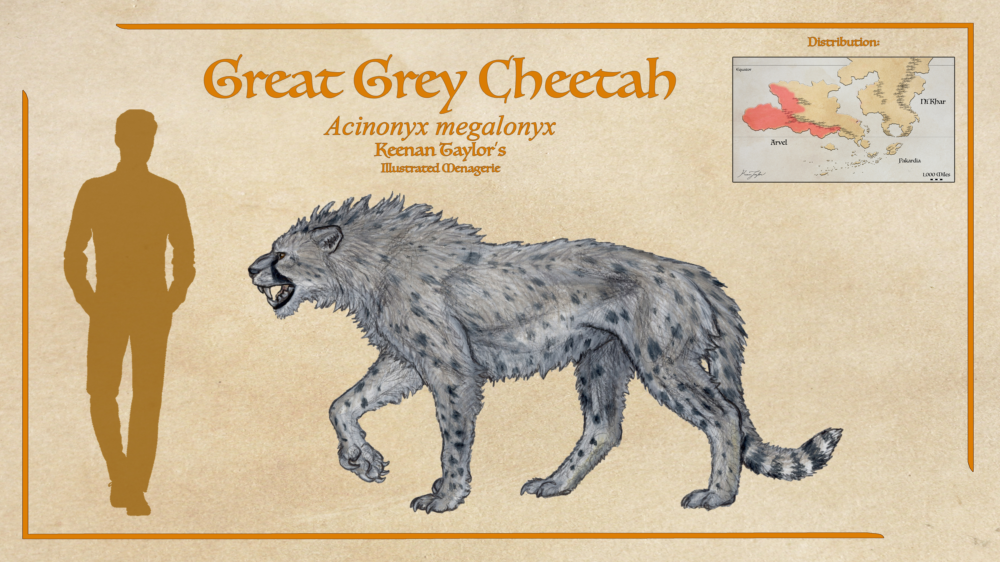
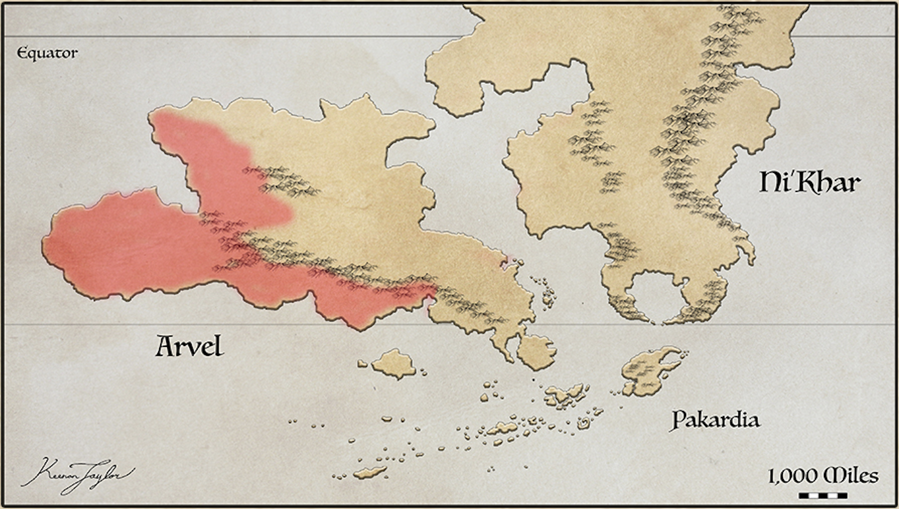
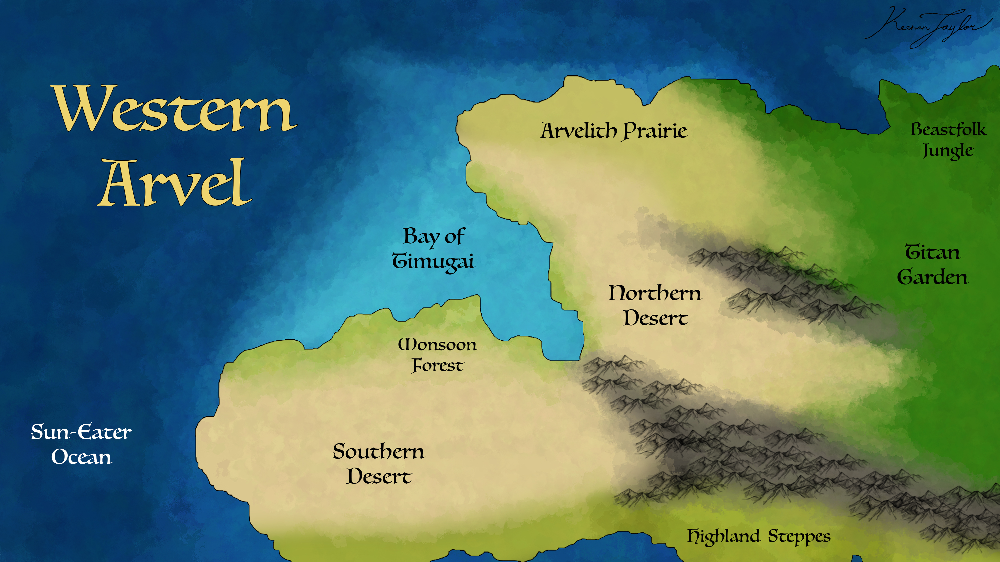
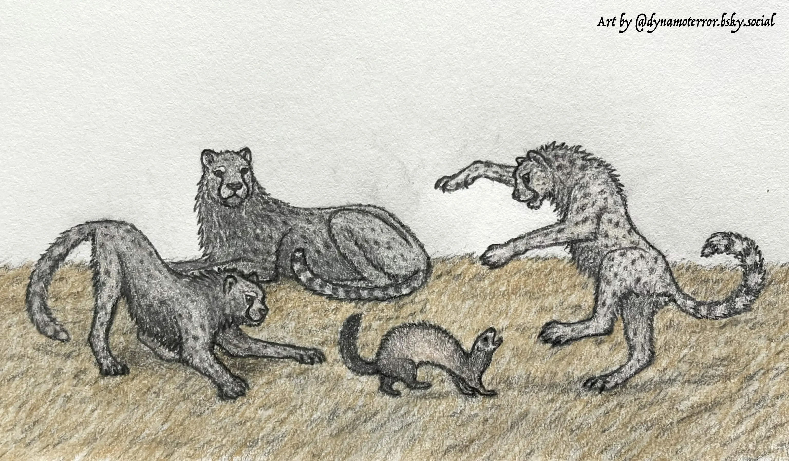
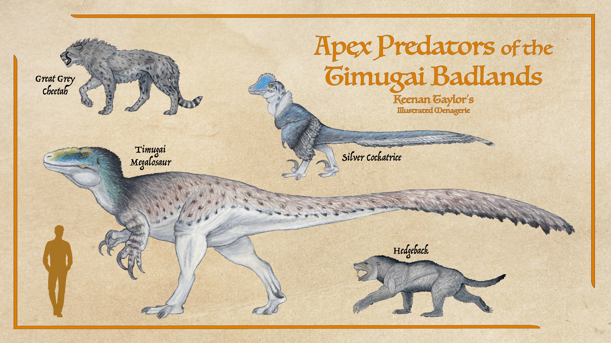
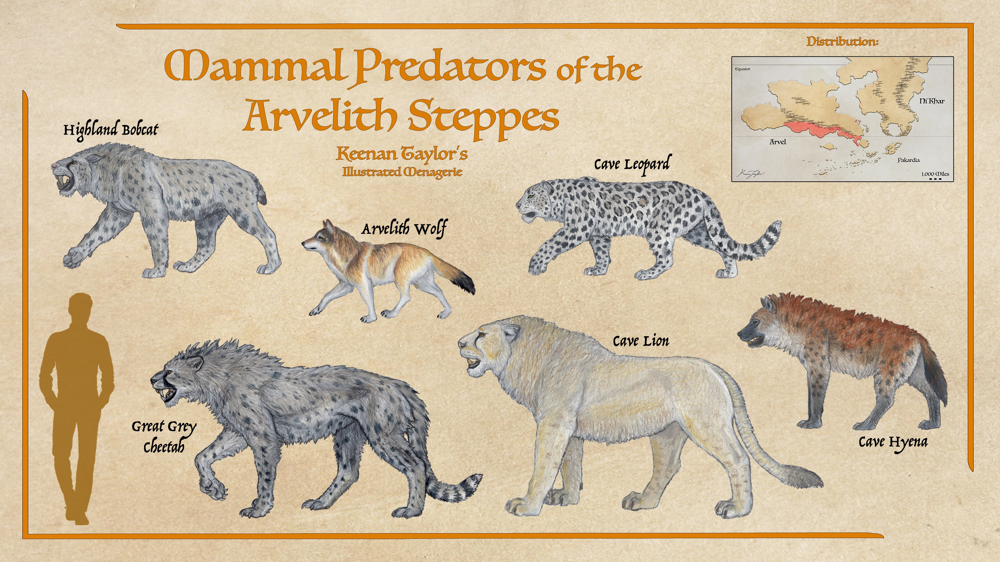

01 · MORPHOLOGY
Description
The great grey cheetah (Acinonyx megalonyx), also known as the Timugai cheetah, is an exceptionally large felid endemic to western and southern Arvel. It represents one of the most unusual evolutionary developments within Felinae, retaining the fundamental cursorial adaptations of the cheetah lineage while possessing a substantially more robust body, enlarged cranial musculature, powerful forelimbs, and disproportionately developed grasping claws. With the largest males attaining body masses of approximately 250 kilograms, the species is the heaviest known member of Felinae on either Earth or Kaimere. Its extraordinary size places it among the most imposing mammalian predators of the Known World, although its proportions differ considerably from those of the larger pantherines. Rather than achieving its size through the heavily reinforced, relatively short-limbed construction characteristic of many large terrestrial felids, A. megalonyx retains an elongated, athletic silhouette, combining an enlarged torso with long limbs and a flexible vertebral column. The resulting animal is neither a conventional cheetah enlarged to extreme proportions nor a typical powerfully built big cat, but a specialized cursorial predator in which speed, grappling strength, and the ability to subdue comparatively large prey have evolved together.
In overall appearance, the great grey cheetah retains the recognizable outline of a large Acinonyx, but its proportions are considerably more imposing. The trunk is elongated yet deep, with a broad thorax, substantial abdominal musculature, and a powerful pelvic region supporting exceptionally developed hindlimbs. Its body is not as lightly constructed as that of smaller cheetahs, and the musculature of the shoulders and forequarters is especially pronounced. The resulting silhouette is less gracile than that of the great white cheetah or modern African cheetah, producing an animal whose build approaches that of a large terrestrial grappling predator while retaining the fundamental locomotor characteristics of a cursorial felid. Its mass is distributed across a strongly muscled axial skeleton, and its limbs are sufficiently elongated to preserve considerable stride length despite the additional weight. This combination allows the species to accelerate rapidly across open terrain, although its greater body mass and reinforced forequarters necessarily impose limitations on maximum speed, maneuverability, and endurance when compared with its smaller relatives.
The distinction between the great grey cheetah and other large felids is particularly evident in the relationship between its locomotor apparatus and its prey-capture anatomy. Cheetahs on Earth rely heavily upon acceleration, rapid directional changes, and the use of their forelimbs to destabilize fleeing prey. The Timugai cheetah retains these basic characteristics but places greater emphasis on physical restraint. Its forelimbs are more robust and flexible, allowing the animal to redirect its momentum, seize struggling prey, and maintain control during close contact. The shoulder girdle supports powerful musculature, while the forearm and manus provide the leverage required to grapple with animals substantially heavier than the usual prey of smaller cheetahs. These modifications are not without costs. The additional muscular development and skeletal reinforcement increase the mass that must be accelerated during a sprint, while the greater emphasis on grappling reduces the degree to which the limbs are optimized exclusively for high-speed running. Nevertheless, the species remains the fastest large predator in western Arvel, retaining sufficient cursorial ability to overtake the numerous camelids, horses, and elasmarians inhabiting its principal hunting grounds.
02 · DISTRIBUTION
Habitat Range and Distribution

The great grey cheetah is endemic to western and southern Arvel, where it occupies a geographically extensive but historically contracted distribution encompassing subtropical deserts, semi-arid steppes, open prairies, mountainous uplands, and seasonally humid monsoon forests. Its present range is concentrated in the western portion of the continent, particularly within the Timugai Badlands and the surrounding desert and highland systems bordering the Sun-Eater Ocean. Although the species is conventionally classified as an inhabitant of open country, its ecological distribution is considerably more complex than this designation implies. Great grey cheetahs exploit a heterogeneous assemblage of environments whose suitability depends upon the availability of terrestrial prey, the distribution of dependable water sources, the configuration of local terrain, and the presence of competing large predators. Their habitat preferences are therefore best understood in relation to the broader climatic and ecological structure of western Arvel, where pronounced seasonal fluctuations in precipitation produce substantial changes in vegetation, surface water, and prey distribution.

Western Arvel constitutes one of the most distinctive climatic regions of Kaimere. The immense Arvelith Highlands separate its predominantly arid western territories from the considerably more humid environments of eastern Arvel, creating a substantial rain shadow across the continental interior. Moisture-bearing air originating over the Trakaiam Sea releases much of its precipitation along the eastern slopes of the mountain chain, sustaining the Titan Gardens and Beastfolk Jungle. As these air masses cross the highlands and descend toward the west, they lose much of their moisture and warm through adiabatic compression. The resulting atmospheric conditions favor extensive deserts and semi-arid landscapes, despite the region's relatively low latitude and proximity to warm tropical waters. For much of the year, prevailing winds transport hot, dry continental air toward the Sun-Eater Ocean, reinforcing the aridity of the western interior and limiting the development of continuous forest cover. These conditions establish the principal environmental framework within which the great grey cheetah persists, particularly in the extensive open landscapes where visibility, terrain accessibility, and the distribution of herbivorous animals favor cursorial predation.
The deserts of western Arvel represent the species' principal habitat. These aridlands are not uniform expanses of loose sand, but complex geomorphological systems comprising gravel plains, rocky plateaus, wind-carved badlands, stabilized dune fields, dry river channels, and isolated uplands. Vegetation is generally sparse, consisting of drought-tolerant shrubs, scattered trees, seasonal herbs, and grasses concentrated in locations where soil moisture is temporarily available. During prolonged dry periods, much of the landscape becomes comparatively barren, with biological activity concentrated around permanent springs, groundwater-fed depressions, and the limited number of rivers descending from the Arvelith Highlands. The apparent scarcity of life across the intervening terrain nevertheless conceals a productive network of ecological refugia capable of supporting substantial herbivore populations.
These desert environments are particularly suitable for the great grey cheetah because they combine extensive hunting grounds with terrain that permits rapid acceleration and relatively unobstructed movement. Sparse vegetation allows individuals to detect potential prey over considerable distances, while rocky outcrops, shallow ravines, and irregular ground provide opportunities for concealment during the final approach. The species does not depend upon the uninterrupted, level grasslands conventionally associated with smaller cheetahs. Instead, its robust body and comparatively flexible forelimbs allow it to exploit broken terrain while retaining sufficient cursorial ability to pursue swift herbivores. Although its maximum speed and endurance are reduced relative to those of more gracile cheetahs, it remains exceptionally fast for a predator of its size. Consequently, the western deserts provide an effective combination of open ground for pursuit and localized structural complexity for ambush and prey interception.
The distribution of prey within these deserts is strongly influenced by the availability of water. Permanent oases and springs attract camelids, horses, elasmarians, and other terrestrial herbivores, particularly during the latter stages of the dry season, when scattered sources of surface water become increasingly important. These concentrations create predictable hunting opportunities for large predators, including the great grey cheetah. Male coalitions are frequently observed in the vicinity of major water sources, where they can exploit the movements of prey populations and potentially benefit from repeated access to productive hunting grounds. Although the species obtains a substantial proportion of its water from the animals it consumes, its unusually large body may impose greater absolute water requirements than those of smaller cheetahs. Whether this physiological consideration directly determines its association with oases remains uncertain, since these sites simultaneously provide access to prey, travel corridors, and locations where individuals can encounter potential coalition partners.
The hydrological structure of western Arvel further increases the importance of these localities. The Arvelith Highlands function as the principal watershed of the region, storing precipitation in high-elevation snowfields and seasonal ice before releasing meltwater into rivers that descend across the western slopes. Many waterways become intermittent or contract substantially during the dry season, but certain spring-fed channels and groundwater-supported systems retain surface water throughout much of the year. Along these corridors, relatively persistent vegetation supports herbivores that would otherwise be unable to remain in the surrounding desert. Gallery forests, riparian scrub, and isolated patches of woodland consequently form narrow bands of biological productivity extending into otherwise arid landscapes. Great grey cheetahs may exploit these corridors as hunting grounds and movement routes, although dense vegetation immediately surrounding some water sources can limit the effectiveness of high-speed pursuit. The most favorable locations are therefore likely to be those where productive riparian environments adjoin open ground, allowing the cats to approach prey under cover before pursuing it across unobstructed terrain.
Seasonal changes in atmospheric circulation introduce an additional dimension to the ecology of western Arvel. For most of the year, descending dry air and persistent offshore winds maintain conditions unfavorable to sustained vegetation growth. The arrival of the summer monsoon, however, produces a substantial reversal in the regional climatic regime. As the land becomes warmer than the adjacent waters of the Bay of Timugai, the atmospheric pressure gradient shifts and draws moisture-laden maritime air inland. Tropical cyclones and monsoonal storms deliver concentrated rainfall to the coastal lowlands, while orographic uplift along the western foothills of the Arvelith Highlands further enhances precipitation. Rivers swell, temporary wetlands appear, and dormant vegetation responds rapidly to the renewed availability of moisture. The resulting increase in primary productivity supports a temporary expansion of herbivore populations and alters the distribution of prey across the surrounding deserts.
The monsoon does not transform all of western Arvel equally. The forests immediately surrounding the Bay of Timugai receive the greatest benefit from the seasonal influx of maritime moisture, whereas the neighboring deserts may experience little more than scattered thunderstorms and brief episodes of surface runoff. Nevertheless, even limited rainfall can produce rapid ecological responses across the aridlands, encouraging the germination of annual plants and attracting herbivores to newly productive feeding grounds. For the great grey cheetah, these seasonal changes are likely to redistribute hunting opportunities rather than eliminate the importance of permanent water sources. During wetter intervals, prey may disperse across a wider area, reducing its immediate concentration around oases. As the landscape dries, herbivores increasingly congregate near dependable water, potentially improving hunting opportunities for individuals capable of locating and exploiting these concentrations. The species consequently inhabits a landscape in which the spatial distribution of prey changes substantially over the course of the year.
The monsoon forests constitute a contrasting but ecologically significant component of the great grey cheetah's range. Situated around the Bay of Timugai, this environment develops under a highly seasonal rainfall regime that produces alternating periods of relative dryness and intense biological productivity. During the prolonged dry season, deciduous trees shed much of their foliage, understory vegetation becomes sparse, and numerous streams contract into isolated pools. The forest consequently assumes the appearance of open woodland or wooded savanna in many localities, with broad clearings and exposed ground interspersed among denser vegetation. Following the arrival of the monsoon, rainfall replenishes the soil, rivers overflow, and vegetation rapidly regenerates. The canopy becomes denser, floodplains expand, and previously open areas may become difficult to traverse. These contrasting seasonal conditions create a habitat whose suitability for large terrestrial predators varies substantially throughout the year.
Great grey cheetahs occur within the monsoon forest but are considerably less common there than in the surrounding deserts and mountains. The forest's dense vegetation and irregular terrain reduce the advantages of high-speed pursuit, particularly during the wet season when ground cover becomes extensive and flooding may restrict movement. Nevertheless, the species can exploit woodland margins, riverine clearings, seasonally open forest, and transitional scrub where vegetation provides concealment without entirely obstructing pursuit. These environments may also support prey unavailable in the more exposed desert interior, particularly where herbivores congregate along waterways or exploit the brief abundance of seasonal vegetation. The monsoon forest therefore appears to function as a supplementary habitat rather than the principal ecological center of the species. Its relative scarcity within this environment may reflect both the limitations imposed by vegetation structure and the presence of competing predators better adapted to hunting within dense cover.
The predator community of western Arvel further influences the distribution of the great grey cheetah. Silver cockatrices, large and socially flexible dromaeosaur predators, are among the most widespread terrestrial carnivores in the region. Their adaptability allows them to hunt across deserts, steppes, mountains, and forest margins, while their ability to operate independently or in groups provides access to prey of varying sizes. They are particularly important competitors in open habitats, where their mobility and behavioral flexibility permit them to exploit many of the same herbivore populations as the great grey cheetah. The Timugai megalosaur, an enormous member of the regional megaraptoran fauna, occupies a more specialized position as a dominant predator of the badlands. Although its enormous size and comparatively less cursorial build distinguish its hunting ecology from that of the cheetah, its presence contributes to the structure of the regional predator community and may influence the distribution and behavior of smaller carnivores.
The great grey cheetah's predominantly nocturnal activity is especially significant in this context. Silver cockatrices are generally more effective during daylight, when their visual systems function most effectively. By hunting after sunset, great grey cheetahs can reduce the frequency of direct encounters with these competitors while exploiting prey that remain active during the cooler hours. Nocturnal hunting is also advantageous during periods of intense daytime heat, particularly in the exposed deserts where shade is limited. However, this temporal specialization is less favorable in the southern Arvelith steppes, where cave hyenas become particularly dominant after dark. Their clan-based social organization and tendency to scavenge or appropriate the kills of other predators create a substantial challenge for a large solitary hunter that requires considerable quantities of food. Cave lions also pose a potential threat to feeding success, particularly where their ranges overlap with those of the cheetahs. The species' distribution is consequently shaped not simply by the availability of suitable terrain and prey, but also by the extent to which local predator communities permit it to hunt and feed without excessive interference.
The Arvelith Highlands represent another important component of the great grey cheetah's habitat. Although the mountain chain has traditionally been regarded as the eastern boundary of the species' range, confirmed sightings suggest that this interpretation may be overly restrictive. The highlands encompass a broad range of environments, including exposed slopes, rocky plateaus, sheltered valleys, upland grasslands, and forested drainage systems. Elevation produces considerable local variation in temperature and precipitation, while the mountains' extensive watersheds sustain rivers that remain productive after rainfall has ceased elsewhere. These conditions support diverse herbivore populations and create numerous corridors connecting the western deserts with the more humid interior.
The great grey cheetah's robust build and relatively flexible forelimbs may be advantageous in these rugged environments, allowing it to negotiate uneven terrain and grapple with prey at close quarters. Although its locomotor specializations remain those of a cursorial predator, the species is not restricted to flat ground. Slopes, rocky terraces, and valley margins can provide suitable hunting opportunities where prey movements are predictable and vegetation remains sufficiently open. Its presence in the highlands is nevertheless poorly documented. The animal's nocturnal habits, its resemblance to certain grey-furred forms of Homotherium, and its body proportions, which can suggest a cave lion when observed at a distance, complicate identification. These factors may have contributed to an underestimation of its distribution across the mountainous interior and the transitional landscapes east of the principal desert systems.
Historically, the great grey cheetah occupied a substantially broader range across southern Arvel. Its former distribution extended through the southern steppes and onto the Qajarith Peninsula, where extensive open habitats supported populations of terrestrial herbivores and provided conditions favorable to a large cursorial predator. The peninsula appears to have functioned as an important refuge as the species declined elsewhere, although the precise chronology and causes of its regional contraction remain uncertain. Approximately ten thousand years ago, the arrival of the First Children initiated a period of intensive human alteration of the peninsula's megafaunal communities. Their deliberate culling of large animals to reduce the dangers associated with settlement substantially altered the regional predator — prey system. The resulting reduction in prey availability, combined with the direct pressures imposed upon large carnivores, ultimately eliminated the peninsula's remaining great grey cheetahs. Western Arvel consequently became the species' final major stronghold.
The modern distribution of A. megalonyx should therefore be understood as the product of both habitat suitability and historical range contraction. Its principal populations persist in the western deserts and mountainous regions, where open terrain, seasonally concentrated prey, and relatively predictable water sources support its distinctive combination of cursorial and grappling adaptations. Smaller and less frequently observed populations occupy the monsoon forests and the transitional environments of the southern steppes, while historical evidence indicates that the species once extended considerably farther across the continent. Reports from east of the Arvelith Highlands suggest that its actual distribution may exceed conventional estimates, particularly where open uplands and valleys provide continuous habitat between the mountains and the interior steppes. Whether these occurrences represent a connected population or a series of isolated remnants remains unresolved. What is clear is that the great grey cheetah is not merely a desert specialist, but a large and ecologically flexible felid whose present distribution reflects the interaction of western Arvel's extreme climatic seasonality, complex topography, diverse prey communities, and an increasingly restrictive historical range.
03 · NOMENCLATURE
Etymology
The great grey cheetah, is also known as the Timugai cheetah, a regional name derived from its principal association with the deserts, highlands, and other arid environments of western Arvel. The common name great grey cheetah refers to the species' exceptionally large body size and characteristic grey pelage, which distinguishes it from the smaller cheetahs inhabiting other regions of Kaimere. Among the largest known representatives of Felinae, the species possesses a substantially more robust constitution than its more gracile relatives, with enlarged forequarters, powerful jaws, and unusually developed foreclaws. The alternative designation, Timugai cheetah, associates the animal with the Timugai region and its distinctive assemblage of large predators, including the enormous Timugai megalosaur. Both common names are used interchangeably, although the former emphasizes its external appearance and exceptional dimensions, whereas the latter reflects its geographical and ecological identity.
The generic name Acinonyx is derived from the Ancient Greek akínētos (ἀκίνητος), meaning "motionless" or "immobile," and ónyx (ὄνυξ), meaning "claw." The name refers to the distinctive claw morphology characteristic of cheetahs, whose claws are considerably less retractile than those of most other felids. This condition provides improved traction during rapid terrestrial locomotion, allowing the animal to maintain its footing while accelerating and changing direction. Although the great grey cheetah is substantially heavier and more powerfully constructed than the smaller members of its genus, it retains this fundamental anatomical characteristic. Its claws remain adapted to cursorial movement, while its exceptionally enlarged forelimb dew claws additionally assist in gripping, destabilizing, and restraining relatively large prey. The genus name therefore remains applicable to the species despite its departure from the lightweight body plan commonly associated with cheetahs.
The specific epithet megalonyx is derived from the Ancient Greek mégas (μέγας), meaning "great" or "large," and ónyx (ὄνυξ), meaning "claw." The combined name may consequently be interpreted as "great-clawed" or "large-clawed." This designation refers principally to the species' disproportionately developed dew claws, which are among the largest found in any cheetah, both in absolute dimensions and relative to body size. Unlike the more modestly developed dew claws of smaller cheetahs, those of A. megalonyx are sufficiently enlarged that they are commonly held in a forward-oriented position rather than pointing predominantly backward. Their morphology reflects the species' increased reliance on forelimb grappling during the capture of large-bodied prey. Although the animal retains the capacity for rapid pursuit, its greater mass and more robust forequarters distinguish it from the highly gracile cheetahs upon which the genus is conventionally based. The epithet thus identifies one of the most conspicuous anatomical specializations of the species rather than referring exclusively to its overall size.
The name Timugai cheetah remains particularly useful in regional zoological literature because the species occupies an ecological setting characterized by unusually large and diverse predators. Western Arvel supports several major carnivorous lineages, including the Timugai megalosaur, silver cockatrices, hedgebacks, and multiple large felids. Within this assemblage, the great grey cheetah is distinguished by its combination of considerable body mass, high terrestrial speed, and a predominantly nocturnal activity pattern. Its association with desert water sources and mountainous terrain has also contributed to its recognition as a characteristic predator of the western Arvelith region. The regional name therefore functions as more than a geographical label, distinguishing this particular cheetah from other large-bodied members of the genus occurring elsewhere on Kaimere.
04 · ANATOMY AND PHYSIOLOGY
Adaptations
The great grey cheetah represents an extreme specialization within the cheetah lineage toward large-bodied cursorial predation. Descended from the Eurasian giant cheetah (Acinonyx pardinensis), it retains the elongated limbs, flexible vertebral column, and running-adapted extremities characteristic of its ancestors, but combines these features with a substantially more robust skeleton, enlarged cranial apparatus, powerful forelimbs, and exceptionally developed dew claws. At a maximum recorded mass of approximately 250 kilograms in large males, it is the largest known member of Felinae on either Earth or Kaimere.
Its morphology reflects the demands of pursuing and subduing relatively large prey across the arid badlands, deserts, and open steppes of western Arvel. Unlike smaller cheetahs, which rely heavily on acceleration and extreme sprint speed to capture comparatively light prey, the great grey cheetah possesses a more balanced combination of cursorial ability, grappling strength, and killing power. Its body is sufficiently elongated and athletic to sustain high-speed pursuit, while its heavier trunk, powerful shoulders, and enlarged forequarters provide the mechanical strength necessary to destabilize and restrain larger animals.
The species inhabits a geographically and climatically varied region, encompassing dry desert basins, rocky highlands, open grasslands, and monsoon forests. Its morphology is particularly suited to the open, relatively dry landscapes where it is most abundant, although its adaptations do not prevent it from operating in wooded or mountainous terrain. Its predominantly nocturnal activity further distinguishes it from smaller, primarily diurnal cheetahs and reduces its exposure to the silver cockatrice, an important competitor in western Arvel.
Skull
The skull of the great grey cheetah exhibits a robust cranial architecture that distinguishes it from the more gracile skulls of smaller cheetahs and other cursorial felids. Although it retains the fundamental anatomical organization characteristic of Felidae, its proportions reflect the mechanical demands imposed by its exceptional body mass, powerful forelimbs, and capacity to subdue comparatively large prey. The cranium is broad, the facial skeleton deep, and the mandibular apparatus substantially developed. These characteristics provide the structural foundation for powerful jaw closure and sustained gripping, allowing the animal to restrain prey through a combination of biting, pulling, and forceful movements of the head and neck. Rather than representing a simple enlargement of the typical cheetah skull, the cranial anatomy of A. megalonyx reflects a shift in functional emphasis from minimizing head mass for high-speed pursuit toward balancing locomotor efficiency with the demands of grappling and controlling large-bodied animals.
The overall cranium is comparatively massive in relation to that of the great white cheetah. Its greatest breadth occurs across the posterior facial region and the zygomatic arches, while the rostrum remains relatively compact and deep. The resulting skull is neither as narrow nor as lightly constructed as that of the smaller, more gracile members of the genus. This increased breadth provides additional space for the muscles responsible for jaw closure and permits a more substantial arrangement of the bones surrounding the tooth-bearing portions of the face. The relatively shortened facial region also improves the mechanical efficiency of the bite by reducing the distance between the principal biting teeth and the jaw joint. Because the jaw functions as a lever, a shorter effective out-lever can increase the force delivered at the teeth for a given muscular input, although the actual advantage depends upon the positions of the muscle attachments, the dimensions of the mandible, and the location at which the teeth contact the prey.
The premaxillae form the anterior extremity of the upper jaw and support the upper incisors. In the great grey cheetah, these bones contribute to a broad, substantial muzzle rather than the particularly narrow anterior profile associated with highly gracile cheetahs. Their alveolar margins must accommodate the incisors while maintaining the integrity of the anterior facial skeleton during feeding and prey restraint. The incisors are relatively minor components of the killing apparatus compared with the canines and carnassials, but they remain important in gripping tissue, stripping flesh, and manipulating food. During prey capture, the anterior teeth may help secure a hold on loose skin or other accessible tissue while the canines establish a deeper grip. The premaxillae therefore participate in the transfer of localized forces through the front of the skull, where asymmetrical loading can occur if the animal bites into moving prey at an oblique angle.
Immediately behind the premaxillae, the maxillae form much of the upper facial skeleton and support the upper canine teeth, premolars, and other cheek teeth. These bones are particularly important to the great grey cheetah because the canines may be subjected to considerable bending forces when embedded in the neck, muzzle, or other substantial tissues of a struggling animal. A canine does not experience only direct compression during such an encounter: movement by the prey can produce lateral loading and torsion, particularly if the predator maintains its grip while pulling or repositioning its head. The depth and reinforcement of the maxillae help distribute these forces around the canine alveoli and into the surrounding facial skeleton. The upper jaw must remain sufficiently rigid to prevent excessive deformation of the tooth-bearing region, since displacement of the canines relative to the lower teeth could compromise the effectiveness of the bite or increase the risk of dental injury.
The maxillae also contribute to the substantial proportions of the muzzle. Their increased depth accommodates the roots of the teeth and provides a reinforced framework around the oral cavity, while the broad facial region helps distribute stresses between the rostrum and the more posterior portions of the cranium. This arrangement is especially relevant when the great grey cheetah attempts to maintain a grip on prey that substantially exceeds the mass of smaller ungulates normally taken by more lightly built cheetahs. The skull must withstand not only the initial impact of the bite but also the repeated loading associated with a prey animal twisting, struggling, or attempting to dislodge the predator. Nevertheless, the maxillae are not merely passive supports for the teeth; their shape also reflects the spatial requirements of the nasal passages and the need to preserve adequate respiratory function in a large, active predator.
The nasal bones extend along the dorsal surface of the rostrum, forming the upper boundary of the nasal cavity. Their proportions contribute to the deep profile of the muzzle, while the underlying nasal passages accommodate airflow during ordinary activity and strenuous locomotion. Although the great grey cheetah is more robustly constructed than the great white cheetah, it remains a cursorial predator and cannot sacrifice respiratory efficiency without consequence. Its nasal region must therefore accommodate the requirements of ventilation alongside the structural demands of a broader facial skeleton. The relationship between skull proportions and respiratory capacity should not, however, be interpreted as a direct measure of running performance: airflow is also influenced by the soft tissues, nasal turbinates, pharynx, and other components of the respiratory tract. The skull provides the enclosing framework for these structures rather than determining respiratory efficiency on its own.
The lacrimal bones form part of the anterior margins of the orbits and contribute to the separation between the orbital cavities and the nasal region. The orbits are directed forward, preserving the binocular visual field characteristic of felids. This orientation allows the great grey cheetah to estimate distances and track the movements of prey with considerable precision, particularly during the approach and final stages of an attack. Its hunting strategy places substantial demands on visual judgment, even where capture depends less upon an uninterrupted high-speed chase than it does in smaller cheetahs. A large prey animal may change direction abruptly, turn toward the predator, or attempt to strike with its head or limbs. Accurate visual assessment is consequently important not only for interception but also for choosing an approach angle that minimizes the risk of injury. The orbital margins must protect the eyes while retaining sufficient space for the visual apparatus, and the surrounding cranial bones provide a stable framework for the muscles that move and orient the head.
The frontal bones form the dorsal roof of the anterior braincase and contribute to the upper margins of the orbits. In the great grey cheetah, their relationship to the broader facial region produces a substantial transition between the rostrum and neurocranium. The frontals provide a protective covering over the anterior portion of the braincase while also forming part of the structural framework that resists forces transmitted through the face during biting. Their surfaces and adjoining sutures distribute stress across the cranial roof rather than concentrating it at a single point. This is particularly important in a predator whose prey may exert considerable leverage against the head during restraint. The frontal bones must also accommodate the orbital region without excessive weakening of the surrounding structure, preserving the balance between cranial protection and the spatial requirements of the eyes.
Posterior to the frontals, the parietal bones form much of the dorsal surface of the neurocranium. The parietal region provides attachment for the temporal musculature and contributes to the strength of the cranial vault. In a large, powerfully built felid, the temporal muscles are expected to be substantially developed because they supply much of the force required to elevate the mandible and close the jaws. Their attachment areas are therefore an important component of cranial architecture. The sagittal crest, where developed, increases the surface available for attachment of the temporalis muscles along the dorsal midline. Its prominence may vary with age, sex, individual size, and the degree of muscular development. It would be inappropriate to assume that every adult possesses an equally pronounced crest, but the substantial jaw musculature expected in A. megalonyx would favor adequate attachment surfaces across the parietal region. The resulting structure helps accommodate muscular power without requiring the entire skull to become proportionately deeper or heavier.
The temporal fossae, located on the lateral surfaces of the cranium, provide space for the temporalis muscles. These muscles arise from the temporal region and insert upon the coronoid processes of the mandible, generating an important component of the force that closes the jaws. In the great grey cheetah, the relationship between the temporal fossae, parietal region, and zygomatic arches is expected to be more substantial than in smaller, more lightly built cheetahs. Increased space for the temporal musculature can support greater muscle volume, although the size of the fossae alone does not determine bite force. Muscle architecture, fiber orientation, physiological cross-sectional area, and the mechanical leverage of the mandible all contribute to the final result. The temporal region should therefore be understood as one element of an integrated feeding apparatus rather than an isolated indicator of cranial strength.
The zygomatic arches are among the most important structural features distinguishing the broad cranium of the great grey cheetah. Each arch is formed principally by the jugal and the zygomatic process of the temporal bone, with its anterior region connected to the maxilla. The arches extend laterally from the face and help define the width of the skull behind the orbits. They also provide attachment for the masseter muscles, which contribute to jaw closure and stabilization. Their breadth increases the available space for these muscles and helps accommodate the substantial muscular apparatus expected in a predator of this size. At the same time, the arches must resist bending and torsional stresses generated when the animal bites unevenly or maintains contact with moving prey. A broad arch does not automatically guarantee exceptional strength, since its mechanical performance depends upon its cross-sectional shape, cortical thickness, internal structure, and points of attachment. Nevertheless, the more robust construction of the great grey cheetah is consistent with the need to transmit greater forces through the lateral cranium than would normally be expected in a much smaller cheetah.
The squamosal region of the temporal bone forms the principal cranial component of the jaw articulation. Its mandibular fossa receives the condylar process of the mandible, creating the joint through which the lower jaw opens and closes. As in other felids, this articulation primarily permits a hinge-like movement suited to rapid closure and the maintenance of a secure bite. Extensive side-to-side movement is unnecessary for the principal killing action and would compromise the precise alignment of the canines and carnassial teeth if it were permitted without constraint. The joint must instead allow sufficient opening for the canines to engage the prey while remaining stable under loading. In A. megalonyx, this stability is particularly important because the animal's substantial head and powerful neck can generate significant forces while it pulls backward or repositions its grip. The mandibular articulation must withstand these movements without allowing excessive displacement of the condyle.
The palate, formed principally by the palatine processes of the maxillae and the palatine bones, creates a rigid partition between the oral and nasal cavities. It also forms a structural platform through which some of the forces generated during biting can be distributed across the facial skeleton. Posteriorly, the pterygoid region provides attachment for the medial pterygoid muscles, which assist jaw closure and contribute to stabilization of the mandible. These muscles work in concert with the temporalis and masseter rather than acting independently. Their combined action produces the controlled, sustained closure required to retain a grip on struggling prey. The broad facial construction of the great grey cheetah provides space for this muscular arrangement while maintaining the integrity of the palate and surrounding bones. The result is a feeding apparatus better suited to prolonged restraint than one optimized exclusively for the rapid closure and release associated with smaller prey.
The posterior cranium is formed by the occipital complex, including the supraoccipital, exoccipital, and basioccipital regions. These bones surround the foramen magnum, through which the spinal cord enters the cranial cavity, and provide attachment surfaces for muscles and ligaments controlling the head and neck. In the great grey cheetah, these attachments are particularly significant because prey restraint involves more than the isolated action of the jaw muscles. The animal must stabilize its head while the neck muscles oppose the movements of the prey, and its forelimbs may simultaneously pull, hold, or reposition the target. The occipital region consequently forms part of a broader mechanical system linking the skull to the cervical vertebrae and shoulder girdle. A robust cranial attachment for the neck musculature helps control head movement during forceful biting, while the surrounding bones protect the junction between the braincase and vertebral column.
The occipital condyles articulate with the atlas, the first cervical vertebra, and permit movement of the head relative to the neck. Their form must balance mobility with stability. The great grey cheetah requires sufficient movement to track prey, adjust the position of its jaws, and respond to sudden changes in the direction of a struggle. At the same time, the head must remain securely aligned with the cervical column when the animal applies force through its teeth. The neck musculature and supporting ligaments help control these movements, reducing the likelihood that the skull will be displaced excessively during restraint. This integration of cranial and cervical anatomy is especially important in a felid that combines substantial body mass with a hunting technique involving close physical contact with large animals.
The mandible follows the robust pattern evident throughout the skull. Each dentary forms the principal tooth-bearing bone of the lower jaw, extending from the anterior symphyseal region to the ascending ramus. Compared with the relatively slender mandible expected in smaller, highly gracile cheetahs, that of A. megalonyx is deeper and more substantial, providing a stronger longitudinal structure between the biting teeth and the jaw joint. Its depth helps resist bending when the canines are embedded in prey and forces act against the lower jaw. The mandibular symphysis, where the left and right dentaries meet at the front of the jaw, must also withstand stresses produced when the animal bites asymmetrically. Although the two sides of the mandible remain separate bones, their union at the symphysis helps stabilize the anterior jaw and limits excessive independent movement under load.
The ascending ramus rises behind the tooth-bearing body of the mandible and supports the major jaw-closing muscles. Its coronoid process provides the principal insertion for the temporalis muscle, while the masseter attaches along the lateral surface and the angular region. The relative size and orientation of these processes influence the leverage available to the jaw muscles. A well-developed coronoid process can accommodate a substantial temporalis insertion, while the angular region contributes attachment for the masseter and medial pterygoid. The mandibular condyle articulates with the temporal bone, completing the lever system through which muscular force is transmitted to the teeth. The great grey cheetah's robust mandible and substantial muscle attachments are consistent with powerful biting, but the amount of force produced in any particular bite will depend on the animal's posture, the degree of jaw opening, the location of tooth contact, and the muscles recruited during the action.
The skull's functional significance is most evident during the capture of large prey. A great grey cheetah may need to establish a grip on the neck or muzzle of a camelid, withstand vigorous movements of the head and body, and maintain contact while its forelimbs help control the animal. The canines provide penetration and secure engagement, while the cheek teeth and carnassials are adapted for cutting and processing flesh. The jaw musculature maintains closure, and the reinforced facial skeleton distributes the resulting loads toward the cranium. No single bone or muscle performs this task alone. Successful restraint depends upon coordinated action across the maxillae, zygomatic arches, temporal region, mandible, and cervical musculature. The skull's robustness is therefore not simply a consequence of the animal's large size; it reflects the mechanical demands of a hunting strategy that exposes the head to substantial forces at close quarters.
On the basis of its exceptional body mass, comparatively broad cranium, deep facial skeleton, and substantial jaw musculature, the great grey cheetah would be expected to possess a considerably stronger bite than smaller cheetahs. A provisional estimate for an adult A. megalonyx is approximately 900 — 1,200 PSI at the principal canine contact surfaces, with exceptionally large, fully mature individuals potentially reaching around 1,300 — 1,500 PSI during a maximal bite. These figures are speculative biomechanical estimates for the species, not measured values, and should be treated as working estimates pending a more detailed model of its skull dimensions and jaw-muscle anatomy. PSI describes pressure at the point of contact rather than total bite force: the pressure generated by the teeth depends upon the force applied and the area over which that force is distributed. Bite performance will also vary with the position of the bite, since a bite delivered near the canines generally differs mechanically from one delivered farther back along the tooth row. These estimates should therefore not be interpreted as a single fixed value applicable to every bite or individual. The estimated bite pressure is consistent with the great grey cheetah's role as a massive felid capable of restraining prey larger and more dangerous than those typically pursued by smaller members of Acinonyx. It does not imply that the species possesses the specialized crushing apparatus of the most robust pantherines, nor that bite pressure alone determines its ability to kill large prey.
Dentition
The dentition of the great grey cheetah represents a robustly developed version of the specialized carnivoran dental apparatus characteristic of Felidae. Although its teeth retain the fundamental arrangement found in other living felids, their proportions and mechanical relationship with the skull reflect the species' exceptional body mass and its capacity to subdue comparatively large prey. The enlarged canines, substantial tooth-bearing portions of the jaws, and powerful carnassial apparatus form an integrated feeding system adapted for penetrating tissue, maintaining a secure grip, and processing large quantities of flesh. These features distinguish the great grey cheetah from the more gracile great white cheetah and smaller members of Acinonyx, whose dentition is associated with a lighter cranial structure and a greater emphasis on capturing relatively small, agile prey.
The dental anatomy of A. megalonyx must be understood in conjunction with the remainder of its predatory apparatus. Its teeth do not independently account for the animal's ability to subdue large camels, horses, or elasmarians. Rather, the dentition establishes and maintains contact with the prey, while the reinforced skull, powerful neck, muscular forequarters, and enlarged claws contribute to restraint. During an attack, the canines penetrate and secure tissue, and the jaw musculature maintains the bite while the forelimbs are used to grip, pull, or destabilize the victim. Once the prey has been subdued, the incisors, premolars, and carnassials perform different but complementary roles in manipulating and cutting the carcass. The resulting dental system is therefore specialized not merely for killing, but for the entire sequence of feeding, from initial contact with prey to the removal and ingestion of flesh.
Like other felids, the great grey cheetah is a heterodont mammal, possessing teeth differentiated into incisors, canines, premolars, and molars. It is also diphyodont, developing an initial deciduous dentition that is subsequently replaced by permanent teeth. The deciduous teeth serve during early growth, when juveniles begin transitioning from maternal milk toward the consumption of animal tissue. The permanent dentition provides the mature animal with teeth capable of withstanding the greater mechanical demands associated with capturing live prey and processing substantial carcasses. As in other felids, the dental arcade is organized around a limited number of highly specialized teeth rather than broad grinding surfaces. This arrangement reflects an obligately carnivorous feeding strategy in which the reduction of flesh into manageable portions is more important than the prolonged grinding of plant material.
The permanent dental formula of the great grey cheetah follows the standard felid arrangement: I 3/3, C 1/1, P 3/2, M 1/1 = 30 permanent teeth. The formula therefore corresponds to six upper and six lower incisors, two upper and two lower canines, six upper and four lower premolars, and two upper and two lower molars. The total is thirty permanent teeth. The deciduous dentition contains twenty-six teeth, following the juvenile formula I 3/3, C 1/1, P 3/2, M 0/0. The absence of deciduous molars is characteristic of the felid dental pattern. The permanent molars emerge as part of the adult dentition rather than replacing deciduous molars, while the deciduous canines and premolars are eventually replaced by their permanent successors.
The dental arcades are relatively broad and substantial in keeping with the proportions of the skull. The upper arcade is supported by the maxillae, while the lower arcade is formed by the dentaries. Their arrangement maintains the close alignment required for the canines to penetrate tissue and for the carnassials to shear against one another during jaw closure. As in other felids, the mandible primarily moves through a hinge-like action rather than the extensive lateral excursions characteristic of mammals that grind plant material. This restricts unnecessary sideways displacement of the teeth and maintains effective alignment between the upper and lower cutting surfaces. The great grey cheetah's enlarged jaw apparatus allows these established felid mechanics to operate at a greater scale, accommodating the forces generated during the restraint and feeding of large-bodied prey.
The incisors form a compact row at the anterior extremity of the jaws. The six upper incisors are supported by the premaxillae, while the six lower incisors are situated along the anterior portions of the dentaries. Although small in comparison with the canines, the incisors perform several important functions. Their relatively narrow crowns and cutting margins permit precise manipulation of skin and soft tissue, allowing the animal to seize small pieces of flesh, remove tissue from exposed surfaces, and strip material from portions of a carcass. During feeding, the incisors can also help secure loose tissue while the head and neck pull against it. Their function is therefore primarily one of close-range handling rather than the delivery of the principal killing bite. The incisors also participate in grooming. Like other felids, the great grey cheetah uses its anterior teeth to manipulate the pelage and remove foreign material that accumulates during movement through its environment. Dust, dried blood, fragments of vegetation, and other debris can become caught in the coat, particularly after a hunt or while feeding on a carcass. The incisors provide a means of cleaning and separating hairs in areas that cannot be reached as effectively with the paws or tongue alone. Although their relatively small size limits their capacity to cut through thick tissue, their closely arranged crowns make them effective tools for repeated, controlled movements. Their significance lies in this precision rather than in the production of large forces.
The four permanent canines are the most conspicuous elements of the great grey cheetah's anterior dentition. The upper pair is implanted deeply within the maxillae, immediately behind the incisors, while the lower pair rises from the anterior regions of the mandible. These teeth are enlarged relative to those of smaller cheetahs, reflecting the greater demands placed upon them during prey restraint. Their crowns are elongated and pointed, providing the penetration necessary to establish a secure grip in the neck, muzzle, or other accessible regions of a prey animal. They are conical rather than developed into the extreme, blade-like forms associated with specialized saber-toothed predators. This configuration favors penetration and resistance to the varied loading experienced during a struggle rather than the delivery of a single, exceptionally deep cutting wound. The geometry of the canines is mechanically important. During a bite, the teeth may encounter forces directed along their long axes, but they are also exposed to bending and torsion as prey twist, kick, or attempt to pull away. A canine embedded in the tissues of a large camelid or elasm arian may be subjected to considerable lateral loading if the prey turns its head while the predator maintains its grip. The teeth must therefore resist more than simple compression. Their crown and root geometry, the properties of the underlying dentine, and the supporting periodontal tissues all contribute to their ability to withstand these forces. The enlarged canines of A. megalonyx are suited to penetrating substantial tissue and retaining contact during a prolonged struggle, while the surrounding bones distribute the resulting stresses through the skull. The roots of the canines extend into the maxillary and mandibular alveoli, anchoring the teeth within the jaws. Deep implantation is important because the functional value of a canine depends not only upon its ability to enter tissue, but also upon its ability to remain securely supported once the prey begins to resist. The periodontal ligament and associated tissues provide a limited degree of compliance around each root, helping distribute forces between the tooth and the alveolar bone. The surrounding bone must resist localized pressure and bending without excessive deformation. This relationship between crown, root, periodontal tissues, and jaw is particularly important in a large predator whose prey may be capable of inflicting serious injuries if it escapes or dislodges the bite. The great grey cheetah's canines therefore function as penetrating anchors within a larger restraint system, rather than as isolated weapons. The canines also contribute to prey dispatch. When the animal secures a bite around the throat or muzzle, the teeth maintain contact while the jaw muscles and neck musculature apply sustained pressure. The exact location of the bite varies according to prey size, posture, and the circumstances of the attack. Smaller prey may be subdued relatively quickly, whereas larger animals require more extensive restraint and coordinated use of the forelimbs. In such cases, the canines provide the initial hold, but the outcome depends upon the predator's ability to maintain that hold and prevent the prey from using its mass or limbs effectively. The great grey cheetah's enlarged canines are consequently associated with a more demanding prey-subduing role than that of smaller, more gracile cheetahs, without requiring the specialized cranial and dental architecture of a machairodont.
Immediately behind the canines lie the premolars, which form a transitional series between the anterior gripping teeth and the carnassial apparatus. The upper jaw possesses three permanent premolars on each side, while the lower jaw possesses two. These teeth generally have pointed cusps and cutting margins rather than broad, flattened surfaces for grinding. Their functions include gripping tissue, puncturing resistant material, and tearing flesh during feeding. The more posterior premolars are particularly important because they lie closer to the principal shearing teeth and contribute to the processing of thick muscle and connective tissue. Their crowns and roots must tolerate the forces generated when the animal pulls at a carcass or separates portions of tissue that remain attached by tough connective structures. The premolars also assist in retaining food within the mouth during feeding. When the great grey cheetah removes a portion of muscle from a carcass, the teeth engage the tissue while the head and neck draw backward. The premolars help stabilize the portion being removed and guide it toward the posterior cutting teeth. Their pointed crowns are suited to puncturing and holding rather than crushing, and their relatively narrow surfaces limit the extent to which they function as grinding structures. This arrangement is consistent with the feeding habits of an obligate carnivore that processes muscle and other animal tissues rather than mechanically reducing large quantities of fibrous vegetation. The principal shearing structures are the carnassials: the upper fourth premolar, designated P⁴, and the lower first molar, designated M₁. These teeth form the functional center of the felid dentition. Their elongated, blade-like crowns pass closely against one another during jaw closure, producing a scissor-like action that cuts muscle, fascia, and connective tissue. The carnassials are not broad grinding teeth. Their effectiveness depends upon the alignment of their cutting surfaces and the controlled movement of the mandible, which allows the opposing blades to shear through tissue with relatively little unnecessary lateral movement.
In the great grey cheetah, the carnassials operate within a larger and more robust dental apparatus than that of smaller cheetahs. Their size and supporting structures are consistent with the need to process substantial portions of flesh from large carcasses. Following a successful hunt, the animal must separate muscle and connective tissues into pieces that can be swallowed. The carnassials provide the primary cutting action, while the canines and premolars secure the tissue and the incisors assist with finer manipulation. These functions are closely integrated, allowing the animal to move between gripping, pulling, and cutting without relying on a specialized grinding phase. The upper carnassial, P⁴, is situated in the maxilla and forms a prominent component of the upper cheek-tooth row. Its principal shearing blade is elongated along the tooth row, with the arrangement of its cusps producing a cutting edge that engages the lower carnassial during closure. The tooth is supported by the maxillary bone, which must resist the forces transmitted through the crown as it cuts through dense tissue. The lower carnassial, M₁, is located in the mandible and possesses a prominent anterior cutting region known as the trigonid. This region forms the principal shearing component of the tooth, while the posterior portion is comparatively reduced. Together, the upper and lower carnassials provide the main mechanism for dividing flesh into manageable pieces. Although the carnassials are capable of cutting through tough tissues, the great grey cheetah's dentition is not specialized for systematically crushing large bones. The blade-like crowns of the carnassials are adapted primarily for shearing, while the pointed canines and premolars serve penetration, gripping, and tearing functions. Dense bone presents a different mechanical challenge from muscle or connective tissue, requiring resistance to high localized loads that may damage cutting edges or fracture teeth. The great grey cheetah may consume soft skeletal material or small bone fragments incidentally while feeding, but its dental organization is fundamentally that of a flesh-processing predator rather than a dedicated bone-crusher. Its large body and powerful jaws should not be taken as evidence that every part of the carcass is exploited with equal efficiency. The remaining molars are comparatively reduced in relation to the carnassials. The single upper molar on each side contributes less to the principal shearing action than P⁴, while the lower first molar forms the lower component of the carnassial pair. Broad grinding surfaces are limited because prolonged mastication is of little importance in a diet dominated by animal tissue. This reduction is characteristic of felids and reflects the evolutionary specialization of the carnivoran cheek-tooth row. In A. megalonyx, the increased dimensions of the dentition do not alter this basic arrangement: the teeth remain organized around penetration, gripping, and shearing rather than extensive crushing or grinding.
The dental tissues are subject to different mechanical demands according to tooth function. Enamel forms the hard outer covering of the crowns and protects the underlying dentine from wear. The canines must withstand penetration and repeated bending loads, while the carnassials must preserve their cutting edges during repeated contact with tough tissues and opposing teeth. Dentine supports the enamel and contributes to the structural integrity of each crown, while the roots anchor the teeth within the jaws. The interaction of these tissues with the periodontal ligament and alveolar bone is essential to dental performance. A strong crown would be of limited value if its root were inadequately supported, just as a securely implanted tooth would be ineffective if its cutting edge could not retain its shape.
Dental wear accumulates throughout the animal's life. The incisors become polished through repeated contact with tissue and during grooming, while the canines gradually lose some of their sharpest points as they penetrate hide and other resistant materials. The premolars experience wear associated with gripping and tearing, and the carnassials develop wear surfaces through their repeated shearing action. Wear is influenced by diet, age, feeding behavior, and incidental contact with grit or hard material. As the animal ages, the progressive modification of the crowns may reduce their original sharpness, although the teeth remain functional as long as their cutting surfaces and supporting structures retain sufficient integrity. The condition of the dentition can consequently provide information about age, feeding history, and the cumulative mechanical demands experienced by an individual.
The development of the dentition is closely associated with the animal's transition from dependence upon its mother to independent feeding. Great grey cheetah cubs are born without erupted teeth. Deciduous teeth emerge during early development, allowing juveniles to begin manipulating and consuming increasingly substantial portions of animal tissue as they mature. The deciduous canines and premolars provide the initial means of gripping and tearing food, but they are eventually replaced by the permanent dentition. As the permanent canines, premolars, and carnassials develop, the juvenile acquires a dental apparatus capable of tolerating the greater forces associated with capturing and processing prey. The transition to the adult dentition is therefore an important part of its development as a large terrestrial predator.
Cervical Section
The cervical apparatus of the great grey cheetah forms a powerful, highly integrated mechanical connection between the skull, trunk, and forequarters. Although the species retains the characteristic seven cervical vertebrae of mammals, the proportions of its neck, the development of its supporting musculature, and the configuration of its articulations reflect the demands imposed by its exceptional body mass and predatory behavior. Unlike the more gracile cervical apparatus of smaller cheetahs, which emphasizes low mass and efficient head stabilization during rapid pursuit, the neck of A. megalonyx must also withstand substantial forces generated during close-contact prey capture. Its enlarged skull and robust jaws place considerable demands upon the cervical column, while the movements of large prey impose additional bending, torsional, and compressive loads. The resulting structure combines controlled mobility with substantial muscular reinforcement, allowing the animal to orient its head precisely while retaining the strength necessary to maintain a grip on struggling prey.
The neck is relatively broad and heavily muscled, forming a continuous transition between the head and the deep musculature of the shoulders. Its apparent thickness reflects both the substantial cervical musculature and the dense pelage covering the dorsal and lateral surfaces. The underlying skeletal structure provides the foundation for this muscular development, supporting the head while distributing forces between the cranium and thorax. The cervical column is not a rigid extension of the trunk, nor is it simply a flexible support for the skull. Instead, it functions as a controlled series of articulations in which individual vertebrae permit movement while collectively resisting excessive displacement. This arrangement allows the great grey cheetah to lower its head during an approach, track prey as it changes direction, and reposition its jaws during a takedown without compromising the stability required for forceful biting.
The cervical skeleton comprises seven vertebrae, designated C1 through C7, each possessing a centrum, neural arch, neural spine, transverse processes, and paired zygapophyses. Their proportions vary along the length of the neck according to the mechanical demands placed upon each region. The vertebrae closest to the skull accommodate movement and stabilization of the head, while those nearer the thorax increasingly participate in the transmission of forces between the neck, shoulders, and trunk. The cervical centra support compressive loads transmitted through the head and neck, while the neural arches protect the spinal cord. The zygapophyseal joints between adjacent vertebrae regulate the direction of movement and help prevent excessive displacement during sudden turns or forceful prey restraint. Together, these structures create a cervical column capable of controlled flexion, extension, and rotation without permitting unrestricted movement that would compromise stability.
The vertebral centra form the principal weight-bearing components of the cervical column. Their articular surfaces connect adjacent vertebrae through intervertebral discs, distributing compressive forces while permitting limited movement between segments. In the great grey cheetah, the cervical centra must support a relatively heavy head and resist the additional loads generated when the animal accelerates, decelerates, or pulls against a struggling victim. Their structural importance becomes particularly apparent during prey capture, when forces applied through the jaws are transmitted backward through the skull and cervical column. The vertebrae must resist these forces without allowing excessive deformation or instability. The intervertebral discs provide a degree of cushioning between adjacent centra, while the surrounding ligaments and muscles limit movement to a range that remains mechanically controlled.
The atlas, or first cervical vertebra (C1), forms the articulation between the skull and the remainder of the neck. Unlike the other cervical vertebrae, the atlas lacks a conventional vertebral centrum, having instead a ring-like configuration formed by its dorsal and ventral arches and expanded lateral masses. Its articular surfaces receive the occipital condyles of the skull, supporting the head while permitting controlled nodding movements. In the great grey cheetah, this articulation is particularly important because the skull is substantial and must remain accurately positioned during both locomotion and prey restraint. The atlas distributes the weight of the head across its paired articulations rather than concentrating it at a single point. Its lateral masses and associated processes also provide attachment for muscles that control the position of the skull relative to the neck. The atlanto-occipital joint permits the animal to raise and lower its head and to adjust its angle during feeding and locomotion. This movement is essential during hunting, when the great grey cheetah must continuously adjust its line of sight as it approaches prey. During a takedown, the same articulation allows the head to be lowered or repositioned while the jaws remain engaged. However, mobility must be balanced against stability. The atlas cannot permit unrestricted movement when the canines are embedded in the tissues of a large animal, since excessive displacement could disrupt the bite or place damaging stresses upon the joints. The surrounding suboccipital muscles and ligaments therefore play an important role in maintaining the position of the head while permitting rapid, controlled adjustments when necessary.
Immediately behind the atlas lies the axis, or second cervical vertebra (C2), which provides the principal pivot for rotation of the head. Its defining feature is the odontoid process, or dens, which projects anteriorly and articulates with the atlas. This arrangement allows the atlas and skull to rotate relative to the axis, enabling the animal to turn its head without requiring equivalent rotation throughout the entire cervical column. The axis is particularly important in a large predator because the head must remain capable of precise repositioning despite its mass. When the great grey cheetah tracks an animal moving laterally or adjusts its grip during a struggle, rotation at the atlanto-axial joint allows much of the movement to occur close to the skull. The axis also provides substantial attachment for the muscles and ligaments responsible for controlling rotation and stabilizing the upper cervical region. Its neural spine and associated processes support the musculature that controls head movement, while the dens is held in position by ligaments that prevent excessive displacement. These structures are important during prey capture, when an animal's attempt to twist free can impose rotational forces upon the predator's head. The atlanto-axial joint must permit sufficient movement for normal behavior while resisting the abrupt torsion associated with a struggling victim. The strength of this articulation is therefore essential to the function of the cervical apparatus as a whole.
The third, fourth, and fifth cervical vertebrae form the central portion of the cervical column and contribute substantially to its flexibility. These vertebrae permit controlled bending and extension while supporting the muscular system responsible for maintaining the head's position. Their neural arches enclose and protect the spinal cord, while their zygapophyseal facets guide movement between adjacent segments. The orientation of these facets restricts excessive displacement while allowing the neck to change curvature during locomotion. This arrangement is especially important when the great grey cheetah moves through uneven terrain, negotiates changes in elevation, or tracks prey moving at an angle to its direction of travel. The middle cervical vertebrae also provide attachment for muscles that stabilize the neck and control the position of individual segments. These include the deep cervical musculature associated with the vertebral column, as well as muscles extending toward the skull and shoulder region. During pursuit, these muscles prevent the head from moving uncontrollably in response to acceleration and changes in direction. During prey restraint, their function becomes more forceful: they stabilize the cervical column while the jaw muscles maintain the bite and the forelimbs resist the prey's movements. The middle cervical region must therefore remain sufficiently mobile to allow rapid adjustments without becoming so flexible that the head loses stability under load.
The sixth and seventh cervical vertebrae form the transition between the mobile neck and the thoracic region. Their position at the base of the neck places them within the pathway through which forces are transmitted toward the shoulder girdle and trunk. The seventh cervical vertebra, in particular, has a transitional morphology: unlike the more anterior cervical vertebrae, it lacks a typical cervical transverse foramen and bears a relatively prominent neural spine approaching the condition of the first thoracic vertebra. The neural spines of the lower cervical vertebrae provide attachment for muscles and ligaments extending between the neck and upper back. These structures help stabilize the base of the neck when the head is lowered, raised, or pulled against external resistance.
The lower cervical vertebrae are particularly important during the final stages of a hunt. When the great grey cheetah grips a large prey animal, forces acting upon the head are transmitted through the cervical column toward the shoulders and thorax. The lower vertebrae help distribute these forces rather than allowing them to remain concentrated around the upper neck. The connection between the cervical and thoracic regions is therefore essential to the animal's ability to use its body mass during restraint. The neck functions as part of a continuous mechanical system linking the teeth to the trunk, with the lower cervical vertebrae contributing to the transfer of loads generated by the jaws, head, and forequarters.
The zygapophyseal joints are central to the stability of this system. Each vertebra bears paired articular processes that contact those of adjacent vertebrae, guiding the direction of movement and resisting excessive displacement. The arrangement of these joints allows the neck to bend and extend while limiting uncontrolled rotation between individual vertebrae. This is important because the great grey cheetah must frequently change the orientation of its head without allowing the cervical column to twist excessively. During a struggle, the prey may pull in one direction while the predator's body and forelimbs resist in another. The zygapophyseal joints, together with the intervertebral discs, ligaments, and surrounding musculature, help preserve alignment under these uneven loads.
The cervical musculature provides the active component of this stabilization. The dorsal muscles, including the splenius, semispinalis, longissimus, spinalis, and multifidus groups, extend along the back of the neck and contribute to head elevation, extension, and stabilization. Their coordinated activity allows the animal to resist the downward pull of the head and maintain its orientation during movement. These muscles are particularly important in a species with a substantial skull, since the head creates a forward and downward moment around the base of the neck when carried in front of the shoulders. Sustained muscular activity counteracts this moment, while coordinated contraction and relaxation allow the head to move without losing control. The ventral cervical musculature provides the opposing system required for balanced movement. The longus colli and longus capitis contribute to flexion and stabilization of the cervical column and head, while other muscles of the ventral and lateral neck assist in positioning the skull and controlling movement. These muscles work in coordination with the dorsal groups rather than operating independently. During locomotion, their activity helps prevent excessive extension or flexion as the trunk accelerates and decelerates. During a takedown, they help maintain the angle of the head and support the bite as the prey struggles. The substantial development of these muscle groups is consistent with the need to control a large head while applying force through the jaws.
The relationship between the neck and forequarters is especially important in A. megalonyx. Muscles such as the brachiocephalicus, omotransversarius, trapezius, and rhomboideus connect the head or cervical region with the shoulder girdle and forelimbs, contributing to the coordinated movement of the neck and shoulders. Other muscles stabilize the scapulae against the thorax, providing a firm base for forelimb action. This arrangement permits forces to be transferred between the head and forequarters during prey capture. When the great grey cheetah bites into a large animal, its forelimbs can brace against the ground or grip the prey while the neck stabilizes the head. The resulting restraint is not produced by the jaws alone, but by the coordinated engagement of the skull, cervical column, shoulders, and forelimbs.
The nuchal ligament and other supporting connective tissues provide passive assistance in maintaining the position of the head. The nuchal ligament extends from the occipital region toward the dorsal cervical and cranial thoracic region, where it helps support the head against gravity. By bearing part of the sustained load, it reduces the amount of continuous muscular effort required to hold the head in a particular position. Its contribution is particularly valuable during prolonged standing, walking, and vigilance. However, passive support cannot replace active muscular stabilization during a struggle. The ligament helps maintain the ordinary posture of the head, while the cervical muscles provide the rapid, controlled responses required when the animal changes direction or resists external forces.
The cervical apparatus also supports the great grey cheetah's distinctive balance between pursuit and physical restraint. Its neck must remain sufficiently mobile for the animal to track fast-moving prey, but it must also withstand the forces associated with close contact with animals much larger than those normally subdued by smaller cheetahs. The cervical column therefore complements the reinforced skull and enlarged dentition. The teeth establish the grip, the jaw muscles maintain closure, and the cervical muscles stabilize and reposition the head. The forelimbs then help control the prey's body, while the trunk and lower neck provide a stable foundation for the resulting forces. This integration allows the animal to exploit its greater mass without depending entirely upon bite strength.
Visual System
The visual system of the great grey cheetah is adapted to the requirements of a large-bodied pursuit predator that operates predominantly under low-light conditions. Unlike the smaller and more gracile cheetahs, whose visual systems are principally associated with detecting and intercepting rapidly moving prey across open terrain during daylight, the Timugai cheetah must accommodate a substantially different combination of ecological demands. Its considerable body mass, powerful forequarters, and enlarged cranial and dental structures indicate a predator that relies less upon prolonged high-speed pursuit and more upon rapid acceleration, controlled interception, and physical restraint of comparatively large prey. It must therefore maintain sufficient visual acuity to identify animals across extensive desert and montane landscapes while retaining the sensitivity necessary for hunting during twilight and throughout the night. This combination is especially important in western Arvel, where nocturnal activity allows the species to avoid much of the competition imposed by diurnal silver cockatrice and other large theropods. Its visual system consequently emphasizes low-light sensitivity, accurate depth perception, motion tracking, and broad environmental awareness rather than the extreme emphasis on daylight pursuit vision characteristic of smaller cheetahs.
The eyes of A. megalonyx are relatively large and deeply seated within the skull, occupying forward-lateral positions that provide a balance between panoramic awareness and stereoscopic precision. Their orientation is somewhat more forward-facing than that of the smaller cheetahs, producing a comparatively extensive binocular field. This arrangement is consistent with the species' more robust hunting mechanics. Whereas a brakunze generally attempts to intercept smaller prey through rapid changes in direction and precise timing during a high-speed chase, the great grey cheetah frequently has to make physical contact with animals possessing considerably greater mass and defensive capabilities. The ability to accurately estimate the distance between itself and a moving animal is therefore essential, particularly during the final stages of an attack, when the predator must determine precisely when and where to extend its forelimbs. The forward placement of its eyes provides the stereoscopic information necessary for this task while retaining sufficient lateral exposure to monitor the surrounding environment.
The total horizontal visual field of the great grey cheetah is estimated at approximately 205 — 215° when both eyes are open. This is somewhat narrower than the broadest visual fields described in smaller cheetahs, reflecting the somewhat more forward orientation of its eyes and the increased importance of binocular depth perception. Nevertheless, it remains considerably broader than the visual field of many strongly forward-facing mammalian predators. The arrangement permits the animal to monitor a substantial portion of its surroundings without requiring continuous head movement, an important advantage for a predator that frequently hunts alone and must remain attentive to competitors approaching its position.
The horizontal monocular field of a single eye is approximately 150 — 160°. This represents the entire horizontal area visible to either eye independently, including the portion that overlaps with the field of the opposite eye. The outermost portion extends considerably toward the flank, allowing the animal to detect movement outside its direct line of sight. This is particularly important in the open badlands and deserts of western Arvel, where large herbivores may approach from considerable distances and competing predators can remain concealed until they begin moving across exposed ground. Although monocular vision provides comparatively limited information concerning precise distance, it is exceptionally effective for detecting changes in movement, orientation, and contrast. A great grey cheetah resting near an oasis, for example, can remain relatively stationary while monitoring several directions simultaneously, detecting the approach of potential prey or another predator without repeatedly turning its head.
When both eyes are considered together, the combined monocular regions account for approximately 105 — 115° of the total horizontal visual field. These regions are distributed between the lateral sides of the head, with each eye contributing approximately 50 — 60° of predominantly monocular coverage beyond the binocular overlap. The combined monocular field is particularly useful for detecting movement rather than identifying objects in detail. It allows the animal to recognize the approach of a competitor, observe movements within a herd, and maintain awareness of its surroundings while concentrating on a particular target. An animal entering the peripheral field may initially be perceived only as a change in brightness or movement against the background. Once detected, the cheetah can rotate its head to bring the object into the central binocular region for more detailed examination.
The binocular field extends approximately 95 — 105° horizontally, centered directly ahead of the skull. This region is where the visual information received by both eyes overlaps and can be compared by the brain to produce stereoscopic depth perception. Its relatively considerable width is especially important for the great grey cheetah because its hunting technique involves more physical engagement with prey than that of its smaller relatives. During an attack, the predator must estimate not only the distance separating itself from the target but also the target's changing orientation, the position of its limbs, and the trajectory required to make effective contact. These calculations become particularly demanding when hunting camelids, horses, or large elasmarians, whose size and momentum can make an imprecise interception dangerous. The binocular field allows the cheetah to maintain accurate spatial information as it closes the distance, preparing to extend its forelimbs and use its enlarged dew claws to grapple with the animal. The broad overlap also assists when negotiating uneven terrain, where small differences in elevation and the position of rocks, depressions, and other obstacles can influence the direction and safety of an approach.
The combined horizontal field leaves a posterior blind region of approximately 145 — 155°, centered behind the head. This is a substantial area and means that the great grey cheetah cannot observe an approaching animal directly from behind without turning its head. Although this is not unusual among large terrestrial predators, it has particular implications for an animal that may be resting or feeding near other dangerous carnivores. The species compensates through frequent head movements, auditory monitoring, and scent detection. Individuals feeding at a carcass are especially vigilant, periodically interrupting consumption to survey the surrounding landscape. This behavior is particularly important in western Arvel, where silver cockatrice, megaraptorans, and other predators may approach a fresh kill. In the southern steppes, where cave hyenas are more numerous, awareness of approaching competitors is similarly important, especially during the hours when those animals are most active.
The vertical visual field of each eye is estimated at approximately 120 — 130°, although its effective extent varies with the position of the head and the orientation of the muzzle. The upper portion permits the detection of elevated objects and animals approaching over ridges or uneven terrain, while the lower portion encompasses the immediate ground surface and the feet of potential prey. This is particularly useful in mountainous environments, where the animal must negotiate steep inclines, broken rock, and irregular surfaces while maintaining visual contact with moving prey. During pursuit, the cheetah frequently lowers its head, directing the principal visual axis toward the animal's body and the ground immediately ahead. When stationary, it can raise its muzzle to survey distant slopes and open terrain. The ability to alter head position without substantially compromising its visual coverage allows the species to move between environmental surveillance and detailed examination of individual targets.
The anatomical structure of the orbit is consistent with these requirements. The skull is substantially more robust than that of smaller cheetahs, with a powerful facial region and expanded attachment areas for the musculature associated with the jaws and neck. The relatively large ocular globes are accommodated by spacious orbital cavities, while the surrounding frontal and zygomatic structures provide protection without excessively restricting the visual field. The pronounced facial musculature and dense fur surrounding the cheeks and forehead also provide some protection against windblown dust and abrasive particles. These features are especially beneficial in the deserts of western Arvel, where strong winds can carry substantial quantities of fine sediment. A well-developed nictitating membrane further assists in protecting and maintaining the ocular surface, particularly when the animal is sprinting through loose soil or moving through dense vegetation.
The great grey cheetah's visual system is especially adapted to reduced illumination. Although capable of hunting during daylight, the species is predominantly nocturnal or crepuscular throughout much of its range. Its retina consequently contains a comparatively high proportion of rod photoreceptors, which are substantially more sensitive to low levels of illumination than cone photoreceptors. Rod-dominated retinal regions allow the animal to detect movement and differences in brightness under conditions in which more daylight-specialized predators experience considerable reductions in visual performance. This is particularly important when hunting at night in open desert environments, where the silhouettes of moving animals may remain visible against the horizon or the pale surface of the ground even when illumination is relatively weak.
Cone photoreceptors remain sufficiently developed to provide good daytime visual acuity and moderate color discrimination. However, color perception is not considered the principal strength of the species' visual system. Like other felids, it relies heavily upon differences in brightness, contrast, shape, and movement when identifying prey. This is advantageous in the habitats occupied by the great grey cheetah, where coloration can be highly variable and environmental backgrounds frequently contain mixtures of pale sand, exposed rock, dry vegetation, and deep shadow. Under these conditions, recognizing a moving silhouette is often more valuable than distinguishing subtle differences in color. The extensive variation in illumination between open deserts, shaded mountain valleys, and monsoon woodland makes this reliance upon luminance contrast particularly important.
A prominent feature of the ocular anatomy is the tapetum lucidum, a reflective layer situated behind the retina. Light that passes through the photoreceptor layer without being absorbed is reflected back through the retina, providing the photoreceptors with another opportunity to detect available photons. This significantly improves visual sensitivity under dim conditions and allows the great grey cheetah to remain an effective predator during the hours of darkness. The structure is especially valuable in the western Arvelith deserts, where individuals frequently hunt after sunset to avoid the attention of diurnal theropods. It is also useful in the monsoon forests, where dense vegetation and a closed canopy considerably reduce the amount of light reaching the forest floor even during the day. The tapetum is responsible for the characteristic eyeshine observed when light strikes the eyes of an individual at night, although its intensity and apparent coloration vary with the angle of illumination.
The pupil undergoes substantial changes in diameter in response to ambient illumination. During daylight, it contracts to reduce the amount of incoming light and protect the retina from excessive illumination. Under reduced conditions, it expands considerably, increasing the effective aperture of the eye and allowing more light to reach the photoreceptors. This adjustment is particularly important given the species' preference for hunting across a broad range of nocturnal conditions. Individuals may begin activity during the late afternoon, remain active throughout the night, and continue hunting into the early morning. The ability to accommodate these fluctuations permits the same visual apparatus to function under considerably different lighting conditions without requiring a major alteration in hunting behavior.
The retinal organization also supports accurate motion detection. Rather than possessing uniformly distributed visual acuity across the retina, the great grey cheetah has regions of increased photoreceptor and ganglion cell density associated with central vision. These regions allow it to examine objects in greater detail while retaining peripheral sensitivity for detecting movement. The arrangement is particularly advantageous when pursuing large animals that can change direction rapidly despite their considerable size. A camelid, for example, may initially move along a relatively predictable trajectory before abruptly turning or changing its speed. The cheetah must recognize these movements and adjust its own course accordingly. Its central visual field provides the resolution needed to monitor the prey's body orientation, while the surrounding retinal regions continue to register changes in the animal's movement and position.
Visual acuity over long distances remains important despite the species' preference for nocturnal hunting. Across open desert terrain, clear highland slopes, and exposed steppes, an adult great grey cheetah can detect the movement of a large animal at approximately 2.0 — 2.5 kilometers under exceptionally clear daylight conditions. This does not necessarily mean that the animal can immediately identify the species or distinguish individual characteristics at that distance. A moving silhouette, particularly one with a contrasting coloration against the background, may be visible considerably earlier than its exact identity becomes apparent. Recognition of a medium-sized or large prey animal generally becomes reliable at approximately 800 — 1,200 meters, while confident identification of a particular species and assessment of its behavior usually occur at distances below approximately 400 — 600 meters. These distances are affected by the size of the prey, its coloration, the direction of movement, and the amount of environmental contrast.
Under twilight and bright moonlight, the tapetum lucidum and rod-dominated retina allow the species to retain useful visual sensitivity. Large moving animals may be detected at approximately 500 — 900 meters under favorable moonlit conditions, although reliable identification generally requires distances closer than 200 — 400 meters. During darker nights, particularly those without substantial moonlight, the detection range declines considerably. A large animal moving against an unobstructed horizon may remain detectable at approximately 200 — 400 meters, but smaller prey can be difficult to distinguish until they approach much more closely. Under these conditions, the cheetah must rely more heavily upon hearing and scent to locate prey and assess the movements of other animals. Its nocturnal specialization should therefore not be interpreted as an ability to see equally well under all conditions of darkness. As with other visual predators, its effectiveness remains dependent upon the amount of available illumination.
Smaller prey animals, including hares and other small mammals, present a different visual challenge. Their reduced size and tendency to remain close to the ground make them considerably more difficult to distinguish at long distances. Under favorable daylight conditions, the cheetah may detect their movement at approximately 300 — 500 meters in open terrain, although reliable identification generally occurs at shorter distances. During moonlit conditions, detection is more likely to occur within approximately 100 — 200 meters. Once the animal approaches within approximately 50 — 100 meters, the cheetah's visual system becomes particularly effective at monitoring rapid movements and determining the appropriate moment to initiate an attack. The ability to distinguish small movements against a visually complex background is especially important when hunting in rocky environments, where prey can disappear behind vegetation, stones, and minor variations in terrain.
These distances are not fixed anatomical limits. Atmospheric and environmental conditions exert substantial influence over the effective range of vision. The deserts of western Arvel frequently provide unobstructed lines of sight, allowing the cheetah to take advantage of its long-distance visual capabilities. However, suspended dust, heat shimmer, and atmospheric haze can substantially reduce visibility, particularly during the hottest periods of the day. The Arvelith Highlands offer comparatively clear atmospheric conditions in certain seasons, although steep slopes, ridges, and irregular terrain frequently interrupt direct lines of sight. In the monsoon forests, by contrast, vegetation imposes the most important limitation. Although the great grey cheetah is capable of living and hunting in wooded environments, its effective visual range may be reduced to less than 50 — 150 meters where dense understory vegetation and overlapping foliage obscure the forest floor. In these habitats, the species relies more heavily upon close-range visual tracking, auditory awareness, and its knowledge of frequently used animal pathways.
Depth perception is produced through a combination of binocular disparity, motion parallax, relative movement, perspective, and familiarity with the surrounding landscape. Within approximately 50 — 70 meters, binocular disparity provides particularly useful information for estimating the precise distance between the cheetah and its target. At greater distances, the difference between the images received by the two eyes becomes progressively smaller, reducing the usefulness of stereoscopic information. The animal compensates through monocular depth cues, including changes in apparent object size, the relative position of nearby and distant objects, overlapping silhouettes, and atmospheric perspective. Small head movements also generate motion parallax, allowing the cheetah to judge the relative distance of objects by observing how their apparent positions change against the background. This is particularly useful when approaching prey across uneven ground, where estimating the distance to an obstacle or the relative elevation of a slope is essential.
During pursuit, visual stabilization becomes especially important. The vestibulo-ocular reflex allows the eyes to compensate for movement of the head, maintaining a relatively stable image of the prey on the retina despite the considerable acceleration and rotational forces generated during locomotion. Although the great grey cheetah is not as specialized for extreme-speed pursuit as its smaller relatives, its mass and running mechanics still produce substantial movement of the head and body. Rapid changes in direction can introduce considerable instability, particularly when an individual accelerates across loose sand or descends an uneven slope. Coordinated eye movements, supported by well-developed extraocular musculature, help maintain visual contact with the target while limiting unnecessary movement of the head. This is particularly important during the final approach, when the animal must accurately position its forelimbs to make contact with prey.
The relatively flexible forelimbs of the great grey cheetah are closely associated with its visual hunting strategy. Once the animal has closed the distance, it must judge the precise position of the prey's body before extending its forelimbs and using its enlarged dew claws to establish a firm grip. Unlike smaller cheetahs, which often rely upon a rapid interception followed by a tripping action, the Timugai cheetah is capable of engaging larger animals through a combination of impact, grappling, and sustained physical restraint. Its binocular field is consequently important beyond the initial pursuit, continuing to provide spatial information as the predator makes contact with its target. The visual system must also accommodate sudden changes in the prey's body position during the struggle, allowing the cheetah to adjust its grip and maintain control.
Visual awareness also plays an important role in avoiding competition. In the western Arvelith badlands, silver cockatrice are predominantly diurnal and possess relatively poor nighttime vision. The great grey cheetah's nocturnal habits therefore allow it to operate during a period when these formidable predators are less active and less capable of detecting its movements. Its visual sensitivity under low illumination provides an advantage when moving through open terrain after sunset, particularly around oases and other water sources where prey animals and competing predators congregate. The ability to identify approaching animals at a distance also allows it to withdraw from an area before a confrontation develops. Although the Timugai megalosaur remains a formidable presence, the cheetah's visual awareness, speed, and preference for avoiding unnecessary encounters generally permit it to evade larger predators when sufficient warning is available.
The situation is considerably different in the Arvelith southern steppes. Here, nocturnal activity exposes the great grey cheetah to competition from cave hyenas, whose clans become particularly dominant after sunset. Cave lions also present a considerable threat to carcasses, although their solitary behavior and enormous body size make them less inclined to pursue a cheetah capable of escaping quickly. The great grey cheetah must therefore remain attentive while feeding, regularly scanning its surroundings for approaching scavengers. Its visual field allows it to monitor lateral movement while maintaining its attention on the carcass, but the presence of a large competitor within the posterior blind region can still necessitate a rapid change of position. This is one reason individuals frequently interrupt feeding to survey the surrounding landscape and are reluctant to remain at exposed kills for extended periods.
The comparatively poor visual conditions in dense monsoon forests also help explain why the great grey cheetah is less frequently observed in this habitat. Although its eyes are well adapted to reduced illumination, the ability to see in darkness does not compensate entirely for physical obstructions imposed by dense vegetation. Its large body and preference for pursuing moderately sized prey make it more comfortable in environments where visual contact can be maintained over substantial distances. Nevertheless, the species is not restricted to open terrain. The combination of forward-facing binocular vision, strong low-light sensitivity, and sufficient peripheral awareness permits it to function effectively in woodland margins, mountain valleys, and broken forest landscapes where openings provide opportunities to detect and intercept prey.
Auditory System
The auditory system of the great grey cheetah is adapted to the requirements of a large-bodied predator that operates predominantly under nocturnal and crepuscular conditions across the deserts, mountains, steppes, and wooded landscapes of western Arvel. Although vision remains important for locating and intercepting prey, hearing is an essential component of its hunting strategy, particularly in environments where illumination is reduced or physical obstructions prevent continuous visual contact. The species must be capable of detecting animals moving across exposed ground, identifying prey concealed by vegetation or irregular terrain, monitoring the movements of other predators, and maintaining awareness of its surroundings while feeding. These requirements are especially pronounced in western Arvel, where the great grey cheetah shares its environment with silver cockatrice, megaraptorans, hedgebacks, and numerous large herbivores. Its auditory system consequently emphasizes low-light sensory compensation, directional precision, the detection of low-frequency disturbances produced by large animals, and the recognition of subtle movements associated with smaller prey.
Compared with the smaller and more gracile cheetahs, the great grey cheetah possesses a proportionally robust auditory apparatus housed within a considerably larger skull. Its external ears are relatively short and rounded, with broad basal attachments and moderately developed pinnae. They are positioned toward the upper lateral portions of the skull, allowing them to receive sounds from both forward and lateral directions without requiring the animal to turn its head. Their comparatively compact proportions are consistent with the species' overall cranial morphology and reduce the vulnerability of the external ears to injury when pursuing prey through dense vegetation, rocky terrain, or thorny scrub. The extensive fur surrounding the forehead, cheeks, and neck forms a substantial protective covering, but does not completely obscure the external auditory openings. The pinnae remain sufficiently exposed to collect sound efficiently, while their rounded margins and flexible structure permit considerable movement.
The external ears are supported by a complex arrangement of auricular muscles that allow them to rotate, elevate, depress, and partially fold independently. This mobility is particularly important for an animal that frequently hunts alone. A great grey cheetah resting near an oasis may need to monitor prey approaching from one direction while remaining attentive to the possibility of another predator moving through the surrounding landscape. Independent ear movement permits it to direct one pinna toward a suspected source while the other continues receiving acoustic information from the opposite side. The animal can consequently maintain broad auditory awareness without repeatedly turning its head, an action that might otherwise reveal its presence to nearby prey. This capability is also useful during stalking, when maintaining a low and relatively motionless posture can be more important than immediately investigating every sound.
The interior surfaces of the pinnae contain shallow folds and ridges that modify incoming sound according to its direction and frequency. These structures provide spectral cues that help the brain distinguish sounds originating from different horizontal and vertical positions. A sound approaching from directly ahead produces a different pattern of acoustic modification from one arriving behind or above the animal. Although these differences are relatively subtle, their interpretation contributes to spatial orientation and allows the cheetah to determine where an acoustic stimulus originates without relying entirely upon differences in intensity between the two ears. The ability to identify the approximate elevation of a sound is particularly useful in mountainous terrain, where prey and competing predators may move along slopes, ledges, and elevated ridges that are not immediately visible from the animal's position.
The external auditory canals are moderately elongated and protected by the surrounding facial and auricular musculature. Their internal structure facilitates the transmission of sound toward the tympanic membranes while reducing the entry of environmental debris. This is especially important in the deserts of western Arvel, where dry winds frequently carry fine sediment, and in the monsoon forests, where vegetation produces considerable quantities of loose organic material. Short hairs surrounding the auditory openings intercept larger particles, while ceruminous secretions assist in trapping finer debris and maintaining the health of the canal. The tympanic membranes are relatively broad and mechanically responsive, providing an effective receiving surface for a considerable range of acoustic frequencies. Their properties favor sensitivity across both the lower frequencies associated with large-bodied animals and the higher frequencies generated by smaller prey.
The middle ear contains the characteristic mammalian ossicular chain, consisting of the malleus, incus, and stapes. These small bones transmit vibrations from the tympanic membrane to the oval window of the cochlea, where mechanical movement is converted into neurological signals. Their arrangement is supported by connective tissues and associated musculature that stabilize the ossicles during locomotion. This stabilization is important because the great grey cheetah's considerable mass produces substantial mechanical disturbances during running. Its head and body experience repeated accelerations during each stride, and rapid changes in direction introduce additional rotational forces. Without adequate stabilization, self-generated mechanical vibrations could interfere with the perception of external sounds, particularly during the final stages of pursuit.
The tympanic bullae are comparatively large and well developed, providing substantial enclosed volume for the structures of the middle ear. Their proportions contribute to the reception and transmission of lower-frequency sounds, an important characteristic of an animal that frequently encounters large herbivores and other substantial predators. The development of the bullae is especially relevant to the species' nocturnal behavior. During daylight, environmental sounds are frequently accompanied by visual information, allowing an animal to identify their source even when acoustic localization is imperfect. At night, however, hearing must provide a greater proportion of the information used to interpret the surrounding environment. Sensitivity to relatively low-frequency sounds allows the great grey cheetah to detect the movements of large animals even when their bodies remain concealed by darkness, vegetation, or terrain.
Within the inner ear, the cochlea is extensively developed and contains a basilar membrane organized according to frequency sensitivity. Different regions of this membrane respond preferentially to different acoustic frequencies, permitting the nervous system to distinguish sounds according to their pitch and temporal characteristics. The basal region responds primarily to higher frequencies, while the apical region is more sensitive to lower frequencies. The resulting tonotopic organization allows the animal to distinguish the acoustic signatures of large herbivores, smaller mammals, conspecific vocalizations, and environmental disturbances. This information is particularly important when several animals are moving simultaneously. Rather than registering only a general increase in environmental noise, the auditory system can distinguish individual sounds according to their frequency composition, rhythm, intensity, and duration.
The estimated auditory range of the great grey cheetah extends from approximately 35 hertz to 58,000 hertz. This range is considerably broader than that of humans, although its upper-frequency sensitivity is somewhat lower than that attributed to smaller cheetahs. The species' considerable body size and relatively robust cranial anatomy are consistent with a greater emphasis on low-frequency perception, although this does not prevent it from detecting the higher-frequency sounds produced by smaller mammals. Its greatest auditory sensitivity is estimated to occur between approximately 600 and 16,000 hertz, encompassing much of the acoustic spectrum associated with mammalian locomotion, vocal communication, and the movement of vegetation.
Frequencies below approximately 150 hertz are particularly useful for identifying the movements of large animals. A sizable camelid walking across firm ground produces repeated low-frequency impacts, accompanied by the displacement of soil and vegetation. Similar acoustic disturbances are generated by horses, large elasmarians, and other substantial herbivores. Although the individual footsteps may not always be distinguishable at extreme distances, their rhythm and intensity can indicate the presence, approximate size, and general movement of an approaching animal. Low-frequency sounds also propagate relatively effectively across open landscapes, particularly in the absence of strong atmospheric disturbance. Consequently, a great grey cheetah positioned on an exposed desert slope may detect the movement of a large animal before it becomes visually apparent.
Higher-frequency hearing is especially important for identifying smaller prey and interpreting close-range environmental sounds. Hares, rodents, and small mammals produce relatively faint acoustic signals through their movements, vocalizations, and interactions with vegetation. The contact of claws against stones, the displacement of dry leaves, or the snapping of a brittle stem may generate brief sounds that are considerably more difficult to distinguish visually. Sensitivity to these frequencies allows the great grey cheetah to detect small prey concealed within scrub or rocky crevices, particularly during periods of reduced illumination. Although the species generally favors larger prey than its smaller relatives, it regularly exploits smaller animals when substantial game is unavailable. Its auditory system therefore retains the ability to identify prey across a broad range of body sizes.
Sound detection is not uniform throughout the auditory range. Low-frequency information is generally more useful for recognizing large environmental disturbances, whereas higher-frequency information provides greater detail concerning nearby animals. The great grey cheetah combines both forms of information to construct an acoustic representation of its surroundings. This is particularly valuable in the monsoon forests, where vegetation frequently obstructs direct vision. The movement of a relatively large animal may be detectable through the sound of displaced branches or disturbed ground before the animal itself becomes visible. Smaller prey may produce much quieter signals, but these can be identified through their characteristic rhythms and brief high-frequency components.
The auditory cortex is especially important for analyzing temporal patterns. The great grey cheetah is capable of distinguishing closely spaced acoustic events and interpreting their sequence as evidence of movement. A series of footsteps, for example, provides more information than an isolated impact. The interval between successive steps can indicate whether an animal is walking, trotting, or running, while changes in the rhythm may reveal acceleration or deceleration. Differences in the intensity of successive impacts can also suggest changes in distance or direction. This ability is especially useful when following prey across uneven terrain, where the animal's movements may be intermittently concealed by ridges or vegetation.
Directional hearing depends upon the combined interpretation of interaural time differences, interaural intensity differences, and spectral modifications produced by the pinnae. A sound originating on one side of the head reaches the nearer ear slightly earlier than the opposite ear and generally at a greater intensity. The brain compares these differences to establish the approximate horizontal direction of the source. The pinnae contribute additional information concerning elevation by modifying the frequency composition of incoming sounds. Together, these mechanisms permit the animal to construct a reasonably accurate three-dimensional representation of its acoustic environment.
Under favorable conditions, a stationary sound source can generally be localized to within approximately 3 — 5° of horizontal accuracy without requiring substantial head movement. This precision is sufficient to distinguish between an animal moving directly ahead and another approaching from the flank. Localization becomes less reliable when several sound sources overlap, when strong winds interfere with the acoustic signal, or when surrounding terrain produces extensive reverberation. Nevertheless, the independent movement of the pinnae allows the cheetah to improve localization by sampling the sound from slightly different orientations. A stationary individual may rotate its ears several times while remaining otherwise motionless, gradually determining the direction and approximate position of a suspected source.
Estimating the distance of an acoustic source is more complicated than determining its direction. The auditory system cannot establish distance through interaural timing alone. Instead, it must interpret sound intensity, frequency attenuation, reverberation, duration, and the familiar characteristics of the sound itself. The great grey cheetah is particularly effective at evaluating large-animal movement because the acoustic signatures of substantial herbivores are relatively distinctive. Repeated footsteps, vocalizations, and vegetation displacement provide a combination of information from which the animal can estimate whether a potential prey animal is approaching, departing, or moving laterally across the landscape.
Under calm conditions in open desert or highland terrain, the movement of a large animal may be detectable at approximately 2.0 — 3.0 kilometers. This represents an approximate detection distance rather than the range at which the animal can confidently identify the source. Reliable recognition of a large herbivore generally occurs within approximately 800 meters to 1.5 kilometers, while interpretation of its locomotor behavior and more precise localization usually becomes dependable at approximately 300 — 600 meters. Vocalizations produced by large animals may be audible at similar or occasionally greater distances, depending on their intensity, frequency composition, and the surrounding terrain. These capabilities are especially important when individuals congregate around oases, where the movement and communication of several large animals can produce a substantial amount of acoustic information.
Medium-sized prey animals, including smaller camelids and horses, generally produce detectable movement sounds at approximately 500 meters to 1.2 kilometers under favorable conditions. Reliable identification usually occurs within approximately 200 — 500 meters. Their sounds may be less powerful than those produced by larger herbivores, but repeated footsteps and movement through dry vegetation still provide recognizable acoustic signatures. The great grey cheetah can use these signals to identify potential prey before approaching sufficiently close for a visual assessment.
Smaller prey, including hares and rodents, produce substantially weaker acoustic signals. Their movements are generally detectable at approximately 75 — 200 meters in open environments, although quiet movement through loose soil or dense vegetation may only become apparent within approximately 30 — 80 meters. Higher-frequency vocalizations may be detectable at somewhat greater distances under favorable conditions, but their rapid attenuation makes them less useful for long-range detection. At close range, however, the cheetah's sensitivity to these sounds becomes particularly valuable, allowing it to locate prey concealed beneath low vegetation or among rocks.
Environmental conditions exert considerable influence on auditory distance. Wind is among the most important factors, since sounds carried downwind may remain detectable at substantially greater distances than equivalent sounds traveling against the prevailing airflow. The open deserts and badlands of western Arvel generally provide favorable acoustic conditions, although strong winds can generate continuous background noise and obscure weaker signals. Mountainous environments create additional complications through reverberation and sound reflection. A call originating from an exposed ridge may be reflected by nearby slopes, producing several apparent sound sources. The cheetah must interpret these echoes and distinguish the original signal from its reflections.
The monsoon forests present a different set of challenges. Dense vegetation absorbs and scatters portions of incoming sound, particularly at higher frequencies. Branches, foliage, and uneven terrain produce a complex acoustic environment in which the direction and distance of a source may be difficult to determine. Low-frequency sounds often retain greater effective range, but even these are subject to attenuation and distortion. In particularly dense woodland, the practical detection distance of large-animal movement may decline to approximately 300 — 800 meters, while smaller prey may only be detected within a few dozen meters. The species compensates through frequent auditory scanning and increased reliance upon its sense of smell.
The auditory system is also closely integrated with the vestibular apparatus. The semicircular canals detect rotational acceleration, while the utricle and saccule provide information concerning linear acceleration and gravitational orientation. These structures are essential for coordinating balance and movement, particularly when the great grey cheetah is pursuing prey across irregular ground. The animal's powerful forequarters and relatively flexible front limbs allow it to grapple with substantial prey, but these same characteristics make accurate coordination particularly important during sudden changes in direction. Vestibular input allows the nervous system to distinguish movements of an external sound source from changes in acoustic perception produced by the animal turning or accelerating itself.
During pursuit, neural filtering mechanisms also reduce interference from self-generated sounds. The great grey cheetah produces considerable noise through its own footsteps, respiration, and contact with vegetation. These predictable sounds are partially suppressed through central auditory processing, allowing unexpected external signals to remain distinguishable. This becomes especially important when the animal is moving rapidly through rocky or vegetated terrain. A sudden change in the rhythm of an animal's footsteps, the displacement of nearby vegetation, or an unfamiliar vocalization may attract attention even when the surrounding environment is already acoustically complex.
Predator detection is another important function of this system. The great grey cheetah inhabits environments containing several formidable competing carnivores, and its survival depends partly upon recognizing their movements before a direct encounter occurs. In the western deserts, silver cockatrice are particularly important. These predominantly diurnal predators frequently move in bands, producing characteristic combinations of footfalls, vocalizations, and vegetation disturbances. The great grey cheetah's nocturnal activity reduces the likelihood of direct encounters, but it does not eliminate the need to detect individuals resting or moving through the same areas. Acoustic awareness permits the cheetah to recognize their presence and avoid recently occupied hunting grounds or potentially dangerous carcasses.
The western carnosaur represents a different acoustic challenge. As an enormous megaraptoran, its movements can produce substantial low-frequency disturbances, particularly when traversing open ground. Although the cheetah cannot reliably determine the precise intentions of such an animal from sound alone, it can recognize the approach of a large and potentially dangerous predator. This information allows it to abandon a location, move into cover, or avoid remaining near a carcass when a larger competitor is approaching. The same principle applies to hedgebacks in the monsoon forests, whose movements through vegetation may be detectable even when the animals themselves remain concealed.
In the southern steppes, hearing becomes particularly important because the great grey cheetah encounters a predator community with a different activity schedule. Cave hyenas are predominantly nocturnal and may form clans containing dozens of individuals. Their vocalizations, coordinated movements, and repeated communication provide recognizable acoustic signals. The cheetah can often detect the approach of several hyenas before they become visible, an important advantage for an animal that is substantially faster but less capable of defending a carcass against a coordinated group. Cave lions also represent a potential threat, although their predominantly solitary behavior means that the acoustic signature of an approaching individual is considerably different from that of a hyena clan. Familiarity with these sounds allows the cheetah to distinguish between competitors and respond appropriately.
Vocal communication among great grey cheetahs is comparatively important given their generally solitary habits and the occasional formation of coalitions. Individuals employ a variety of short-range vocalizations, including growls, snarls, purrs, chirps, and contact calls. These sounds communicate different forms of social information, ranging from recognition and reassurance to aggression and territorial avoidance. Mothers and their young rely particularly heavily upon vocal contact when moving through dense vegetation or across uneven terrain. Cubs may produce relatively high-pitched calls that allow their mothers to locate them when visual contact is interrupted.
Coalition members similarly use vocalizations to maintain contact when traveling through open terrain. Although male coalitions are often composed of closely associated individuals, their members do not necessarily remain within direct visual contact at all times. Short vocal exchanges allow them to coordinate movement and identify one another's positions. Coalition communication may become more pronounced around oases and other locations where individuals congregate or interact with unfamiliar animals. During periods of heightened aggression, growling and snarling provide warnings that may prevent physical confrontations.
Olfactory System
The olfactory system of the great grey cheetah is a highly developed sensory apparatus adapted to the requirements of a large-bodied predator inhabiting the deserts, mountains, steppes, and monsoon forests of western Arvel. Although the species retains the fundamentally visual hunting strategy characteristic of its cheetah ancestry, its predominantly nocturnal and crepuscular activity places substantially greater demands upon chemical perception than those experienced by smaller, more daylight-oriented members of the genus. The ability to detect prey without direct visual contact, identify the presence of competing predators, locate carcasses, recognize conspecifics, and interpret the recent movements of animals across extensive landscapes is essential to its ecology. This is particularly important in western Arvel, where the considerable distances between water sources, the irregular distribution of prey, and the presence of numerous large predators create an environment in which locating opportunities before making direct contact can substantially improve hunting efficiency.
Unlike a highly specialized scent-tracking predator, the great grey cheetah does not depend primarily upon following individual ground trails over prolonged periods. Its olfactory system instead emphasizes the detection and interpretation of airborne chemical signals, supplemented by the investigation of scent deposits and disturbed substrates. This distinction is important because the species generally hunts through a combination of visual interception and rapid physical engagement rather than prolonged pursuit along a continuous trail. Olfaction allows an individual to identify promising areas, recognize the recent presence of prey, and determine whether a location is occupied by competitors before committing itself to an approach. It is particularly useful during nighttime activity, when visual information becomes less reliable and the animal must rely more heavily upon its other senses to interpret the surrounding environment.
The external rhinarium is relatively broad and strongly pigmented, occupying the anterior portion of the muzzle around the paired nostrils. Its surface remains moist, assisting in the capture and dissolution of airborne chemical compounds before they enter the nasal cavity. The nostrils are sufficiently large to accommodate substantial airflow during investigative sniffing, an important characteristic in a large predator whose respiratory demands increase considerably during locomotion. Their openings can undergo modest changes in configuration through the action of surrounding musculature, allowing the animal to regulate airflow and sample the atmosphere more effectively. The bilateral arrangement is particularly important for directional olfaction. Differences in the concentration of airborne odors entering the two nostrils provide information about the direction of an approaching scent plume, allowing the cheetah to distinguish between an odor originating directly ahead and one reaching it from either flank.
During ordinary breathing, the olfactory system receives a relatively continuous supply of environmental information. When an unfamiliar or potentially significant odor is encountered, however, respiration changes into a sequence of rapid investigative inhalations. These repeated samples allow the nervous system to compare changes in concentration over short periods. A scent that becomes stronger with each successive inhalation may indicate that the animal is approaching its source, whereas a progressively weaker signal suggests that it is moving away from the plume or that atmospheric conditions are dispersing it. The cheetah frequently raises its head during this process, directing the nostrils toward the prevailing airflow. This behavior is especially apparent around oases and exposed ridges, where elevated positions provide opportunities to sample air moving across relatively unobstructed terrain.
The nasal cavity contains extensive turbinate structures that increase the surface area available for chemical reception. These structures consist of thin, elaborately folded bony projections covered by specialized mucosal tissues, creating a series of narrow air passages through which inhaled air is directed. The resulting arrangement increases contact between airborne compounds and the olfactory epithelium while simultaneously conditioning inspired air before it reaches the lower respiratory tract. During ordinary respiration, a proportion of incoming air is directed toward the respiratory regions of the nasal cavity. Investigative sniffing alters the distribution and velocity of airflow, increasing the amount of air passing over the olfactory surfaces. This permits the animal to collect more detailed chemical information without requiring prolonged interruption of normal breathing.
The olfactory epithelium occupies a substantial portion of the posterior nasal cavity and contains numerous sensory neurons equipped with specialized odorant receptors. Each receptor responds preferentially to particular molecular structures, although individual odor molecules can activate several receptor types simultaneously. The brain interprets these overlapping signals as complex chemical patterns rather than as isolated compounds. Consequently, the scent of a living herbivore is perceived as a combination of respiratory products, skin secretions, urine, fecal material, hair-associated compounds, and substances transferred from vegetation and soil. The composition of this chemical signature changes according to the animal's physiological condition and recent activity. An herbivore that has been running produces a somewhat different scent environment from one that has been resting, partly because changes in respiration, body temperature, perspiration, and skin secretions alter the compounds released into the surrounding air.
This capacity allows the great grey cheetah to extract considerably more information from environmental odors than the simple recognition of a particular species. It can distinguish between the relatively concentrated chemical signature of a recently occupied resting site and the weaker residue left by an animal that passed through several hours earlier. Similarly, a group of herbivores produces a more complex odor field than a solitary individual, allowing an experienced predator to recognize the presence of a herd even when its members are dispersed across the landscape. The cheetah may also distinguish between the odors associated with feeding, movement, resting, and territorial marking. Although these signals do not provide an exact reconstruction of an animal's behavior, they can indicate whether a location has recently been used and whether further investigation is likely to produce an opportunity.
Ground-based olfaction is particularly important. Animals leave substantial chemical information in the substrate through urine, feces, skin oils, shed hair, and the physical disturbance of vegetation. Footfalls transfer minute quantities of organic material onto the ground, while crushed plants release additional volatile compounds that may persist after the animal has departed. The resulting scent trail is not chemically uniform. It contains a combination of substances that differ in volatility and persistence, allowing the cheetah to distinguish relatively recent disturbances from older residues. Urine and fecal deposits are particularly informative because they can remain detectable long after the volatile components associated with ordinary movement have dispersed. The animal regularly investigates prominent rocks, vegetation, exposed roots, and frequently used pathways for evidence of prey and competing predators.
The great grey cheetah possesses a well-developed vomeronasal organ, commonly known as Jacobson's organ, which complements the primary olfactory system. Located within the anterior portion of the nasal region, this structure is particularly important for detecting chemical signals associated with social and reproductive communication. Whereas the principal olfactory epithelium is primarily responsible for analyzing airborne volatile compounds, the vomeronasal system is more closely associated with specialized chemical cues that communicate information about individual identity, reproductive condition, and social relationships. The two systems operate together, allowing the cheetah to interpret both general environmental odors and the more specific chemical information deposited by members of its own species.
Scent communication is particularly important given the species' social organization. Great grey cheetahs are generally encountered alone, but males regularly form coalitions, especially near oases and other major water sources. Such locations provide concentrated opportunities for communication because numerous individuals may pass through the same areas while searching for water, prey, and potential reproductive partners. Prominent rocks, isolated shrubs, and frequently used pathways may consequently acquire repeated scent deposits. Urine marking, fecal deposition, and the rubbing of facial and body glands against suitable surfaces provide overlapping chemical signals that indicate which individuals have recently occupied an area.
Unlike highly territorial felids that maintain relatively stable boundaries, great grey cheetahs appear to use scent marking primarily as a means of communication rather than as a mechanism for defending rigid territories. Individual scent signatures may indicate the presence of a particular animal or coalition without necessarily implying that the location is permanently occupied. This is particularly useful for males, which may travel considerable distances between water sources and areas containing abundant prey. The scent of a receptive female can provide information about reproductive availability without requiring immediate physical contact, while deposits left by other males can indicate whether a particular location is already frequented by a coalition.
Coalition recognition also benefits from chemical communication. Members of a coalition can distinguish familiar individuals through their characteristic odor profiles, complementing visual and auditory recognition. This is particularly useful during nighttime activity, when individuals may temporarily lose direct visual contact while moving through uneven terrain or vegetation. Familiar scents help maintain social associations and reduce the likelihood of unnecessary aggression between individuals that regularly travel together. Unfamiliar scent deposits, conversely, may provoke investigation or avoidance depending upon their apparent origin and the circumstances in which they are encountered.
The olfactory system is equally important for detecting predators and potential competitors. Western Arvel contains an exceptionally diverse predator community, with species occupying substantially different ecological positions and activity periods. The great grey cheetah must account for silver cockatrice, western megaraptorans, hedgebacks, and other large carnivores, while its historical range brought it into contact with cave hyenas, cave lions, and Homotherium. Each produces a distinctive combination of chemical compounds derived from skin secretions, urine, feces, and other biological sources. Experienced individuals can recognize the general presence of these animals through their scent, often before obtaining visual or auditory confirmation.
The smell of a large megaraptoran is particularly significant. Although the presence of an odor does not necessarily indicate the exact position of the animal, it can suggest that a dangerous predator has recently occupied a particular location. A great grey cheetah approaching an exposed carcass may encounter the scent of a timugai megalosaur or another large competitor and consequently investigate the area more cautiously. The same applies to silver cockatrice, whose frequent movement through western Arvel can leave recognizable chemical traces around resting locations and feeding sites. Avoiding an area occupied by a powerful competitor is often considerably safer than attempting to determine its intentions through direct confrontation.
Scent is especially important around carcasses. The chemical environment surrounding a kill changes considerably after the animal has been opened and feeding begins. Blood, digestive contents, exposed tissues, and the activity of decomposing microorganisms produce an increasingly complex collection of volatile compounds. These odors can attract scavengers and competing predators from considerable distances. A great grey cheetah may recognize the presence of a carcass through airborne scent before it becomes visible, although determining whether the carcass remains available requires additional information. The odors of other predators, particularly those associated with recent feeding, may indicate that the site is already occupied. This is important for a solitary animal that frequently cannot afford to defend a carcass against several larger competitors.
Under favorable atmospheric conditions, the scent of a fresh medium-to-large carcass may be detectable at approximately 3 — 5 kilometers. Exceptionally large carcasses, particularly those undergoing decomposition or exposed under warm conditions, may produce detectable odor plumes at distances approaching 6 — 8 kilometers when the prevailing wind carries the scent directly toward the animal. These distances represent initial detection rather than reliable identification or localization. At several kilometers, the cheetah may recognize the presence of a biologically significant odor without being able to determine whether it originates from a carcass, a congregation of animals, or another source. Precise localization requires progressively closer sampling and the identification of changes in odor concentration.
Living prey produce weaker and more variable odor signatures. Large herbivores, including giant camelids and substantial elasmarians, may be detectable through airborne scent at approximately 2 — 3.5 kilometers under favorable conditions. Medium-sized prey, including smaller camels, horses, and similarly sized animals, are generally detectable at approximately 800 meters — 1.8 kilometers. Smaller prey, such as hares and rodents, usually produce reliable airborne signals within approximately 200 — 600 meters. These distances vary considerably according to wind direction, atmospheric humidity, vegetation, the number of animals present, and the strength of the particular odor source. A large herd moving through an exposed landscape produces considerably more detectable chemical material than a solitary animal moving quietly through dense vegetation.
Wind direction is the principal environmental factor governing long-distance scent detection. Odors are transported through the atmosphere as plumes that are stretched, dispersed, and periodically disrupted by turbulence. A great grey cheetah positioned downwind of a herd may encounter its scent at several kilometers, whereas the same herd may remain chemically undetectable when the wind carries its odor away from the predator. Crosswinds are particularly useful because they allow the animal to intercept different portions of the plume and progressively determine the direction of its source. When it encounters an odor, the cheetah may move laterally across the airflow, sampling repeatedly until the concentration increases. It can then turn toward the stronger portion of the plume and approach the suspected source.
The considerable temperature differences experienced across western Arvel further influence the distribution of airborne odors. During the day, strong surface heating over exposed deserts produces considerable atmospheric turbulence. This can disperse scent plumes rapidly, making their direction and concentration less consistent. At night, the cooling of the ground often produces more stable atmospheric conditions, allowing some odor plumes to remain comparatively concentrated close to the surface. This does not mean that nighttime scent always travels farther, since wind speed, humidity, and atmospheric stability remain important variables, but the changes can influence how reliably the cheetah follows an airborne odor. In mountainous environments, descending and ascending air currents can carry scent along slopes and through valleys, occasionally transporting chemical signals toward animals positioned far from their original source.
Humidity also influences the persistence of chemical information. The relatively arid deserts of western Arvel allow some volatile compounds to disperse rapidly, especially under strong winds and elevated temperatures. Nevertheless, persistent residues may remain deposited on exposed soil, rocks, and vegetation. The monsoon forests present a different situation. Greater humidity can assist the retention of certain chemical compounds on organic surfaces, but frequent rainfall can dilute or redistribute scent deposits, while dense vegetation interrupts the movement of airborne plumes. As a result, olfactory detection in woodland environments is often more localized and dependent upon repeated investigation of nearby substrates.
This variation helps explain why the great grey cheetah is most successfully observed in the deserts and mountains rather than in the monsoon forests. Its ability to detect airborne odors over considerable distances is particularly useful across exposed badlands, where the distribution of prey and water can be irregular. In densely vegetated habitats, however, its effective detection distance declines and the animal must rely more heavily upon short-range scent investigation. Although it is capable of navigating and hunting in wooded environments, the olfactory conditions are less predictable than those of the open deserts in which the species is most abundant.
The southern Arvelith steppes present another distinctive set of olfactory challenges. Here, the great grey cheetah historically shared its environment with cave hyenas, cave lions, Homotherium, and numerous other mammalian predators. Cave hyenas are particularly important because their large social groups produce extensive and persistent scent deposits around resting sites and frequently used travel routes. The cheetah can use these signals to recognize the presence of a hyena clan and avoid remaining near locations where several individuals are likely to congregate. This information is especially important because the species' substantial body mass creates greater energetic requirements than those of smaller cheetahs. Losing a carcass after only a brief meal is more consequential for an animal that must consume considerably more food.
Olfaction also contributes to reproductive behavior. Chemical signals left by females can provide information about reproductive condition, allowing males to identify opportunities without continuous direct contact. This is particularly useful for a species whose individuals may travel extensive distances between favorable hunting grounds and watering locations. Females can communicate reproductive information through specialized chemical deposits, while males investigate prominent marking sites for evidence of recent activity. In coalition-forming males, these signals may also influence the relationships between individuals by communicating familiarity and reproductive status. The precise social significance of individual scent marks is not fully understood, however, and further observations would be required to determine how consistently particular compounds correspond to specific reproductive or behavioral conditions.
The olfactory system is similarly important in maternal behavior. Mothers rely upon individual scent recognition to identify their offspring, particularly when cubs are concealed within sheltered resting sites. Cubs produce recognizable chemical signatures through skin secretions, urine, and other biological substances, while mothers deposit their own odors around frequently used denning locations. This creates a familiar chemical environment that assists recognition and reduces the likelihood of confusion when several animals occupy the same general area. As cubs mature and begin moving farther from their resting site, scent becomes an increasingly useful means of maintaining contact when visual and auditory communication are interrupted.
Mechanoreceptor System
The mechanoreceptive system of the great grey cheetah is an extensively developed sensory network adapted to the mechanical demands of a large-bodied pursuit predator that relies upon rapid acceleration, powerful forelimb engagement, and precise physical control of substantial prey. Whereas vision provides information concerning the position and movement of animals across the landscape, hearing and olfaction allow the cheetah to detect disturbances beyond direct visual contact, mechanoreception governs its immediate interaction with the physical environment. It provides continuous information concerning pressure, contact, vibration, substrate composition, muscular tension, joint position, balance, and the mechanical resistance encountered during locomotion and prey capture. These functions are particularly important in a felid that may exceed 250 kilograms. Unlike smaller cheetahs, whose exceptionally gracile limbs and lightweight bodies are adapted to minimizing the energetic cost of high-speed pursuit, the Timugai cheetah must accommodate substantially greater mechanical loads during movement. Its powerful forequarters, flexible front limbs, enlarged paws, and exceptionally developed dew claws require precise sensory feedback to coordinate locomotion and safely restrain large animals. Its mechanoreceptive system consequently emphasizes proprioceptive accuracy, tactile sensitivity, pressure detection, and the interpretation of substrate vibrations rather than the extreme specialization for high-speed locomotor feedback characteristic of smaller members of Acinonyx.
The considerable mass of A. megalonyx places particular demands upon its proprioceptive system. The animal possesses relatively elongated limbs, a flexible vertebral column, and a muscular torso, but its skeleton is substantially more robust than that of smaller cheetahs. Its forequarters are particularly developed, providing the muscular power necessary to grapple with large prey and maintain contact once an attack has been initiated. These characteristics require accurate coordination between the muscles, tendons, joints, and skeletal structures responsible for supporting and moving the body. Proprioceptors distributed throughout these tissues continuously communicate information concerning limb position, muscular contraction, joint angles, and the forces exerted against the ground. The nervous system integrates these signals to maintain an internal representation of the animal's physical configuration, permitting it to move confidently without requiring constant visual confirmation of every limb position.
The most conspicuous external components of the mechanoreceptive system are the facial vibrissae. Like other felids, the great grey cheetah possesses specialized tactile hairs whose follicles contain substantially more complex sensory structures than ordinary hair follicles. Each vibrissa is embedded within a follicle-sinus complex supplied by extensive vascular tissue and dense populations of mechanoreceptors. Deflection of an exposed hair shaft produces minute deformation within the surrounding follicular tissues, generating electrical impulses that are transmitted through branches of the trigeminal nerve. Because the vibrissae function as mechanical levers, very slight contact at their exposed extremities can generate detectable changes at the receptor-bearing base. This allows the animal to perceive objects and surfaces before they make direct contact with the muzzle or surrounding skin.
The mystacial vibrissae situated along the upper lip and sides of the muzzle form the principal forward-facing tactile array. They extend beyond the immediate surface of the face, providing information concerning objects located in front of the animal. Their function becomes particularly important when moving through vegetation, negotiating confined terrain, or approaching prey under reduced illumination. The great grey cheetah frequently hunts at night, and although its visual system is capable of functioning effectively in low light, physical obstructions can still prevent it from accurately assessing the immediate surroundings. Vibrissae provide supplementary information about nearby branches, stems, rocks, and other obstacles. Their deflection can initiate subtle changes in head position or stimulate avoidance responses before the animal makes direct contact with an obstruction.
Additional vibrissal fields occur above the eyes, along the cheeks, and beneath the lower jaw. Supraorbital vibrissae provide a protective sensory array around the eyes, detecting the approach of vegetation and other objects that might otherwise contact the cornea. Genal vibrissae extend the tactile envelope laterally across the cheeks, while mandibular vibrissae provide information concerning objects beneath the jaw. These structures are especially valuable during feeding and prey restraint, when the head may be positioned against the body of a struggling animal. Together, the facial vibrissae provide information concerning the immediate three-dimensional space around the head, complementing visual and auditory perception.
The extensive facial pelage of the great grey cheetah introduces additional considerations for tactile perception. Its dense fur surrounding the cheeks, forehead, and neck provides considerable protection against environmental abrasion and physical contact with vegetation, but ordinary hairs do not possess the specialized sensitivity of vibrissae. Mechanoreceptors associated with hair follicles nevertheless allow the animal to detect movement of the surrounding pelage. Airflow, contact with vegetation, and the movement of insects across the body produce small mechanical disturbances that can be registered through the skin. The dense coat may reduce the precision with which extremely light contact is perceived across some portions of the body, but the concentration of specialized vibrissae around the face compensates for this limitation at the point where detailed tactile information is most necessary.
The skin itself contains several types of mechanoreceptors that respond to different mechanical stimuli. Merkel cell complexes are particularly important for detecting sustained pressure and relatively fine tactile detail, while rapidly adapting receptors respond to changes in contact and movement across the skin. Ruffini-like endings provide information concerning tissue deformation and stretch, while Pacinian corpuscles are especially sensitive to rapidly changing pressure and vibration. Their distribution varies across the body, with particularly important concentrations occurring around the muzzle, lips, paws, and regions exposed to repeated mechanical interaction. The combination allows the great grey cheetah to distinguish between continuous pressure, brief contact, surface movement, and vibration transmitted through surrounding tissues.
The paws represent one of the most important centers of mechanoreception. Their digital and metacarpal pads contain dense concentrations of tactile receptors that register pressure, shear forces, surface irregularities, and changes in substrate compliance. This allows the animal to distinguish between firm ground, loose sand, gravel, exposed rock, mud, and vegetation-covered soil. Each footfall provides a continuous stream of information concerning the resistance and stability of the surface. The nervous system uses this information to regulate the distribution of body weight and adjust muscular contraction according to the mechanical properties of the ground.
This is particularly important in the deserts and badlands of western Arvel. The great grey cheetah frequently traverses uneven terrain containing loose scree, exposed rock, dry gullies, and shifting sand. Although its robust limbs provide substantial structural stability, its considerable body mass means that an unexpected loss of traction can produce serious consequences. Mechanoreceptors within the paws detect changes in pressure and surface resistance as weight is transferred onto each foot. If the substrate begins to collapse or shift, the resulting sensory information allows the animal to adjust its posture and redistribute its weight before the entire limb becomes destabilized. This ability is essential when descending rocky slopes or pursuing prey across irregular ground.
The digital pads also provide information concerning friction. During acceleration, the cheetah must generate considerable horizontal force through the hind limbs, while the forelimbs subsequently absorb a substantial proportion of the mechanical loading associated with running and prey interception. If the ground offers insufficient traction, the paws begin to slide, producing changes in pressure distribution and shear forces that are detected by the surrounding mechanoreceptors. The nervous system responds by altering the position of the digits, adjusting muscular contraction, and modifying the amount of weight transferred through the affected limb. This provides a continuous mechanism for maintaining stability even when the substrate is not perfectly uniform.
The claws are integrated into this system through the mechanical forces transmitted to the distal phalanges. Keratin itself is not innervated, but the tissues surrounding the claw roots and underlying bones contain sensory receptors capable of detecting forces generated when the claws contact external surfaces. The great grey cheetah's claws are adapted for traction and prey restraint rather than being as extensively specialized for high-speed running as those of its smaller relatives. They remain sufficiently mobile to provide additional grip during climbing, acceleration, and grappling. Mechanical feedback from the claws allows the animal to assess whether they have established secure purchase against soil, rock, vegetation, or the body of an animal being restrained.
The most distinctive modification of the species' tactile and mechanical apparatus concerns its exceptionally enlarged dew claws. These structures are proportionally and absolutely larger than those of other cheetahs, and their orientation is sufficiently unusual that they are commonly held forward rather than pointing backward in the conventional configuration. Their principal function is associated with grappling and prey restraint. When the great grey cheetah attacks a substantial animal, the dew claws can establish contact with the prey's body while the forelimbs apply considerable muscular force. Mechanical receptors surrounding the base of the digits, within the joints, and throughout the associated musculature provide continuous information concerning the resistance encountered. This allows the predator to adjust the angle and pressure of its grip as the prey struggles.
The forelimbs consequently possess an especially extensive proprioceptive network. Muscle spindles embedded within skeletal muscles register changes in muscle length and the rate at which those changes occur. Golgi tendon organs monitor tension generated during muscular contraction, while mechanoreceptors associated with joint capsules provide information concerning the relative positions of the bones. These systems are particularly important in the shoulders, elbows, wrists, and digits, where substantial forces are transmitted during prey capture. The great grey cheetah must coordinate movements across these structures with sufficient precision to avoid overextending a joint or placing excessive mechanical stress upon a tendon.
Unlike smaller cheetahs, whose forelimbs are primarily involved in maintaining balance and destabilizing prey during rapid pursuit, the great grey cheetah uses its forequarters extensively during the physical restraint of large animals. Its more flexible front limbs permit a greater range of movement around the target, allowing it to establish contact from different angles and adjust its grip as the prey changes position. Mechanoreceptors provide information about the direction and magnitude of forces encountered during this interaction. A struggling herbivore may suddenly transfer its weight, twist its torso, or attempt to strike with its limbs. The cheetah must recognize these mechanical changes almost immediately to maintain its position and avoid injury.
The jaws and oral structures form another important center of mechanoreception. The relatively robust skull of A. megalonyx accommodates powerful jaw musculature and substantial teeth, but the effective use of these structures depends upon accurate tactile feedback. Mechanoreceptors within the periodontal ligaments surrounding the teeth respond to pressure generated during biting. These receptors communicate information concerning bite position, resistance, and the mechanical loading imposed upon individual teeth. Tactile receptors within the lips, gums, tongue, and surrounding facial tissues provide additional information concerning the position and movement of prey within the mouth.
This feedback becomes particularly important when dispatching large animals. The great grey cheetah must establish a sufficiently secure bite without applying force in a manner that could damage its own teeth or compromise the position of the jaws. Changes in resistance can indicate whether the bite has established effective purchase or whether the prey is still moving sufficiently to dislodge the teeth. Mechanoreceptors also allow the animal to regulate the amount of pressure exerted during feeding, particularly when tearing through skin, connective tissue, and muscle. The tongue, with its dense tactile innervation, helps manipulate pieces of flesh and remove material from areas of the carcass that are difficult to reach with the teeth alone.
The vertebral column and associated axial musculature are similarly important. Although the Timugai cheetah does not possess the exceptionally gracile body structure of smaller cursorial cheetahs, flexibility of the spine remains essential for running, turning, jumping, and maintaining balance. Mechanoreceptors within the intervertebral joints, ligaments, and surrounding muscles provide continuous information concerning spinal curvature and muscular tension. This allows the nervous system to coordinate movements between the forequarters and hindquarters without permitting excessive deformation of the trunk. During acceleration, the vertebral column contributes to stride length through coordinated flexion and extension, while its muscular stabilization becomes particularly important when the animal attempts to change direction at speed.
The cervical region is especially important because the head must remain coordinated with the movement of the body. Muscle spindles within the neck provide information concerning head orientation and muscular tension, allowing the animal to maintain visual fixation while the torso undergoes considerable movement. During prey capture, cervical proprioception also assists in positioning the skull and jaws relative to the target. This is particularly important when the cheetah is restraining an animal that is attempting to turn or escape. The head, neck, shoulders, and forelimbs must operate as a coordinated mechanical unit, with sensory information continuously adjusting the forces exerted by each structure.
The tail constitutes another important component of the proprioceptive system. Its principal mechanical function is to act as a counterbalance during locomotion, particularly when the cheetah accelerates, turns, or moves across uneven surfaces. Mechanoreceptors distributed through the caudal musculature and associated joints provide information concerning its position and movement relative to the remainder of the body. During a sharp turn, the tail can be displaced laterally to counteract rotational momentum and assist in maintaining stability. The nervous system must therefore coordinate its movement with changes in limb position and body orientation. Although the tail does not function as a primary sensory appendage, its mechanical position is continuously monitored through proprioceptive feedback.
Mechanoreception extends beyond direct physical contact through the detection of substrate-borne vibrations. The great grey cheetah is capable of detecting sufficiently strong mechanical disturbances transmitted through the ground, particularly those generated by large-bodied animals moving across firm soil or compacted desert surfaces. Vibrations propagate through the substrate as waves of mechanical energy, producing minute changes in pressure and displacement that can be perceived through the sensitive tissues of the paws. This capacity is not equivalent to the specialized seismic perception of highly adapted vibrational predators, but it provides an additional source of information when the cheetah is stationary or moving slowly.
Under favorable conditions, the movement of a large herbivore may produce detectable substrate vibrations at approximately 40 — 80 meters. The greatest distances are associated with heavy animals walking or running across compact mineral soils, exposed rock, or densely interconnected root systems. These substrates transmit mechanical energy relatively efficiently, allowing the cheetah to perceive repeated disturbances that would be considerably weaker by the time they reach its position through loose or unstable ground. A large camelid or similarly substantial animal may produce a recognizable sequence of mechanical pulses, particularly if it is moving at a steady gait.
Medium-sized animals generally produce detectable substrate vibrations at approximately 15 — 35 meters, although the exact distance depends strongly upon their mass, speed, and the composition of the ground. Smaller animals produce much weaker disturbances, and their movements are rarely distinguishable through ground vibration alone beyond approximately 3 — 10 meters. These signals are therefore primarily supplementary rather than a replacement for hearing or olfaction. Their greatest value lies in situations where an animal is moving nearby but remains concealed by terrain or vegetation.
At distances below approximately 5 — 10 meters, substrate vibration can provide considerably more detailed information. Repeated footfalls may be distinguished according to their rhythm and relative intensity, allowing the cheetah to estimate whether an animal is walking, running, or changing direction. When a large herbivore moves through a concealed area of dense vegetation, the vibrations transmitted through the soil may indicate its approximate location before it becomes visible. The cheetah can then combine this information with auditory and olfactory cues to determine the most appropriate direction of approach.
The effectiveness of substrate vibration detection varies considerably between environments. Compact desert soil and exposed rock can transmit vibrations relatively efficiently, while loose sand tends to absorb mechanical energy and rapidly weaken the signal. Dry, friable soil may also produce irregular transmission conditions, making the localization of a distant source less reliable. Moist soils can transmit certain vibrations effectively, although saturated substrates may alter the distribution and intensity of the signal. In the monsoon forests, interconnected plant roots and dense organic layers may transmit some low-frequency disturbances while simultaneously absorbing or scattering others. Consequently, the great grey cheetah does not possess a fixed detection distance for ground-borne vibration. Its sensitivity is most useful on firm, relatively continuous substrates and becomes progressively less reliable across loose or highly disturbed ground.
The sensory information obtained from the paws is further integrated with signals from the vestibular apparatus. The semicircular canals detect rotational acceleration, while the utricle and saccule detect linear acceleration and the orientation of the body relative to gravity. These structures are essential for maintaining balance when navigating steep terrain or changing direction during pursuit. Their interaction with proprioceptive information allows the nervous system to distinguish between movements caused by the animal itself and disturbances originating externally. This is especially important for a large predator whose body mass produces substantial momentum during rapid movement. Accurate vestibular feedback helps prevent the animal from overcorrecting its posture when the ground changes unexpectedly or when a prey animal suddenly alters direction.
Mechanoreception also contributes to feeding, social contact, and maternal behavior. Mothers rely upon tactile information when grooming and handling their cubs, particularly during early development when offspring possess limited muscular coordination. Facial contact, licking, and bodily contact provide mechanical stimulation that contributes to social recognition and reinforces maternal relationships. Coalition members similarly engage in physical contact through facial rubbing, grooming, and resting against one another. These interactions generate tactile information concerning the position, movement, and condition of familiar individuals.
During feeding, the sensitivity of the paws and mouth allows the cheetah to manipulate large pieces of flesh and maintain a stable position while consuming a carcass. The animal can determine the resistance of tissue, the position of the carcass beneath its paws, and the amount of force required to remove individual pieces. This is particularly important because the great grey cheetah must consume substantial quantities of food to meet its energetic requirements. Efficient mechanical control during feeding allows it to minimize unnecessary movements and maintain awareness of the carcass while periodically investigating its surroundings for approaching competitors.
The mechanoreceptive system develops progressively throughout growth. Newborn cubs possess functional tactile receptors and basic proprioceptive mechanisms, but their ability to coordinate movement is initially limited by immature musculature and incomplete neuromuscular control. As the limbs strengthen and the skeletal system develops, proprioceptive pathways become increasingly refined. Juveniles gradually learn to negotiate irregular terrain, manipulate objects with their paws, and coordinate the powerful movements of their forelimbs. The development of accurate sensory feedback is particularly important in this species because its eventual adult mass places considerable demands upon the structural stability of the limbs and joints.
Axis Section
The axial skeleton of the great grey cheetah represents a substantial modification of the cursorial skeletal architecture inherited from its ancestry. Although the species retains the fundamental characteristics of a cheetah, including a flexible vertebral column and an elongated body adapted for rapid terrestrial locomotion, its axial skeleton is considerably more robust than that of its smaller relatives. This reflects the substantial increase in body mass, the development of powerful forequarters, and the greater importance of physical restraint during prey capture. In exceptionally large males, the axial skeleton must support considerable muscular development while remaining sufficiently mobile to accommodate acceleration, turning, and the mechanical demands of grappling with large herbivores. Consequently, the skeleton of A. megalonyx represents an intermediate condition between the highly specialized cursorial architecture of smaller cheetahs and the more heavily reinforced axial skeleton of large pantherine predators. It retains the capacity for rapid running but places considerably greater emphasis on structural strength, controlled flexibility, and the transmission of forces through the body.
The overall proportions of the axial skeleton reflect this combination of characteristics. The skull is comparatively broad and robust, supported by a thick, muscular cervical region that transitions into heavily developed shoulders and a deep thoracic cage. The lumbar region remains sufficiently elongated and flexible to contribute to the stride, although its vertebrae and associated musculature are more substantial than those of smaller cheetahs. The pelvis is strongly integrated with the vertebral column, providing a stable connection between the axial skeleton and the powerful hindquarters. The caudal vertebrae support a relatively thick, muscular tail that functions as a counterbalance during movement. Collectively, these structures produce an animal whose axial skeleton is not merely a lightweight framework for rapid locomotion but a mechanically reinforced system capable of accommodating considerable physical resistance.
The cranial skeleton is one of the most conspicuously modified components. Compared with the relatively narrow skull of the brakunze, the great grey cheetah possesses a broader facial region, deeper mandibular structures, and substantially more powerful jaw musculature. These characteristics correspond with its enlarged teeth and greater reliance upon restraining comparatively large prey. The cranium provides extensive attachment surfaces for the temporalis musculature, while the expanded zygomatic arches accommodate the masseter muscles responsible for powerful jaw closure. The combined development of these muscle groups provides considerably greater bite force than that expected in a more gracile cheetah of comparable skull proportions.
The sagittal region of the skull provides attachment for the temporalis musculature, with the development of the associated cranial crest varying between individuals and with age. In particularly robust males, the increased area available for muscular attachment accommodates the powerful contractions required during feeding and prey restraint. The occipital region is similarly reinforced, providing substantial attachment surfaces for the cervical musculature responsible for stabilizing the head. These structures are especially important because the great grey cheetah frequently engages prey through physical grappling rather than relying exclusively upon a rapid tripping action. During an attack, considerable forces are transmitted through the jaws and neck, particularly when the predator attempts to maintain a bite while the prey is struggling.
The mandibular architecture is correspondingly robust. The horizontal ramus of the mandible is deeper than that of smaller cheetahs, providing greater structural resistance to bending during biting. The mandibular symphysis forms a strong connection between the two halves of the lower jaw, while the angular and coronoid processes provide attachment surfaces for the musculature responsible for jaw movement. This configuration is particularly important when the cheetah is attempting to dispatch substantial prey. A powerful bite must be maintained against considerable resistance, and the mandible must withstand the mechanical loading generated when large animals attempt to dislodge the predator. The increased robustness of the lower jaw therefore represents an important component of its transition toward larger prey.
The cervical series retains the characteristic seven vertebrae found in other felids, although their proportions and muscular attachments are modified to accommodate the much heavier head and neck. The vertebral centra are relatively broad and substantial, while the neural and transverse processes provide extensive attachment surfaces for cervical musculature. These vertebrae permit considerable movement of the head while maintaining the structural stability required during running and prey capture. Compared with the long, relatively slender neck of smaller cheetahs, that of A. megalonyx is exceptionally muscular and appears considerably thicker because of the development of the surrounding musculature and dense cervical pelage.
The increased musculature of the neck is particularly important during prey restraint. When a great grey cheetah establishes a bite upon a large herbivore, the head and jaws may experience substantial forces generated by the struggling animal. The cervical musculature must stabilize the skull and maintain the position of the bite while simultaneously resisting movements transmitted from the prey. Powerful muscles associated with the dorsal and lateral surfaces of the neck provide the strength required to resist extension, rotation, and lateral displacement. The ventral cervical musculature contributes to controlled flexion, allowing the animal to adjust the position of its head relative to the body during feeding and physical engagement.
The cervical vertebrae also participate in the stabilization of the head during locomotion. Although the great grey cheetah is not as specialized for extreme sprinting as its smaller relatives, it remains a remarkably fast predator, particularly when compared with other large-bodied carnivores of western Arvel. Its head must remain sufficiently stable to maintain visual contact with prey while the trunk and limbs undergo considerable movement. The cervical musculature therefore operates as a dynamic support system, absorbing and redirecting forces generated during each stride. This becomes particularly important when pursuing large animals across uneven terrain, where sudden changes in elevation and direction create substantial mechanical disturbances.
The thoracic region forms the principal structural foundation for the forequarters and encloses the organs responsible for sustaining the animal's considerable metabolic requirements. The thoracic vertebrae are comparatively robust, with well-developed neural spines providing extensive attachment surfaces for the epaxial musculature. Their articulation with the ribs produces a stable but moderately flexible thoracic cage. Unlike the relatively narrow and lightweight thorax of smaller cursorial cheetahs, the great grey cheetah possesses a deeper and more substantial chest, accommodating its greater cardiopulmonary capacity and the muscular development of its shoulders. The thoracic cage is particularly important because the species combines high-speed locomotion with considerable physical strength. Its heart and lungs must support the substantial oxygen requirements of an animal weighing several hundred kilograms, particularly during periods of intense muscular activity. The ribs form a strong protective enclosure around the thoracic organs while permitting sufficient expansion during respiration. Their curvature and costovertebral articulations provide a balance between structural rigidity and respiratory mobility. The sternum forms the ventral component of the cage and provides attachment surfaces for muscles associated with the pectoral region and forequarters. The increased breadth and depth of the thorax are also related to the development of the shoulder musculature. Powerful muscles connecting the thoracic skeleton to the forelimbs allow the great grey cheetah to generate considerable force during prey capture. Unlike many smaller cheetahs, whose forequarters are relatively lightly constructed in comparison with their elongated hindlimbs, A. megalonyx possesses a substantial muscular region surrounding the shoulders and anterior trunk. This configuration permits the transfer of force between the forelimbs and the axial skeleton during grappling. When the animal attempts to seize a large prey animal, mechanical resistance is transmitted through the forelimbs into the shoulder musculature and subsequently into the thoracic region. The thoracic skeleton must therefore provide a sufficiently stable framework to distribute these forces without allowing excessive displacement of the vertebral column.
The lumbar region remains one of the most important components of the axial skeleton. As in other members of Acinonyx, the lumbar vertebrae permit substantial dorsoventral flexion and extension, contributing directly to stride length and locomotor efficiency. However, the lumbar series of the great grey cheetah is more heavily constructed than that of smaller cheetahs. The vertebral centra are broader, the neural processes provide extensive attachment surfaces for the epaxial musculature, and the associated joints are adapted to withstand greater compressive and torsional loading. This increased reinforcement is necessary because the lumbar region must accommodate the mechanical consequences of a much heavier body without sacrificing the flexibility responsible for the characteristic running mechanics of cheetahs. During locomotion, the lumbar spine undergoes coordinated flexion and extension. Extension lengthens the effective body profile and contributes to the displacement of the hindquarters during the propulsive phase of the stride. Subsequent flexion brings the hindlimbs forward beneath the trunk, reducing the effective body length and preparing the animal for another stride. This cyclical movement remains an important characteristic of the great grey cheetah, although it is less pronounced than in its more gracile relatives. Its greater body mass, relatively robust forequarters, and more substantial musculature place limits upon the degree of spinal flexion that can be maintained efficiently during extreme acceleration. The lumbar spine is consequently better interpreted as a reinforced kinetic structure than as an exceptionally flexible locomotor spring. It still contributes to stride length through controlled movement, but its principal advantage lies in combining mobility with the ability to withstand substantial mechanical loading. This is particularly important when the animal changes direction or transitions from running to physical contact with prey. Sudden deceleration produces considerable compressive forces along the vertebral column, while attempts to turn against the momentum of a large body generate additional torsional stresses. The reinforced lumbar vertebrae and associated connective tissues distribute these forces across a larger structural area, reducing the likelihood that individual joints will be subjected to excessive loading.
The epaxial musculature surrounding the vertebral column is correspondingly extensive. Longitudinal muscle groups along the dorsal surface of the trunk stabilize the vertebrae and contribute to extension, while deeper segmental muscles control movement between individual vertebral elements. These structures are particularly important during rapid changes in body orientation. The great grey cheetah must coordinate movement between its relatively powerful forequarters and hindquarters while maintaining a stable trunk. During ordinary walking, the lumbar region can remain comparatively rigid, whereas running requires greater flexibility. During prey capture, muscular stabilization becomes especially important because the spine must withstand the opposing forces generated by the animal's own movements and those of its struggling target.
The abdominal musculature provides the opposing system of support. The external and internal abdominal obliques, transversus abdominis, and rectus abdominis collectively stabilize the ventral and lateral surfaces of the trunk. Their contractions regulate spinal flexion, support the abdominal viscera, and contribute to forced expiration during periods of strenuous activity. The abdominal wall is particularly important in a large cheetah because its internal organs are subjected to substantial displacement during running, jumping, and sudden directional changes. Strong abdominal musculature helps stabilize these structures while preventing excessive movement of the lumbar region. The result is a muscular enclosure surrounding the abdominal cavity that provides considerable support without entirely restricting the necessary flexibility of the trunk.
The sacral region forms the principal structural junction between the vertebral column and pelvic girdle. As in other felids, the sacral vertebrae are fused into a relatively rigid unit that articulates firmly with the pelvis. This arrangement is essential because the hindquarters generate substantial propulsive forces during acceleration. Muscular contractions associated with the gluteal and hamstring groups transmit forces through the pelvis into the sacrum, which subsequently transfers them into the lumbar column and the remainder of the trunk. Given the considerable mass of A. megalonyx, this junction must accommodate substantial loading without allowing excessive movement between individual sacral vertebrae.
The pelvis is comparatively broad and strongly reinforced, providing extensive attachment surfaces for the musculature controlling the hindlimbs and trunk. The ilia are particularly well developed, accommodating the muscles responsible for stabilizing the hip and extending the hindlimbs. The ischia provide additional attachment surfaces for the powerful musculature of the posterior pelvis, while the pubic region contributes to the structural integrity of the pelvic floor. The overall configuration provides a stable framework for the hindlimbs without preventing the considerable range of motion required during running.
The relationship between the pelvis and lumbar vertebrae is particularly important for locomotion. Although the great grey cheetah does not possess the same extreme flexibility as the brakunze, pelvic rotation remains closely integrated with the movement of the lumbar column. During acceleration, coordinated muscular contractions allow the pelvis and trunk to move in sequence, permitting the hindquarters to generate propulsion while the forequarters maintain stability. This integration is also important during jumping and the initial stages of prey capture, when the hindlimbs must generate sufficient force to displace the animal's body forward and upward.
The caudal series forms the posterior continuation of the vertebral column and supports the substantial tail characteristic of the species. Although the tail is somewhat thicker and more muscular than that of smaller cheetahs, it retains the fundamental function of a dynamic counterbalance. The caudal vertebrae are relatively elongated toward their middle sections, providing attachment surfaces for the musculature responsible for lateral displacement, elevation, and depression. The proximal tail is particularly substantial, allowing considerable muscular control near its base, while the more distal elements provide flexibility and contribute to the tail's ability to change orientation rapidly. The tail is especially important during turns. A large animal moving at considerable speed generates substantial rotational momentum, and changing direction requires the redistribution of mass throughout the body. The tail acts as a counterweight, allowing the great grey cheetah to adjust its balance while the forequarters and hindquarters alter their trajectories. During a rapid turn, lateral movement of the tail helps counteract rotational forces, while changes in its elevation can assist with maintaining balance during acceleration and deceleration. This becomes particularly important when pursuing prey across rocky slopes or irregular desert terrain, where sudden changes in direction may be necessary to intercept an animal attempting to escape.
The axial skeleton is also adapted to the physical demands of prey restraint. During an attack, the great grey cheetah must accommodate forces transmitted simultaneously through the jaws, neck, shoulders, and hindquarters. Once the forelimbs make contact with the prey, the animal's body acts as an interconnected mechanical system. Forces generated by the struggling herbivore are transmitted through the paws and limbs into the shoulder region, then distributed through the thoracic skeleton and vertebral column. The cervical region simultaneously stabilizes the skull and maintains the position of the bite. The lumbar region and pelvis provide additional support by stabilizing the hindquarters and allowing the animal to redistribute its body mass as the prey moves.
This organization represents an important distinction between the great grey cheetah and its smaller relatives. The brakunze is strongly adapted to rapid acceleration and high-speed pursuit, with a comparatively lightweight axial skeleton that prioritizes stride length and mechanical efficiency. The Timugai cheetah retains much of this ancestral locomotor architecture but has modified it to accommodate a substantially different physical role. Its stronger neck, reinforced trunk, expanded thorax, and more substantial pelvic connections permit it to engage prey that would be considerably more difficult for smaller cheetahs to restrain. The axial skeleton therefore reflects an evolutionary compromise between cursorial performance and the requirements of a large-bodied grappling predator.
Limb Morphology
The appendicular skeleton of the great grey cheetah represents a substantial modification of the highly cursorial limb architecture characteristic of its ancestral lineage. Although the species retains the elongated limbs, digitigrade posture, and general skeletal proportions associated with cheetahs, its appendicular system is considerably more robust and muscular than that of its smaller relatives. This reflects the considerable increase in body mass, and the corresponding changes in locomotor mechanics and prey-capture behavior. Unlike the brakunze, whose limbs are overwhelmingly specialized for minimizing distal mass and maximizing acceleration, the Timugai cheetah must accommodate substantially greater mechanical loads while retaining sufficient speed to pursue large, cursorial herbivores. Its limbs consequently represent an evolutionary compromise between cursorial performance, structural reinforcement, and the ability to physically grapple with substantial prey.
The distinction is particularly evident in the forequarters. Whereas smaller cheetahs possess relatively slender forelimbs that primarily contribute to stabilization, directional control, and the destabilization of prey during pursuit, the great grey cheetah has considerably more powerful forelimbs that participate directly in prey restraint. Its humeri, radii, and ulnae are proportionally more robust, while the surrounding musculature is substantially developed around the shoulders and upper arms. This configuration provides the strength necessary to seize, pull, and restrain large animals without completely sacrificing the relatively elongated limb proportions inherited from its cursorial ancestors. The result is a predator that remains exceptionally fast for its size but possesses a considerably greater capacity for physical engagement than other members of its genus.
The pectoral girdle is particularly well developed. As in other felids, the clavicle is greatly reduced and does not form a rigid bony connection between the forelimb and thorax. Instead, the scapula is suspended against the rib cage through an extensive muscular system, allowing it to move relatively freely during locomotion. This arrangement is particularly advantageous for a large pursuit predator because scapular movement contributes to the functional length of the forelimb without requiring proportionally longer limb bones. During running, the scapula moves forward and backward in coordination with the shoulder, increasing the effective reach of the forelimb and contributing to stride length.
However, the scapular apparatus of A. megalonyx is more heavily constructed than that of smaller cheetahs. The scapula is comparatively broad, with an extensive surface providing attachment sites for the trapezius, rhomboideus, serratus ventralis, and associated shoulder musculature. Its spine is prominent, separating the supraspinous and infraspinous fossae and providing leverage for muscles responsible for stabilizing and rotating the shoulder. The acromion and adjacent structures are similarly developed, providing attachment and mechanical leverage for muscles controlling scapular movement. These adaptations accommodate the considerable forces transmitted through the shoulder during prey capture.
The increased muscular development of the shoulder is particularly important because the great grey cheetah frequently uses its forelimbs to establish physical contact with prey substantially larger than those routinely pursued by its smaller relatives. During an attack, the forelimbs must absorb the initial impact of contact while simultaneously extending around the animal's body. The shoulder musculature provides the power necessary to pull the prey off balance, while the scapula's mobility allows the limbs to adjust their position as the target moves. This combination of strength and controlled mobility is central to the species' distinctive method of prey capture.
The humerus is relatively long but substantially thicker and more robust than that of the brakunze or great white cheetah. Its proximal extremity possesses extensive attachment surfaces for the musculature responsible for shoulder movement, particularly the deltoid, supraspinatus, infraspinatus, and subscapularis groups. The shaft is comparatively broad, with sufficient cortical development to resist the bending and torsional stresses generated during running and grappling. The distal extremity is strongly developed around the elbow articulation, providing a stable connection with the radius and ulna.
The elbow is considerably more versatile than that of a highly specialized cursorial predator. Although its principal movements remain concentrated around flexion and extension, the articulation permits sufficient controlled rotation and positional adjustment to accommodate irregular terrain and prey restraint. Its surrounding ligaments and musculature provide substantial stabilization during weight-bearing, preventing excessive lateral displacement when the forelimb is subjected to considerable force. This is particularly important because the great grey cheetah frequently encounters prey capable of resisting its attacks through their own body mass and muscular strength. An elbow optimized exclusively for rapid limb cycling would be insufficiently versatile for the mechanical demands of grappling.
The radius and ulna are comparatively robust and retain a relatively elongated configuration. The radius provides much of the direct structural support during forelimb loading, while the ulna contributes to muscular attachment and the extension of the elbow through its prominent olecranon process. The olecranon is particularly well developed, providing an effective lever for the triceps brachii. Powerful contraction of this muscle extends the forelimb, allowing the animal to straighten its elbow while pushing against the ground or maintaining pressure upon a struggling prey animal. The two bones remain relatively distinct throughout their length, preserving the controlled movement and limited rotation necessary for repositioning the forepaw.
The carpus is compact and heavily reinforced by ligamentous structures. Compared with the more gracile wrist of smaller cheetahs, the carpal region of A. megalonyx is better equipped to withstand substantial compressive loading. Nevertheless, it retains sufficient controlled flexibility to accommodate irregular ground and the changing position of the forepaw during prey capture. This combination is important because the wrist must function both as a weight-bearing articulation during running and as a flexible component of the grappling apparatus.
The manus is broad and substantially more powerful than that of smaller cheetahs. Its digits are capable of spreading during ground contact, increasing the effective surface area of the paw and distributing the animal's considerable weight. The digital pads are thick and well developed, providing cushioning while maintaining sufficient sensitivity to changes in substrate resistance. The metacarpals are relatively short and robust, producing a compact structural arrangement that can withstand the considerable forces generated during landing and physical contact with prey.
The forepaws are especially important during the final stages of an attack. Rather than relying exclusively upon the jaws to secure prey, the great grey cheetah can use its forelimbs to seize the target and manipulate its position. The digits flex around the body or limbs of the prey, while the claws provide additional purchase. This arrangement is particularly effective against camelids and other large herbivores that possess substantial momentum but are not necessarily equipped with the defensive weapons of the largest megafauna. The forelimbs can pull the target off balance, allowing the cheetah to bring its jaws into an advantageous position while using its body mass to maintain contact.
The claws are among the most distinctive functional features of the appendicular system. Like other cheetahs, those of A. megalonyx are only partially retractile and remain relatively exposed during ordinary locomotion. However, their construction is more robust than that of smaller members of the genus, reflecting the increased importance of traction and physical restraint. The claws are strongly curved and possess reinforced keratinous sheaths capable of resisting considerable mechanical stress. Their principal function is not climbing specialization but a combination of ground traction, stabilization, and prey engagement.
The most remarkable of these structures is the first digit of the forepaw, which bears an exceptionally enlarged dew claw. The dew claw of the great grey cheetah is the largest among cheetahs, both proportionally and in absolute dimensions. Its unusual size and orientation are responsible for the species' specific name, megalonyx, referring to its exceptionally large claw. Unlike the more conventionally positioned dew claws of smaller cheetahs, which generally point backward and function primarily in tripping prey, that of the Timugai cheetah is frequently held forward. Its orientation allows it to engage the body of an animal during a grappling attack, providing an additional point of purchase when the forelimbs close around the target.
The enlarged dew claw is supported by a substantially developed first digit and its associated flexor musculature. Ligaments surrounding the digit stabilize its position during contact, while the muscular arrangement allows controlled extension and flexion. When the cheetah strikes a prey animal, the dew claw can penetrate or hook into superficial tissues, increasing the effectiveness of the initial grasp. It is particularly useful when engaging large camelids, horses, and elasmarians, whose body mass can otherwise make physical restraint difficult. Its function is therefore considerably different from that of an ordinary traction claw. It operates as a specialized grappling structure integrated into the forelimb rather than simply assisting the animal in maintaining contact with the ground.
The hindlimbs are similarly powerful, although their functional emphasis differs from that of the forequarters. They remain the principal source of propulsion, generating the forces responsible for acceleration and sustained movement. Compared with the extremely elongated and gracile hindlimbs of smaller cheetahs, those of A. megalonyx are proportionally more muscular and substantially reinforced. The major muscle groups are concentrated around the pelvis and thighs, while the lower limbs retain enough length to maintain an efficient stride. This distribution allows the animal to generate considerable propulsive force without carrying excessive muscular mass at the distal extremities.
The femur is relatively long, but possesses a considerably thicker shaft and more substantial proximal and distal articulations than that of the brakunze. Its head and neck form a strong connection with the acetabulum, while the greater and lesser trochanters provide extensive attachment surfaces for the gluteal and other hip musculature. The shaft is adapted to resist substantial bending forces generated during propulsion and changes in direction. Its relatively robust construction is particularly important given the great grey cheetah's ability to accelerate rapidly despite its considerable body mass.
The gluteal musculature is extensively developed, providing the principal power responsible for extension and stabilization of the hip. These muscles generate considerable force during acceleration, driving the hindlimbs backward against the substrate and transmitting propulsion through the pelvis into the axial skeleton. The hamstring group contributes to hip extension and knee flexion, while the quadriceps provides powerful extension of the knee. Together, these muscle groups allow the hindlimbs to generate the force necessary to propel an animal weighing several hundred kilograms into rapid movement.
The knee is strongly reinforced but remains sufficiently mobile to accommodate the extensive flexion and extension required during running. Its primary movements occur within the sagittal plane, although the surrounding musculature and connective tissues permit controlled adjustments during changes in direction. The patella provides an important mechanical component of the extensor apparatus, improving the leverage of the quadriceps and reducing friction as the tendon passes across the joint. This arrangement is particularly important during acceleration, when considerable force must be transmitted through the knee to extend the hindlimb against the ground.
The tibia is relatively elongated and more heavily constructed than that of smaller cheetahs. Its shaft is broad enough to accommodate the compressive and bending stresses generated during locomotion, while the proximal extremity provides stable articulation with the femur. The fibula remains considerably more slender, but contributes to muscular attachment and lateral stabilization of the lower leg. Together, the two bones form a relatively strong structural unit between the knee and ankle. Their proportions represent a compromise between the requirements of cursorial locomotion and the need to accommodate a substantially heavier body.
The ankle is particularly important for transferring force from the hindlimb into the foot. The calcaneus is robust and provides a substantial lever for the gastrocnemius and associated plantar-flexor muscles. Contraction of these muscles produces powerful extension of the ankle, contributing directly to propulsion during running and jumping. The talus provides the principal articulation between the lower leg and foot, while the surrounding ligamentous structures stabilize the joint during weight-bearing. Although the ankle is not as mobile as the hip, it retains sufficient flexibility to accommodate uneven substrates and sudden adjustments in foot position.
The metatarsals are relatively elongated, although substantially more robust than those of the smaller cheetahs. Their length contributes to the functional extension of the hindlimb, preserving some of the stride advantages associated with cursorial specialization. However, the increased thickness of the bones provides greater resistance to the mechanical loading generated during acceleration. The digits are moderately elongated and arranged to distribute pressure effectively across the paw during ground contact. Compared with the manus, the hind paw is somewhat more strongly adapted toward propulsion and weight transfer than manipulation, although it remains sufficiently broad to provide traction across loose soil and rocky terrain.
The hind paws possess thick pads capable of absorbing considerable impact forces. These provide cushioning when the animal lands after a stride or jump, while the partially exposed claws improve traction during acceleration. The distribution of pressure across the digits is particularly important because the hindlimbs generate the majority of the animal's propulsive force. A loss of traction during this phase could result in substantial energy expenditure or destabilization of the entire body. The broad contact surfaces and robust digital structures consequently provide an important balance between traction, stability, and mechanical efficiency.
The differences between the forelimbs and hindlimbs are particularly important to the hunting strategy of A. megalonyx. The hindquarters provide the principal propulsive force, allowing the animal to accelerate rapidly enough to intercept large cursorial prey. The forequarters, however, possess a greater emphasis on strength, flexibility, and physical engagement. This functional division is more pronounced than in smaller cheetahs, where the forelimbs primarily assist with steering, braking, and destabilization. In the Timugai cheetah, the forelimbs are actively involved in the capture itself, allowing the animal to use its considerable body mass and enlarged dew claws to restrain prey after interception.
The locomotor mechanics of the great grey cheetah consequently differ from those of its smaller relatives. It remains capable of impressive acceleration and is still regarded as the fastest large predator within much of its range, but it does not possess the extreme sprint specialization of the brakunze or great white cheetah. Its greater body mass, more substantial limb bones, and increased muscular development create greater rotational inertia and raise the energetic requirements of rapid limb cycling. The additional weight carried in the forequarters is particularly significant because the forelimbs must be accelerated and repositioned during each stride. Its running performance therefore favors powerful acceleration and controlled pursuit rather than the exceptionally high peak speeds and prolonged rapid directional changes associated with smaller cheetahs.
Nevertheless, the limbs retain sufficient cursorial specialization to pursue the numerous camelids, horses, and elasmarians inhabiting the deserts and badlands of western Arvel. Its long limbs provide considerable stride length, while the relatively powerful musculature allows it to maintain sufficient speed to overtake many large herbivores. Rather than relying upon an extended pursuit that exhausts the prey, the great grey cheetah generally depends upon approaching within a favorable distance before initiating a rapid attack. Once contact is established, its forequarters allow it to transition from pursuit to physical restraint.
The ability to negotiate uneven terrain is another important characteristic of the appendicular skeleton. Western Arvel contains extensive rocky badlands, mountain slopes, exposed ridges, and irregular desert surfaces. Although the great grey cheetah is commonly associated with open terrain, its limbs are sufficiently versatile to permit movement through these heterogeneous environments. The joints retain greater controlled mobility than those of a strictly cursorial specialist, while the robust paws and claws provide traction across exposed rock and loose scree. Its muscular forequarters are also useful when ascending steep slopes, where the forelimbs contribute more substantially to supporting and pulling the body than during ordinary terrestrial locomotion.
This versatility extends to the monsoon forests, although the great grey cheetah is comparatively uncommon in dense woodland. Its limbs allow it to negotiate fallen timber, uneven ground, and forest margins, but its size and substantial body mass make it less suited to highly specialized arboreal movement than smaller felids. Its claws provide sufficient purchase for climbing over obstacles and occasionally ascending trees or large branches, but neither the forelimbs nor hindlimbs are primarily adapted for sustained arboreal locomotion. The animal remains overwhelmingly terrestrial, exploiting woodland openings, clearings, and established animal pathways rather than depending upon elevated hunting positions.
The sexes exhibit some differences in overall limb robustness, principally as a consequence of body-size dimorphism. Large males possess thicker limb bones and more extensive muscular development, particularly around the shoulders, upper arms, and thighs. Females are generally somewhat more gracile, although they retain the same fundamental appendicular architecture. These differences are especially relevant during cooperative hunting, when coalitions may include several males and occasionally females. The combined strength of multiple individuals allows larger prey to be subdued, although the basic locomotor and prey-capture mechanics remain consistent between the sexes.
Locomotion and Speed
The locomotor system of the great grey cheetah represents a distinctive modification of the extreme cursorial specialization inherited from its ancestors. Although the species retains the elongated limbs, digitigrade posture, flexible vertebral column, and general body proportions characteristic of cheetahs, its locomotion is substantially modified by its enormous size and more robust construction. With large males reaching approximately 250 kilograms, the Timugai cheetah is considerably heavier than any other member of Felinae, imposing exceptional mechanical demands upon its locomotor apparatus. Its body must generate sufficient force to accelerate several hundred kilograms of mass, maintain stability at high velocity, and withstand the considerable impact forces associated with running and prey capture. Consequently, its locomotion is characterized less by the extreme acceleration and terminal velocity of smaller cheetahs and more by a combination of powerful acceleration, substantial stride length, muscular endurance, and the ability to maintain high speeds while pursuing comparatively large prey.
Despite its size, A. megalonyx remains an exceptionally capable cursorial predator. It is generally regarded as the fastest large terrestrial predator in western Arvel, although its smaller relatives and the great white cheetah of northern regions are considerably faster. The distinction is important because the Timugai cheetah has not simply retained the locomotor performance of a smaller cheetah while increasing in size. Its greater body mass, reinforced skeleton, muscular forequarters, and more flexible forelimbs have fundamentally altered the relationship between speed and strength. It sacrifices some of the extreme performance of its smaller relatives in exchange for the ability to pursue, intercept, and physically restrain larger animals. Its locomotion is therefore best characterized as powerful sprint cursoriality, occupying an intermediate position between the exceptionally gracile pursuit specialization of smaller cheetahs and the more strength-oriented locomotion of large pantherine predators.
During ordinary movement, the great grey cheetah employs a relatively measured walking gait. Its limbs are sufficiently long to cover considerable ground without requiring rapid movement, while its substantial body mass produces a relatively heavy but controlled gait. Walking speeds generally fall between approximately 3 and 6 kilometers per hour (1.9 — 3.7 miles per hour), although individuals traveling purposefully may move somewhat faster. The head and neck are normally carried relatively low, while the shoulders and hindquarters move with a pronounced muscular rhythm. Its long, heavily furred body can make its movements appear less athletic than those of smaller cheetahs, but the underlying skeletal structure remains strongly adapted to terrestrial locomotion.
At intermediate speeds, the species employs a trot or lope. These gaits are particularly important during routine travel across the extensive deserts, rocky badlands, and mountain margins of western Arvel. Trotting speeds generally range between approximately 8 and 14 kilometers per hour (5 — 8.7 miles per hour), while a sustained lope may reach approximately 18 — 25 kilometers per hour (11 — 15.5 miles per hour). These speeds permit the animal to cover considerable distances without incurring the metabolic costs associated with sprinting. Individuals moving between water sources, scent-marking locations, resting sites, and hunting grounds may travel for several hours with intermittent periods of walking and faster locomotion.
Daily travel distances are consequently substantial. An adult great grey cheetah may cover approximately 15 — 25 kilometers in a day, although this varies considerably according to prey availability, water distribution, and the size of its territory. Individuals inhabiting extensive desert environments may travel 30 kilometers or more when moving between isolated oases and productive hunting grounds. Males associated with coalitions may undertake particularly extensive movements when searching for females or following concentrations of large herbivores. These distances represent cumulative daily movement rather than continuous running. Most travel consists of walking and intermittent trotting, with extended resting periods during the hottest portions of the day.
The transition from ordinary locomotion to pursuit is considerably more dramatic. Before accelerating, the great grey cheetah lowers its head and shoulders, flexes its forelimbs, and brings its hindquarters beneath the body. The relatively flexible lumbar region begins contributing to stride extension as the animal increases its speed. Powerful contraction of the hindlimb musculature drives the body forward, while the forelimbs provide stabilization and increasingly rapid support. Unlike smaller cheetahs, however, the Timugai cheetah does not rely upon exceptionally high limb-cycling frequencies. Its greater mass makes rapid repositioning of the limbs more energetically expensive, and it consequently derives a larger proportion of its locomotor performance from powerful muscular contractions and substantial stride length.
Maximum acceleration is impressive considering the animal's size. An adult weighing approximately 180 — 200 kilograms may reach 50 kilometers per hour (31 miles per hour) within approximately 3.5 — 4.5 seconds under favorable conditions. Particularly large males approaching 250 kilograms require somewhat longer, generally reaching the same velocity in approximately 4 — 5 seconds. Speeds approaching 65 kilometers per hour (40 miles per hour) may be attained within approximately 6 — 8 seconds. These estimates vary according to substrate, body condition, temperature, and whether the animal begins from a stationary position or an already established walking or trotting gait.
Maximum velocity is estimated at approximately 80 — 85 kilometers per hour (50 — 53 miles per hour) on firm, relatively level ground. Exceptional individuals, particularly lighter females and males in excellent physical condition, may approach 88 — 90 kilometers per hour (55 — 56 miles per hour) for extremely short intervals. These figures remain substantially below those associated with the smaller cheetahs, but they are extraordinary for a predator of this size. A 250-kilogram mammal traveling at 85 kilometers per hour possesses enormous kinetic energy, and the muscular and skeletal systems necessary to produce and control such movement represent a considerable evolutionary specialization.
The most effective hunting speeds are generally lower than the absolute maximum. Most pursuits probably occur at approximately 60 — 75 kilometers per hour (37 — 47 miles per hour), where the animal retains sufficient maneuverability to adjust its trajectory while minimizing the risk of injury. Although the Timugai cheetah can briefly achieve greater velocities, maintaining them is energetically expensive. The substantial muscular development of its forequarters and the increased mass of its limbs create additional demands during repeated acceleration and deceleration. Consequently, its hunting strategy emphasizes reaching a sufficiently high velocity to intercept prey rather than attempting to maintain terminal speed throughout the entire pursuit.
The anatomical basis of this performance lies in the integration of the limbs, vertebral column, pelvis, and musculature. The elongated limbs provide considerable stride length, while the flexible lumbar vertebrae allow the trunk to extend and contract during running. The hindquarters provide the majority of propulsive force, with the powerful gluteal, hamstring, and lower-leg musculature driving the body forward. The forequarters are more heavily developed than those of smaller cheetahs and contribute substantially to stabilization, braking, and directional control. This distinction is particularly important because the Timugai cheetah frequently pursues animals whose body mass and momentum make physical contact considerably more dangerous.
The vertebral column remains an important component of its locomotor apparatus. During the extended phase of a stride, the spine straightens and lengthens the effective distance between the forelimbs and hindlimbs. During the gathering phase, the lumbar region flexes, bringing the hindlimbs forward beneath the body. This telescoping movement increases stride length without requiring proportionally longer limbs. However, the movement is somewhat less extreme than that of smaller cheetahs. The heavier trunk and more substantial musculature impose greater mechanical demands upon the vertebral column, making excessive flexion and extension less advantageous. The result is a powerful but comparatively controlled running cycle.
The tail is equally important. Its considerable length and muscular construction allow it to function as a dynamic counterbalance during acceleration, turning, and deceleration. At high speeds, the tail is displaced laterally to compensate for rotational momentum generated by changes in direction. This is particularly important when pursuing camelids and horses, which frequently employ abrupt directional changes to evade predators. The great grey cheetah cannot simply redirect its entire body instantaneously. Instead, the forequarters initiate the change in trajectory, followed by the flexible trunk and hindquarters, while the tail counteracts excessive rotation. This coordinated movement allows the animal to retain considerable stability despite its substantial mass.
The species' ability to maneuver is nevertheless more limited than that of its smaller relatives. Its greater body mass produces considerable momentum, making extremely sharp turns at maximum velocity mechanically difficult. A sudden change in direction requires substantial muscular effort and imposes considerable stress upon the joints, particularly the carpus, shoulder, knee, and ankle. The great grey cheetah consequently favors broader directional adjustments during high-speed pursuits. Rather than attempting to replicate the rapid zigzagging movements of smaller cheetahs, it often attempts to anticipate the prey's trajectory and intercept it through a more direct approach.
This does not mean that the Timugai cheetah is poorly maneuverable. Its relatively flexible forelimbs, powerful shoulders, and long tail permit considerable directional control. It can negotiate uneven ground, change direction rapidly at moderate speeds, and pursue prey through rocky desert terrain. Its performance is particularly impressive in the Arvelith badlands, where the ground frequently contains shallow depressions, exposed rock, loose sediment, and irregular slopes. Its robust limbs provide sufficient structural support to withstand these conditions, while its broad paws distribute pressure across unstable substrates.
The maximum distance of a typical pursuit is considerably shorter than the distances covered during ordinary travel. A successful hunt generally involves an acceleration phase followed by a relatively brief period of high-speed pursuit. Most chases probably cover approximately 150 — 300 meters, although difficult pursuits may extend to 400 — 500 meters. Exceptional chases may exceed this distance, particularly when a coalition pursues a large animal across relatively open terrain. However, maintaining high velocity over extended distances rapidly increases metabolic expenditure and body temperature. The Timugai cheetah is capable of considerable aerobic activity during ordinary movement, but its specialized sprint musculature cannot operate indefinitely at maximum output.
At 80 kilometers per hour, an animal travels approximately 22.2 meters every second. A ten-second interval at this velocity would therefore cover approximately 222 meters, while a fifteen-second interval would encompass approximately 333 meters. These distances illustrate how quickly a pursuit can develop and conclude. Even a relatively short chase may carry the predator several hundred meters from its original position. The great grey cheetah therefore depends upon approaching sufficiently close to its target before initiating an attack. It does not generally benefit from pursuing prey over several kilometers, particularly when the target possesses comparable endurance.
The relationship between speed and prey size is particularly important. The species commonly hunts smaller camels, horses, and elasmarians, which represent abundant prey throughout its desert and badland habitats. These animals provide sufficient running speed to make pursuit necessary but are generally small enough to be restrained by a single adult cheetah. Larger prey, including giant camels and substantial runnendrake elasmarians, are more frequently targeted by coalitions. Cooperative hunting allows several individuals to distribute the physical demands of interception and restraint, reducing the likelihood that a single predator will be injured during the attack.
The forelimbs become especially important once the pursuit reaches its conclusion. Unlike the smaller brakunze, which generally relies upon destabilizing prey before securing it with its jaws, the great grey cheetah can use its substantial forequarters to grapple with larger animals. It may strike the target with an extended forelimb, hook its claws into the body, and use its considerable mass to disrupt the prey's balance. Its exceptionally enlarged dew claws provide additional purchase during this process. The hindquarters continue to provide forward momentum, while the forelimbs transition from their locomotor function into a more direct role in prey restraint. This combination of speed and strength allows the species to capture prey that would be considerably more difficult for smaller cheetahs.
Jumping is another important component of its locomotor repertoire. Despite its considerable body mass, A. megalonyx retains the ability to perform substantial vertical and horizontal leaps. Its powerful hindquarters provide the necessary force for takeoff, while the flexible spine and muscular forelimbs assist in controlling the body during the aerial phase. However, jumping is more energetically expensive than in smaller cheetahs, and the species generally avoids unnecessary leaps when ordinary terrestrial movement is sufficient.
From a stationary position, an adult great grey cheetah can achieve a vertical leap of approximately 1.3 — 1.6 meters, measured as the vertical displacement of the body during the jump. Particularly athletic individuals may approach 1.8 meters. With a short running approach, vertical leaps of approximately 1.8 — 2.2 meters are possible. These figures describe the elevation of the body rather than the maximum height reached by the head or forequarters. Because of its considerable size, the animal's head can reach substantially higher than its center of mass during a fully extended leap.
Horizontal jumping performance is considerably greater. From a standing position, the great grey cheetah can probably clear approximately 3 — 4 meters, while a running leap may extend approximately 7 — 9 meters under favorable conditions. Exceptional individuals may approach 10 meters when jumping across shallow ravines, eroded channels, or other obstacles. The animal's elongated body allows it to maintain considerable horizontal displacement during the aerial phase, while its long tail assists in stabilizing its orientation before landing. The forelimbs are generally extended toward the landing surface, preparing to absorb the initial impact before the hindlimbs follow.
Jumping also contributes directly to hunting. When pursuing prey across uneven ground, the great grey cheetah may leap over exposed rocks, fallen timber, shallow gullies, and other obstacles rather than attempting to navigate around them. Such leaps allow it to preserve forward momentum while avoiding potentially destabilizing contact with irregular surfaces. During an attack, a running leap may also be used to strike or grapple with prey. This is particularly effective when approaching the flank of a large herbivore, where the predator can use its forelimbs to establish contact while its body continues forward.
The landing phase requires considerable muscular control. The forelimbs generally make initial contact with the ground, absorbing a substantial proportion of the impact through flexion of the wrists, elbows, and shoulders. The hindlimbs follow, with the knees and ankles distributing the remaining force. The relatively broad paws provide a stable landing surface, while the flexible vertebral column helps prevent excessive mechanical loading from concentrating within a single region of the body. Given its mass, an uncontrolled landing could result in severe injury, and the animal consequently relies upon coordinated muscular activity to regulate its descent.
Thermoregulation imposes another important limitation upon locomotor performance. The great grey cheetah possesses a considerably heavier body than its smaller relatives and consequently generates substantial metabolic heat during intense exercise. Its thick, shaggy coat, particularly around the neck, shoulders, and flanks, may further complicate heat dissipation during prolonged exertion. This is especially relevant in the western Arvel deserts, where daytime temperatures can become extreme. The species' predominantly nocturnal activity is therefore advantageous not only because it reduces encounters with diurnal silver cockatrice but also because cooler nighttime conditions permit more effective recovery following strenuous activity.
This relationship between locomotion and activity patterns is particularly important in the southern steppes and Arvelith Highlands. In these regions, cave hyenas and other mammalian competitors are active during the night, creating a substantially different competitive environment from the deserts of western Arvel. Although the great grey cheetah can outrun both cave lions and cave hyenas, speed does not necessarily guarantee the preservation of a kill. Its greater body mass means that it requires considerably more food than its smaller relatives, and a brief feeding opportunity may be insufficient to compensate for the energy expended during a successful hunt. Consequently, it must balance the advantages of nocturnal hunting against the risks of encountering competitors capable of overwhelming it through numbers or strength.
In the western deserts, the situation is different. Silver cockatrice are predominantly diurnal and possess comparatively poor nighttime vision. The Timugai cheetah can therefore exploit the hours when its principal competitors are less effective. Its nocturnal locomotion allows it to hunt relatively undisturbed, while its considerable speed provides a means of escaping larger megaraptorans and other dangerous predators when necessary. Its ability to rapidly accelerate and withdraw from a dangerous encounter is therefore an important component of its ecological success.
The great grey cheetah's locomotor performance ultimately represents a distinctive evolutionary balance between speed and strength. It cannot match the terminal velocity of its smaller relatives, nor can it sustain the prolonged pursuit of an endurance-specialized predator. Instead, it combines exceptional speed for its body mass with substantial acceleration, powerful hindquarters, reinforced limbs, effective directional control, and considerable jumping ability. Its maximum velocity of approximately 80 — 85 kilometers per hour, typical pursuit distances of 150 — 300 meters, and running leaps approaching 9 meters make it an extraordinarily capable predator despite its enormous size.
Caudal Section
The caudal region of the great grey cheetah represents an important component of its locomotor apparatus, providing balance, directional control, and stabilization during terrestrial movement. Although the tail retains the fundamental organization characteristic of other cheetahs, its proportions and muscular development reflect the substantial differences in body mass between the Timugai cheetah and its smaller relatives. The species possesses considerably greater rotational inertia than smaller members of its lineage. Its tail must consequently provide sufficient leverage to regulate the movement of a much heavier trunk while remaining sufficiently lightweight to avoid imposing excessive mechanical demands during locomotion. The resulting structure is relatively shorter and more robust than that of the smaller cheetahs, with a thick muscular base, gradually tapering middle section, and conspicuously bushy terminal portion. Rather than functioning primarily as an elongated counterbalance for extreme sprinting, the tail of A. megalonyx operates as a powerful stabilizing appendage adapted to controlling the momentum of a massive, fast-moving predator.
The tail accounts for approximately 25 — 28% of total body length, measured from the tip of the nose to the terminal end of the caudal appendage. This proportion is considerably shorter than that of the brakunze, whose tail may account for more than half of its total length. The difference reflects the contrasting locomotor requirements of the two species. The smaller cheetah benefits from an exceptionally long caudal lever that permits rapid corrections during extreme directional changes, whereas the great grey cheetah possesses a more substantial trunk and considerably greater muscular development. Its shorter tail is nevertheless sufficiently elongated to provide effective control over body orientation during acceleration, turning, and prey capture. The relative reduction in length also prevents the caudal appendage from becoming disproportionately heavy or mechanically cumbersome. Large males possess more substantial proximal caudal musculature, while females and smaller individuals generally exhibit somewhat more gracile proportions. Nevertheless, the fundamental proportions remain consistent across the species, with the tail forming a relatively compact posterior extension of the heavily built trunk.
The tail originates at the sacrococcygeal junction, immediately posterior to the fused sacrum. Its transition from the lumbar and sacral regions is relatively gradual, with the proximal caudal vertebrae retaining considerable structural reinforcement. The first several vertebrae are comparatively large and possess substantial transverse processes, providing attachment surfaces for the musculature responsible for controlling the tail. These proximal elements are particularly important because they must accommodate the considerable forces generated during rapid changes in body orientation. When the animal accelerates, turns, or abruptly decelerates, the tail is subjected to rotational forces transmitted through the pelvis and surrounding musculature. Its proximal skeleton must therefore remain sufficiently robust to withstand repeated mechanical loading without compromising the mobility of the remainder of the caudal series.
In cross-section, the base of the tail is broadly oval, with a slightly greater mediolateral diameter than dorsoventral depth. Unlike the relatively narrow and elongated caudal base of smaller cheetahs, that of A. megalonyx is substantially thicker and more muscular. Its cross-sectional configuration is best described as a broad, moderately flattened oval rather than a circular cylinder. The increased mediolateral breadth accommodates the powerful lateral musculature required to control the rotational momentum of the body, while the substantial dorsoventral dimension provides attachment surfaces for the musculature responsible for raising, lowering, and stabilizing the appendage. The cross-section gradually becomes more circular toward the middle of the tail before narrowing considerably toward the distal portion.
This basal morphology is directly related to the considerable mass of the species. A tail with insufficient muscular development would be poorly equipped to regulate the momentum generated by a 200 — 250-kilogram predator moving at high velocity. Conversely, an excessively massive tail would increase rotational inertia and require additional muscular effort during ordinary movement. The broad but progressively tapering configuration represents a compromise between these requirements. Most of the muscular mass is concentrated close to the pelvis, where it can produce substantial corrective forces without requiring the entire tail to possess equivalent thickness. The distal region consequently remains comparatively light and mobile.
The caudal vertebrae follow a progressive reduction in size toward the terminal region. The proximal vertebrae possess relatively substantial centra, transverse processes, and neural spines, while these structures become progressively diminished along the length of the tail. This arrangement produces a mechanically differentiated appendage in which the proximal region provides strength and leverage, while the distal portion permits finer adjustments in orientation. The vertebral articulations allow controlled lateral flexion, together with dorsoventral movement. Although the tail is not exceptionally flexible in comparison with that of smaller cheetahs, it retains sufficient mobility to compensate for changes in body position during running and other strenuous activities.
The caudal musculature is particularly well developed near the base. The sacrocaudalis and associated intrinsic caudal muscle groups provide the principal mechanisms for moving and stabilizing the appendage. These muscles are supplemented by the surrounding connective tissues, which maintain structural continuity between the pelvis and proximal tail. The musculature is organized to permit both sustained low-intensity contractions and relatively powerful movements. During ordinary walking, the tail requires only modest adjustments to maintain equilibrium. During high-speed locomotion, however, the proximal muscles become considerably more active, coordinating tail movement with the movements of the vertebral column and hindquarters.
Lateral movement is among the most important functions of the caudal musculature. When the great grey cheetah changes direction, the considerable mass of its trunk produces substantial rotational momentum. The forequarters initiate the turn, while the hindquarters must subsequently realign with the new trajectory. The tail assists in controlling this movement by shifting laterally, producing a counteracting rotational moment that helps prevent excessive displacement of the posterior body. Its shorter length relative to the trunk means that it cannot provide the same degree of leverage as the tail of a smaller cheetah, but its greater basal musculature compensates through the production of stronger corrective movements.
This function is particularly important during pursuit. Although the Timugai cheetah is capable of reaching approximately 80 — 85 kilometers per hour, its substantial body mass makes sudden directional changes mechanically demanding. When pursuing a camelid or horse across open terrain, the predator must frequently adjust its trajectory to account for the evasive movements of its prey. The tail assists in maintaining the alignment of the trunk with the direction of travel, particularly when the forelimbs initiate a change in direction while the hindquarters retain considerable forward momentum. Without this stabilization, the animal would be more susceptible to excessive body rotation, lateral displacement, and loss of traction.
The tail also contributes to stability during straight-line acceleration. As the hindlimbs extend against the ground, considerable propulsive forces are transmitted through the pelvis and lumbar vertebrae. These forces can produce changes in the pitch of the body, particularly during the initial stages of acceleration. The tail is consequently carried in a relatively elevated or approximately horizontal position, allowing it to counteract excessive movement of the posterior trunk. As the animal approaches higher velocities, the tail makes smaller adjustments in response to the changing position of the body and limbs. These movements are coordinated with the flexible lumbar region and the muscular stabilization of the pelvis.
During maximum-speed locomotion, the caudal region is not held in a completely rigid position. Instead, it undergoes controlled movements synchronized with the running cycle. As the trunk alternates between flexion and extension, the position of the center of mass changes repeatedly. The tail compensates for these movements through subtle adjustments, preventing unnecessary oscillation of the posterior body. Its relatively short length reduces the rotational inertia of the appendage, allowing these corrections to occur without requiring the same degree of muscular activity as would be necessary to move a considerably longer tail.
The caudal apparatus is equally important during deceleration. Once the predator reaches its prey or abandons a pursuit, it must reduce its velocity without losing control of its body. This is particularly demanding for a species whose considerable mass produces substantial momentum even at moderately high speeds. The forelimbs absorb much of the initial braking force, while the hindquarters and lumbar region adjust to the resulting changes in body orientation. The tail provides an additional stabilizing mechanism, helping prevent excessive pitching and lateral rotation as the animal reduces its speed. This function becomes especially important when the animal must stop abruptly on loose desert sediment, rocky surfaces, or uneven mountain terrain.
The tail also plays a substantial role in jumping and landing. Although the great grey cheetah is not as specialized for leaping as smaller members of its lineage, it possesses sufficient hindlimb power to perform considerable horizontal and vertical jumps. During takeoff, the tail helps stabilize the trunk as the hindlimbs release the animal from the ground. Once airborne, its position can be adjusted to regulate the orientation of the body. Movements of the distal tail alter the distribution of mass around the body's center of rotation, assisting in controlling pitch and yaw before landing.
Landing is particularly demanding because of the species' substantial body mass. When the forelimbs make contact with the ground, the resulting impact produces forces that must be distributed through the shoulders, thorax, vertebral column, pelvis, and hindlimbs. The tail helps maintain the alignment of the posterior body during this process. Rather than allowing the hindquarters to swing excessively following impact, the caudal musculature produces corrective movements that help stabilize the animal. This is especially important when a running leap is followed immediately by another stride, as may occur when pursuing prey across eroded channels or rocky depressions.
The tail also contributes to prey capture. When the great grey cheetah makes physical contact with a large animal, the resulting interaction frequently produces unpredictable rotational forces. Prey may twist, kick, or attempt to turn toward the predator, potentially destabilizing its attacker. The Timugai cheetah uses its powerful forelimbs to grapple with and restrain its target, while its hindlimbs reposition beneath the trunk. During this process, the tail functions as a counterbalance, helping maintain the alignment of the pelvis and preventing the animal from losing its footing. Its importance is particularly apparent when individuals hunt larger prey cooperatively, since several animals may make contact with different portions of the target and must continually adjust their positions.
The relatively short tail does not prevent the species from making effective use of its considerable running ability. Instead, it reflects the altered mechanical requirements associated with extreme body mass. A substantially longer appendage would provide additional leverage during directional changes, but would also increase the energetic cost of moving the tail and expose the distal region to greater mechanical stress. The great grey cheetah has consequently retained a tail sufficiently long to provide effective stabilization without reproducing the exaggerated proportions of its smaller relatives.
The external morphology complements this internal organization. The tail is relatively thick at its base and gradually tapers toward the terminal region. Unlike the more slender and elongated caudal appendage of the brakunze, it possesses a noticeably heavier appearance throughout much of its length. The proximal portion is covered in dense fur that continues the shaggy coat of the hindquarters. Toward the distal end, the fur becomes increasingly prominent, producing a conspicuously bushy terminal section. This gives the tail a somewhat fuller appearance than its underlying skeletal proportions alone would suggest.
The terminal region is particularly distinctive. Its fur forms a dense, somewhat irregular tuft, with dark markings contrasting against the predominantly pale grey and silver coloration of the remainder of the appendage. The terminal markings are consistent with the darker spotting and mottling distributed across the limbs and body. Although these markings may contribute to visual communication between individuals, their precise significance remains uncertain. The primary functional importance of the terminal fur is likely associated with the external appearance and protection of the caudal extremity rather than any specialized locomotor adaptation.
Caudal movement also possesses a behavioral component. During ordinary walking, the tail is generally carried relatively low, following the natural inclination of the posterior trunk. When the animal becomes alert, the proximal portion may be raised while the terminal region remains slightly curved. Increased agitation or excitement may produce more pronounced lateral movements. During social encounters, courtship, and agonistic interactions, changes in tail carriage may provide visual information concerning the animal's behavioral state. Such movements are potentially important for coalition members, particularly when several individuals are coordinating their activities around a water source or preparing to pursue larger prey.
The tail may also contribute indirectly to thermoregulation, although this is unlikely to represent a major specialization. Its substantial muscular base contains an extensive vascular network, and changes in peripheral circulation may contribute modestly to the regulation of body temperature. Nevertheless, the dense external fur and relatively limited surface area of the caudal appendage make it unlikely to function as a principal heat-dissipation structure. Its primary importance remains mechanical, particularly in an animal that combines substantial body mass with considerable terrestrial speed.
Cardiovascular System
The cardiovascular system of the great grey cheetah represents a substantial modification of the highly specialized circulatory physiology inherited from its smaller cursorial ancestors. Although the species retains the fundamental cardiovascular adaptations characteristic of cheetahs, its extraordinary body mass, increased muscular development, and greater reliance upon grappling during prey capture impose considerably different physiological demands. The Timugai cheetah requires a circulatory system capable of supplying an enormous quantity of metabolically active tissue while simultaneously supporting rapid acceleration, high-speed pursuit, and the substantial mechanical exertion associated with restraining large prey. Its cardiovascular physiology consequently represents a compromise between the extreme sprint specialization of smaller cheetahs and the greater strength and physical endurance required of a massive predator.
Unlike the smaller brakunze, which is optimized primarily for explosive acceleration and exceptionally high terminal velocity, A. megalonyx must accommodate the physiological consequences of moving a considerably heavier body. Its forelimbs possess greater muscular development and are adapted to grappling, while the hindquarters retain substantial propulsive musculature. The trunk is deeper and more robust, and the respiratory apparatus must support a much larger volume of metabolically active tissue. Consequently, the cardiovascular system is characterized by a powerful myocardium, substantial stroke volume, extensive peripheral vascularization, and a considerable reserve of oxygen-carrying capacity. Although the great grey cheetah cannot match the absolute sprint performance of its smaller relatives, its circulatory system allows it to generate sufficient power to remain the fastest large terrestrial predator within much of its western Arvel range.
The heart occupies the cranial portion of the thoracic cavity within the mediastinum, positioned between the lungs and protected by the surrounding thoracic cage. Relative to the animal's enormous body mass, the heart is moderately enlarged, reflecting the substantial circulatory demands associated with rapid locomotion. In healthy adults, cardiac mass is estimated to represent approximately 0.7 — 0.9% of total body mass. In a particularly large male weighing 250 kilograms, this would correspond to a heart weighing approximately 1.75 — 2.25 kilograms. Smaller individuals possess proportionally similar cardiac dimensions, although absolute heart mass varies considerably with age, sex, and physical condition.
The heart possesses four chambers, with the left and right ventricles demonstrating substantial muscular development. The left ventricle is particularly robust, possessing a thick myocardium capable of generating the arterial pressure necessary to distribute blood throughout the extensive muscular system. Its relatively large chamber accommodates a considerable volume of blood during diastole, allowing each contraction to produce a substantial stroke volume. This is especially important in a predator of such exceptional size. Rather than depending entirely upon extremely high heart rates to increase cardiac output, the great grey cheetah can deliver substantial quantities of blood through relatively powerful individual contractions.
The right ventricle is similarly developed, although its muscular wall is somewhat thinner than that of the left. It supplies the pulmonary circulation, moving deoxygenated blood through the lungs for oxygenation before returning it to the left atrium. The pulmonary vascular system is extensively developed, allowing substantial increases in blood flow during strenuous activity without producing excessive resistance. This becomes particularly important during pursuit, when oxygen consumption increases dramatically and the lungs must accommodate a rapid increase in pulmonary perfusion.
The cardiovascular system operates through several distinct physiological states corresponding to the animal's normal activity. During resting conditions, heart rate generally falls between approximately 35 — 55 beats per minute. These relatively low values reflect the capacity of the large heart to maintain adequate circulation through substantial stroke volume rather than requiring continuous rapid contractions. Individuals resting after feeding or during periods of inactivity may exhibit rates toward the lower end of this range.
During ordinary walking, scent investigation, and territorial movement, heart rate generally increases to approximately 55 — 90 beats per minute. These values provide sufficient oxygen delivery to the musculature without requiring the cardiovascular system to operate near its maximum capacity. The great grey cheetah spends a considerable proportion of its active period moving at these moderate intensities, particularly when traveling between hunting grounds, water sources, and resting locations. Although it is capable of considerable daily movement, its hunting strategy does not normally require continuous high-intensity locomotion.
Stalking produces a somewhat different physiological response. The animal may spend considerable periods approaching prey through sparse vegetation, rocky terrain, or the margins of desert water sources. During this activity, the skeletal muscles are maintained under relatively low but sustained tension, while the cardiovascular system remains comparatively restrained. Heart rates generally remain around 65 — 105 beats per minute during ordinary stalking, although excitement and anticipation may produce temporary increases. This allows the animal to preserve a substantial physiological reserve before initiating an attack.
The transition from stalking to pursuit is accompanied by a rapid sympathetic response. Catecholamine release increases cardiac contractility, accelerates the heartbeat, and alters peripheral vascular resistance. Blood flow is redirected toward the locomotor musculature, heart, and respiratory apparatus, while circulation to less immediately essential tissues is temporarily reduced. During particularly intense pursuits, heart rates are estimated to reach approximately 160 — 195 beats per minute, with exceptional individuals potentially approaching 200 — 210 beats per minute for brief intervals.
These values are lower than those recorded in smaller cheetahs during maximal exertion, but this does not indicate an inferior cardiovascular system. The great grey cheetah possesses a substantially larger heart and can circulate considerably more blood with each contraction. Its greater stroke volume compensates for the reduced maximum frequency of cardiac contractions. The result is a circulatory system capable of delivering substantial quantities of oxygen without requiring the extreme heart rates characteristic of smaller cursorial felids.
The arterial system is correspondingly robust. The ascending aorta possesses thick, elastic walls capable of accommodating the pressure generated by the powerful left ventricle. Elastic recoil during diastole helps maintain continuous forward blood flow between cardiac contractions, reducing fluctuations in peripheral perfusion during rapid changes in activity. Major arterial branches supplying the shoulders, thorax, pelvis, and hindlimbs are particularly well developed, reflecting the considerable muscular demands imposed by the animal's locomotor and prey-capture specializations.
The hindlimb circulation is especially important during acceleration. Although the great grey cheetah possesses more substantial forelimbs than its smaller relatives, the hindquarters remain the principal source of forward propulsion. The femoral and associated arterial systems supply the large gluteal, hamstring, and lower-leg muscle groups. These tissues possess extensive capillary networks that allow oxygen and metabolic substrates to be delivered efficiently during strenuous activity. Capillary density is particularly high within the major locomotor muscles, reducing the diffusion distance between circulating erythrocytes and the mitochondria of individual muscle fibers.
The forelimbs possess an equally important vascular specialization, although their primary function differs. In addition to supporting the animal during running, they are heavily involved in grappling, destabilizing prey, and maintaining physical control once contact has been established. The increased muscular development of the shoulders and upper limbs requires a substantial arterial supply. During the final stages of a hunt, blood flow is redirected toward these tissues as the animal transitions from running to wrestling. This transition is particularly demanding because the predator must rapidly change from generating forward momentum to producing sustained muscular force against a struggling animal.
The cardiovascular system must therefore accommodate more than the brief propulsive demands of sprinting. Once a great grey cheetah reaches large prey, the forelimbs, neck, shoulders, and axial musculature may remain under considerable tension for an extended period. The animal must maintain sufficient muscular perfusion to restrain its target while continuing to supply oxygen to the heart and brain. This capacity is particularly important when hunting in coalitions, where several individuals may coordinate their efforts to bring down giant camels, large runnendrake elasmarians, or juvenile titanosaurs.
Venous return is correspondingly well developed. Deep veins accompany the principal arteries throughout the limbs, returning deoxygenated blood toward the heart. Venous valves prevent retrograde flow, while contractions of the surrounding skeletal musculature compress the veins and assist in moving blood toward the thoracic cavity. This muscular pump is especially effective during locomotion, when repeated contractions of the limbs produce rhythmic changes in pressure throughout the peripheral venous system.
The respiratory movements of the thorax provide an additional mechanism for promoting venous return. As the diaphragm contracts and the thoracic cavity expands, intrathoracic pressure decreases, encouraging blood to return toward the heart. This mechanism becomes increasingly important during intense exercise, when both respiratory frequency and tidal volume increase substantially. The relatively deep thorax of the Timugai cheetah provides sufficient space for the lungs and heart while accommodating the substantial respiratory movements required during strenuous activity.
The blood itself possesses a relatively high oxygen-carrying capacity. Hematocrit in healthy adults is estimated to fall between approximately 43 — 49%, with hemoglobin concentrations generally around 14.5 — 17.5 grams per deciliter. These values provide substantial oxygen transport without producing excessive blood viscosity. Erythrocytes possess sufficient flexibility to pass through the extensive capillary networks of the locomotor muscles, even when peripheral blood flow increases dramatically during pursuit.
The spleen provides an additional reserve of circulating erythrocytes. During resting conditions, a portion of the red blood cell population remains temporarily stored within the splenic circulation. Sympathetic stimulation accompanying the initiation of a pursuit causes contraction of splenic tissue, releasing additional erythrocytes into the bloodstream. Hematocrit may consequently increase by approximately 5 — 10% during particularly intense exertion. This mechanism temporarily increases the oxygen-carrying capacity of the blood without requiring the animal to maintain an unusually elevated red blood cell concentration under ordinary resting conditions.
Myoglobin concentrations within the major locomotor muscles are also substantial. This oxygen-binding protein provides an additional intramuscular reserve that can be utilized during periods when oxygen demand temporarily exceeds immediate circulatory supply. Its importance is particularly evident during acceleration and grappling, when muscular contractions become extremely intense and local oxygen consumption rises rapidly. The combination of intramuscular oxygen storage, substantial stroke volume, and extensive capillary distribution allows the animal to sustain high muscular output throughout the relatively short periods characteristic of its hunting strategy.
Nevertheless, the cardiovascular system does not eliminate the physiological limitations associated with maximal exertion. During a prolonged pursuit, oxygen consumption increases rapidly, and portions of the locomotor musculature increasingly depend upon anaerobic metabolism. Lactate accumulates, phosphocreatine reserves decline, and metabolic heat production rises substantially. The great grey cheetah is capable of producing extraordinary mechanical power, but the energetic cost of maintaining that power increases rapidly with time.
This limitation is particularly important because of the animal's considerable body mass. A 250-kilogram individual generates substantially more metabolic heat during strenuous locomotion than a brakunze weighing 30 — 40 kilograms. Even if the great grey cheetah possesses a relatively efficient cardiovascular system, the quantity of heat generated during maximal muscular activity places considerable demands upon its thermoregulatory mechanisms. Consequently, its hunting strategy emphasizes short pursuits rather than prolonged endurance running.
The animal's greater muscular development also means that recovery following a successful hunt can be more complicated than in smaller cheetahs. A pursuit may be followed by an extended period of grappling, particularly when the prey is considerably heavier than the predator. The cardiovascular system must therefore support successive phases of intense activity rather than a single brief sprint. The heart continues delivering elevated quantities of oxygenated blood after locomotion has ceased, supplying the muscles involved in restraining and killing the prey while also facilitating the removal of metabolic byproducts.
Recovery is consequently one of the most important aspects of great grey cheetah cardiovascular physiology. Following a strenuous pursuit, heart rate may remain elevated for approximately 10 — 20 minutes, depending upon the intensity of the activity, environmental temperature, and physical condition of the individual. During this period, circulation through the locomotor muscles remains elevated, supporting the restoration of phosphocreatine reserves, aerobic processing of accumulated lactate, and normalization of muscular oxygen concentrations.
Unlike the smaller brakunze, which may recover relatively quickly from a brief sprint, the great grey cheetah frequently requires a longer recovery period following particularly demanding pursuits. This is partly attributable to its greater body mass and partly to the additional muscular effort associated with grappling. A successful hunt involving large prey may therefore leave an individual resting for a considerable period before it resumes ordinary activity. This is particularly important during the dry season, when large prey congregate around increasingly restricted water sources and competition between predators becomes more intense.
Thermoregulation represents another major responsibility of the circulatory system. Much of the great grey cheetah's range consists of arid and semi-arid environments where daytime temperatures can become exceptionally high. The species' dense, shaggy coat provides insulation against cooler nighttime temperatures but also presents challenges during strenuous activity in warmer conditions. Blood circulation must therefore contribute substantially to the removal of excess metabolic heat.
Following a pursuit, peripheral blood vessels undergo increased dilation, allowing a greater proportion of cardiac output to reach superficial tissues. Heat can consequently be transferred from the circulating blood to the skin and surrounding environment. This response becomes particularly important after nighttime hunts in the desert, when the animal may experience a rapid increase in muscular temperature despite relatively cool ambient conditions.
The relationship between oxygen delivery and thermoregulation is especially important. During maximal exertion, the cardiovascular system prioritizes the locomotor musculature, heart, and brain. Cutaneous circulation is comparatively restricted because diverting substantial quantities of blood toward the skin would reduce the amount immediately available to working muscles. Once the pursuit ends, vascular regulation changes, allowing peripheral circulation to increase and facilitating the dissipation of accumulated heat.
The cerebral circulation is similarly important. The great grey cheetah depends upon accurate visual tracking and rapid neurological coordination during pursuit. The carotid arteries supply the brain with oxygenated blood, while an extensive network of smaller vessels maintains cerebral perfusion during rapid changes in body orientation. This is particularly important when the animal abruptly lowers its head, changes direction, leaps, or grapples with prey. Maintaining a stable supply of oxygen to the brain prevents temporary circulatory disturbances from compromising balance, coordination, and visual processing.
Coronary circulation is correspondingly extensive. The myocardium possesses a substantial metabolic requirement because the heart must repeatedly transition between relatively low resting activity and considerably increased cardiac output. Dense coronary capillary networks provide continuous oxygen delivery to the ventricular musculature, allowing the heart to sustain powerful contractions during strenuous activity. This is essential because even a brief interruption of myocardial oxygen supply would compromise the cardiovascular system precisely when its performance is most important.
The cardiovascular system also supports the animal's considerable capacity for ordinary terrestrial movement. Although the Timugai cheetah is not an endurance pursuit predator, individuals must travel between hunting grounds, resting sites, and water sources. These movements may involve several kilometers of walking and trotting, particularly in the expansive deserts and mountainous landscapes of western Arvel. Such activity relies predominantly upon aerobic metabolism and places relatively modest demands upon the heart compared with maximal pursuit. The distinction between routine movement and sprint performance is therefore important: the species is capable of sustained terrestrial activity, but its circulatory system is specialized primarily for substantial bursts of muscular output followed by recovery.
Respiratory System
The respiratory system of the great grey cheetah represents a substantial modification of the highly efficient pulmonary apparatus inherited from its smaller cursorial ancestors. Its structure reflects the physiological demands of an exceptionally large pursuit predator, one that must generate sufficient muscular power to accelerate a body weighing as much as 250 kilograms while retaining the capacity to sustain periods of strenuous physical engagement during prey capture. Unlike the smaller brakunze, whose respiratory system is principally adapted to explosive acceleration and exceptionally high running velocities, the Timugai cheetah must accommodate a considerably greater quantity of metabolically active tissue and the increased energetic demands associated with its more robust musculature. Its respiratory apparatus consequently emphasizes substantial pulmonary capacity, efficient gas exchange, powerful ventilatory musculature, and the ability to rapidly increase oxygen uptake during strenuous activity. It must also accommodate the considerable production of metabolic heat associated with moving such an enormous body through the relatively warm environments of western Arvel.
This specialization is closely associated with the species' overall body proportions. The great grey cheetah possesses a deep thorax, heavily developed shoulders, a muscular neck, and a relatively substantial trunk. Its respiratory apparatus occupies a considerable proportion of the thoracic cavity, with the lungs extending between the heart, vertebral column, and surrounding rib cage. Compared with smaller members of Acinonyx, the thorax is broader and deeper, providing sufficient space for the increased pulmonary volume required by a much larger animal. Nevertheless, the thorax retains a relatively streamlined configuration in comparison with the barrel-shaped chest of some more heavily built mammalian predators. This reflects the continued importance of cursorial locomotion. Although the Timugai cheetah has sacrificed some of the extreme running performance of its smaller relatives, its respiratory anatomy remains adapted to supporting rapid terrestrial movement.
The diaphragm represents the principal muscular component of pulmonary ventilation. It is exceptionally substantial, with a broad muscular region extending across the thoracoabdominal boundary and attaching extensively along the lower rib cage and lumbar vertebrae. Its posterior attachments are particularly important because the abdominal musculature and flexible lumbar region participate in the respiratory cycle during locomotion. During inspiration, contraction of the diaphragm displaces its central portion caudally, increasing thoracic volume and reducing intrathoracic pressure. This draws air into the lungs through the conducting airways. During expiration, relaxation of the diaphragm permits the thoracic cavity to return toward its resting configuration, while the elastic recoil of pulmonary tissue assists in expelling air. The diaphragm of A. megalonyx is characterized by considerable muscular development, reflecting the demands of ventilating a large thoracic cavity. Its fibers include substantial oxidative capacity, allowing the muscle to operate continuously during ordinary respiration, alongside faster-contracting fibers capable of producing increased force during strenuous activity. This combination is particularly important because the animal may remain stationary for prolonged periods while stalking prey, followed by a sudden transition into rapid locomotion. Its respiratory musculature must therefore accommodate substantial fluctuations in mechanical workload without becoming prematurely fatigued.
The intercostal muscles provide an additional mechanism for controlling thoracic expansion and contraction. The external intercostals elevate and rotate the ribs during inspiration, increasing the dimensions of the thoracic cavity, while the internal intercostals contribute to forced expiration. Their development is particularly pronounced around the middle and posterior portions of the rib cage, where the greatest changes in thoracic volume occur. The costal cartilage retains sufficient elasticity to permit repeated expansion without compromising the structural stability of the chest. This is particularly important in a predator whose forequarters experience considerable mechanical loading during running and prey capture. The thoracic cage must accommodate powerful respiratory movements while simultaneously protecting the heart and lungs from the impact forces generated by locomotion.
During ordinary respiration, expiration is predominantly passive and relies upon the elastic recoil of the lungs and thoracic cage. During strenuous activity, however, active expiration becomes increasingly important. The internal intercostals and abdominal musculature contract more forcefully, compressing the thoracic cavity and accelerating the removal of carbon dioxide-rich air. The abdominal muscles are particularly well developed because they must simultaneously stabilize the lumbar region and support the abdominal organs during rapid movement. Their involvement in forced expiration allows the great grey cheetah to maintain effective pulmonary ventilation without depending entirely upon extremely high respiratory frequencies.
The lungs themselves are relatively large and possess extensive subdivision of the bronchial tree. The trachea divides into primary bronchi that enter the pulmonary lobes, where progressively smaller branches distribute inspired air throughout the respiratory tissue. These bronchi continue dividing into bronchioles, terminating in extensive networks of alveolar tissue. The arrangement provides a substantial internal surface area for gas exchange, permitting oxygen to diffuse into the pulmonary circulation while carbon dioxide moves in the opposite direction.
The alveoli possess thin respiratory membranes surrounded by dense networks of pulmonary capillaries. Their epithelial walls and associated capillary endothelium form an exceptionally short diffusion barrier, allowing oxygen to enter the bloodstream efficiently. This is particularly important during strenuous activity, when the heart increases pulmonary blood flow and the respiratory apparatus must accommodate a substantially greater quantity of circulating blood. The extensive capillary distribution also allows a greater proportion of pulmonary tissue to participate in gas exchange as metabolic requirements increase.
Pulmonary capillary recruitment represents an important component of the respiratory response to exercise. During resting conditions, a proportion of the pulmonary vascular network is comparatively underperfused. As cardiac output increases, additional capillaries become recruited, expanding the functional surface available for gas exchange. This reduces the likelihood that pulmonary circulation will become a limiting factor during intense activity. The respiratory and cardiovascular systems consequently operate as an integrated oxygen-delivery apparatus, with the lungs increasing oxygen availability while the heart and peripheral circulation distribute it to the working musculature.
The upper respiratory tract is similarly well developed. Inspired air enters through the external nares and passes into the nasal cavity, where extensive turbinate structures increase the internal surface area of the passages. These convoluted bony projections create controlled airflow patterns that facilitate the filtration, humidification, and warming of inspired air. Mucus-covered respiratory epithelium intercepts suspended particles, while ciliated cells assist in transporting trapped material toward the pharynx. This is particularly important in western Arvel, where dry winds frequently carry considerable quantities of mineral dust, loose soil, fungal spores, and plant fragments.
The nasal passages therefore provide an important first line of protection for the lower respiratory tract. The great grey cheetah inhabits extensive desert environments in which windblown sediment can remain suspended in the atmosphere for considerable periods. During locomotion, the animal may also inhale dust raised by its own movement or by fleeing herbivores. Effective filtration reduces the quantity of particulate matter reaching the bronchi and alveoli, helping to maintain pulmonary function despite repeated exposure to abrasive environmental material.
The external nares possess sufficient muscular control to alter their effective aperture according to respiratory demand. During stalking, the animal maintains relatively controlled respiration, and the nostrils remain comparatively relaxed. Once physical exertion begins, the nares can dilate, increasing the cross-sectional area available for airflow and reducing resistance within the upper respiratory tract. The transition is particularly important because the great grey cheetah must rapidly increase ventilation without imposing excessive resistance upon the respiratory musculature.
The trachea is proportionally broad and supported by strong cartilaginous rings that maintain airway patency during forceful inspiration. These rings prevent the airway from narrowing excessively when intrathoracic pressure becomes strongly negative. The primary bronchi are similarly substantial, allowing large volumes of air to enter the lungs with relatively little resistance. Smooth muscle surrounding the smaller airways permits limited adjustment of airway diameter, allowing ventilation to be regulated according to physiological demand. Together, these structures allow the respiratory system to accommodate considerable changes in airflow without requiring disproportionately high respiratory effort.
Respiratory frequency varies considerably according to activity and environmental conditions. Resting adults generally breathe approximately 8 — 14 times per minute, reflecting their relatively large tidal volumes and the substantial amount of air displaced during each respiratory cycle. During ordinary walking, territorial movement, and exploratory activity, respiratory frequency commonly increases to approximately 12 — 24 breaths per minute. The animal continues to emphasize comparatively deep ventilation rather than relying exclusively upon rapid, shallow breathing. This is important because the substantial dimensions of the thoracic cavity permit considerable volumes of air to be exchanged during each breath. During stalking, respiratory frequency generally remains relatively restrained, commonly within approximately 10 — 18 breaths per minute. Although the musculature becomes increasingly tense as the animal approaches its prey, the respiratory system does not immediately operate at maximal capacity. Maintaining comparatively restrained ventilation helps preserve physiological reserves before the attack begins. The great grey cheetah may spend considerable periods approaching an animal across exposed desert terrain or through sparse vegetation, and unnecessary respiratory expenditure during this phase would provide little advantage. The initiation of a pursuit produces a rapid increase in pulmonary ventilation. Respiratory frequency may rise to approximately 35 — 55 breaths per minute during intense locomotion, with particularly strenuous exertion producing higher transient values. Tidal volume increases simultaneously, allowing substantially more air to enter and leave the lungs during each respiratory cycle. The resulting increase in minute ventilation provides the oxygen necessary to support the elevated metabolic demands of the locomotor musculature. The great grey cheetah does not depend upon the exceptionally high respiratory frequencies associated with smaller cursorial predators, relying instead upon its larger pulmonary volume and the increased quantity of air exchanged with each breath.
The coordination between locomotion and respiration is especially important. As in other large cursorial mammals, the movements of the limbs, vertebral column, and thoracic cage can influence the mechanics of ventilation. During running, the lumbar spine undergoes repeated flexion and extension, while the thorax experiences alternating compression and expansion associated with the movement of the forequarters and hindquarters. The diaphragm and intercostal musculature must continue functioning despite these mechanical disturbances.
The great grey cheetah accommodates this through coordinated activity between the respiratory musculature and locomotor cycle. Thoracic expansion occurs during phases of locomotion that permit increased respiratory volume, while compression of the abdominal region assists expiration. This coordination reduces mechanical conflict between breathing and movement. However, it is not absolute. During particularly strenuous pursuits, the animal may temporarily experience an imperfect relationship between respiratory frequency and stride frequency. Its respiratory musculature must therefore retain sufficient independent flexibility to maintain ventilation even when locomotor movements become irregular.
Gas exchange becomes particularly demanding during the terminal stages of a hunt. The great grey cheetah's substantial body mass means that even relatively brief periods of maximal locomotion require enormous quantities of metabolic energy. The muscles of the hindquarters generate powerful propulsive forces, while the forequarters become increasingly active during braking, turning, and prey interception. The cervical and axial musculature must also stabilize the head and trunk throughout the pursuit. All of these tissues require increased oxygen delivery, and pulmonary ventilation rises accordingly.
Nevertheless, aerobic metabolism alone cannot sustain the highest levels of exertion. Once muscular oxygen demand exceeds the immediate capacity of pulmonary oxygen uptake and circulatory delivery, anaerobic metabolic pathways become increasingly important. This allows the animal to maintain high locomotor performance for the short interval necessary to overtake its prey, but produces metabolic byproducts that must subsequently be processed. Carbon dioxide removal is equally important. Elevated muscular activity produces substantial quantities of carbon dioxide, which are transported through the venous circulation and expelled through the lungs. Increased alveolar ventilation helps maintain blood pH and prevents excessive accumulation of carbon dioxide during strenuous activity.
The respiratory requirements of the great grey cheetah become particularly distinctive during prey capture. Unlike smaller cheetahs, which generally attempt to destabilize comparatively small prey before securing a killing bite, the Timugai cheetah frequently engages substantially larger animals through physical grappling. Its powerful forelimbs, shoulders, neck, and jaws may remain under considerable tension while it attempts to subdue a struggling herbivore. During this phase, pulmonary ventilation must remain effective despite the mechanical demands imposed upon the thoracic and abdominal musculature. The animal may alternate between periods of intense muscular contraction and brief intervals of reduced activity as it adjusts its grip and attempts to bring the prey under control.
The respiratory apparatus is therefore adapted not merely to running but also to the physical consequences of a prolonged struggle. The substantial diaphragm and intercostal muscles permit continued ventilation during irregular body movements, while the broad thorax provides sufficient space for pulmonary expansion. This is especially important when the animal is hunting cooperatively. Several individuals may participate in restraining a large herbivore, and the effort required can extend considerably beyond the duration of an ordinary pursuit.
Recovery following strenuous activity is consequently an important physiological requirement. Once the animal has completed a pursuit, respiratory frequency remains elevated while tidal volume continues to exceed resting levels. Immediately after particularly intense exertion, breathing may reach approximately 50 — 75 cycles per minute, depending upon the environmental temperature and intensity of the preceding activity. This elevated ventilation supports continued oxygen uptake, accelerates carbon dioxide removal, and assists in restoring the chemical balance of the blood. The recovery period may extend for approximately 10 — 20 minutes following a particularly demanding pursuit, although substantially longer periods of reduced activity may follow hunts involving prolonged grappling with large prey. During this interval, the animal generally remains stationary or moves slowly, allowing its respiratory and cardiovascular systems to normalize. Oxygen is delivered to previously active muscles, while depleted phosphocreatine reserves are restored and accumulated metabolic products are progressively processed. The respiratory system must therefore remain highly effective after locomotion has ceased, when the animal's metabolic requirements may still be considerably elevated.
Thermoregulation represents another major respiratory function. The western Arvel deserts are characterized by substantial daytime heating, while the broader climate of Kaimere is generally warmer than that of modern Earth. Although the great grey cheetah is predominantly nocturnal, it occasionally hunts during daylight and must also contend with the substantial metabolic heat generated during strenuous activity. Its dense, shaggy coat provides insulation during cooler nighttime conditions, but can impede heat dissipation when muscular activity produces substantial internal heating. Respiratory evaporation therefore contributes to the removal of excess heat. Increased ventilation exposes moist surfaces within the nasal passages and oral cavity to moving air, promoting evaporative cooling. Following a strenuous pursuit, the animal may begin panting, with rapid shallow breaths facilitating heat loss without requiring the considerable mechanical effort associated with maintaining maximal tidal volumes. The mouth opens, the tongue is extended, and airflow across moist oral and respiratory surfaces increases. This mechanism is particularly important in desert environments, where the animal may experience substantial thermal stress despite hunting primarily after sunset.
Water conservation nevertheless places limits upon respiratory cooling. Excessive panting produces significant evaporative water loss, which can become problematic in arid environments where permanent water sources are widely separated. The great grey cheetah consequently avoids prolonged exertion during the hottest portions of the day and frequently obtains much of its water through the tissues of consumed prey. Its predominantly nocturnal behavior provides an additional means of reducing thermal stress, allowing it to undertake strenuous activity when ambient temperatures are comparatively low. The respiratory system therefore operates within a broader physiological strategy that balances oxygen delivery, heat dissipation, and water conservation. The lungs and respiratory passages also contribute to the regulation of internal water balance by conditioning inspired air. Moisture is lost during ventilation, particularly when respiratory frequency increases considerably. The extensive nasal turbinate structures assist in limiting unnecessary water loss by allowing some moisture from expired air to be recovered through condensation along the cooler surfaces of the nasal passages. Although this mechanism cannot eliminate respiratory water loss, it provides a useful conservation mechanism in the arid environments occupied by the species.
Cerebral and respiratory control are closely integrated. The brainstem regulates the basic rhythm of respiration in response to carbon dioxide concentration, blood acidity, and oxygen availability. Peripheral chemoreceptors provide additional information concerning changes in blood chemistry, allowing ventilation to increase when metabolic requirements rise. During a pursuit, these mechanisms coordinate with sympathetic activation, permitting respiratory frequency and tidal volume to increase rapidly. This regulation is particularly important when the animal transitions from stalking to sprinting, because respiratory demand changes much more rapidly than during ordinary terrestrial movement.
Osmotic Regulation
The osmotic regulatory physiology of the great grey cheetah reflects the demands of an exceptionally large terrestrial predator inhabiting some of the most water-limited environments of western Arvel. Although the species occurs across a variety of habitats, including monsoon forests, mountain ranges, southern steppes, and surrounding badlands, its greatest abundance is found in the western deserts. These environments impose considerable physiological demands upon an animal that must maintain a stable internal chemical environment while periodically undertaking strenuous locomotion, consuming protein-rich prey, and dissipating substantial quantities of metabolic heat. At body masses approaching 250 kilograms in exceptionally large males, the Timugai cheetah must regulate an enormous volume of extracellular and intracellular fluid while accommodating the absolute water requirements of its considerable muscular development. Its osmotic physiology consequently emphasizes efficient renal conservation, precise endocrine regulation, electrolyte retention, and the capacity to acquire a substantial proportion of its daily water requirements through animal tissue. Its predominantly nocturnal activity represents an additional behavioral adaptation, reducing the evaporative costs associated with strenuous activity during the hottest portions of the day.
As a terrestrial felid, A. megalonyx maintains its internal osmotic environment through the regulation of water and dissolved electrolytes, particularly sodium, potassium, chloride, bicarbonate, and other physiologically important ions. These substances must remain within relatively narrow concentrations to preserve cellular volume, nerve conduction, muscular contraction, and the biochemical processes supporting metabolism. The maintenance of osmotic equilibrium is particularly important in the great grey cheetah because its considerable muscular development and demanding locomotor activity require precise neuromuscular coordination. Changes in extracellular ion concentrations can interfere with muscular contraction, while reductions in circulating fluid volume can compromise cardiovascular performance. Consequently, osmotic regulation cannot be considered independently of the cardiovascular, respiratory, and muscular systems. The animal's ability to pursue large prey and subsequently restrain it depends partly upon maintaining adequate hydration and electrolyte balance throughout both activities.
The considerable body mass of the great grey cheetah produces a distinctive relationship between absolute water requirements and relative water loss. As a large mammal, it possesses a relatively low surface-area-to-volume ratio compared with smaller cheetahs, reducing the proportion of total body water potentially lost through the external body surface. Its substantial body reserves also provide a relatively large internal fluid reservoir, allowing it to tolerate certain fluctuations in water intake without immediately experiencing severe dehydration. However, these advantages should not be interpreted as indicating exceptionally low water requirements. The animal possesses a considerable quantity of metabolically active muscle, and the maintenance and activity of this tissue require substantial water and electrolyte availability. Its greater body mass also produces substantial metabolic heat during strenuous locomotion, increasing the potential requirement for evaporative cooling. The result is a physiology in which absolute water consumption is considerable, even though relative losses may be lower than those experienced by smaller predators.
The kidneys are the principal organs responsible for long-term osmotic regulation. Those of the great grey cheetah are proportionally substantial and possess extensive populations of nephrons adapted to conserving water while continuing to eliminate nitrogenous and ionic waste. The renal medulla maintains a strong osmotic gradient through the coordinated activity of the loops of Henle, collecting ducts, and surrounding vascular structures. This gradient provides the physiological foundation for concentrating urine when environmental water availability declines. Water can consequently be recovered from the forming urine rather than being lost through unnecessary excretion, allowing the animal to maintain hydration while continuing to remove metabolic waste products.
The ability to produce concentrated urine is particularly important in the western Arvelith deserts. Permanent water sources are irregularly distributed, and individuals may travel considerable distances between oases, seasonal pools, and areas containing suitable prey. During periods of abundant rainfall, the kidneys can permit greater urinary water loss as excess fluid and electrolytes are eliminated. During prolonged dry conditions, however, water reabsorption becomes increasingly important. The kidneys progressively reduce the amount of water lost through urine, allowing the animal to maintain its internal fluid balance despite irregular opportunities for drinking.
The renal system must nevertheless continue removing nitrogenous compounds produced by protein metabolism. As an obligate carnivore, the great grey cheetah consumes substantial quantities of animal tissue, and the metabolism of dietary proteins generates considerable nitrogenous waste. Amino acids that are not required for protein synthesis may undergo deamination, producing ammonia that is subsequently converted into urea within the liver. Urea is transported through the bloodstream to the kidneys, where it is filtered and eliminated. The capacity to concentrate urine allows the animal to remove these waste products while conserving a substantial proportion of filtered water. This is particularly important following the consumption of a large carcass, when protein metabolism and the associated nitrogenous waste burden may increase considerably.
The regulation of water permeability within the kidney is governed principally by antidiuretic hormone, or vasopressin. Specialized osmoreceptors within the hypothalamus detect increases in plasma osmolality, indicating that the concentration of dissolved substances in the circulating blood has risen relative to its water content. Reduced circulating volume and changes in arterial pressure provide additional signals indicating that the animal may be experiencing fluid depletion. These combined signals stimulate the release of vasopressin from the posterior pituitary gland. The hormone subsequently acts upon the distal portions of the nephron and collecting ducts, increasing their permeability to water and allowing greater quantities of fluid to be recovered into the circulation.
This mechanism permits the great grey cheetah to adjust its renal water conservation according to prevailing environmental and physiological conditions. Following the consumption of a recently killed, water-rich animal, plasma volume may increase and the need for extensive water retention declines. The kidneys can consequently produce a greater volume of comparatively dilute urine. During prolonged periods without drinking, however, increased vasopressin secretion encourages the recovery of filtered water, reducing urinary output and increasing its concentration. Such flexibility is essential for an animal whose movements are not necessarily restricted to permanent water sources and whose hunting grounds may extend across substantial areas of arid terrain.
The renin — angiotensin — aldosterone system provides an additional mechanism for maintaining extracellular fluid volume and electrolyte balance. Reduced renal perfusion, declining arterial pressure, or diminished sodium delivery to specialized renal structures stimulates renin release. This initiates the conversion of angiotensinogen into angiotensin I, which is subsequently converted into angiotensin II. The resulting hormone promotes vasoconstriction, stimulates thirst, and encourages aldosterone secretion by the adrenal cortex. Aldosterone acts upon the distal nephron to increase sodium reabsorption while facilitating the appropriate excretion of potassium. Because water follows sodium through osmotic gradients, the retention of sodium contributes to the restoration of extracellular fluid volume.
Electrolyte regulation is particularly important in the great grey cheetah because its considerable muscular development and strenuous hunting behavior create substantial requirements for maintaining appropriate ion concentrations. Sodium and potassium are essential for establishing the electrical gradients required for nerve impulses and muscular contraction. Calcium and magnesium participate in muscular regulation, while chloride and bicarbonate contribute to the maintenance of extracellular fluid composition and acid — base equilibrium. These ions are obtained principally through prey consumption, although direct drinking and environmental sources provide additional quantities. The kidneys regulate their excretion according to dietary intake and physiological demand, preventing excessive accumulation or depletion.
The animal's diet provides an important source of water and dissolved nutrients. Like other cheetahs, the great grey cheetah derives a substantial proportion of its hydration from the animals it consumes. Fresh muscle tissue contains considerable quantities of intracellular water, while blood, connective tissues, and internal organs provide additional fluid. A successful hunt consequently supplies not only the energy and protein required to sustain the animal but also a substantial quantity of biologically available water. This is particularly advantageous in the western deserts, where standing water may be widely separated and drinking opportunities can be unpredictable.
The importance of dietary water varies according to prey composition and environmental conditions. Smaller camelids, horses, and elasmarians provide substantial quantities of fluid when freshly killed, while the consumption of blood and internal organs supplies additional water and electrolytes. The availability of larger herbivores during certain periods may therefore have important consequences for the cheetah's hydration. Conversely, prey exposed to prolonged arid conditions may contain different proportions of available water depending upon their own hydration state and nutritional condition. Individuals feeding upon dry carcasses or consuming relatively small quantities of prey may consequently require more frequent access to standing water.
The great grey cheetah's unusually robust construction may further influence its dependence upon water-rich environments. Its greater muscular mass increases absolute metabolic requirements, and strenuous activity generates considerable quantities of heat that must eventually be dissipated. Some researchers have therefore suggested that its larger body size and more substantial musculature produce greater water requirements than those of the smaller great white and brakunze. This remains a physiological hypothesis rather than an established explanation for its distribution around oases, since prey animals themselves frequently congregate near water sources. Nevertheless, the association between great grey cheetahs and permanent or seasonal water sources is sufficiently consistent to make these locations particularly important for understanding the species' ecology.
Although dietary water reduces the necessity of frequent drinking, it does not eliminate the importance of direct water acquisition. The great grey cheetah regularly visits oases, springs, and other dependable sources of freshwater, particularly during extended dry periods. Such locations also attract camelids, horses, elasmarians, and other potential prey, producing favorable hunting opportunities. They consequently serve several ecological functions simultaneously, providing drinking water, concentrations of prey, opportunities for social interaction, and locations where scent marking is particularly effective.
The formation of male coalitions around major water sources may be partly influenced by these overlapping ecological advantages. Several individuals can exploit the same productive hunting area, sharing the energetic demands of pursuing and restraining larger prey. Female individuals may occasionally associate with these coalitions, particularly when larger prey become more abundant toward the end of the dry season. Such associations may also provide increased access to water-rich carcasses and reduce the likelihood that a single animal will lose an entire kill to a competing predator. Nevertheless, the presence of coalitions should not be interpreted as evidence that the species is dependent upon communal access to water. Most great grey cheetahs remain solitary for substantial portions of their lives and are capable of locating suitable resources independently.
Thirst is an important component of the species' behavioral regulation of water balance. Increased plasma osmolality stimulates hypothalamic thirst pathways, while reduced circulating volume activates additional physiological responses encouraging water-seeking behavior. These signals influence movement patterns, encouraging individuals to modify their routes according to the availability of suitable drinking locations. In the deserts, where permanent water sources may be separated by considerable distances, the ability to recognize and repeatedly exploit reliable watering sites is particularly important.
The relationship between hydration and territorial movement is also significant. Individuals may establish regular travel routes connecting resting areas, hunting grounds, scent-marking locations, and water sources. These routes are especially important around oases, which frequently become centers of activity for both herbivores and carnivores. Male coalitions may repeatedly visit the same locations, while solitary females use them according to their nutritional and reproductive requirements. During particularly dry periods, the distribution of suitable water sources can become a major determinant of where individuals spend their time.
The respiratory system represents another significant source of water loss. Although the great grey cheetah possesses a relatively economical resting respiratory rate, ventilation increases substantially during strenuous locomotion and subsequent recovery. Air passing through the nasal passages and lungs becomes humidified before being expelled, resulting in the continuous loss of water vapor. During ordinary activity this represents a manageable component of daily water expenditure, but following an intense pursuit the increase in respiratory ventilation can become physiologically important.
The species' predominantly nocturnal activity helps reduce this expenditure. By conducting much of its hunting during cooler nighttime periods, the great grey cheetah reduces the amount of evaporative cooling required to remove metabolic heat. This is especially advantageous in the deserts of western Arvel, where daytime heating can make sustained physical activity considerably more expensive. Although the animal occasionally hunts during daylight, particularly when prey availability or environmental circumstances justify it, the cooler nighttime environment generally provides more favorable conditions for strenuous locomotion.
Panting represents an additional mechanism of temperature regulation. Following a successful pursuit or prolonged physical struggle, respiratory evaporation increases as the animal attempts to dissipate accumulated metabolic heat. Moist surfaces within the mouth, nasal passages, and upper respiratory tract become exposed to increased airflow, promoting evaporative cooling. However, this process necessarily consumes water. The great grey cheetah must therefore balance the need to remove excess heat against the amount of fluid available for continued physiological function.
The animal's considerable body mass makes this relationship particularly important. A large male produces substantial quantities of metabolic heat during high-intensity activity, especially when restraining prey through prolonged muscular exertion. Its dense, shaggy pelage may also impede heat loss under warmer conditions. Consequently, the ability to obtain water through prey consumption, avoid unnecessary daytime activity, and exploit suitable resting locations becomes essential. Individuals frequently rest during periods of elevated daytime temperatures, reducing muscular activity and allowing accumulated heat to dissipate without requiring continuous high rates of respiratory evaporation.
The integumentary system provides another route through which water may be lost, although cutaneous evaporation is comparatively limited by the animal's pelage and mammalian skin physiology. Hair follicles and sebaceous secretions contribute to maintaining the condition of the skin and coat, while the underlying dermis provides an effective barrier against uncontrolled water loss. The dense fur surrounding the neck and shoulders may offer additional protection against environmental conditions, although it also increases the importance of behavioral thermoregulation. The great grey cheetah consequently depends more heavily upon respiratory cooling and behavioral avoidance of excessive heat than upon continuous evaporation across the external surface of the body.
The digestive system also participates in water conservation. Water is absorbed throughout the intestinal tract, particularly within the small intestine and colon, where the remaining fluid content of digestive material is progressively reduced. The large intestine is especially important for recovering water and electrolytes before fecal material is eliminated. This allows the animal to minimize unnecessary fecal water loss while continuing to process a diet rich in protein and fat. The water content of feces can consequently decline during periods of reduced hydration, although the degree of conservation is constrained by the need to maintain normal intestinal function.
Fecal water loss is particularly relevant because the great grey cheetah frequently consumes substantial portions of a carcass over relatively short periods. Its prey may contain considerable quantities of connective tissue, bone-associated material, and other components that must pass through the digestive tract. Efficient absorption within the intestine allows the animal to recover water from these materials rather than losing it during digestion. Nevertheless, extremely prolonged dehydration can impair gastrointestinal function, reducing digestive efficiency and further compromising hydration.
The relationship between osmotic regulation and reproduction is also important. Females experience increased fluid requirements during pregnancy and particularly during lactation. The production of milk represents a substantial transfer of water, electrolytes, proteins, and other nutrients from the mother's circulation to her offspring. A lactating female must therefore acquire sufficient water to support her own metabolic requirements while producing adequate milk for her cubs. Prey-rich environments containing suitable water sources are consequently especially valuable during the rearing period. The importance of this relationship becomes apparent in the western Arvelith deserts. Females denning in isolated areas may be required to travel considerable distances when searching for prey, potentially leaving their offspring unattended. The availability of prey animals with relatively high tissue-water content can reduce the necessity of frequent drinking trips and permit females to spend longer periods near their dens. Conversely, prolonged dry seasons can make water acquisition increasingly difficult, particularly when prey concentrations decline or become restricted to a small number of permanent watering sites.
Juveniles are comparatively vulnerable to disturbances in water balance. Although the considerable size of adults provides substantial internal fluid reserves, young animals possess smaller absolute reserves and may be less capable of independently locating water and suitable prey. During early development, maternal milk supplies much of the water required for growth, while progressively increasing consumption of solid prey provides additional fluid and electrolytes. As the kidneys mature, juveniles become increasingly capable of regulating urinary concentration independently. Their developing physiological systems nevertheless make prolonged exposure to dehydration particularly dangerous.
Severe dehydration produces consequences extending well beyond the kidneys. As water is lost from the extracellular fluid, plasma osmolality increases and circulating volume declines. Reduced plasma volume compromises venous return and cardiac filling, potentially lowering cardiac output. The cardiovascular system responds through increased sympathetic activity, vasoconstriction, and endocrine mechanisms that preserve circulation to essential organs. However, these adjustments cannot indefinitely compensate for continued fluid loss.
The consequences are particularly serious for the great grey cheetah because its hunting strategy depends upon retaining substantial muscular power. Dehydration reduces effective circulating volume, compromises heat distribution, and can interfere with the electrolyte gradients necessary for muscular contraction. Even relatively modest impairment may reduce acceleration, increase fatigue, and delay recovery following strenuous activity. More advanced dehydration can produce muscular weakness, impaired coordination, and disturbances in neurological function. For an animal that depends upon rapidly intercepting and physically restraining large prey, these effects can become severe limitations upon feeding success.
The renin — angiotensin — aldosterone system and vasopressin response provide temporary protection against these consequences, but prolonged water deprivation eventually overwhelms the available physiological reserves. The kidneys can continue concentrating urine and reducing urinary volume, yet they cannot entirely eliminate water expenditure through respiration, digestion, and other essential processes. Consequently, the great grey cheetah cannot remain indefinitely independent of external water availability, despite obtaining a substantial proportion of its daily requirements through prey.
The ecology of the species reflects this physiological limitation. Its strongest populations occur in western Arvel, where extensive desert and mountainous habitats provide abundant prey but also concentrate many animals around relatively limited water sources. The establishment of male coalitions near oases may partly reflect the exceptional productivity of these locations, while the increased availability of large prey toward the end of the dry season provides additional opportunities for cooperative hunting. These sites consequently represent important centers of both feeding and social activity.
Integument and Dermis
The integumentary system of the great grey cheetah represents a distinctive adaptation to the environmental conditions and physical demands imposed upon one of the largest terrestrial felids known. Occupying the deserts, mountains, steppes, and monsoon forests of western Arvel, the Timugai cheetah experiences considerable variation in temperature, humidity, solar exposure, and environmental abrasion. Its integument must consequently perform several functions simultaneously: protecting the body against mechanical injury, regulating heat exchange, limiting water loss, providing camouflage, supporting sensory perception, and maintaining sufficient flexibility for terrestrial locomotion. Unlike the relatively short-haired and lightly insulated brakunze, the great grey cheetah possesses a considerably denser and more substantial pelage, particularly around the neck, shoulders, dorsal region, and upper limbs. Its integument reflects the requirements of a large, predominantly nocturnal predator that must remain active in environments characterized by both intense daytime heating and considerably cooler nighttime conditions.
The skin is comparatively thick and mechanically reinforced, particularly across the shoulders, neck, flanks, and proximal limbs. This development corresponds with the animal's considerable body mass, which may approach 250 kilograms in exceptionally large males, and the substantial physical demands associated with capturing large prey. Whereas smaller cheetahs generally rely upon destabilizing prey through rapid interception before securing a killing bite, A. megalonyx frequently employs its powerful forelimbs to grapple with and restrain comparatively large animals. Its integument must therefore withstand substantial mechanical stress generated by struggling prey, including compression, friction, stretching, and occasional superficial penetration by claws or defensive structures. The skin provides a degree of protection against these forces, reducing the likelihood that physical contact will immediately result in extensive tissue damage.
Beneath the epidermis lies a substantial dermis composed primarily of collagenous and elastic connective tissues arranged in interwoven orientations. Collagen fibers provide tensile strength and resistance to tearing, while elastic fibers permit controlled deformation and subsequent restoration of the skin's original configuration. This organization is particularly important around the shoulders and neck, where considerable muscular development produces repeated changes in tissue volume and tension. The integument must accommodate these changes without restricting the movement of the underlying musculature. A relatively rigid skin would interfere with the extensive movements required during running, turning, and grappling, while an excessively thin dermis would provide insufficient protection against the mechanical demands imposed upon the animal.
Dermal mobility is especially pronounced around the flanks, axillary regions, neck, and proximal limbs. Loose connective tissue beneath the dermis allows the skin to move independently of underlying muscles during locomotion and physical interaction. This mobility provides several advantages. It permits the integument to accommodate changes in body shape during spinal flexion and extension, reduces friction between the skin and underlying musculature, and provides a degree of protection against superficial injuries. If the animal is seized by another predator or encounters the claws of struggling prey, movement of the skin can distribute some of the mechanical force rather than transferring it directly to the deeper musculature. This does not make the great grey cheetah resistant to serious injury, but it provides an additional protective mechanism appropriate to an animal that frequently engages physically with substantial prey.
The epidermis forms the principal external defensive barrier. It consists of a stratified keratinized epithelium whose superficial layers undergo continual replacement through desquamation. Keratinization provides resistance against minor abrasions caused by exposed rock, dry vegetation, sand, and other environmental materials. The dorsal surfaces of the shoulders, neck, hips, and limbs experience particularly frequent mechanical contact during movement through the rocky badlands and thorn-covered vegetation of western Arvel. These regions possess sufficient epidermal reinforcement to tolerate repeated abrasion without compromising the mobility of the underlying skin.
The ventral integument is comparatively compliant. The skin covering the abdomen and thorax must accommodate repeated expansion and contraction during respiration, while the groin and axillary regions experience considerable deformation during locomotion. Excessively thick or rigid dermal tissue in these areas would interfere with limb movement and restrict the respiratory excursions required during strenuous activity. The skin surrounding the major joints is similarly adapted to repeated folding and stretching, maintaining sufficient flexibility to prevent excessive friction and tearing during rapid movement.
The pelage is among the most distinctive characteristics of the species. Unlike the short, relatively close-lying coat of smaller cheetahs, that of A. megalonyx is dense, shaggy, and composed of relatively long guard hairs overlying a substantial undercoat. Its predominant coloration is silver-grey, with darker grey and blackish markings distributed irregularly across the body. These markings consist of discrete spots, elongated patches, and partially confluent areas that produce a somewhat mottled appearance. The resulting pattern is less sharply defined than the spotting characteristic of many smaller cheetahs. Instead, the coat produces a relatively subdued combination of pale and dark regions that disrupts the animal's outline against rocky terrain, dry vegetation, exposed soil, and the irregular shadows of mountainous landscapes.
The individual hairs consist of keratinized shafts emerging from follicles embedded within the dermis. Guard hairs form the external protective layer and are relatively coarse, providing resistance against abrasion and limiting direct contact between the underlying skin and environmental debris. Beneath them, finer secondary hairs create an insulating layer that retains air close to the body. This arrangement produces a considerably thicker coat than that of smaller cheetahs, with the degree of insulation varying between anatomical regions. The dorsal and lateral surfaces possess substantial coverage, while the ventral regions generally exhibit somewhat less extensive fur, allowing greater flexibility and facilitating heat exchange.
The silver-grey coloration has considerable ecological significance. Western Arvel contains extensive areas of pale stone, weathered mountains, exposed mineral deposits, dry vegetation, and greyish desert substrates. Against these backgrounds, the coat provides effective disruptive camouflage, especially under moonlight or the diffuse illumination characteristic of dusk and dawn. The darker markings break up the continuous outline of the body, making it more difficult to distinguish the animal from surrounding irregularities. This is particularly advantageous for a predator that frequently hunts at night and may approach prey across exposed terrain without the benefit of dense vegetation for concealment.
The coloration also contributes to concealment in the Arvelith Highlands. Rocky slopes, shadowed ravines, and weathered stone produce considerable variation in brightness, creating backgrounds against which the combination of silver-grey fur and darker markings is particularly effective. In monsoon forests, however, the coat is less consistently matched to the surrounding vegetation. The great grey cheetah is consequently not as well concealed in dense woodland as it is in exposed badlands and rocky environments. Its preference for hunting along forest margins, clearings, and relatively open areas may partly reflect this difference, although prey distribution and competition also influence its habitat use.
The most conspicuous pelage specialization occurs around the neck, shoulders, and dorsal surface. Hair in these regions is considerably longer than that covering the remainder of the body, producing a pronounced mane-like crest that extends from the head and cervical region toward the upper back. The hairs are particularly elongated along the dorsal cervical midline, where they form an irregular, raised profile. Around the throat and lower neck, the fur becomes especially dense, producing a substantial ruff that partially conceals the underlying muscular anatomy. This development is likely associated with several overlapping functions. The neck contains extensive musculature responsible for stabilizing the skull, controlling the jaws, and maintaining a secure grip during prey capture. It is also a particularly vulnerable region during physical encounters with other large predators. The dense cervical pelage provides an additional protective layer that can reduce superficial abrasion and partially cushion contact from claws and teeth. Although it cannot prevent deep puncture wounds or serious injuries, it increases the distance between the external surface and underlying skin and may help distribute relatively superficial mechanical impacts.
The dorsal crest may also contribute to thermal insulation. During nighttime activity in the deserts and highlands, temperatures can decline substantially relative to daytime conditions. The elongated guard hairs trap an additional layer of air around the cervical region, reducing heat loss from an area with extensive muscular and vascular structures. Their upright appearance may be enhanced by piloerection, in which small muscles associated with the hair follicles elevate individual hairs. This changes the insulating properties of the coat by increasing the volume of relatively stationary air retained between the hairs.
The greater insulation of the neck and shoulders contrasts with the comparatively less specialized pelage covering the lower limbs. The limbs must retain sufficient mobility for rapid extension and flexion, and excessive fur around the joints and distal extremities would increase interference during locomotion. Consequently, the hair is somewhat shorter along the lower legs, although it remains relatively dense compared with that of smaller cheetahs. The paws are similarly covered by short fur along their dorsal surfaces, while the plantar regions consist primarily of specialized pads of thickened, heavily keratinized skin.
These plantar pads are particularly well developed. The great grey cheetah's considerable body mass produces substantial pressure during ground contact, especially when accelerating, landing, or grappling with prey. The pads consequently possess a thick epidermal layer supported by an extensive fibroelastic dermis. Their surface is divided into relatively discrete contact regions that accommodate the distribution of pressure across the digits and metacarpal or metatarsal regions. The underlying tissues provide cushioning while retaining sufficient firmness to transmit muscular forces into the substrate.
The pads also provide traction. Their surface texture and the flexibility of the underlying tissue allow them to conform to minor irregularities in exposed rock, compact soil, and other natural surfaces. This is particularly important in the western Arvel deserts, where loose sediment and exposed stone frequently occur together. During acceleration, the paws must maintain sufficient contact with the substrate to prevent excessive slipping. The plantar pads work in conjunction with the partially exposed claws to provide the grip required for rapid movement.
The claws are another important integumentary specialization. Like those of other cheetahs, they are semi-retractile rather than fully concealed within the digits. Their relatively exposed configuration provides continuous availability for traction during locomotion, although they are considerably more substantial than those of smaller members of the genus. The keratinous sheaths are thick and strongly curved, reflecting their additional importance during physical prey restraint. Their integumentary structure protects the underlying distal phalanges while providing a durable external surface capable of withstanding repeated mechanical contact.
The enlarged dew claws are particularly distinctive. These are the largest among cheetahs, both proportionally and in absolute dimensions, and their unusual forward orientation gives them a specialized role in prey capture. The digit is surrounded by substantial integument and supported by a robust keratinous claw sheath. During grappling, it can establish purchase against the body of a prey animal, assisting the forelimbs in maintaining contact while the jaws are brought into position. The surrounding skin must remain sufficiently flexible to accommodate the digit's movement, while the dermal tissues surrounding the claw base provide protection against repeated mechanical stress.
The tail possesses a relatively dense covering of hair, particularly toward its terminal region. The fur continues the general silver-grey coloration of the body, with darker markings becoming more conspicuous toward the distal end. Its terminal portion is particularly bushy, forming an irregular tuft that contrasts with the narrower caudal base. Although the tail's principal function is biomechanical, its pelage protects the underlying tissues against abrasion and repeated contact with vegetation and rocky substrates. The relatively dense fur also contributes to the tail's characteristic appearance without substantially altering its mechanical role as a counterbalance during locomotion.
The integument contains an extensive network of blood vessels that contributes substantially to thermoregulation. The dermal circulation permits adjustments in superficial blood flow according to environmental temperature and the animal's metabolic condition. During cooler periods, vasoconstriction reduces peripheral circulation and limits unnecessary heat loss. Following strenuous activity, however, superficial vessels can dilate, allowing increased blood flow through the dermis and facilitating the transfer of heat from deeper tissues toward the body surface.
This mechanism is particularly important because the great grey cheetah combines a substantial body mass with a relatively dense pelage. During a high-speed pursuit, the locomotor muscles generate considerable metabolic heat. Subsequent grappling may extend the period of muscular activity, delaying the reduction in body temperature that would normally follow the end of a sprint. Increased cutaneous perfusion assists in transferring this heat toward the skin, where it can be gradually dissipated. The animal nevertheless relies heavily upon behavioral thermoregulation and respiratory evaporation, particularly in the warmer portions of its range.
The coat's insulating properties are not exclusively disadvantageous in hot environments. Dense pelage can reduce the rate at which solar radiation reaches the skin, limiting direct heating of superficial tissues when the animal is resting in exposed locations. The effectiveness of this insulation depends upon hair density, coat condition, ambient temperature, wind, and the extent of direct solar exposure. In the western deserts, the same coat that protects the animal from cooler nighttime temperatures can consequently provide some protection against daytime solar heating. Nevertheless, the great grey cheetah generally avoids strenuous daytime activity, reducing the energetic and thermal costs of maintaining a large, insulated body under intense solar exposure.
Sebaceous glands associated with the hair follicles produce lipid-rich secretions that condition the skin and pelage. These secretions maintain the flexibility of the hair shafts, reduce excessive drying of the epidermis, and provide a degree of resistance against moisture penetration. Their antimicrobial properties also contribute to protecting the skin against bacterial and fungal colonization. This is particularly useful because the species regularly moves through environments containing dust, soil, vegetation, and animal remains, all of which can introduce microorganisms and particulate material into the coat.
Sweat glands are comparatively limited, consistent with the general condition of felids. The integument is therefore not the principal organ responsible for evaporative cooling. Instead, respiratory evaporation and controlled redistribution of blood flow play greater roles in maintaining thermal stability. Nevertheless, the skin remains an important heat-transfer surface, particularly during recovery from strenuous activity. The regulation of cutaneous blood flow allows heat generated within the muscles to reach the external environment without requiring continuous evaporative loss directly across the skin.
The integument also serves as an important sensory organ. Free nerve endings within the epidermis and dermis detect pain, temperature, and mechanical disturbance, while deeper mechanoreceptors respond to pressure, vibration, and tissue deformation. Sensory innervation is particularly extensive around the muzzle, lips, paws, ears, and distal limbs. These regions allow the great grey cheetah to gather information about nearby objects, prey, terrain, and other individuals without depending exclusively upon vision.
The facial vibrissae represent the most specialized integumentary sensory structures. They are embedded within follicle-sinus complexes containing extensive vascular tissue and dense populations of mechanoreceptors. The principal mystacial vibrissae extend outward from the upper lip and sides of the muzzle, providing a tactile envelope around the anterior portion of the head. Additional vibrissae occur above the eyes, along the cheeks, and beneath the lower jaw. These structures detect deflection caused by nearby vegetation, obstacles, and physical contact with prey. They are especially important during nighttime movement, when the animal must negotiate unfamiliar terrain or approach prey through vegetation without producing unnecessary movement.
Grooming maintains the condition of the pelage and the integrity of the skin. Like other felids, the great grey cheetah regularly uses its tongue, incisors, and forelimbs to remove loose hair, environmental debris, and ectoparasites. The roughened surface of the tongue assists in separating tangled hairs and removing foreign material, while grooming distributes sebaceous secretions across the coat. This is particularly important given the considerable density of the fur around the neck and shoulders, where accumulated dust and debris could otherwise interfere with the insulating properties of the pelage or irritate the skin.
The animal's lifestyle also makes grooming important for wound maintenance. Individuals frequently acquire superficial abrasions during prey capture, particularly around the muzzle, shoulders, forelimbs, and neck. Grooming permits the removal of loose material from accessible areas, while licking introduces saliva to the external wound surface. Although this does not eliminate the possibility of infection, it assists in maintaining the cleanliness of minor injuries. More substantial wounds may require extended periods of reduced activity, particularly when damage affects the forelimbs or shoulders, which are essential for prey restraint.
The integument of juveniles differs somewhat from that of adults. Young great grey cheetahs possess a softer and relatively diffuse pelage, with the insulating undercoat proportionally more conspicuous than in mature individuals. The dorsal and cervical hair may become progressively longer as the animal develops, eventually producing the pronounced mane-like crest characteristic of adults. Juvenile coloration remains broadly consistent with the silver-grey pattern of mature individuals, although the distribution and contrast of darker markings may vary during development. The relatively soft juvenile coat provides insulation and concealment during the period when offspring remain particularly vulnerable to predation.
The maturation of the integument occurs alongside the development of the animal's musculature and skeletal structure. As juveniles grow, the skin becomes thicker and more mechanically reinforced, particularly around the shoulders, neck, and proximal limbs. Hair follicles mature and produce increasingly developed guard hairs, while sebaceous gland activity contributes to the maintenance of the adult pelage. The development of plantar pads and claw sheaths is similarly progressive, eventually producing the robust structures required to support the considerable body mass of mature individuals.
Sexual differences are primarily associated with overall body size and the development of the underlying musculature rather than fundamentally different integumentary structures. Large males may possess somewhat more substantial skin and connective tissues around the neck and shoulders, corresponding with their greater muscular development. Females generally exhibit somewhat more gracile proportions, although their pelage remains broadly similar. Both sexes possess the characteristic grey coloration, darker markings, shaggy cervical coat, and robust integumentary structures associated with the species.
Coloration
The coloration of the great grey cheetah represents a distinctive adaptation to the rocky, arid, and seasonally variable environments of western Arvel. Unlike the predominantly golden or sandy coloration characteristic of many smaller cheetahs, the Timugai cheetah possesses a predominantly silver-grey pelage, overlaid with irregular dark markings and a particularly conspicuous concentration of elongated hairs along the neck and dorsal surface. Its coloration reflects the environmental demands of a large, predominantly nocturnal predator inhabiting deserts, mountain ranges, steppes, and monsoon forests. The resulting pattern combines disruptive pigmentation, countershading, and regional variations in hair length and density, producing an animal whose outline becomes considerably less conspicuous against the broken visual backgrounds of its native habitats. Although its coloration is frequently compared to that of certain grey Homotherium populations, the arrangement of its markings and the underlying structure of its pelage remain characteristic of the genus Acinonyx.
The basic coloration of adult A. megalonyx is dominated by a cool silver-grey ground color, ranging from relatively pale ash-grey along the flanks and ventral surfaces to darker charcoal-grey across portions of the dorsal region. Individual hairs possess considerable variation in pigmentation, with lighter grey, whitish, and darker slate-colored hairs intermixed throughout the coat. Consequently, the animal does not appear uniformly grey when examined closely. Instead, its pelage produces a finely textured surface in which individual hairs contribute different degrees of contrast. At a distance, these variations merge into a relatively continuous silver-grey appearance, while closer observation reveals a considerably more complex combination of pigmentation and markings.
The dorsal ground color is generally darker and more strongly pigmented than the lateral and ventral surfaces. Across the upper back, shoulders, and posterior trunk, the coat frequently approaches a medium charcoal-grey, particularly where the longer guard hairs overlap and produce additional shadows. The flanks are comparatively lighter, generally displaying silver-grey or pale slate coloration, while the abdomen, lower chest, and inner limbs possess an even paler coloration. This produces a relatively gradual transition between dorsal and ventral pigmentation rather than an abrupt division between differently colored regions. Such differentiation is consistent with countershading, which reduces the apparent three-dimensional solidity of the animal under directional illumination.
Countershading is particularly useful for a predator that frequently hunts across exposed terrain. Under direct illumination, the upper surfaces of the body naturally receive more light than the undersides, producing contrasting regions of brightness and shadow. A uniformly pigmented animal would consequently appear more strongly modeled, potentially making its silhouette easier to recognize against the background. The lighter ventral surfaces of the great grey cheetah partially compensate for this effect, reducing the contrast between illuminated dorsal regions and naturally shadowed undersides. This is especially advantageous when the animal approaches prey across open desert ground, where concealment depends less upon dense vegetation and more upon reducing the visual coherence of its body outline.
The most conspicuous component of the species' coloration is the distribution of dark markings across the body. Unlike the sharply defined, relatively uniform spotting characteristic of smaller cheetahs, the maculation of A. megalonyx is irregular in both shape and arrangement. Individual markings range from relatively small, rounded spots to elongated, asymmetrical patches and partially confluent dark areas. Their coloration varies from dark slate-grey to nearly black, although the precise contrast depends upon the ground color of the surrounding pelage. Some markings appear sharply defined, while others possess somewhat diffuse margins as individual dark hairs intermingle with the lighter surrounding coat.
These markings occur across the head, neck, shoulders, trunk, limbs, and tail, although their density and arrangement vary regionally. The dorsal and lateral surfaces generally possess the greatest concentration of conspicuous markings. Across the flanks, dark spots and elongated maculae interrupt the relatively continuous silver-grey ground color, while the dorsal region frequently exhibits more irregular areas of dark pigmentation. The ventral surfaces are considerably less strongly marked, although scattered dark hairs and smaller markings remain present along the chest and abdomen.
The irregular arrangement of these markings provides an effective disruptive pattern. In exposed environments, a large predator can be recognized not simply through its coloration but through the continuity of its silhouette. The dark markings of the great grey cheetah interrupt this continuity, producing alternating regions of lighter and darker pigmentation that resemble the fragmented visual structure of exposed stone, shadows, and dry vegetation. At considerable distances, the individual spots become progressively less distinguishable, merging into a mottled grey surface that makes the animal appear less sharply defined against its surroundings.
This is particularly important in the western Arvelith badlands, where the terrain contains extensive areas of pale stone, weathered rock, grey sediment, and isolated patches of vegetation. The silver-grey ground color corresponds reasonably well with many of these surfaces, while the darker markings reproduce some of the irregular contrasts created by exposed rock formations and shadows. The resulting coloration is especially effective during the early morning, evening, and nighttime periods when direct illumination is reduced. Under moonlight, the darker markings become less conspicuous individually, and the animal's overall coloration may blend into the alternating regions of illumination and shadow across rocky terrain.
The coloration also has considerable advantages in mountainous environments. The Arvelith Highlands contain extensive exposed slopes, rocky ridges, and irregular terrain in which shadows vary considerably according to elevation and the position of the surrounding mountains. The great grey cheetah's mottled pelage allows it to remain relatively inconspicuous when resting among exposed stone or moving along shaded mountain margins. This may partly explain why the species appears to occupy the highlands more extensively than conservative distribution estimates suggest. Individuals can be mistaken for cave lions or other large grey felids, particularly when observed at a distance or during periods of reduced illumination.
The resemblance to certain grey Homotherium morphs is especially relevant. Both animals can exhibit relatively subdued grey pigmentation, and their overall size and body outlines may be sufficiently similar to cause confusion during field observations. In regions where cave lions and highland bobcats are common, the identification of a large grey predator can consequently be difficult without closer examination. The great grey cheetah's largely nocturnal habits further complicate identification because many observations occur under conditions in which its characteristic spotting becomes difficult to distinguish. This has likely contributed to the historical underestimation of its range eastward into the Arvelith Highlands and southern steppes.
The neck and dorsal region possess a particularly distinctive coloration associated with the species' elongated pelage. The hair surrounding the cervical region is substantially longer than that covering much of the remainder of the body, producing a prominent mane-like appearance. These hairs are predominantly grey, although their coloration varies between lighter silver-grey sections and darker charcoal-colored tips. The dorsal cervical crest is especially conspicuous, with elongated hairs projecting backward along the upper neck and continuing toward the shoulders. Their irregular arrangement produces a somewhat bristled outline, particularly when the animal raises its head or becomes alert.
The coloration of this crest is not entirely uniform. Individual hairs display variations in pigmentation, with lighter bases and darker terminal portions occurring frequently. This produces a layered appearance in which the uppermost portions of the crest may appear substantially darker than the surrounding neck and flanks. The same pattern continues, to a lesser degree, across the shoulders and upper back, where longer guard hairs create additional variations in apparent coloration. The resulting visual effect is one of considerable contrast between the relatively smooth grey surfaces of the flanks and the darker, more irregular dorsal region.
The cervical crest may provide an additional disruptive function. The pronounced outline of the neck and shoulders would otherwise produce a relatively recognizable anatomical profile, particularly when viewed from the side. The longer hairs interrupt this outline, creating an irregular boundary that can resemble surrounding vegetation, exposed stone, and shadow. This is especially useful when an individual is resting or stalking through sparse cover. The crest may also provide a degree of visual enlargement during agonistic encounters, making the animal appear somewhat larger when the hair is raised. Although its primary significance remains associated with pelage structure and protection, its contribution to visual signaling should not be discounted.
The facial coloration is comparatively subdued but retains several distinctive regional markings. The forehead, crown, and upper cheeks possess the same silver-grey ground color as the dorsal surfaces of the body, frequently overlaid with small dark markings. These become more conspicuous around the cheeks and sides of the muzzle, where darker hairs produce a mottled appearance. The muzzle is considerably darker than the surrounding facial fur, with charcoal-grey pigmentation extending around the nose, lips, and anterior portions of the jaws. The nose itself is darkly pigmented, while the chin and portions of the lower jaw possess lighter grey or whitish hairs.
The region surrounding the eyes is similarly differentiated. Darker pigmentation occurs around the orbital region, creating a relatively subdued facial mask against the paler surrounding coat. Unlike the strongly contrasting tear markings associated with smaller cheetahs, these markings are generally integrated into the darker grey coloration of the face. Their less conspicuous appearance is consistent with the species' predominantly nocturnal habits, where reducing the visual prominence of the facial region may be advantageous when approaching prey under low illumination. The eyes themselves possess a distinctly amber or golden coloration, producing a noticeable contrast against the otherwise cool grey pigmentation of the head.
The ears possess relatively dark external surfaces, especially along their posterior margins and terminal portions. The inner surfaces are somewhat lighter, with short grey hairs surrounding the external auditory openings. Their darker external coloration reduces the prominence of the pinnae against the surrounding head, while the lighter internal surfaces remain relatively inconspicuous when the animal is viewed from the front. This pattern is consistent with the broader distribution of darker and lighter pigmentation across the head and neck.
The limbs possess a continuation of the body pattern, although their coloration changes somewhat according to anatomical position. The proximal forelimbs and hindlimbs retain the silver-grey ground color and irregular dark markings characteristic of the trunk. The shoulders and upper thighs are generally among the more heavily marked portions, with dark maculae becoming progressively less prominent toward the distal extremities. The lower legs possess a somewhat lighter appearance, although individual dark spots remain visible across their surfaces. This arrangement helps interrupt the visual continuity of the limbs during movement, particularly when the animal passes through alternating regions of light and shadow.
The paws are generally less conspicuously marked than the proximal limbs. Their short fur exposes a greater proportion of the underlying grey pigmentation, with darker coloration occurring around the claws and portions of the digits. The plantar surfaces are predominantly darkly pigmented, particularly across the thickened pads. This pigmentation is consistent with their substantial keratinization and exposure to repeated environmental abrasion. Although the pads are primarily functional locomotor structures, their darker coloration contrasts with the lighter fur covering the dorsal surfaces of the feet.
The tail carries a continuation of the body's general coloration, although its distal region exhibits a more pronounced concentration of dark markings. The proximal portion is predominantly silver-grey, with scattered dark spots distributed across the fur. Farther toward the terminal region, these markings become increasingly concentrated and may form irregular transverse bands. The terminal tuft is particularly dark, with charcoal and blackish hairs contrasting against the lighter grey coloration of the remainder of the tail. This produces a conspicuous terminal pattern that is visible even when the animal's body markings are partially obscured by vegetation or poor illumination.
The terminal coloration may have a secondary communicative function. The tail is frequently exposed during movement and can be visible to other individuals following behind or moving alongside the animal. Its darker terminal portion may consequently provide an additional visual reference during coalition travel, particularly when members are moving through sparse vegetation or across irregular terrain. Nevertheless, the degree to which this pattern represents a specialized signaling adaptation remains uncertain. Its distribution is also consistent with ordinary variation in pigment concentration along the caudal pelage.
Geographic variation in coloration is expected across the extensive range of A. megalonyx. Individuals inhabiting the western deserts may possess somewhat paler silver-grey pelage, corresponding with the relatively light-colored substrates of exposed badlands and desert margins. Those occupying mountainous environments may exhibit darker or more strongly mottled coats, potentially providing more effective concealment among exposed rock and shaded terrain. Populations occurring along the western steppes may display intermediate characteristics, while animals occasionally inhabiting the monsoon forest margins may possess darker markings that are more conspicuous under direct comparison but become less distinguishable under fragmented forest illumination.
These differences should not necessarily be interpreted as distinct subspecies. The great grey cheetah occupies a geographically extensive but environmentally diverse region, and local differences in pigmentation may arise through inherited variation, environmental selection, and differences in the relative expression of coat characteristics. Without corresponding evidence from skeletal, genetic, or reproductive variation, geographic coloration alone would be insufficient to justify formal taxonomic subdivision. It is more appropriate to interpret these differences as possible regional expressions of pigmentation within a single species.
Seasonal changes in pelage condition may also influence apparent coloration. Although the fundamental pigmentation pattern remains relatively stable throughout the year, changes in hair density and length can alter how individual markings appear. During cooler periods, a denser coat may make the animal appear more uniformly grey as overlapping hairs partially obscure the boundaries between individual spots. During warmer periods, reduced underfur and changes in guard-hair condition may produce greater visual separation between the darker markings and lighter background coat. Such changes are likely to be particularly noticeable around the cervical crest and dorsal region, where hair length is greatest.
Age-related variation is similarly important. Juvenile great grey cheetahs possess a softer and more diffuse pelage than adults, with the ground coloration generally appearing somewhat less sharply differentiated. Their dark markings are present early in development but may appear less clearly defined because of the greater prominence of fine juvenile hairs. As the animal matures, the adult guard hairs become increasingly developed, producing the characteristic silver-grey coloration and pronounced cervical crest. The gradual maturation of the coat consequently contributes to the distinctive appearance of adults.
Juvenile coloration is particularly important because young individuals are exposed to considerably greater predation risk than mature animals. Although adult great grey cheetahs occupy a high position within the regional predator hierarchy, cubs remain vulnerable to silver cockatrice, cave hyenas, megaraptorans, and other large carnivores. Their muted grey coloration and diffuse spotting may help conceal them among rocky terrain, dry vegetation, and shadowed den entrances. The protective value of this pattern is likely greatest while cubs remain relatively inactive within concealed resting locations and depend upon their mother's movements for protection.
Sexual dimorphism in coloration is comparatively limited. Males and females possess essentially the same silver-grey ground coloration, dark spotting, ventral lightening, and characteristic cervical pelage. Differences between the sexes are primarily associated with body size and the development of the underlying musculature rather than a fundamentally different pigmentation pattern. Large males may appear darker around the neck and shoulders because their greater muscular development and more extensive cervical pelage produce additional areas of shadow and overlapping hair. However, these differences should not be interpreted as fixed sexual color morphs.
The coloration of the great grey cheetah also has important consequences for its recognition and ecological relationships with other predators. In western Arvel, the presence of numerous large carnivores produces an environment in which accurate identification can be difficult, particularly at night. Its relatively subdued grey coloration and shaggy outline may cause observers to mistake it for cave lions or certain Homotherium populations. This is especially relevant in the eastern portions of its suspected range, where observations are comparatively scarce and individuals may be active alongside predators with similar body outlines. The species' coloration consequently contributes to the uncertainty surrounding its distribution, particularly throughout the Arvelith Highlands and southern steppes.
05 · LIFE HISTORY
Reproduction and Growth
Describe mating behavior, breeding season, gestation, litter size, parental care, juvenile development, growth rate, and lifespan.
Seasonality
The reproductive seasonality of the great grey cheetah is strongly influenced by the seasonal availability of prey, the distribution of permanent water sources, and the climatic conditions of western Arvel. Although the species remains physiologically capable of reproducing throughout the year, its reproductive activity is not distributed evenly across the annual cycle. Instead, conceptions and successful births exhibit a degree of seasonal concentration corresponding to periods when prey availability, maternal condition, and the prospective survival of offspring are most favorable. This relationship is particularly important for an exceptionally large predator whose reproductive investment is considerable. Females must maintain their own nutritional requirements while supporting gestation, lactation, and the subsequent development of relatively large offspring. Consequently, reproductive success is closely associated with the availability of sufficiently abundant prey and secure denning locations.
Unlike species whose breeding cycles are primarily synchronized with changes in day length, the Timugai cheetah appears to follow ecological seasonality rather than a rigid photoperiodic cycle. This is especially appropriate given the considerable environmental variation within its distribution. Western Arvel contains extensive deserts, seasonal steppes, mountainous terrain, and monsoon forests, each experiencing different patterns of rainfall, temperature, and vegetation productivity. A period of increasing rainfall in the monsoon forests may coincide with a relatively productive period for prey animals, while the same climatic transition in the deserts may produce a much more localized response around temporary water sources and seasonal vegetation. The species therefore does not possess a single universally applicable breeding season. Instead, reproductive timing is adjusted according to the ecological conditions of individual populations and, to some extent, the condition of individual females.
Across the present distribution, approximately 55 — 65% of successful conceptions are estimated to occur during the latter portion of the local dry season and the transition into the wet season. A further 20 — 30% occur during the middle and later portions of the wet season, while approximately 10 — 15% occur during the remaining dry-season intervals. These estimates should be treated as provisional population-level figures rather than strict physiological limits. Individual females remain capable of entering estrus and conceiving outside the principal reproductive period, particularly where prey populations remain productive throughout the year. Nevertheless, the concentration of conceptions toward the end of the dry season suggests that this period provides particularly favorable conditions for reproduction.
The relationship between dry-season conditions and reproductive activity is somewhat unusual. In many terrestrial ecosystems, the dry season represents a period of declining vegetation productivity and reduced food availability for herbivores. However, it also produces a concentration of animals around increasingly restricted water sources. In western Arvel, this phenomenon is particularly conspicuous in the deserts, where oases, permanent springs, and isolated watercourses become important centers of animal activity. Camelids, horses, elasmarians, and other herbivores increasingly congregate around these locations as surrounding water sources disappear. Their movements become more predictable, and the distances between potential prey animals are frequently reduced.
For the great grey cheetah, these concentrations can create exceptionally productive hunting opportunities. Although solitary individuals continue to take smaller prey, the presence of larger herbivores around permanent water sources provides opportunities for cooperative hunting. Male coalitions may become particularly active during this period, sometimes incorporating females into their hunting associations when large prey become more abundant. The increased availability of substantial carcasses provides sufficient nutritional resources for females approaching reproductive maturity or preparing for pregnancy. It may also explain why many of the best-documented coalitions occur around oases and other dependable water sources.
The importance of this period should not be interpreted as evidence that water availability directly stimulates reproduction. Rather, changes in prey distribution and nutritional condition provide the principal ecological stimulus. The ability to obtain sufficient food is particularly important in a predator of such considerable size. A female approaching the breeding season in poor physical condition may postpone reproduction until she has accumulated sufficient energy reserves. Conversely, females inhabiting productive hunting grounds may enter estrus earlier and successfully conceive while prey remains abundant.
The transition into the wet season introduces a different set of ecological advantages. Seasonal rainfall increases vegetation productivity, particularly across the margins of the deserts, the southern steppes, and the monsoon forests. Herbivore populations respond to these changes through improved nutritional condition, increased reproductive activity, and the subsequent appearance of young animals. Although the exact timing varies among prey species, the general increase in food availability provides favorable conditions for pregnant females and eventually for females supporting dependent cubs.
The gestation period of A. megalonyx is provisionally estimated at approximately 100 — 110 days. This is somewhat longer than the gestation normally associated with smaller cheetahs, although the difference should not be interpreted as a direct consequence of body size alone. The considerable development of the fetus and the greater maternal investment associated with producing large offspring may contribute to this extended period. A female conceiving during the latter portion of the dry season would consequently be expected to give birth during the transition into the wet season or during its early stages.
This timing has several advantages. First, the mother may benefit from the concentrations of prey that occur around permanent water sources during the preceding dry season. Second, the subsequent increase in vegetation productivity can improve the availability of prey and provide greater concealment for newborn cubs. Third, seasonal vegetation growth creates additional opportunities for establishing dens in locations that are comparatively difficult for other predators to inspect.
Approximately 50 — 60% of births are therefore estimated to occur during the local wet season or within the first several months following its onset. A further 25 — 30% occur during the transition from wet to dry conditions, while approximately 10 — 20% occur during the latter portion of the dry season. These figures reflect a broader reproductive pattern rather than a sharply defined annual birthing event. Births can occur throughout the year, and the degree of seasonal concentration varies considerably between populations.
The relationship between birth timing and denning habitat is particularly important. Although western Arvel's monsoon forests occupy a substantial proportion of the region's landscape, the surrounding deserts, mountains, prairies, and steppes are considerably more expansive. Females inhabiting these environments must select denning locations that provide adequate concealment from competing predators while remaining within reasonable distance of productive hunting grounds. The early wet season can be advantageous because seasonal vegetation provides additional visual cover, while the surrounding landscape may still retain the open areas necessary for the mother's preferred hunting strategy.
In the deserts, females are more dependent upon permanent water sources and the vegetation surrounding them. Oases and spring-fed depressions may provide suitable denning locations, particularly where irregular terrain, exposed rock, or dense scrub offers protection. During periods of increasing rainfall, temporary pools and seasonal vegetation can create additional habitat opportunities. Nevertheless, females generally avoid placing dens immediately adjacent to the most heavily frequented watering locations. Although these sites attract prey, they also attract competing predators, scavengers, and other animals that may threaten young cubs.
The monsoon forests present somewhat different conditions. They are the most abundant habitat of western Arvel, yet great grey cheetahs are relatively uncommon within their denser interior regions. Females inhabiting forest margins and relatively open woodland can exploit the seasonal abundance of prey while benefiting from greater concealment. However, the presence of hedgebacks and silver cockatrices introduces additional competition and potential danger. The effectiveness of a den consequently depends not only upon vegetation density but also upon the local distribution and activity patterns of competing predators.
Seasonal reproductive activity also differs between the southern steppes and the western deserts. The Arvelith southern steppes experience their own periods of increasing and decreasing vegetation productivity, and populations inhabiting these areas may display somewhat different breeding schedules from those farther west. The abundance of herbivores and the availability of suitable denning habitat are particularly influential. Unlike the western deserts, where prey frequently becomes concentrated around permanent water sources during the dry season, the steppes may provide relatively extensive grazing areas during favorable periods. Consequently, the relationship between prey concentration and reproductive condition is less dependent upon a small number of permanent watering locations.
The predator community also influences the seasonal success of breeding. In the western deserts, great grey cheetahs benefit from their predominantly nocturnal lifestyle, which allows them to avoid much of the competition associated with diurnally active silver cockatrice bands. This reduces some of the risks associated with hunting and feeding during the breeding season. However, the seasonal concentration of herbivores around water sources also attracts larger predators, including western megaraptorans. Females must therefore balance the advantages of prey abundance against the possibility that a productive hunting location may also be particularly dangerous.
Conditions in the southern steppes are considerably different. Cave hyenas become particularly influential during the nighttime, with large matrilineal clans dominating much of the nocturnal scavenging and hunting activity. Cave lions also represent a substantial threat to great grey cheetahs attempting to maintain access to carcasses. These predators can reduce the amount of food available to a pregnant or lactating female, even when prey abundance is relatively high. Consequently, reproductive success in the eastern portions of the species' distribution may be more strongly associated with the availability of secluded hunting grounds and defensible denning locations than with prey abundance alone.
The former Qajarith populations appear to have experienced a somewhat different set of reproductive conditions. Great grey cheetahs were once comparatively common throughout the peninsula, where their populations coexisted with cave hyenas and a native giant megaraptoran. The presence of this large diurnal predator may have indirectly benefited the cheetahs by reducing the activity of certain competing carnivores. Although the megaraptoran undoubtedly represented a potential threat, its presence may have discouraged subordinate predators from approaching kills indiscriminately. Such circumstances would have been particularly beneficial for females raising cubs, since access to an adequate quantity of food becomes essential during lactation. The absence of cave lions from this habitat may have further reduced competition for carcasses.
Females supporting dependent cubs are particularly sensitive to changes in seasonal productivity. Lactation represents an extensive physiological investment, requiring substantial quantities of protein, fat, water, and minerals. A female must therefore maintain a relatively high rate of successful feeding throughout the early development of her litter. Periods of declining prey availability can produce substantial reproductive costs, particularly when cubs are still dependent upon maternal milk and cannot independently acquire food. Females experiencing prolonged nutritional shortages may exhibit reduced milk production, declining body condition, and increased cub mortality.
The importance of seasonal prey abundance is therefore not restricted to conception and gestation. It extends across the entire period of maternal dependence. A female giving birth during the early wet season may benefit from progressively increasing prey availability as her offspring develop. Conversely, a female whose litter is born immediately before a particularly severe dry season may experience greater difficulty supporting her offspring, especially if prey animals become widely dispersed or permanent water sources attract unusually high concentrations of competing predators.
Male reproductive seasonality is considerably less pronounced. Adult males remain physiologically capable of reproduction throughout the year, and there is no indication that spermatogenesis becomes completely suppressed during unfavorable environmental conditions. Instead, changes in male reproductive activity are primarily expressed through behavior. During periods when females become receptive more frequently, males increase their movement between established scent-marking locations, watering sites, and productive hunting grounds. Male coalitions may spend considerably more time investigating scent markers and following the movements of individual females.
Approximately 60% of adult males are estimated to participate in coalitions, although their composition and stability vary. These social groups are particularly important during periods of increased prey availability, when cooperative hunting can provide access to considerably larger animals. During the reproductive season, coalition members may also encounter receptive females occupying the same general areas. The presence of several males can increase competition with neighboring individuals, although established coalition relationships frequently provide an advantage over solitary males. Reproductive opportunities are consequently influenced by both female availability and the ability of males to maintain access to productive portions of their ranges.
Unlike the females, males do not necessarily concentrate their reproductive activity around denning locations. Their movements remain comparatively extensive, and they may follow scent trails over considerable distances when searching for receptive females. Male coalitions associated with major oases may remain in the same general area for extended periods, although their activity increases as the number of receptive females encountered rises. The distribution of females, rather than any fixed calendar period, therefore represents the principal determinant of seasonal male reproductive behavior.
Interannual variation is particularly important in this species. Rainfall across western Arvel can vary considerably between consecutive years, and the resulting changes in vegetation productivity influence the abundance and distribution of herbivores. During exceptionally favorable years, prey populations may increase sufficiently to support greater reproductive success among large carnivores. Successful conceptions may increase by approximately 15 — 25% relative to the long-term population average, producing a corresponding increase in births during the following reproductive period.
Conversely, prolonged droughts and unusually poor wet seasons can reduce reproductive success considerably. In particularly unfavorable years, successful pregnancies and surviving litters may decline by approximately 25 — 40%. Females may still enter estrus and conceive, but reduced nutritional condition can influence pregnancy maintenance, fetal development, lactation, and subsequent cub survival. These reductions are particularly pronounced in marginal desert populations, where the availability of permanent water sources and large prey animals may be considerably more restricted.
The species' reproductive strategy nevertheless allows a degree of flexibility. Females that fail to reproduce successfully during an unfavorable year may resume reproductive activity once prey availability improves. Those that lose a litter during its earliest developmental stages may return to estrus relatively quickly, provided that their physical condition remains adequate. Females that successfully raise offspring, however, generally require a considerably longer recovery period before undertaking another pregnancy.
The interval between reproductive events is consequently variable, although a period of approximately 24 — 30 months is a reasonable provisional estimate for females successfully raising litters under ordinary environmental conditions. In particularly productive areas, intervals may be somewhat shorter, while females experiencing repeated droughts, high juvenile mortality, or prolonged competition around water sources may reproduce less frequently. This relatively extended reproductive interval is consistent with the considerable maternal investment required to produce and rear offspring of such substantial eventual body mass.
Seasonal reproductive patterns may also differ according to the age and physical condition of individual females. Younger adults may exhibit less consistent reproductive success than fully mature individuals, particularly when competing with older, more experienced females for productive hunting locations. Females in excellent physical condition can potentially reproduce earlier within a favorable seasonal window, while older individuals experiencing declining condition may become increasingly dependent upon particularly productive territories. These differences contribute to substantial variation in reproductive output within a population.
Breeding System
The breeding system of the great grey cheetah is best characterized as a socially dispersed, polygynous mating system in which reproductive associations are temporary, male coalitions provide substantial social advantages, and female reproductive choice remains an important determinant of successful mating. Neither sex maintains an obligatory, lifelong breeding partnership, and there is no evidence that the species forms permanent male — female pairs or conventional harems. Most adults are encountered independently, particularly females, although males frequently associate in stable coalitions that may persist for several years. These coalitions represent the principal persistent social units within the species and influence both hunting behavior and reproductive opportunities. Unlike the smaller brakunze, however, the greater physical requirements of the Timugai cheetah and its capacity to capture substantial prey appear to give these associations an additional ecological importance.
Approximately 50 — 60% of adult males are estimated to participate in coalitions, while the remaining 40 — 50% live predominantly solitary lives. Most coalitions consist of two or three males, although associations of four individuals are known, and exceptionally large groups may occasionally contain five or more. The majority of established coalitions appear to originate among males that have matured together, particularly siblings dispersing from the same maternal range. Nevertheless, kinship is not an absolute requirement. Unrelated males may form associations after encountering one another, particularly when individuals occupy overlapping hunting ranges or repeatedly exploit the same water sources. Such associations can become remarkably stable, with members cooperating in hunting, maintaining access to productive locations, and responding collectively to competing predators.
Coalition membership provides a substantial advantage in a species whose individual members can exceed 200 kilograms. Although a great grey cheetah is an exceptionally powerful predator in its own right, cooperative hunting allows individuals to pursue larger prey than would ordinarily be practical for a solitary animal. This is particularly important toward the end of the dry season, when large herbivores congregate around permanent water sources. Male coalitions may consequently remain associated for extended periods around productive oases, where they can exploit concentrated populations of camelids, horses, and elasmarians. The nutritional advantages of these locations can also improve the physical condition of coalition members entering the reproductive period.
Nevertheless, coalitions should not be interpreted as reproductive harems. Their members do not maintain exclusive ownership of particular females, nor do they necessarily prevent solitary males from mating within their broader ranges. Instead, the primary reproductive advantage of coalition membership appears to involve increased access to females through shared movement, scent investigation, and the defense of productive portions of a home range. Coalition members may encounter the same receptive female, and the resulting mating associations are not necessarily restricted to one male. Consequently, reproductive success is distributed among several individuals rather than being concentrated exclusively in a single dominant male.
Female social organization differs considerably. Adult females are predominantly solitary and maintain relatively extensive home ranges that overlap those of several males and, occasionally, neighboring females. Their movements are influenced primarily by prey availability, access to water, and the requirements of raising dependent offspring. Unlike males, females do not generally maintain persistent social associations outside the maternal relationship and occasional temporary hunting partnerships. A female may encounter several males during the course of her reproductive life without establishing a lasting relationship with any of them.
Female reproductive choice appears to exert considerable influence over mating success. A receptive female does not necessarily accept the first male or coalition she encounters. Instead, she may investigate several individuals before establishing a temporary mating association. Physical condition, age, scent characteristics, familiarity, social stability, and behavioral compatibility may all contribute to mate selection. The relative importance of these characteristics remains poorly understood because the species is predominantly nocturnal and difficult to observe during its reproductive period. Nevertheless, the available behavioral evidence is consistent with a mating system in which females retain considerable freedom to accept or reject potential partners.
The reproductive condition of females is communicated principally through olfactory signals. Scent marking is particularly important around repeatedly used travel routes, water sources, resting locations, and prominent scent trees. Females deposit urine and other chemical secretions that provide information concerning individual identity and reproductive condition. During estrus, changes in these signals become increasingly informative to males, which may substantially increase their movements between established marking locations. Male coalitions are particularly attentive to such signals, and several members may investigate the same scent deposits before following a receptive female.
This system is especially advantageous in the western deserts, where the distribution of animals is strongly influenced by permanent and seasonal water sources. A female visiting an oasis may encounter several males whose ranges overlap around the same location. Conversely, a male investigating a series of scent-marking sites may encounter evidence of a receptive female that has already moved elsewhere. Chemical communication therefore provides a means of coordinating reproductive encounters across a landscape where direct visual contact is comparatively infrequent.
During estrus, a female may remain associated with an individual male or coalition for several days. The receptive period is provisionally estimated at approximately five to eight days, although its duration may vary according to age, nutritional condition, and previous reproductive history. During this interval, mating may occur repeatedly, with copulations distributed across several days rather than concentrated into a single encounter. As in other felids, copulation is relatively brief but may occur frequently throughout the receptive period. The intensity of this activity is likely to produce increased movement, vigilance, and social interaction among the participating animals.
Females may mate with more than one male during a single reproductive cycle. This is particularly plausible when a female encounters an established coalition whose members remain together throughout the mating period. Although a single male may account for most recorded copulations, there is no compelling reason to assume that mating is necessarily exclusive. Multiple mating may provide several reproductive advantages, including increased genetic diversity among offspring and reduced dependence upon a single male's reproductive contribution. It may also reduce the likelihood that any particular male can confidently identify offspring as unrelated to himself.
The result is a mating system that may occasionally produce multiple paternity within a single litter. Under such circumstances, different cubs born to the same female may have different fathers. The extent to which this occurs in A. megalonyx remains unknown, but the social organization of the species provides ample opportunity for it. This possibility is particularly relevant where several coalition members participate in the same reproductive association. Multiple paternity may also help explain why coalition membership does not appear to depend exclusively upon direct kinship. If males can obtain reproductive opportunities through association with one another, cooperation may remain advantageous even among unrelated individuals.
Coalition structure nevertheless influences reproductive competition. Males belonging to established groups generally possess an advantage over solitary individuals when attempting to maintain access to productive portions of their ranges. A coalition can collectively monitor scent-marking locations, investigate reproductive signals, and resist displacement by rival groups. Solitary males are not excluded from reproduction, however. They may exploit peripheral areas, visit scent-marking sites when coalition members are absent, or establish temporary associations with receptive females. Their reproductive success is consequently more dependent upon individual condition, persistence, and the distribution of competing males.
Competition between coalitions is not necessarily expressed through continuous physical aggression. Direct encounters may involve displays, vocalizations, scent marking, and attempts to intimidate unfamiliar individuals. Physical confrontations occur when groups attempt to maintain access to particularly valuable locations or when receptive females are present, but serious injuries carry considerable costs for animals dependent upon successful hunting. The enormous body mass of adult males makes such encounters particularly dangerous. Consequently, avoidance and the establishment of overlapping but relatively stable activity areas may be more advantageous than repeated physical contests.
Age plays an important role in reproductive success. Female great grey cheetahs are estimated to reach physiological reproductive maturity at approximately three to four years of age, although successful reproduction may occur somewhat later. Males generally mature between four and five years, but their greatest reproductive success is usually associated with older, socially established individuals. Males entering their reproductive years may participate in coalitions before becoming major contributors to reproduction. During this period, they acquire experience in hunting, recognizing scent signals, navigating established ranges, and interacting with potential competitors.
The distinction between physiological maturity and effective reproductive maturity is particularly important for males. A young male may be capable of producing viable sperm but remain socially subordinate to older coalition members or unable to maintain access to productive mating locations. Males commonly achieve more consistent reproductive success between approximately five and seven years of age, when their physical development and social experience are sufficiently advanced. Some individuals may continue reproducing well into their later adult years, provided they retain adequate physical condition and established social associations.
Females generally attain reproductive independence earlier than males achieve their greatest social and reproductive influence. This produces an asymmetrical age structure within the breeding population. A population may contain reproductively active females in their early adult years alongside males of considerably greater age and experience. Younger males may nevertheless obtain reproductive opportunities when they encounter solitary females or establish successful associations with other males. The resulting distribution of reproductive success is therefore uneven but not necessarily monopolized by the oldest individuals.
Once mating has occurred, the association between the male and female generally ends. There is no evidence that males routinely remain with pregnant females, construct dens, provision offspring, or participate directly in parental care. The female assumes nearly all subsequent responsibilities, including selecting a denning location, maintaining adequate nutritional condition, giving birth, protecting cubs, and eventually teaching them to hunt. The male's reproductive contribution is therefore largely completed at conception.
This absence of sustained paternal investment is consistent with the species' spatially dispersed social organization. Males may occupy ranges extending across several female home ranges, making prolonged association with an individual female impractical. Furthermore, male coalitions are principally organized around cooperative hunting and maintaining access to productive environments rather than the permanent defense of particular females. A male that remained with one female throughout gestation and lactation would potentially sacrifice opportunities to reproduce elsewhere, while providing relatively little additional protection compared with the substantial nutritional requirements of the mother and her offspring. The absence of paternal care also places considerable importance upon female choice. A female accepting a mate receives no dependable subsequent assistance in raising her litter. Her reproductive success depends overwhelmingly upon her own ability to acquire prey and maintain a sufficiently secure den. Accepting a male that repeatedly disturbs her hunting activities, creates unnecessary confrontations, or interferes with her movements could consequently impose costs without providing meaningful reproductive benefits. Behavioral compatibility and the ability to maintain relatively peaceful interactions may therefore be important components of mate selection.
Infanticide is a potential source of juvenile mortality, although its frequency in the great grey cheetah remains inadequately documented. Changes in male social associations can result in increased competition around established hunting ranges, and unfamiliar males may present a potential threat to dependent cubs. Nevertheless, there is insufficient evidence to suggest that systematic infanticide is a defining component of the species' breeding system. Unlike some highly socially structured felids, great grey cheetahs do not maintain permanent harems or tightly controlled female groups in which the replacement of a dominant male necessarily produces widespread reproductive disruption. The possibility of infanticide should also be considered alongside the considerable risks imposed by the wider predator community. Great grey cheetah cubs are vulnerable to silver cockatrice, cave hyenas, hedgebacks, western megaraptorans, and other large carnivores. In the deserts, the principal danger may come from larger predators encountering an inadequately concealed den, while populations inhabiting the southern steppes must contend with particularly active nocturnal cave hyenas. Maternal concealment and the selection of suitable denning locations are therefore considerably more important to cub survival than any routine contribution from males.
The species' occasional female-inclusive coalitions represent an additional complication in interpreting its breeding system. These associations are especially interesting because they suggest that cooperative social behavior is not necessarily restricted to males. During periods of high prey availability, particularly around major water sources, females may associate temporarily with male coalitions and participate in cooperative hunting. Such associations may persist for several weeks or longer, depending upon prey distribution and individual relationships. However, they should not automatically be interpreted as permanent reproductive groups or evidence of female subordination.
The participation of females in coalitions may also provide opportunities for reproductive encounters without requiring females to abandon their predominantly solitary lifestyle. A female may cooperate with several males while retaining the ability to separate and establish her own hunting range. Such flexibility is particularly valuable in an environment where prey distribution changes seasonally and the requirements of pregnancy and maternal care may necessitate changes in movement patterns. The relationship between cooperative hunting and reproductive association is therefore likely to be relatively fluid.
Kaimeran observations have contributed relatively little to understanding this aspect of the species' biology. Great grey cheetahs are uncommon in much of their habitat, predominantly nocturnal, and frequently mistaken for other large felids. Their reproductive behavior is consequently less thoroughly documented than that of the more familiar brakunze. Moreover, unlike the smaller Kaimeran cheetah, the great grey cheetah is not known to have undergone a comparable history of human use and selective management. Its breeding system is therefore understood primarily through observations of wild populations rather than through extensive captive breeding records.
This distinction is important when comparing the two species. The great grey cheetah retains the general reproductive flexibility and socially dispersed mating behavior characteristic of cheetahs, but its considerably greater size, more substantial prey requirements, and association with cooperative hunting groups introduce important differences. Male coalitions appear particularly useful in a predator capable of capturing exceptionally large herbivores, while the distribution of females remains primarily governed by individual resource requirements. The result is a breeding system that combines temporary reproductive associations with persistent male social partnerships without developing permanent family groups.
Reproductive Signaling
Reproductive signaling in the great grey cheetah is dominated by chemical communication, supplemented by acoustic and visual signals that facilitate recognition and communication between individuals. This arrangement reflects the species' predominantly solitary lifestyle, extensive home ranges, nocturnal activity, and relatively flexible social organization. Although approximately 50 — 60% of adult males participate in coalitions, females remain predominantly independent outside temporary social associations and the period of maternal dependence. Individuals consequently require a means of communicating reproductive identity and physiological condition across considerable distances without maintaining continuous physical contact. Reproductive signaling provides this mechanism, allowing males and females to identify potential reproductive partners, recognize the presence of unfamiliar individuals, assess reproductive availability, and determine when another animal has recently occupied a particular portion of the landscape.
The signaling system is particularly important in western Arvel, where suitable habitat is distributed across extensive deserts, mountain ranges, steppes, and monsoon forests. Individuals may travel several kilometers between hunting grounds, permanent water sources, resting locations, and frequently used travel routes. Direct visual encounters are consequently relatively infrequent, particularly among females that maintain widely dispersed ranges. Chemical signals overcome this limitation by preserving information after the signaling animal has departed. A scent deposit may continue communicating the presence and reproductive condition of an individual for several hours or days, depending upon environmental conditions. The animal's reproductive presence therefore extends beyond the period during which it physically occupies a location.
Olfactory communication constitutes the principal component of reproductive signaling. Both sexes possess an extensive network of scent-producing glands and regularly deposit chemically informative material throughout their ranges. These signals are distributed through urine, feces, facial secretions, interdigital secretions, and other glandular products associated with the skin. Not all scent marks serve exclusively reproductive functions. Many communicate individual identity, recent presence, and spatial occupancy. However, the chemical composition of these deposits changes with reproductive condition, allowing individuals to distinguish ordinary territorial or investigative signals from those associated with reproductive availability.
Urine marking is particularly important. Both males and females regularly deposit small quantities of urine upon prominent landscape features, vegetation, exposed rock, and frequently used travel routes. These deposits are often concentrated around locations where individuals are likely to encounter the scent of other great grey cheetahs. Water sources, scent trees, resting locations, and prominent intersections between established travel routes are especially important. The choice of marking locations is not necessarily random. An individual that repeatedly deposits scent upon an identifiable landmark increases the likelihood that its signals will be encountered and investigated by another animal.
Females approaching estrus exhibit a noticeable increase in marking activity. Whereas an adult female outside the reproductive period may deposit approximately 4 — 8 conspicuous scent marks per day, an individual approaching reproductive receptivity may produce approximately 12 — 20 deposits within a similar period. During the most active portion of estrus, this may increase to approximately 20 — 30 marks per day, although substantial individual variation occurs. The increased frequency of marking effectively creates a temporary reproductive signaling network along the female's movements. Males encountering these deposits can consequently identify the recent presence of a potentially receptive female without necessarily encountering her directly.
The chemical composition of female scent also changes during the reproductive cycle. Hormonal fluctuations associated with follicular development and estrus influence the relative concentrations of volatile compounds present in urine and other secretions. These changes provide information concerning reproductive condition rather than simply advertising the presence of a female. Males are capable of distinguishing between the scent of an ordinarily cycling female, an individual approaching estrus, and one that has recently passed through reproductive receptivity. The exact chemical compounds responsible for these distinctions remain incompletely characterized, but their effectiveness is evident from the changes in male investigative behavior following exposure to reproductive deposits.
The temporal dimension of chemical signaling is particularly important. A scent mark deposited several hours earlier provides substantially different information from one deposited several days previously. Males therefore evaluate not only the chemical composition of a deposit but also its apparent freshness. Under dry conditions, particularly in the western deserts, urine and glandular residues may remain detectable for approximately 3 — 7 days. Their reproductive information becomes progressively less reliable as volatile compounds dissipate and environmental exposure alters the original chemical signature. In the humid monsoon forests, rainfall, high humidity, and microbial activity can substantially shorten this interval, sometimes reducing the effective persistence of a deposit to approximately 1 — 3 days.
Airborne scent provides an additional means of communication. Volatile compounds released from fresh deposits can become incorporated into moving air and transported beyond the immediate location of the original mark. Under favorable conditions, the scent of a reproductive female may be detectable at approximately 500 m — 1.5 kilometers, while particularly concentrated deposits may occasionally be detected at distances approaching 2 — 3 kilometers when wind direction is favorable. These figures represent estimated detection distances rather than reliable identification ranges. At considerable distances, an individual may recognize the presence of another great grey cheetah without being able to determine its sex or reproductive condition with certainty. More precise identification generally requires approaching the original deposit and investigating its chemical characteristics directly.
Wind is consequently one of the most important environmental influences upon reproductive signaling. In the western deserts, prevailing winds can carry scent plumes across exposed terrain, allowing males to encounter chemical information before approaching a marking location. Individuals frequently investigate the air with their heads elevated, sampling changing concentrations of odor while moving across or into the wind. By comparing successive samples, they can establish the approximate direction from which a scent originates. This is particularly valuable around oases, where several individuals may repeatedly occupy the same general area.
The situation is more complicated within the monsoon forests. Dense vegetation, irregular airflow, and high humidity can produce relatively localized scent distributions. Rainfall may dilute or redistribute chemical deposits, while vegetation can intercept airborne compounds before they travel substantial distances. Reproductive signaling in this habitat therefore depends more heavily upon repeated scent marking at identifiable locations and the investigation of recently used travel routes. These environmental differences partly explain why reproductive encounters are more readily documented around permanent water sources and exposed badland environments than within the denser forests.
Male reproductive signaling is similarly dependent upon chemical communication, although the distribution and frequency of marking differ somewhat from that of females. Adult males regularly deposit urine and glandular secretions along established travel routes, particularly around prominent landmarks and locations frequented by neighboring coalitions. A solitary male may establish a relatively extensive series of marking locations, whereas coalition members may repeatedly utilize the same areas while maintaining their individual chemical identities. The resulting arrangement communicates both individual presence and the recent occupancy of a location by several males.
Male coalition members do not simply produce a single shared group scent. Each individual retains a chemically distinguishable signature, allowing other cheetahs to recognize particular members of an association. Nevertheless, repeated marking by several coalition members can produce an overlapping chemical presence that indicates the recent activity of an entire group. This information is potentially important to reproductive females, which may investigate the scent of a coalition before deciding whether to approach an occupied area. It also allows competing males to assess the presence of established groups without necessarily engaging in direct confrontation.
Marking activity increases during periods of heightened reproductive activity. An adult male outside the breeding period may deposit approximately 6 — 12 prominent scent marks per day, although the frequency varies according to local population density and territorial circumstances. During periods when receptive females become more common, marking rates may increase to approximately 15 — 25 deposits per day. Males may also revisit important scent-marking locations several times within a 24-hour period, particularly if previous visits have revealed evidence of an approaching female.
Coalitions introduce an additional social dimension to this signaling network. Approximately 50 — 60% of adult males participate in coalitions, most commonly consisting of two or three individuals. Coalition members frequently investigate the same scent locations, but their individual responses may differ according to age, familiarity, and reproductive condition. Older males may be particularly attentive to established marking sites, while younger members may follow the investigative behavior of more experienced individuals. Nevertheless, the presence of several males does not necessarily indicate exclusive reproductive control. A scent mark belonging to a coalition communicates the presence of several potential competitors as well as the identity of the individuals responsible for it.
Facial scent marking is another important component of the system. Like other felids, the great grey cheetah possesses scent-producing glands associated with the cheeks, forehead, lips, and surrounding facial structures. Individuals frequently rub these regions against prominent objects, leaving chemical deposits upon vegetation, exposed roots, rocks, and other surfaces. These marks can remain recognizable after the animal has departed and provide information about individual identity. Facial rubbing is particularly common at locations that receive repeated visits from members of the same population.
The great grey cheetah also possesses a well-developed vomeronasal system, which complements the primary olfactory epithelium. The vomeronasal organ, commonly referred to as Jacobson's organ, is particularly important in the detection of relatively complex chemical signals associated with social and reproductive communication. When investigating an unfamiliar scent, an individual may employ the characteristic flehmen response, raising the upper lip and exposing portions of the vomeronasal system to chemical material collected within the oral cavity. This behavior is particularly conspicuous when examining urine deposits left by another cheetah.
The flehmen response allows the animal to investigate chemical characteristics that may not be adequately interpreted through ordinary olfaction alone. It is especially useful when evaluating reproductive signals, because relatively subtle differences in chemical composition may indicate whether an individual is approaching estrus, presently receptive, or has recently completed its reproductive cycle. Males may remain investigating a single deposit for several seconds, repeatedly sampling the material before resuming movement. Females also exhibit this response when investigating unfamiliar males, including individuals whose scent suggests that they belong to an established coalition.
Visual communication provides a secondary component of reproductive signaling. Although the predominantly nocturnal activity of A. megalonyx reduces the effectiveness of long-distance visual advertisement, body posture and movement remain important once individuals approach within sight of one another. The species possesses a relatively conspicuous silver-grey coat, dark markings, and an elongated cervical crest. Changes in body orientation, tail position, ear carriage, and the presentation of the flanks can communicate an individual's general physiological and behavioral condition. The tail is particularly important during close-range signaling. Its relatively long structure and conspicuous terminal markings make it visible during movement, even when the body is partially obscured by vegetation or uneven terrain. An individual may carry the tail in a relaxed, downward position during ordinary travel, while increased alertness produces elevation and more pronounced movement of the distal region. Such changes can provide additional information to another cheetah that has already identified the animal through scent. Visual signaling also involves the cervical crest. The longer hairs around the neck and upper back can become more erect through piloerection, increasing the apparent size and prominence of the animal's profile. Although this response is not exclusively reproductive, it may communicate heightened arousal or physiological condition during encounters between adults. Its significance is likely greatest at relatively short distances, where individuals can interpret subtle variations in posture and coat presentation. The coloration of the species itself is not considered a strongly sexually dimorphic signaling mechanism. Males and females possess broadly similar silver-grey pelage and dark markings, and there is little evidence that individuals rely upon substantial differences in coloration to identify reproductive sex. Instead, visual recognition is likely supplemented by body proportions, overall size, posture, and chemical information. This arrangement is particularly appropriate for a species in which individuals can encounter one another under low-light conditions and in which direct visual identification may be difficult.
Acoustic communication represents an additional but comparatively less important component of reproductive signaling. The great grey cheetah produces a range of vocalizations, including growls, snarls, chuffs, contact calls, and deeper resonant calls associated with long-distance communication. The considerable body mass of the species produces a relatively powerful vocal apparatus, allowing adults to produce lower and more penetrating sounds than smaller members of the genus. Such vocalizations are particularly useful when individuals are separated by terrain or vegetation but remain within acoustic range. Reproductive vocalizations are generally intermittent rather than continuous. There is no evidence that males routinely establish calling stations or produce prolonged vocal advertisements throughout the breeding season. Instead, vocal activity appears to increase when individuals detect potential reproductive partners or encounter one another within an established range. Short calls can communicate continued presence and help prevent individuals from losing contact when visibility is poor. Low-frequency vocalizations may also provide information about the approximate size and identity of the calling animal. The principal reproductive calls are estimated to occupy approximately 100 — 700 hertz, although their harmonic structure may extend considerably higher. Deep calls are particularly effective at communicating across open desert terrain, where relatively little vegetation interferes with sound transmission. Under favorable nighttime conditions, a prominent call may be audible at approximately 1 — 2 kilometers, although reliable identification generally occurs at shorter distances. In mountainous terrain, echoes and reflections can complicate localization, while dense vegetation in the monsoon forests may substantially reduce the effective distance. Females may produce shorter, somewhat higher-pitched contact calls when their reproductive condition changes. These vocalizations are not necessarily exclusive to estrus, but their frequency and context may provide additional information to males investigating the surrounding area. Likewise, males may produce low-intensity vocalizations after detecting female scent marks, particularly when attempting to determine whether another individual remains nearby. Acoustic signaling consequently supplements the chemical information that initiated the encounter rather than replacing it. The relative importance of vocal signaling is influenced by the species' position within the western Arvel predator community. Excessive calling could attract competitors, particularly around fresh carcasses or productive water sources. Silver cockatrice bands, cave hyenas, and large megaraptorans all represent potential threats or sources of competition. A reproductive signaling system dependent upon prolonged vocal advertisement would therefore carry considerable disadvantages. The great grey cheetah instead relies upon relatively discreet chemical signals that communicate information without continuously revealing the animal's precise location.
Reproductive signals are also influenced by environmental seasonality. As described in the reproductive seasonality of the species, approximately 55 — 65% of successful conceptions are estimated to occur during the latter portion of the local dry season and the transition into the wet season. During this interval, the concentration of herbivores around permanent water sources increases the likelihood of encounters between males and females. Consequently, scent marking around oases and frequently used travel routes becomes particularly important. Males may investigate established marking locations more frequently, while females approaching reproductive receptivity increase the frequency of their own chemical deposits.
The seasonal distribution of reproductive signals is nevertheless not uniform. In the desert populations, chemical communication is strongly associated with permanent water sources, while populations inhabiting the Arvelith Highlands may distribute their scent marks more widely across mountain passes, sheltered valleys, and frequently used routes. In the monsoon forests, signaling is more localized because dense vegetation and seasonal rainfall reduce the persistence and dispersal of airborne chemical information. These differences demonstrate that the reproductive communication system is adapted not only to the social organization of the species but also to the physical characteristics of its environment.
The recognition of individual reproductive signals is also important in maintaining social stability. Because males may remain associated in coalitions for several years, recognizing familiar individuals is essential for minimizing unnecessary aggression. Chemical identification allows coalition members to distinguish one another from unfamiliar males and may contribute to the maintenance of established social relationships. Similarly, females may recognize males encountered during previous reproductive periods, potentially influencing their willingness to investigate or tolerate particular individuals.
Age and experience may further influence the interpretation of reproductive signals. Males generally reach their greatest reproductive success at approximately five to seven years of age, when they have acquired sufficient physical development and familiarity with established marking locations. Older individuals may be more effective at identifying subtle differences in the freshness and composition of scent deposits, while younger males may depend more heavily upon the investigative behavior of coalition partners. Nevertheless, there is no evidence that reproductive signaling is inaccessible to younger adults. Physiological maturity and the ability to interpret reproductive information are not necessarily equivalent, and experience likely improves the precision with which individuals respond to unfamiliar chemical signals.
Courtship and Mating Behavior
Courtship and mating behavior in the great grey cheetah represents a temporary departure from the predominantly solitary lifestyle characteristic of the species. Although approximately 50 — 60% of adult males participate in coalitions, females are generally independent outside the period of maternal dependence and occasional cooperative hunting associations. Neither sex maintains permanent reproductive partnerships, and successful mating does not ordinarily result in a lasting association between individuals. Instead, reproduction involves a temporary period of close interaction in which behavioral compatibility, physical assessment, and female receptivity determine whether an approaching male is permitted to remain. The resulting courtship system is relatively flexible, although the enormous body size of the species and its capacity to hunt cooperatively introduce several behavioral differences from those observed in smaller cheetahs.
Courtship generally begins after a male encounters a female approaching or undergoing estrus. Such encounters most frequently occur around permanent water sources, established travel routes, scent-marking locations, and areas where the ranges of several individuals overlap. These locations are particularly important in western Arvel because the distribution of prey and water becomes increasingly concentrated during the dry season. A female may consequently encounter several males while traveling through a productive area, particularly if it contains an established coalition. Conversely, males may travel considerable distances while investigating evidence of a receptive female. The initial encounter is therefore often preceded by a period of indirect interaction, during which the animals become aware of one another before approaching closely.
Direct courtship usually begins at distances of approximately 20 — 100 meters, although the distance varies according to vegetation, terrain, and illumination. In the western deserts, individuals may recognize one another across considerably greater distances, whereas encounters in the monsoon forests generally occur at shorter range because vegetation restricts visibility. The initial approach is cautious, with neither individual immediately moving directly toward the other. Instead, the male commonly approaches along an oblique trajectory, interrupting his movement with brief pauses. Walking speed may decrease to approximately 0.5 — 1.5 kilometers per hour during this stage, substantially slower than ordinary travel. The male may temporarily sit or lie down while observing the female, allowing her to determine whether she wishes to continue the encounter.
The female exercises the greatest control over the progression of courtship. An unreceptive female generally maintains a considerable distance from an approaching male, and may respond to persistent advances with growling, hissing, or defensive forepaw strikes. In particularly aggressive encounters, she may charge a male over a short distance to discourage further approach. Such behavior is especially important given the considerable physical power of adult great grey cheetahs. Even a relatively minor confrontation between individuals weighing well over 100 kilograms can produce serious injuries, and neither sex benefits from unnecessary physical aggression. Males consequently tend to approach receptive females more cautiously than they would an unfamiliar individual encountered during an ordinary territorial or feeding dispute.
The male's behavior changes progressively as the female demonstrates increased tolerance. Rather than immediately attempting physical contact, he may follow her movements, pause whenever she stops, and remain within approximately 5 — 15 meters while she investigates the surrounding environment. This distance gradually decreases as the encounter becomes more familiar. An unreceptive female may terminate the interaction within several minutes, while a receptive female can tolerate the male remaining nearby for several hours before allowing direct physical contact. The transition between these behavioral states is not necessarily abrupt. Courtship may involve repeated approaches and withdrawals, with both individuals periodically separating before returning to investigate one another.
Physical investigation becomes increasingly important once the animals approach within approximately 1 — 3 meters. The male commonly sniffs the female around the muzzle, cheeks, neck, flanks, and anogenital region. The female may investigate the male in the same manner, occasionally rubbing her cheeks against his face or neck. These interactions provide additional information concerning individual identity, physical condition, and reproductive compatibility. The male may also inspect the female's genital region and respond with the characteristic flehmen behavior associated with chemical investigation in felids. Although olfactory communication provides much of the information necessary for identifying reproductive condition, close physical contact allows individuals to assess one another more directly.
Body posture is particularly important throughout this stage. A relaxed female generally maintains a relatively loose posture, with the ears held in a neutral position and the tail carried naturally behind the body. An increasingly receptive female may become more tolerant of the male's proximity, permit repeated sniffing, and remain stationary while he investigates her. Conversely, an animal that becomes uncomfortable may stiffen its limbs, flatten its ears, lower its head, or repeatedly turn toward the approaching individual. These responses provide immediate behavioral information and help prevent courtship from developing into unnecessary aggression.
Visual displays are relatively subdued. The great grey cheetah does not possess the elaborate reproductive displays characteristic of certain socially organized mammals, and there is little evidence that individuals engage in prolonged visual advertisements. Nevertheless, changes in tail carriage, ear position, facial expression, and the presentation of the cervical crest may communicate arousal and behavioral intent. The unusually developed cervical pelage may become more conspicuous when individuals become excited, although this is not necessarily an exclusively reproductive response. The most important visual information is consequently conveyed through general posture and movement rather than through any single specialized display.
Vocalizations are similarly limited. Short chuffs, low growls, chirps, and occasional deeper calls may occur during close investigation. These vocalizations help maintain contact when the animals temporarily lose visual contact, particularly in dense vegetation or uneven terrain. More intense vocalizations are occasionally associated with disagreement between males or with a female rejecting an approach. However, sustained vocal advertisement is uncommon. Given the numerous competing predators occupying western Arvel, excessive vocalization could attract unwanted attention, particularly around water sources and fresh carcasses. The species therefore relies primarily upon close-range behavioral interaction rather than prolonged calling during courtship.
Once the female becomes receptive, the male may remain associated with her for several consecutive days. A typical courtship association is estimated to last approximately 2 — 5 days, although associations lasting as long as 6 — 8 days are possible when the female remains receptive for an extended period. During this interval, the pair may travel together, rest within several meters of one another, and investigate the same portions of the landscape. The female generally determines the direction of travel, while the male follows and adjusts his movements to maintain proximity. This temporary association should not be confused with a permanent pair bond. Both individuals retain their independent behavioral priorities, and the female may leave whenever she chooses.
The relatively solitary hunting behavior of great grey cheetahs remains evident during courtship. Although the species is capable of cooperative hunting, reproductive associations do not necessarily produce a corresponding increase in cooperative foraging. A male and female may hunt independently while remaining within visual or auditory contact. Alternatively, they may exploit the same prey concentrations and occasionally participate in a joint pursuit. Such behavior is particularly plausible when small and medium-sized herbivores are abundant around water sources. Nevertheless, the pair does not ordinarily establish a permanent cooperative hunting relationship simply because mating has occurred.
Coalition-associated courtship introduces additional variation. Because two or three males may remain together for several years, a receptive female can encounter several potential partners simultaneously. Coalition members may approach her together, although their behavior is not necessarily identical. Older males may display greater confidence and familiarity with reproductive interactions, while younger members may initially remain at a greater distance. A receptive female may tolerate the entire coalition without immediately selecting a particular male. Alternatively, she may show a clear preference for one individual and repeatedly permit that male to approach while discouraging the others.
The presence of several coalition members does not guarantee that all will successfully mate. Reproductive opportunities may be distributed unevenly, depending upon the female's behavior and the relationships among the males. In some associations, one male appears to account for most recorded copulations, while other coalition members remain nearby without participating. In others, more than one male may mate with the female over the course of the receptive period. Serious competition is possible, but established coalition members generally benefit from maintaining their social association rather than engaging in prolonged physical contests. The exceptionally large body mass of adult males makes such confrontations potentially dangerous, and injuries can significantly compromise the ability to hunt large prey.
Temporary female-inclusive hunting associations can also produce unusual courtship circumstances. Females occasionally participate in coalitions near productive water sources, particularly when larger prey become more abundant toward the end of the dry season. These associations may last several weeks, although they generally remain dependent upon prey availability and individual relationships. A female that is already familiar with the males through cooperative hunting may encounter fewer difficulties during subsequent courtship. Familiarity does not necessarily imply reproductive preference, however, and an established hunting association does not automatically result in mating.
Copulation itself is comparatively brief and repeated. Individual mating events are estimated to last approximately 15 — 40 seconds, although some may be shorter or longer. As in other felids, copulation involves mounting from behind, with the male using his forelimbs to maintain his position and the female adopting a receptive posture. The male generally grips the female around the dorsal or lateral pelvic region while aligning his body for intromission. The female remains stationary during the brief event but may turn toward the male or vocalize immediately afterward.
Following copulation, the female may react with a short aggressive response, often turning rapidly toward the male, growling, or striking with one of her forepaws. This behavior is not necessarily an indication that the mating was unsuccessful. Brief aggression following copulation is consistent with the general behavioral pattern of felids and may reflect the mechanical stimulation associated with mating. The male usually withdraws a short distance and allows the female to recover before attempting another copulation. Both animals may subsequently groom, rest, or resume investigating their surroundings.
Repeated mating is an important component of reproductive success. The great grey cheetah is presumed to possess an induced ovulatory mechanism comparable to that of other members of Acinonyx, whereby repeated copulatory stimulation promotes the hormonal processes responsible for ovulation. This is particularly advantageous in a species whose reproductive encounters are temporary and whose mating opportunities may be restricted to a relatively brief receptive period. Repeated copulation increases the likelihood that sufficient stimulation will occur to induce ovulation and that viable sperm will be present during the period when fertilization becomes possible.
During the most active portion of estrus, a pair may copulate approximately 6 — 12 times within a 24-hour period. More intensive associations may occasionally approach 15 copulations per day, although such activity is unlikely to be maintained continuously. Intervals between successful mating events commonly range from approximately 30 minutes to 2 hours, depending upon the activity of the animals, the availability of suitable resting locations, and the female's receptivity. Across a receptive period lasting approximately 5 — 8 days, a female may therefore participate in several dozen copulations. These figures should be regarded as estimated behavioral ranges rather than fixed reproductive requirements.
The frequency of copulation is not distributed uniformly throughout the day. Because great grey cheetahs are predominantly nocturnal, much reproductive activity occurs after sunset and during the cooler hours preceding sunrise. Mating may also occur during daylight, particularly when individuals occupy sheltered locations or when environmental conditions are relatively cool. In the western deserts, daytime temperatures can become sufficiently high that prolonged physical interaction would impose unnecessary thermal stress. Courtship and copulation consequently tend to be concentrated within periods when temperatures are more favorable.
The enormous body size of the species influences the mechanics of courtship. Adult males approaching 250 kilograms possess considerable muscular strength, and maintaining physical contact during mounting requires substantial coordination. Females are generally less massive than the largest males, although the species exhibits considerable individual and sexual variation. Excessive force during mounting could produce injury, particularly around the pelvic region and lumbar spine. The male therefore depends upon the female's receptive posture and cooperation rather than relying entirely upon physical restraint. A female that does not remain receptive can readily interrupt the interaction, and persistent attempts may provoke a defensive response.
The forelimbs are particularly important during mating. Their greater flexibility compared with those of smaller, more gracile cheetahs allows the male to maintain a secure position and adjust his posture without relying exclusively upon rigid limb placement. This is consistent with the species' broader adaptations for grappling and restraining prey. The musculature of the shoulders and forequarters provides sufficient strength to support the male during mounting, while the flexible vertebral column allows the body to maintain alignment throughout the interaction. Despite these adaptations, mating remains a comparatively brief activity, and the animals generally avoid prolonged physical exertion.
Female behavior remains decisive throughout the mating period. A receptive female may actively solicit further interactions by remaining close to the male, permitting repeated approaches, and maintaining a posture consistent with copulation. However, receptivity can fluctuate over the course of several days. An individual may tolerate mounting during one portion of the day but reject another attempt several hours later. The male must therefore continually respond to her behavior rather than assuming that initial acceptance guarantees uninterrupted mating access. When the female consistently begins avoiding him, mating activity generally declines.
The presence of multiple males may also produce opportunities for multiple paternity. Because female great grey cheetahs are not necessarily restricted to mating with one male during a reproductive cycle, a single litter may potentially contain offspring fathered by different members of a coalition or by unrelated males encountered during the same receptive period. This possibility has not been conclusively established in all populations, but it is consistent with the species' dispersed mating system. Multiple mating may increase genetic diversity within a litter and prevent reproductive success from becoming excessively concentrated in a single male.
Courtship is not entirely independent of the surrounding predator community. In western Arvel, the great grey cheetah frequently encounters silver cockatrice, western megaraptorans, hedgebacks, and other large carnivores. Around water sources, these competitors can create substantial disturbances, particularly when several species congregate simultaneously. In the southern steppes, cave hyenas represent an additional threat, particularly during the nighttime hours when great grey cheetahs are most active. Courtship may consequently be interrupted by the approach of a competing predator, forcing the pair to abandon the immediate area.
The difference between western desert populations and those occupying the southern steppes is particularly important. In the deserts, nocturnal courtship allows great grey cheetahs to avoid much of the activity of silver cockatrice, which are predominantly diurnal. This provides relatively favorable conditions for uninterrupted courtship and mating. In contrast, the southern steppes are dominated by nocturnal cave hyenas, making nighttime associations potentially more dangerous. Great grey cheetahs may consequently select sheltered locations or temporarily alter their activity patterns when engaging in reproductive behavior in these regions.
The historical abundance of the species on the Qajarith Peninsula may also have been associated with a different competitive environment. The presence of a substantial native megaraptoran potentially discouraged other diurnal predators from occupying the same areas, creating circumstances in which great grey cheetahs could hunt and reproduce with fewer disturbances from subordinate competitors. Cave lions were also absent from this habitat. Although cave hyenas remained present, the overall composition of the predator community may have provided a more favorable environment for a large pursuit predator that depended upon rapid feeding and avoidance of prolonged confrontation. Such circumstances may have reduced interruptions during courtship as well as competition around feeding locations.
The end of courtship is generally associated with the conclusion of the female's receptive period. As receptivity declines, she becomes progressively less tolerant of the male's proximity and begins resuming her ordinary solitary movements. The male may continue following briefly, but the association usually dissolves within approximately 12 — 48 hours after the final successful mating. Individuals then return to their respective hunting ranges, and there is no regular post-mating partnership or shared territory. The male does not ordinarily remain with the female throughout gestation or participate in the subsequent rearing of offspring.
Parental investment is consequently concentrated almost entirely in the female. Following mating, she must maintain adequate nutritional condition throughout pregnancy, select an appropriate denning location, and eventually provide all nursing and protective care required by her offspring. The demands imposed by her exceptionally large body mass and substantial energy requirements make successful reproduction particularly dependent upon access to productive hunting areas. A female that has successfully mated may consequently alter her movements as pregnancy progresses, prioritizing prey availability and den security over the more extensive movements associated with ordinary adult life.
Human observations of great grey cheetah courtship remain limited. Their nocturnal activity, low population density in many regions, and resemblance to other large felids have made direct observation difficult. Furthermore, unlike the smaller brakunze, the great grey cheetah has not undergone an extensive history of human management or captive breeding. Most information therefore originates from observations of wild individuals, particularly around permanent water sources and other locations where multiple animals regularly converge. The limited availability of reproductive observations means that some details of mating frequency and courtship duration remain provisional.
Gestation and Parturition
Gestation and parturition in the great grey cheetah represent a substantial reproductive investment, reflecting the considerable body size of the species, its relatively solitary lifestyle, and the ecological demands of raising offspring within one of the most competitive predator communities of western Arvel. As the largest known member of Felinae, with exceptional males approaching 250 kilograms, the Timugai cheetah produces offspring that must eventually develop into exceptionally powerful pursuit predators. Maternal investment therefore extends well beyond pregnancy itself. Females must maintain sufficient nutritional condition to support fetal development, select secure denning locations, survive parturition, and provide milk and protection to dependent cubs while continuing to hunt independently. These requirements are particularly demanding in the deserts and mountainous regions of western Arvel, where prey availability is uneven and encounters with competing predators can result in the loss of food or the abandonment of otherwise suitable dens.
The gestation period of A. megalonyx is estimated at approximately 100 — 110 days, with a probable average of around 105 days. This is somewhat longer than the approximately 90 — 95-day gestation estimated for the smaller Kaimeran cheetah, although the difference is consistent with the greater developmental investment associated with the production of substantially larger offspring. The precise duration has not been established through extensive longitudinal observations, and variation between populations is possible. Nevertheless, a period of approximately three and a half months provides a reasonable working estimate for the species' reproductive cycle. Unlike the exceptionally prolonged development characteristic of some large mammals, gestation remains relatively short, allowing females to respond comparatively rapidly to changes in prey availability and environmental productivity.
Following fertilization, embryonic development proceeds internally while the female initially retains much of her ordinary behavioral repertoire. During the earliest weeks of pregnancy, visible changes are minimal, and a female may continue hunting, investigating scent-marking locations, and traveling through her established range. Because great grey cheetahs are predominantly nocturnal, much of this activity occurs during the evening and nighttime hours, particularly in the hotter portions of their distribution. Early pregnancy consequently places relatively few immediate restrictions upon locomotion. However, maternal condition becomes increasingly important as gestation progresses. A female entering pregnancy with sufficient fat reserves and access to productive hunting grounds is considerably better positioned to support fetal development and the subsequent demands of lactation.
During the first third of gestation, approximately days 1 — 35, embryonic and early fetal development occurs without substantial external enlargement of the abdomen. The female generally maintains her ordinary hunting behavior, although her movements may become increasingly concentrated around established hunting areas. Small and medium-sized camelids, horses, elasmarians, and other accessible prey remain important nutritional resources. Hares and smaller animals may supplement the diet, particularly when larger prey become difficult to capture. Hunting success during this period is important because the female must accumulate and maintain the nutritional reserves necessary for the increasingly demanding stages of pregnancy. The great grey cheetah's relatively robust build may provide an advantage during this early period compared with the smaller and more gracile members of its genus. Its substantial muscular development and greater capacity to grapple with prey allow it to exploit animals that would be difficult for smaller cheetahs to capture. Nevertheless, pregnancy does not eliminate the risks associated with hunting. A failed pursuit, injury sustained while restraining a large herbivore, or prolonged displacement from a carcass by a competing predator can reduce maternal condition. The female must therefore continue balancing the nutritional benefits of successful hunting against the physical risks of attempting to capture particularly dangerous prey.
During the middle third of gestation, approximately days 36 — 75, fetal growth becomes increasingly pronounced. The developing fetuses begin to impose greater energetic demands, while abdominal enlargement gradually becomes externally apparent. A pregnant female may consequently become less inclined to undertake unnecessary long-distance movements or engage in exceptionally demanding pursuits. This does not mean that she abandons her predatory capabilities. Rather, hunting becomes more selective, with greater emphasis placed upon accessible prey and locations where successful capture is relatively predictable. The desert populations are particularly dependent upon the availability of permanent water sources during this stage. Oases, spring-fed depressions, and isolated waterways attract substantial concentrations of herbivores during the latter portion of the dry season. These locations provide females with opportunities to hunt without repeatedly traveling across large areas in search of dispersed prey. The same concentrations, however, attract silver cockatrice and western megaraptorans, creating considerable competition. A pregnant female must therefore select hunting locations that provide adequate nutritional resources without exposing her to unnecessary confrontation. The situation in the mountainous regions is somewhat different. There, prey distribution is frequently influenced by elevation, seasonal movements, and the availability of sheltered grazing areas. Females may favor lower-elevation valleys and established animal corridors, particularly where steep terrain would otherwise increase the physical demands of locomotion. Their ability to navigate uneven terrain remains important, but the risks associated with a fall or unsuccessful pursuit become increasingly consequential as pregnancy progresses.
During the final third of gestation, approximately days 76 — 105, fetal development accelerates considerably. The abdomen becomes noticeably enlarged, mammary tissues undergo further development, and the female begins spending progressively more time resting. Movement becomes more deliberate, particularly when crossing loose desert sediment, rocky slopes, or uneven forest terrain. Although she remains capable of hunting, high-speed pursuit is increasingly disadvantageous. The greater abdominal mass changes the distribution of body weight, while the mechanical demands of carrying developing fetuses place additional strain upon the lumbar region and pelvic musculature. The final weeks of pregnancy are consequently characterized by a marked shift toward resource security and den selection. Females increasingly favor familiar portions of their home ranges, particularly locations containing reliable prey concentrations, suitable shelter, and access to permanent water. This behavior reduces the need for unnecessary travel and allows the female to become familiar with the immediate surroundings of the eventual natal den. She may revisit several potential shelters before selecting one, evaluating their accessibility, concealment, drainage, and distance from frequently used animal routes.
Den selection represents one of the most consequential decisions made during late gestation. A suitable natal den must provide protection against predators, environmental exposure, and disturbances while remaining sufficiently accessible for the mother to leave and return during hunting excursions. Great grey cheetahs do not construct elaborate burrows. Instead, they generally exploit naturally occurring shelters, selecting locations that provide adequate concealment and sufficient internal space for the female and her eventual litter. In the western deserts, rocky crevices, shallow caves, sheltered depressions, and spaces beneath exposed rock formations are particularly suitable. These locations provide protection from direct sunlight and can maintain relatively stable temperatures compared with exposed ground. The presence of surrounding scrub or irregular terrain may further conceal the den entrance. Oases may offer suitable locations where rocky margins and established vegetation provide adequate protection, although females generally avoid denning immediately beside the most heavily frequented watering sites. In mountainous environments, shallow caves and sheltered rock cavities are particularly important. These sites offer protection from strong winds and sudden changes in temperature, while their restricted entrances can reduce the number of directions from which predators can approach. However, such shelters must not be so inaccessible that the female cannot leave efficiently to hunt. A den positioned within excessively steep terrain may provide protection but impose substantial difficulties when the mother must transport cubs or return with food. The monsoon forests provide a different range of opportunities. Dense thickets, cavities beneath exposed root systems, fallen timber, and sheltered rocky depressions may provide suitable denning locations. Although forest vegetation offers considerable concealment, the presence of hedgebacks and silver cockatrices creates additional risks. The female must avoid locations that receive regular visitation from other large predators, particularly around forest waterways and frequently used animal trails. The southern steppes impose further constraints. Cave hyenas are particularly active after dark, and their ability to investigate scent trails and search through concealed vegetation makes them especially dangerous to newborn cubs. Cave lions also occur throughout these landscapes, and their enormous size makes direct confrontations extremely hazardous. Consequently, females inhabiting the steppes may show a greater preference for secluded rocky shelters and locations situated away from regularly used predator routes.
The gestation period concludes with parturition, which normally occurs within the selected den. During the final 24 — 48 hours before birth, the female becomes increasingly associated with the shelter. She may spend extended periods resting, repeatedly investigate the den interior, and reduce the duration of her hunting excursions. Restlessness, changes in posture, repeated grooming around the genital region, and increased attention toward the den entrance may precede the onset of labor. Parturition is presumed to follow the general reproductive pattern of other felids. Uterine contractions initiate cervical dilation and the sequential delivery of individual cubs, each generally enclosed within fetal membranes. The female removes these membranes through grooming, stimulates the newborn through licking, and severs the umbilical cord through maternal grooming and biting. Placental tissues are generally consumed following delivery, recovering a small quantity of nutrients and reducing the biological material remaining inside the den.
The total duration of labor is estimated at approximately 3 — 8 hours, although exceptionally large litters or difficult deliveries may extend this interval to 12 hours or more. The interval between individual births is provisionally estimated at approximately 20 — 60 minutes, although much longer intervals may occur when the mother rests between deliveries. These figures remain provisional because direct observations of wild parturition are exceptionally uncommon. Females generally give birth in concealed locations, and their nocturnal behavior further complicates observation.
Litter size is relatively modest compared with that of smaller cheetahs. A typical litter is estimated to contain 2 — 3 cubs, although litters of one or four are possible. Exceptionally, females may produce five cubs, but such large litters are likely to impose considerable nutritional and parental demands. The smaller average litter is consistent with the considerable investment required to produce and rear offspring that will eventually attain enormous adult dimensions. Rather than producing numerous relatively small young, the great grey cheetah appears to invest more heavily in a limited number of comparatively large offspring.
Newborn cubs are estimated to weigh approximately 1.8 — 2.8 kilograms, with an average birth mass near 2.3 kilograms. Although small relative to an adult weighing several hundred kilograms, they are considerably more developed than their eventual body size might suggest. Their bodies possess a dense juvenile pelage, relatively short limbs, and proportionally large heads. Their eyes remain closed at birth, and their early locomotion is limited to crawling movements within the den. They are entirely dependent upon maternal warmth, protection, and milk. The neonatal pelage is generally softer and more diffuse than that of adults. Its coloration is predominantly grey, although the darker markings characteristic of the species are already present. Juveniles may appear somewhat more uniformly coloured because their fine hairs partially obscure the boundaries between individual markings. This condition gradually changes as the adult guard hairs develop. The cervical region also possesses relatively soft and elongated hairs, although the pronounced mane-like crest of mature individuals becomes increasingly evident during subsequent growth. The first weeks following birth are particularly important because the cubs possess limited capacity for thermoregulation and cannot independently maintain their body temperature. The mother remains closely associated with the litter, curling around the cubs during resting periods and providing warmth through direct body contact. The dense juvenile pelage provides some insulation, but it is not sufficient to maintain thermal stability under all environmental conditions. This is particularly important in the Arvelith Highlands, where nighttime temperatures may decline substantially, and in exposed desert environments where considerable differences can occur between daytime and nighttime temperatures.
Early Development and Maternal Care
Early development in the great grey cheetah is characterized by prolonged maternal dependence, gradual acquisition of locomotor coordination, and an unusually strong reliance upon concealed refuges during the first weeks of life. Although adult great grey cheetahs are among the largest and most formidable felids on Kaimere, their offspring are born in a highly vulnerable condition. Their considerable adult body mass does not translate into unusually advanced neonatal development; newborn cubs are small, poorly coordinated, and incapable of defending themselves against even relatively modest predators. Survival during this period depends almost entirely upon maternal care, particularly the selection and maintenance of a secure den, regular nursing, grooming, and the avoidance of encounters with competing carnivores. These demands are especially significant in western Arvel, where the great grey cheetah occupies habitats containing silver cockatrices, hedgebacks, cave hyenas, cave lions, and large megaraptorans. The importance of each threat varies geographically, but few locations offer complete protection from predation. The following developmental figures should be regarded as provisional estimates based upon the species' known biology, comparisons with other large felids, and the ecological conditions of western Arvel rather than as measurements established through comprehensive field study.
The neonatal period encompasses approximately the first 10 — 14 days following birth. During this stage, cubs remain almost entirely within the den and possess very limited locomotor abilities. Their eyes are closed at birth, and their initial movements consist primarily of crawling, wriggling, and short attempts to reposition themselves against the mother or littermates. Neonatal body mass is provisionally estimated at approximately 1.8 — 2.8 kilograms, with an average near 2.3 kilograms. Although relatively substantial compared with the newborns of smaller cheetahs, this represents only a small fraction of the adult female's mass. The cubs cannot maintain prolonged movement, regulate their exposure to environmental conditions, or escape from a predator entering the den. Their immediate survival therefore depends upon remaining close to the mother and maintaining access to the mammary glands. Olfaction and tactile sensitivity are especially important during these first days, allowing them to orient toward the mother's body and locate the nipples even before vision becomes functional. Thermoregulation is a significant concern during the neonatal period. Despite the generally warm climate of western Arvel, nighttime temperatures in the highlands and deserts can fall considerably, while exposed dens may experience substantial fluctuations between daytime heat and nocturnal cooling. Newborn cubs possess limited capacity to regulate their own body temperature and consequently depend upon maternal contact, the warmth of littermates, and the insulating properties of the den. The mother commonly rests beside or around the litter, adjusting her posture to maintain contact while allowing individual cubs access to the mammary glands. Closely clustered litters benefit from mutual warmth, particularly when the mother must temporarily leave to hunt. Conversely, poorly ventilated shelters can become excessively warm during the day, especially in exposed desert terrain. Suitable dens therefore provide not simply protection from predators but a relatively stable thermal environment, with sufficient shade, ventilation, and insulation to prevent both overheating and excessive heat loss.
The eyes generally begin opening between approximately 7 and 14 days after birth. Initial vision is indistinct, and cubs remain unable to interpret their surroundings with the accuracy required for independent movement. Auditory responsiveness also improves during the first two weeks, allowing them to react more consistently to maternal vocalizations and nearby disturbances. By approximately 10 — 14 days, most cubs are expected to demonstrate increasingly reliable responses to sound and movement, although sensory development continues well beyond this point. Their early awareness of the environment remains largely confined to the immediate den, and they cannot yet distinguish reliably between harmless disturbances and genuine threats. The mother consequently remains their principal source of security. Her movements, vocalizations, and physical contact provide the earliest behavioral cues through which the cubs become familiar with their surroundings.
Maternal attendance is particularly intensive during the first two weeks. A female may spend approximately 75 — 90 percent of each twenty-four-hour period within or immediately adjacent to the den during the first week following parturition. This proportion is expected to decline gradually as the cubs become more capable of maintaining contact with one another and tolerating brief periods without maternal presence. Hunting excursions are initially restricted by the need to return frequently, and may last approximately 1 — 3 hours when suitable prey is available nearby. These excursions can become considerably longer when the mother must travel across extensive desert or mountainous terrain, particularly where prey is sparse. The great grey cheetah's substantial nutritional requirements make prolonged fasting undesirable, especially during lactation, and complete continuous attendance is therefore impossible. The female must balance the need to obtain food against the risks associated with leaving her offspring unattended. A secure den is particularly important under these circumstances, as the cubs cannot defend themselves if a predator discovers the entrance while their mother is away.
Lactation provides virtually all nutritional requirements during the earliest developmental stage. Great grey cheetah milk is presumed to contain a high concentration of fat and protein, supporting the rapid development of muscle, skeletal tissue, and other organs. Nursing is expected to occur repeatedly throughout the day and night, with intervals provisionally estimated at approximately 2 — 4 hours during the first weeks. Individual nursing bouts may last several minutes, although their frequency and duration vary according to litter size, maternal condition, and milk production. The demands of lactation are considerable in a species of this size. A female raising three cubs must sustain her own body mass while producing sufficient milk for offspring that will eventually become exceptionally large predators. This can require frequent successful hunts and access to prey of substantial nutritional value. Although a single large carcass may provide several meals, competition from silver cockatrices and other scavengers can shorten the time available for feeding. Females with access to productive hunting grounds and relatively secure feeding locations are consequently expected to experience greater reproductive success than those occupying areas where prey is scattered or frequently contested.
Maternal grooming is a continuous component of early care. The female regularly licks the cubs to remove dirt, dried bodily fluids, loose material, and other contaminants from their coats and skin. This behavior also reinforces maternal-offspring recognition through repeated exposure to individual scent profiles and close physical contact. During the earliest weeks, grooming of the anogenital region is expected to stimulate urination and defecation, as occurs in other felids whose newborn offspring cannot yet eliminate reliably without maternal assistance. The female may subsequently consume the resulting waste, limiting the accumulation of organic material and potentially reducing the odors associated with prolonged den occupancy. As the cubs mature and become capable of eliminating independently, the importance of direct stimulation decreases. Grooming nevertheless remains frequent, serving both hygienic and social functions throughout the period of maternal dependence.
Between approximately 2 and 4 weeks of age, the cubs begin demonstrating more coordinated locomotion. They become increasingly capable of raising their heads, supporting their bodies on their forelimbs, and repositioning themselves within the den. The hindlimbs gradually contribute more effectively to supporting the torso, although standing remains unstable and walking is generally restricted to short, awkward movements. By approximately 3 — 4 weeks, some individuals may begin taking several unsupported steps before losing their balance. These movements gradually become more controlled as muscular strength and coordination improve. The cubs also become increasingly responsive to their littermates, frequently pushing against one another, investigating unfamiliar movement, and attempting rudimentary forms of play. Such behavior is initially uncoordinated but establishes the foundation for the more elaborate wrestling, chasing, and pouncing that develops during subsequent weeks. The mother's hunting behavior changes progressively as the litter develops. During the earliest neonatal period, she generally favors prey that can be obtained without extensive travel or prolonged pursuit. Small camelids, horses, and elasmarians may provide suitable food where available, while hares and other smaller animals can supplement the diet. The choice of prey is influenced less by its absolute size than by the likelihood of securing it quickly and returning to the den without unnecessary exposure. A large kill may provide several days of food under favorable conditions, but it can also attract silver cockatrices, scavenging mammals, and other predators. The mother therefore benefits from feeding locations that offer sufficient concealment or a convenient route of retreat. In the western deserts, oases and other water sources may be particularly productive, although these locations are also frequented by competing predators. The need to maintain a reliable food supply without repeatedly exposing the den to danger represents one of the central challenges of maternal care. The predator community of western Arvel places considerable pressure upon concealed litters. Silver cockatrices are among the most important potential threats because of their abundance, adaptability, and willingness to exploit a wide range of prey. Although they are generally less effective at night, they may investigate dens encountered during daytime movements. Hedgebacks present a different danger in the monsoon forests, where their ambush behavior and familiarity with dense vegetation make them particularly capable of approaching concealed refuges. In mountainous and desert habitats, large megaraptorans may pose a risk to both cubs and their mothers, while smaller opportunistic predators can exploit unattended litters. The mother generally avoids direct confrontation whenever possible. Even an adult great grey cheetah, despite its considerable mass and powerful forelimbs, cannot reliably defend a litter against several large competitors. Concealment, restricted movement, and relocation are therefore more dependable defensive strategies than aggression. The mother selects dens according to the availability of shelter, terrain, vegetation, and local predator activity. Suitable refuges may include rocky crevices, shallow caves, sheltered depressions, spaces beneath fallen timber, dense thickets, and protected areas among exposed root systems. In the deserts, rock formations and eroded slopes may provide particularly valuable shelters, while mountainous populations can make use of fissures and secluded cavities among broken terrain. Within the monsoon forests, fallen trees, dense undergrowth, and sheltered ground-level vegetation offer additional possibilities. The species' ability to occupy both open and heavily wooded environments is reflected in this flexibility. Unlike a predator dependent upon one particular den type, the great grey cheetah appears capable of exploiting a variety of naturally occurring refuges, provided they offer sufficient concealment and a reasonably unobstructed escape route for the adult.
Den security is not permanent. As the cubs grow, their movements disturb the surrounding substrate, while repeated occupancy results in the accumulation of scent, bodily secretions, and other biological material. The mother may reduce these effects through grooming and sanitation, but an occupied den gradually becomes more conspicuous. A litter may undergo approximately 2 — 5 den changes during its first 8 — 10 weeks, although this estimate is expected to vary considerably between habitats and individual females. Relocation may be prompted by repeated visits from competing predators, flooding, heavy rainfall, structural instability, human disturbance, or the discovery of a more secure refuge nearby. Females inhabiting the western deserts may be able to exploit numerous rocky shelters within a relatively small area, whereas those occupying forested terrain may have to travel farther between suitable sites. The mother generally benefits from maintaining several alternative refuges within her home range, allowing her to move the litter without undertaking an unnecessarily long journey.
When relocation occurs before the cubs can follow independently, the female is expected to carry them individually by grasping the loose skin around the neck. This method is characteristic of felids and permits an adult to transport young offspring while limiting their ability to interfere with movement. During transport, cubs generally become relatively passive, drawing their limbs toward the body. The distance between successive dens may range from approximately 500 meters to 3 kilometers, depending upon terrain and the availability of suitable alternatives. Longer movements are energetically demanding and may expose the mother to danger, particularly when she must make repeated journeys to transport an entire litter. The task becomes more manageable as the cubs grow stronger, although their increasing body mass eventually makes carrying them less practical. Relocations are therefore expected to become progressively less frequent as the offspring approach the age at which they can accompany the mother on foot.
By approximately 4 — 6 weeks, the cubs become considerably more active within the den. They increasingly engage in play involving forepaw strikes, biting, wrestling, and short bouts of chasing. Their movements remain clumsy, but coordination improves as the limbs become stronger and the animals gain greater control over their bodies. These interactions provide early opportunities to develop balance, reaction speed, and the ability to coordinate the forelimbs and jaws. Such behavior is particularly relevant to the great grey cheetah because its adult hunting strategy relies upon powerful forelimbs and grappling movements to destabilize larger prey. The cubs' play should not be regarded as a direct rehearsal of adult hunting behavior, but it provides an early context in which the physical capacities required for tackling and restraining prey begin to develop. Littermates also establish familiarity with one another through repeated physical contact, although there is insufficient evidence to determine whether these early associations influence the formation of adult coalitions. The nutritional requirements of the litter increase as activity and growth accelerate. Milk remains the principal source of nourishment, but the female must increasingly compensate for the energy expended by her developing offspring. Her large body size permits her to exploit prey that would be inaccessible to smaller cheetahs, yet it also creates substantial demands during lactation. A female may benefit from hunting areas where smaller prey are abundant and can be captured without prolonged pursuit, particularly when the den is located some distance from major water sources. The concentration of prey around oases may also provide opportunities to capture larger animals, although such locations can attract silver cockatrices and other competitors. Great grey cheetahs are generally faster than these competitors over short distances, but speed alone does not guarantee that a female can retain a carcass long enough to meet the nutritional demands of her litter. The ability to locate relatively undisturbed feeding sites is therefore likely to be an important determinant of maternal condition.
At approximately 6 — 8 weeks, cubs begin showing a more pronounced interest in solid food. They investigate the scent of carcasses and may consume small pieces of meat provided by the mother. Initially, these amounts are limited, and milk remains essential to their nutrition. The transition is gradual, with the cubs increasingly capable of tearing, manipulating, and swallowing pieces of meat over subsequent weeks. Their developing jaws and teeth allow them to process increasingly substantial portions, although they cannot yet feed efficiently from large carcasses without assistance. The mother may permit them to approach a kill when conditions are sufficiently secure, but prolonged access to a carcass is dangerous. Blood, movement, and the presence of a feeding animal can attract scavengers, particularly in regions where silver cockatrices are numerous. The female may therefore provide small portions away from the main feeding site or allow the cubs to feed only briefly before moving them back toward shelter.
Maternal supervision becomes increasingly important as the cubs begin venturing beyond the den. At approximately 6 — 8 weeks, they may make short excursions into the immediate surroundings, initially remaining within several meters of the entrance. These excursions allow them to investigate vegetation, exposed soil, rocks, and other features of their environment while becoming familiar with the local scent landscape. The mother generally remains nearby, monitoring their movements and responding when they stray too far from the refuge. As the cubs become more confident, excursions may extend to several dozen meters, although the precise distance depends upon terrain and the degree of concealment available. The mother may use vocalizations, movement, or direct retrieval to encourage the cubs to return. Such early exploration is an important transition between confinement within the den and eventual participation in the mother's wider movements. The great grey cheetah's nocturnal habits may also influence the timing of these early excursions. In western deserts and mountainous regions, the mother may favor periods of reduced daytime activity among silver cockatrices, allowing the cubs to explore during cooler evening and nighttime conditions. This does not mean that all development occurs at night, as the mother must still respond to environmental conditions and the availability of prey. Nevertheless, the species' general preference for nocturnal activity likely shapes the periods during which cubs are most frequently exposed to their surroundings. In the southern steppes, where cave hyenas become particularly active after dark, this pattern may be less advantageous. Females in these habitats may need to restrict excursions or select refuges that provide protection from nocturnal predators, further contributing to the species' apparent rarity in the region.
By approximately 10 — 12 weeks, cubs are expected to possess substantially improved coordination and greater tolerance for movement outside the den. They can walk with increasing confidence, investigate their surroundings, and follow their mother over short distances. They remain dependent upon her for food and protection, however, and are not yet capable of accompanying her on extended hunting excursions. The female may begin shifting the litter between resting sites more regularly, particularly when the cubs have become sufficiently mobile to follow her for short distances. Such movements gradually familiarize the offspring with the mother's home range and introduce them to the terrain, vegetation, and scent-marking locations that will become important later in life. In areas where several great grey cheetahs use the same water sources, these early movements may also expose cubs to the scent of unrelated adults without requiring direct contact.
Complete weaning is provisionally estimated to occur at approximately 5 — 6 months of age, although the process may extend beyond this period where maternal condition, prey availability, or litter size imposes additional constraints. The gradual reduction in nursing coincides with increasing consumption of solid food and greater ability to feed independently from carcasses. Even after weaning, the cubs remain dependent upon their mother for access to prey, protection from competitors, and familiarity with the surrounding landscape. The conclusion of early development should therefore not be equated with independence. Rather, it marks the point at which the offspring have acquired the basic sensory, locomotor, and feeding capabilities necessary to begin participating more consistently in the mother's movements. Their subsequent development involves sustained travel, more advanced social learning, the acquisition of hunting techniques, and the gradual development of the physical capacities required by one of Kaimere's largest felids. Early maternal care establishes the foundation for these processes, but the high density of competing predators in western Arvel ensures that survival through this initial period remains uncertain.
Juvenile Growth and Development
Juvenile growth and development in the great grey cheetah encompasses the transition from a weaned, maternally dependent cub into an exceptionally large and physically powerful solitary predator or coalition-forming adult. Although the species possesses the characteristic cursorial adaptations of the cheetah lineage, its development differs considerably from that of smaller, more gracile members of Felinae. The great grey cheetah must develop not only the acceleration and coordination required for pursuit but also the muscular strength, forelimb control, and grappling ability necessary to restrain relatively large prey. Its exceptionally robust build, powerful jaws, and enlarged dew claws are acquired progressively, and the development of these characteristics continues well beyond the period in which juveniles become capable of capturing small animals independently. Physical growth is accompanied by the gradual acquisition of hunting judgment, familiarity with local terrain, and an understanding of the complicated relationships between competing predators. These behavioral skills are particularly important in western Arvel, where the great grey cheetah must coexist with silver cockatrices, megaraptorans, hedgebacks, and several large mammalian predators. The numerical ranges presented below are provisional estimates based upon the species' estimated adult dimensions, its relationship to other cheetahs, and the ecological conditions of its range. Comprehensive growth curves and long-term dispersal records are not available.
Following weaning at approximately 5 — 6 months, juveniles begin a period of increasingly independent movement while remaining closely associated with their mother. At this stage, body mass is provisionally estimated at approximately 12 — 20 kilograms, although substantial variation is expected according to litter size, maternal condition, and food availability. The cubs are already capable of walking, running, climbing over irregular terrain, and consuming solid food, but their physical proportions remain distinctly juvenile. Their limbs are relatively slender, the shoulders and forequarters are incompletely developed, and the musculature required to restrain large prey is still weak. Their ability to accelerate is improving, but they cannot yet sustain the controlled pursuit behavior of an adult. Most movement occurs within the mother's familiar range, and juveniles continue to rely upon her for access to carcasses, protection from competitors, and guidance through unfamiliar terrain.
Between approximately 6 and 9 months, juveniles become increasingly active and begin accompanying their mother over greater distances. Their excursions may extend several hundred meters from resting sites, eventually encompassing much of the immediate area in which the female regularly hunts. They become more confident negotiating rocky slopes, loose scree, dry river channels, and the uneven surfaces characteristic of western Arvel. This is particularly important for a species that occupies both open deserts and mountainous environments. Unlike smaller cheetahs that are primarily associated with relatively unobstructed terrain, great grey cheetahs must develop sufficient coordination to move efficiently across broken ground while retaining the ability to accelerate rapidly when pursuing prey. Their relatively flexible forelimbs assist in negotiating irregular surfaces and maintaining control during sudden changes of direction, although the muscular strength required for adult grappling behavior is not yet present.

Play remains an important component of juvenile development. Between approximately 6 and 12 months, littermates engage in frequent chasing, wrestling, mock biting, pouncing, and attempts to restrain one another with their forelimbs. These interactions strengthen the shoulders, forelimbs, neck, and trunk while improving balance and coordination. Compared with smaller cheetahs, the great grey cheetah's play may involve a greater emphasis on grappling and physical restraint. Juveniles frequently attempt to hold one another against the ground, seize the neck or shoulders, and maintain contact while their opponent struggles free. These activities provide opportunities to develop the physical coordination necessary to subdue larger prey. Chasing behavior remains important, but the species' hunting strategy requires more than simply overtaking an animal. A successful adult must be capable of destabilizing its target, maintaining a secure grip, and bringing it down without sustaining serious injury. The development of these abilities begins through repeated physical interactions long before juveniles are capable of hunting large ungulates. The development of speed and stamina is gradual. Although juveniles can produce short bursts of rapid movement relatively early, their ability to maintain control during high-speed pursuit remains limited. Their relatively heavy adult proportions impose substantial demands upon the cardiovascular and muscular systems, and the transition toward the adult physique requires considerable development of the shoulder girdle, hindquarters, and axial musculature. Early attempts at pursuit are consequently characterized by poor distance judgment, excessive acceleration, and difficulty maintaining balance through sharp turns. Juveniles may frequently overshoot small prey or abandon pursuits after expending too much energy. Through repeated practice, they gradually learn to approach more closely before accelerating and to recognize when a pursuit is unlikely to succeed. By approximately 9 — 12 months, healthy individuals may demonstrate recognizable elements of adult hunting behavior, although their performance remains inconsistent and their maximum speed and endurance are substantially below adult levels. Environmental learning develops alongside physical competence. Juveniles become familiar with the distribution of prey, resting sites, water sources, and sheltered routes within their mother's range. In western desert populations, this includes learning the locations of oases, dry channels, rocky shelters, and areas where camelids regularly congregate. In the highlands, juveniles must become familiar with steep slopes, narrow valleys, exposed ridges, and the distribution of suitable resting places among broken terrain. They also begin recognizing the scent markings and movement patterns of other predators. This knowledge is particularly important because the great grey cheetah cannot rely exclusively upon speed to avoid competition. A juvenile that repeatedly approaches a water source occupied by silver cockatrices or attempts to feed near a hedgeback's hunting grounds may sustain injuries or lose valuable food. Learning which locations are productive, which are dangerous, and when particular competitors are most active is therefore essential to survival. The nocturnal habits of the species influence the development of these environmental associations. Juveniles raised in the western deserts are likely to accompany their mothers during evening and nighttime hunting activity, gradually becoming familiar with the routes used by prey and the periods when competing predators are least active. Silver cockatrices, which possess relatively poor nighttime vision, are generally less effective under these conditions, allowing great grey cheetahs to exploit periods when their principal competitors are at a disadvantage. Juveniles must nevertheless learn to recognize the danger posed by other nocturnal predators and scavengers. In the southern steppes, cave hyenas are particularly important. Their large matrilineal clans can dominate the landscape after dark, and even a young cheetah capable of catching prey may be unable to retain its kill in their presence. The mother's avoidance of heavily used hyena routes and feeding grounds provides juveniles with an early understanding of this ecological division. Feeding behavior becomes progressively more independent during the first year. Although weaned juveniles can consume meat without maternal assistance, they initially remain dependent upon prey captured by the adult female. Their jaws and teeth continue developing, allowing them to process increasingly tough portions of carcasses, while the forelimbs become more capable of holding food in place during feeding. They generally begin by selecting accessible tissues from kills opened by their mother, gradually learning to tear flesh and manipulate larger pieces. Competition among littermates may become increasingly noticeable as individual appetites grow. The mother may tolerate shared feeding while the juveniles remain relatively small, but the increasing food requirements of the litter eventually make unrestricted access to a carcass impractical. Juveniles must therefore become more efficient feeders and increasingly capable of finding food independently.
The first attempts at independent hunting generally involve small and relatively manageable prey. Between approximately 7 and 10 months, juveniles may attempt to capture hares, small mammals, ground-dwelling birds, and other animals that can be subdued without prolonged physical struggle. These early pursuits provide opportunities to practice stalking, acceleration, turning, and the use of the forelimbs during capture. Initial success is likely to be low, particularly among individuals attempting to hunt without observing or following their mother. A provisional success rate of approximately 5 — 15 percent for early independent pursuits is plausible, although no standardized observations exist from which to establish a reliable figure. Failures commonly result from premature acceleration, poor positioning, inadequate control during the final stages of pursuit, or an inability to restrain prey after overtaking it. Small prey are nevertheless valuable because they allow juveniles to develop hunting competence without the substantial risks associated with attacking larger animals.
Between approximately 10 and 15 months, hunting practice becomes more varied. Juveniles increasingly accompany their mother during hunts, observing the selection of prey, the approach, the pursuit, and the subsequent capture. This learning is primarily observational and experiential rather than deliberate instruction. The female does not need to demonstrate specific techniques for the young to acquire useful information; repeated exposure allows them to associate particular prey behaviors and environmental conditions with successful outcomes. They gradually learn to distinguish between animals that can be approached closely and those likely to detect an approaching predator, as well as the importance of terrain in determining the direction and outcome of a pursuit. In the deserts, juveniles may observe their mother hunting smaller camels, horses, and elasmarians, while individuals in the highlands encounter a different range of prey and more uneven hunting grounds. The ability to adapt the approach to local conditions is likely to be more important than any single fixed hunting technique. As their strength improves, juveniles begin attempting larger prey. Young camelids and elasmarians may become accessible when separated from a herd, weakened, or otherwise disadvantaged. However, great grey cheetahs cannot safely exploit the full range of prey available to adults until their forequarters and jaws have developed sufficiently. Their robust adult build is associated with considerable power, but it also requires time to mature. A juvenile that attempts to restrain an animal substantially larger than itself may be injured by kicks, trampling, or defensive movements. The mother consequently remains an important source of reference for prey selection. Juveniles gradually learn that the ability to overtake an animal does not necessarily mean that it can be safely subdued. This distinction is particularly important for a species whose adult hunting strategy involves grappling with prey rather than relying exclusively upon speed to exhaust or outdistance it.
By approximately 12 months, a healthy juvenile may have reached an estimated 45 — 60 percent of typical adult body mass, although growth is expected to vary considerably between the sexes and among populations. Males are likely to begin developing their greater adult mass more conspicuously during the second year, while females generally remain smaller and may complete much of their skeletal growth earlier. At this stage, the body is noticeably more elongated than during the early denning period, and the limbs have acquired much of their adult proportions. The shoulders, neck, and forelimbs nevertheless remain incompletely developed. The enlarged dew claws characteristic of the species are already present, but their supporting structures and the musculature required for effective use continue maturing. The cub's appearance increasingly resembles that of an adult, although its hunting performance remains substantially less reliable.
Between approximately 12 and 18 months, juveniles become increasingly capable of participating in hunts rather than simply observing them. They may pursue small prey independently while occasionally assisting their mother in attempts to capture larger animals. Their contributions are initially limited and may involve chasing prey toward the adult, attempting to seize an animal that has already been destabilized, or participating in the restraint of a relatively small target. Such cooperation should not be interpreted as evidence of a highly organized pack-hunting system. Great grey cheetahs generally remain solitary hunters outside temporary coalitions, and the participation of offspring is more accurately understood as an extension of maternal association. Nevertheless, these interactions provide valuable experience with larger prey and may improve the coordination between individuals that will later form enduring social relationships.
Physical development accelerates during the second year as the skeleton and musculature approach adult proportions. By approximately 18 months, juveniles may reach 65 — 80 percent of typical adult body mass, with males and females beginning to show more pronounced differences in size. The shoulders become broader, the forelimbs substantially more muscular, and the neck and jaws increasingly capable of withstanding the forces involved in restraining larger prey. The flexible forelimbs become more effective at controlling the body during grappling, while the enlarged dew claws provide increasingly reliable purchase against the prey animal. These changes are particularly important because the great grey cheetah is not simply a scaled-up version of its more gracile relatives. Its adult hunting behavior depends upon a combination of speed and physical control, and the latter cannot be fully developed until the animal has acquired sufficient muscular strength and coordination.
Maternal dependence generally declines throughout the second year. Between approximately 16 and 24 months, juveniles may spend increasing periods away from their mother, exploring neighboring portions of her range and attempting to secure prey independently. They may continue returning to familiar resting locations or feeding sites, particularly when hunting success is inconsistent. The female gradually becomes less tolerant of persistent competition at carcasses, and shared feeding opportunities decline as the offspring grow larger. This separation does not necessarily involve a single aggressive encounter or a clearly defined moment of abandonment. Instead, it usually develops through longer periods of independent movement, fewer shared hunts, and an increasing tendency for juveniles to establish their own resting and hunting locations. The timing may be influenced by maternal condition, local prey availability, litter size, and whether the female is approaching another reproductive cycle.
Dispersal generally begins as a series of exploratory movements rather than an immediate permanent departure. A provisional age range of approximately 18 — 30 months is reasonable for the onset of sustained dispersal, although some individuals may separate earlier and others may remain associated with their mother for longer. Initial excursions may last several hours or a few days, with juveniles returning to familiar areas when prey is difficult to locate. As their hunting abilities improve, movements become longer and more independent. Eventually, the juvenile establishes a range beyond the regular movements of its mother. The distance traveled depends strongly upon population density, prey availability, habitat continuity, and the presence of established adults. In the extensive deserts of western Arvel, suitable habitat may permit long movements between oases and hunting grounds. In the Arvelith Highlands, by contrast, steep terrain and localized concentrations of prey may direct dispersal along valleys and mountain passes. Sex-specific dispersal patterns are expected to reflect the species' flexible social organization. Females generally become solitary after leaving their maternal range, establishing independent hunting areas where prey and suitable refuges are available. They may settle relatively close to their natal range when habitat is productive and competition is limited, but individuals dispersing through densely occupied regions may travel considerably farther. A provisional estimate of 30 — 100 kilometers between the natal range and the eventual adult range is plausible for many females, although considerably shorter or longer movements are possible. The establishment of a stable range is likely to depend more upon the availability of prey and secure resting locations than upon a strict requirement to avoid all overlap with other females. Some overlap may be tolerated, particularly where resources are abundant and encounters between adults are infrequent. Male dispersal is more closely associated with the eventual formation of coalitions. Unlike many solitary felids, great grey cheetah males may retain associations with littermates or other males encountered during the transition to adulthood. Coalitions are particularly associated with oases and other major water sources, where prey concentrations and the movements of other predators create opportunities for cooperative hunting. Young males may remain together after leaving their mother, gradually establishing an association that can persist into adulthood. Others may join unrelated individuals of similar age or associate with an older male. Coalitions are generally expected to contain two or three individuals, although larger associations may occur under favorable conditions. The formation of these groups is not necessarily immediate upon dispersal; young males may spend months moving independently or maintaining temporary associations before a stable coalition develops.
The social advantages of coalition formation are considerable. Although an individual great grey cheetah is already a formidable predator, cooperative hunting permits males to exploit prey that would be difficult or dangerous for one animal to restrain. Large camels, substantial runnendrake elasmarians, juvenile titanosaurs, and other relatively large animals may become accessible through coordinated pursuit and grappling. Coalitions also provide additional security when feeding near major water sources, where silver cockatrices and other competitors may be present. Their members can monitor the surrounding landscape while others feed, reducing the likelihood that an approaching competitor will reach the carcass unnoticed. These advantages may be particularly important for young males, which have not yet acquired the size and experience of older adults. Nevertheless, coalition membership does not guarantee access to territory or reproductive opportunities. Established males may exclude newcomers, and competition within a coalition can become more pronounced when food is scarce.
Females may also participate in temporary or more persistent associations. The species is known to form mixed-sex hunting groups under certain conditions, particularly when large prey congregate near water sources toward the end of the dry season. Young females may therefore encounter opportunities for cooperative hunting even if they do not remain in permanent coalitions. Such associations may include related individuals, females with overlapping ranges, or temporary groupings formed around concentrated prey. The degree to which these relationships persist after the immediate ecological opportunity has passed remains uncertain. In general, however, females are expected to become more independent than males, while male associations are more likely to persist into adulthood.
Dispersal exposes juveniles to substantial ecological risks. Individuals must locate prey, identify secure resting sites, and recognize the activity patterns of unfamiliar predators without the guidance of their mother. A young cheetah entering a region occupied by silver cockatrice bands may have to adjust its hunting schedule, while one moving into the southern steppes must contend with the nocturnal dominance of cave hyenas. Cave lions can also displace young animals from carcasses, particularly during daylight, and a dispersing juvenile may be unable to defend a kill against even a single large adult. In the western badlands, the timugai megalosaur represents a more formidable danger. Although it does not necessarily compete for every prey species, its presence can restrict access to certain feeding grounds and make prolonged occupation of exposed areas hazardous. The ability to retreat quickly is an important advantage, but it cannot compensate for poor prey selection, inadequate nutrition, or injuries sustained during unsuccessful hunts. The southern steppes may be especially challenging for dispersing great grey cheetahs. The absence of a resident native theropod apex predator has allowed a complex mammalian predator community to dominate the region. Cave lions are formidable during the day, while cave hyenas become particularly influential after dark. Homotherium, or highland bobcats, are also important daytime hunters and may compete for smaller prey. Wolves and cave leopards exploit additional ecological opportunities, often adjusting their activity to avoid the hyenas. A young great grey cheetah entering this community must negotiate an environment in which neither daytime nor nighttime offers complete freedom from competition. Its nocturnal habits, which are advantageous in western deserts where they reduce encounters with silver cockatrices, can become a liability in the steppes. Consequently, the species' apparent scarcity east of the central mountain ranges may reflect not simply habitat preference but the difficulty of establishing a viable hunting range within this particularly competitive predator community.
The historical distribution of the great grey cheetah suggests that dispersal and habitat suitability have changed considerably over time. The species once occupied much of the southern steppes and extended into the Qajarith Peninsula, where it apparently remained comparatively common after its broader range began contracting tens or hundreds of thousands of years ago. The peninsula's predator community may have provided conditions favorable to its continued survival. Cave hyenas were present, but cave lions were absent, and a native giant megaraptoran may have discouraged subordinate daytime predators from approaching feeding sites too readily. Although great grey cheetahs undoubtedly lost kills to these larger theropods, the latter may inadvertently have reduced interference from other competitors. A few additional minutes at a carcass could make a substantial difference to a predator that depends upon consuming a large quantity of food before scavengers arrive. The subsequent arrival of the First Children and their megafaunal cull approximately 10,000 years ago eliminated the species from the peninsula, leaving western Arvel as its last major refuge.
Full independence is consequently a gradual process extending across several years rather than a single developmental milestone. Most individuals are expected to have separated from their mother by approximately 2 — 3 years of age, although temporary associations may continue longer, particularly among related males. By this stage, they should be capable of obtaining food independently, selecting suitable hunting locations, and avoiding many of the dangers encountered during early dispersal. Their ability to exploit larger prey and compete with established predators continues improving as they approach full adult mass. The subsequent adult period is characterized by a more stable home range, increasingly effective hunting, and the establishment of reproductive and social relationships. In males, this may involve the formation or consolidation of a coalition around a productive water source; in females, it generally involves the establishment of an independent range in which suitable prey and secure denning locations remain accessible. Juvenile development thus produces an animal capable not merely of surviving independently, but of occupying the ecological position of one of western Arvel's largest and most specialized felid predators.
Sexual Maturity and Lifespan
Sexual maturity is expected to occur before full physical maturity. Females may begin reproducing at approximately 3 — 4 years of age, while males may reach reproductive competence at approximately 3 — 5 years, although access to mates is likely to depend heavily upon social position and the formation of coalitions. These ages should be distinguished from the completion of adult growth. The great grey cheetah's exceptional body mass and robust musculature require a prolonged period of development, particularly among males. Many individuals may continue gaining mass and developing their forequarters until approximately 4 — 5 years, with the largest males potentially taking longer to reach their full adult condition. A male capable of reproducing is therefore not necessarily equivalent in size or competitive ability to an older, fully mature individual. This distinction is especially important when assessing the formation of male coalitions, as young adults may possess sufficient physical ability to hunt but remain disadvantaged when competing with established groups.
06 · NATURAL HISTORY
Behavior
Describe daily activity, social organization, territoriality, communication, and migration.
Activity Patterns
The great grey cheetah exhibits a predominantly nocturnal activity pattern, although its daily schedule remains flexible and varies according to habitat, temperature, prey availability, and the activity of competing predators. Unlike its smaller, more gracile relatives, which frequently exploit daylight hours to avoid nocturnal carnivores, the great grey cheetah appears to have developed a behavioral strategy particularly suited to the predator communities of western Arvel. Its preference for nighttime activity allows it to avoid much of the hunting pressure exerted by silver cockatrices, whose poor low-light vision substantially reduces their effectiveness after sunset. It also permits the species to exploit cooler conditions during periods when daytime temperatures in the western deserts become particularly high. This schedule is not universal, however. Individuals may hunt during daylight when conditions are favorable, and populations occupying the southern steppes appear to face different ecological pressures from those living farther west. The species is therefore best described as predominantly nocturnal, with crepuscular activity and occasional daytime hunting rather than as an obligate night hunter. Comprehensive activity records remain limited because of its low population density, elusive behavior, and frequent confusion with cave lions and other large felids. Numerical estimates should consequently be treated as provisional rather than as established averages.
In the western deserts, the principal period of activity generally begins after sunset and continues through much of the night. Individuals may become active approximately 30 — 90 minutes after sunset, when temperatures have declined and the movement of diurnal predators has diminished. Hunting and travel may continue until shortly before sunrise, although activity frequently becomes intermittent during the latter portion of the night. A typical adult may concentrate its most sustained hunting efforts within approximately 6 — 10 hours of darkness, with the remainder of the night divided between resting, feeding, grooming, and short periods of environmental investigation. The precise schedule depends upon the season and the availability of prey. During particularly hot periods, individuals may remain inactive throughout much of the afternoon and begin moving only after the ground and surrounding vegetation have cooled. During cooler seasons, or when prey movements favor daylight, activity may extend further into the morning. The nocturnal schedule is especially advantageous in regions occupied by silver cockatrices. These large, social predators are among the most successful carnivores of western Arvel, substantially outnumbering most competing species. Their adaptability permits them to exploit forests, mountains, deserts, steppes, and savannas, while their group-hunting behavior allows them to pursue prey considerably larger than themselves. However, their relatively poor nighttime vision restricts their effectiveness under low illumination. Great grey cheetahs can consequently reduce direct competition by concentrating their hunting efforts after dark, when cockatrice bands are less capable of locating and pursuing them. This temporal separation is not absolute. Cockatrices may remain active during the early evening, and individuals occasionally encounter them around water sources or carcasses. Nevertheless, nocturnal activity substantially reduces the frequency of such encounters and is likely one of the principal reasons the great grey cheetah maintains its position as a major predator in environments where silver cockatrices are otherwise dominant.
Evening activity generally begins with the animal leaving a sheltered resting site and moving toward familiar hunting grounds. Individuals may travel along dry river channels, the margins of rocky slopes, or established routes between resting locations and prey concentrations. Movement is typically deliberate rather than continuous. A great grey cheetah may travel for several minutes before stopping to inspect the surroundings, investigate scent, or listen for nearby animals. It frequently pauses at elevated positions or areas offering an unobstructed view of the surrounding terrain, particularly where prey is likely to cross open ground. A provisional estimate of approximately 3 — 8 kilometers of purposeful travel during a substantial nightly hunting period is reasonable for an adult in productive habitat, although individuals moving between distant water sources or through prey-poor desert regions may travel considerably farther. Total daily movement may reach approximately 10 — 20 kilometers under such circumstances, but this should not be interpreted as a typical distance for every individual.
Hunting behavior is characterized by a combination of cautious approach, short periods of observation, and explosive pursuit. The great grey cheetah generally avoids initiating a chase from excessive distance, as its substantial body mass and comparatively robust proportions make prolonged pursuit energetically expensive. Instead, it attempts to approach within a favorable striking distance before accelerating. Depending upon vegetation, terrain, and prey alertness, an approach may involve movement across several dozen meters, interrupted by periods of near immobility. In open desert terrain, the animal may use shallow depressions, rocky outcrops, and changes in ground elevation to conceal its approach. In mountainous environments, it can exploit broken slopes and narrow passages to reduce the number of escape routes available to prey. Within monsoon forests, dense vegetation and irregular visibility favor shorter approaches and ambushes along established animal paths. The pursuit itself is generally brief. Although the great grey cheetah is not as fast as its smaller relatives or the great white cheetah, it remains the fastest large predator in much of its range. Its powerful forequarters, flexible front limbs, and enlarged dew claws allow it to maintain control during the final stages of an attack, particularly when pursuing relatively large prey. A successful pursuit may last only several seconds to a few minutes, depending upon the distance to the target and the terrain. The animal generally attempts to bring prey down through a combination of momentum, forelimb contact, and grappling rather than relying exclusively upon speed to exhaust it. The enlarged dew claws are especially important during this stage, helping the predator secure contact with an animal that might otherwise escape through sudden changes of direction. However, the physical demands of such attacks are considerable, and repeated unsuccessful pursuits can rapidly increase energetic expenditure. Adults therefore benefit from selecting targets carefully and abandoning attacks when the likelihood of capture becomes low.
The principal prey of western populations includes smaller camels, horses, and elasmarians, all of which are common across the deserts and badlands. Hares and other small vertebrates are also taken, particularly by solitary individuals or animals that encounter suitable opportunities during routine travel. Although the species is capable of hunting large animals, it does not necessarily depend upon them for every meal. Smaller prey can be captured with less risk of injury and may be particularly important when an individual is hunting alone. Larger prey become more significant when several great grey cheetahs are associated with one another. Coalitions have been observed taking giant camels, large runnendrake elasmarians, and juvenile titanosaurs, while an exceptional observation records a group bringing down a young hugoldun chalicothere. Such hunts are likely to require greater coordination and involve substantially more physical exertion than attacks upon smaller animals.
Feeding generally follows a successful hunt and may occupy approximately 20 — 60 minutes when the animal is undisturbed. The duration depends upon prey size, hunger, temperature, and the presence of competitors. A solitary individual capturing a small animal may consume it relatively quickly, while a larger carcass can provide a more substantial meal. Great grey cheetahs do not generally benefit from prolonged carcass defense, despite their formidable size. Their robust build and powerful forelimbs make them capable of resisting some competitors, but confronting a group of silver cockatrices or a large megaraptoran can result in serious injury. The animal therefore remains attentive while feeding, frequently interrupting consumption to inspect its surroundings and listen for approaching movement. When a competitor is detected, withdrawal is often preferable to continued feeding. A great grey cheetah can frequently escape through rapid acceleration, but abandoning a carcass may represent a substantial nutritional loss, particularly for an animal with the high energy requirements associated with its body mass. The importance of rapid feeding varies according to habitat. In western deserts, a solitary great grey cheetah may have sufficient time to consume a substantial portion of a kill before diurnal cockatrices become active. However, scavengers and other nocturnal animals may still investigate the carcass. In mountainous terrain, the availability of secluded feeding sites can reduce interference, allowing individuals to consume prey in sheltered recesses or among broken rock formations. The monsoon forests present a different set of challenges. Hedgebacks, the last surviving amphicyonids of Kaimere, are formidable ambush predators that can exploit dense vegetation and move through wetlands and mangroves. Their ability to take enormous crocodiles and seals demonstrates their capacity to exploit prey unavailable to most terrestrial carnivores. Great grey cheetahs are relatively uncommon in these forests, and their interactions with hedgebacks remain poorly documented. Nevertheless, the nocturnal habits of both species may result in occasional competition over prey and carcasses.
Activity around major water sources is particularly important for the social behavior of the great grey cheetah. Although cheetahs generally obtain much of their water from prey, oases and other permanent water sources attract numerous animals and create predictable concentrations of potential food. They also function as locations where scent markers accumulate and where individuals can encounter conspecifics. Male coalitions are frequently associated with these sites, and their members may establish regular routes between water sources, resting locations, and nearby hunting grounds. Some researchers have proposed that the great grey cheetah's unusually robust build produces greater water requirements than those of smaller cheetahs, encouraging individuals to remain near reliable sources. However, the association may be explained more simply by the concentration of prey and other animals around water. These explanations are not mutually exclusive, and the precise importance of water availability in determining coalition distribution remains uncertain.
Coalition activity is not necessarily continuous or highly coordinated throughout the day. Members may rest separately within the same general area before regrouping during periods of hunting or social interaction. A coalition of two or three males may travel together along familiar routes, investigate scent marks, and occasionally hunt cooperatively. During the late dry season, when larger prey become concentrated around remaining water sources, coalition members may spend a greater proportion of their active period hunting and feeding. Mixed-sex associations are also possible, and females may participate in cooperative hunts when large prey are particularly abundant. These associations may remain together for several hours or multiple days, depending upon the availability of prey and the persistence of the ecological conditions that brought them together. They should not be interpreted as evidence that all great grey cheetahs maintain permanent group structures. Most individuals are still encountered alone, and solitary hunting remains a major component of the species' behavior.
The southern Arvelith steppes impose a substantially different set of pressures upon activity patterns. Unlike the western deserts, where nocturnal behavior allows great grey cheetahs to avoid much of the activity of silver cockatrices, the southern steppes are dominated by a complex community of mammalian predators whose activity is divided between day and night. Cave lions are among the largest inhabitants of this ecosystem, with particularly large males exceeding 500 kilograms. They are predominantly active during daylight and often dominate feeding opportunities through their size and strength. Cave lions are generally solitary, although sisters may form loose associations and two or three males may occasionally defend a particularly productive territory. Their substantial size makes them formidable competitors, and a great grey cheetah is unlikely to benefit from prolonged confrontation with an adult male.
After sunset, cave hyenas become much more influential. Their matrilineal clans may number several dozen individuals, and their collective presence can substantially alter the behavior of other predators. Although cave hyenas may roam and scavenge during daylight, their principal period of activity occurs at night. They usually hunt alone or in small groups, but cooperate when defending cubs or driving competitors away from food. For great grey cheetahs, this creates a significant disadvantage. The nocturnal schedule that is advantageous in the west places them in direct temporal competition with one of the most formidable scavenging communities of the southern steppes. A successful hunt may attract hyenas before the cheetah has consumed enough food to meet its requirements. Although the cheetah is considerably faster and can generally escape, repeatedly abandoning carcasses can make it difficult to maintain sufficient nutritional intake. This problem is intensified by the great grey cheetah's body size. A smaller, more gracile cheetah can obtain a meaningful meal from relatively little prey, whereas a mature male great grey cheetah may require substantially more food to maintain its body mass. A short feeding interval that provides adequate nutrition to a smaller felid may be insufficient for an animal weighing well over 100 kilograms. The great grey cheetah may consequently need to remain at a carcass longer or secure larger prey, both of which increase the likelihood of encountering competitors. Daytime hunting offers an alternative, but it exposes the animal to cave lions and Homotherium. The highland bobcats are predominantly diurnal and more consistently cooperative hunters than cave lions, although their groups are generally smaller than cave hyena clans. They commonly portion out prey and retreat toward defensible dens rather than remaining at exposed kills. Wolves and cave leopards also frequently hunt during daylight, with leopards remaining associated with arboreal cover and wolves generally keeping close to sheltered terrain. The result is a predator community in which neither daylight nor darkness provides the great grey cheetah with an entirely favorable hunting period.
The apparent rarity of great grey cheetahs in the southern steppes may therefore reflect a combination of temporal competition, carcass displacement, and nutritional demands. Their ability to outrun cave lions and hyenas allows them to escape many dangerous encounters, but escape does not guarantee successful feeding. A predator that repeatedly loses kills may be forced to hunt more frequently, increasing the number of opportunities for injury or failed pursuit. This may also explain why historical populations appear to have been more successful on the Qajarith Peninsula. Cave hyenas were present there, but cave lions were absent, and a resident giant megaraptoran may have discouraged other diurnal predators from approaching kills too readily. Although great grey cheetahs undoubtedly lost prey to these enormous theropods, the presence of a dominant predator could have created periods during which subordinate competitors were more cautious. Even a short delay in a hyena's or Homotherium's approach might allow a cheetah to consume substantially more of a carcass. The relationship remains speculative, but it provides a plausible explanation for the historical success of the species in an environment that otherwise contained several dangerous competitors.
Resting occupies a substantial proportion of the daily cycle. A provisional estimate of approximately 55 — 70 percent of a typical twenty-four-hour period spent sleeping, resting, grooming, or remaining relatively inactive is reasonable for adults under ordinary conditions. This proportion may increase after a large meal or following an energetically demanding hunt, while hungry individuals may devote more time to searching and pursuing prey. Rest is generally distributed across multiple bouts rather than concentrated into a single uninterrupted period. In the western deserts, individuals commonly rest during the warmest daylight hours, selecting shaded rock formations, shallow caves, sheltered depressions, or the margins of dry channels. In mountainous environments, protected ledges and secluded slopes provide additional resting locations. Within the monsoon forests, dense vegetation and fallen timber may offer concealment, although the presence of hedgebacks and other forest predators makes resting-site selection particularly important. Resting does not necessarily indicate complete inactivity. Great grey cheetahs frequently remain responsive to unfamiliar sounds, movements, and scents while lying down. Individuals may periodically raise their heads, inspect the surrounding terrain, reposition themselves, or investigate changes in the wind. This intermittent vigilance is particularly important in open desert habitats, where a resting animal may be visible to a large predator at considerable distance. The species' considerable body mass does not eliminate the need for concealment, and remaining stationary in a suitable refuge is often safer than moving continuously through exposed terrain. Resting sites are consequently selected according to shade, concealment, wind direction, proximity to prey, and the availability of escape routes.
Seasonal variation can substantially alter the balance between activity and rest. During the hottest portion of the dry season, daytime movement is likely to decline, particularly in the western deserts where exposed ground can become extremely hot. Hunting may become concentrated into the cooler hours after sunset and before sunrise, while individuals spend much of the afternoon resting in sheltered locations. The late dry season may nevertheless produce increased hunting activity around oases, where prey concentrations become more predictable. This is also the period when male coalitions may become more conspicuous, as larger prey congregate near remaining water sources and provide opportunities for cooperative hunting. During cooler or wetter periods, individuals may remain active for longer intervals, although heavy rainfall and changes in prey distribution can alter the timing and location of hunts. Strong winds may interfere with the interpretation of scent trails, while wet ground can alter traction during rapid acceleration and grappling.
Weather also influences the success of nocturnal hunting. Moonlight and clear skies can improve visual detection of prey across open terrain, while overcast conditions may favor movement through familiar routes where the animal can rely more heavily upon scent and hearing. In dense forest, reduced visibility can make high-speed pursuit particularly hazardous, encouraging shorter approaches and ambushes. Rainfall may suppress dust and reduce the visibility of movement through dry vegetation, but wet ground can increase the risk of slipping during sharp turns. The species' flexible forelimbs and substantial muscular development provide some advantage when negotiating irregular terrain, but they do not eliminate the mechanical limitations imposed by poor footing. Great grey cheetahs are therefore likely to modify their hunting behavior according to immediate environmental conditions rather than maintain a rigid schedule regardless of weather.
Reproductive status further influences activity. Females with very young cubs restrict their movements to the vicinity of the den, making shorter hunting excursions and returning regularly to nurse and inspect the litter. As offspring become more mobile, the mother can extend her movements and eventually allow them to accompany her over increasingly large areas. The presence of juveniles may reduce the distance traveled during individual hunting periods because young animals cannot maintain adult movement speeds or remain attentive for extended periods. Adult males may undertake longer movements when investigating scent marks or searching for receptive females, particularly when they belong to a coalition. During periods of reproductive activity, individuals may spend additional time inspecting scent trees, resting sites, and other locations where conspecifics regularly leave chemical signals. Such investigations may interrupt hunting and travel, although they do not necessarily produce a consistent change in the overall daily activity cycle.
The great grey cheetah's activity patterns are consequently shaped by a combination of physiological demands and ecological competition. Its predominantly nocturnal habits provide a significant advantage in the western deserts and mountains, where they reduce overlap with diurnal silver cockatrices and allow the animal to exploit cooler conditions. The same schedule becomes less favorable in the southern steppes, where cave hyenas dominate nighttime activity and cave lions and Homotherium impose additional pressure during daylight. Its substantial body mass and powerful hunting adaptations allow it to capture prey unavailable to smaller cheetahs, but they also increase the nutritional consequences of losing a kill or repeatedly abandoning feeding sites. The species does not avoid competition through speed alone; instead, it relies upon careful selection of hunting periods, concealed approaches, familiarity with local terrain, and rapid withdrawal when the cost of confrontation becomes excessive. These behaviors help explain how the great grey cheetah persists as a major predator in western Arvel despite the presence of several exceptionally powerful competitors.
Movement and Spatial Use
The movement ecology of the great grey cheetah is characterized by extensive home ranges, flexible use of habitat, and a strong association between spatial behavior and the distribution of prey, water sources, and competing predators. Across western Arvel, individuals move between hunting grounds, sheltered resting locations, water sources, and areas where prey congregates predictably. Their movements are influenced by the species' substantial nutritional requirements, predominantly nocturnal activity, and unusual position within the regional predator community. Although great grey cheetahs are capable of covering considerable distances, they do not travel continuously. Instead, their movements consist of repeated journeys between familiar locations, interrupted by periods of hunting, feeding, resting, and environmental investigation. This pattern is particularly evident in the western deserts and mountains, where individuals may use the same valleys, rocky passages, and water sources repeatedly over extended periods. The species is not considered a regular long-distance migrant. Its distribution is maintained through the establishment of home ranges, seasonal adjustments in the intensity of habitat use, and the dispersal of juveniles into unoccupied or less heavily populated regions. The numerical estimates presented here are provisional, as the nocturnal habits and relatively low density of the species have made systematic tracking difficult.
The geographic distribution of the great grey cheetah encompasses the western half of the southern Arvelith steppes, the western deserts, portions of the Arvelith Highlands, and the monsoon forests of western Arvel. Its greatest concentrations occur in the deserts and adjoining mountainous regions, where prey is sufficiently abundant and the nocturnal activity of silver cockatrices permits it to exploit periods of reduced competition. Although conservative range estimates place the species primarily west of Arvel's central mountain system, sightings farther east suggest that its distribution may be more extensive than commonly recognized. Its resemblance to certain grey cave lion forms and some Homotherium morphs complicates identification, particularly when observations occur at night or at a considerable distance. Consequently, the apparent boundary between western and eastern populations should be treated cautiously. Great grey cheetahs may occur throughout more of the Arvelith Highlands and southern steppes than the available records indicate.
The species is not restricted to uninterrupted open terrain. Although deserts and open badlands provide some of its most favorable hunting grounds, great grey cheetahs also use mountainous landscapes, forest margins, and portions of the monsoon forests. Their flexible forelimbs and robust musculature permit them to negotiate uneven ground more effectively than their more gracile relatives, while their ability to hunt at night reduces some of the disadvantages associated with dense vegetation and restricted visibility. In the highlands, movement is likely to be organized around valleys, ridgelines, passes, and relatively open slopes, with individuals using sheltered terrain to approach prey and avoid larger competitors. In monsoon forests, movements are more restricted by vegetation density and the distribution of suitable openings. The species is relatively uncommon in these forests, however, and its movements there remain poorly documented.
Home-range size is expected to vary substantially according to prey density, habitat productivity, local population density, and the availability of dependable water sources. Great grey cheetahs require considerably more food than smaller cheetahs, particularly when maintaining the body mass of large adult males. A landscape containing abundant smaller camels, horses, and elasmarians may support a relatively concentrated home range, while prey-poor desert environments require individuals to travel between more widely separated hunting grounds. As a provisional estimate, adult females in productive desert or mountain habitat may use home ranges of approximately 150 — 350 square kilometers. In less productive environments, ranges of 350 — 600 square kilometers or more are plausible. Adult males may use approximately 200 — 450 square kilometers under favorable conditions, although solitary males and individuals searching for reproductive opportunities may range across substantially larger areas. These estimates should not be interpreted as fixed territorial dimensions or established population averages. The available evidence is insufficient to determine whether males consistently occupy larger ranges than females, particularly because the movements of coalition-forming males may differ considerably from those of solitary individuals. Home ranges are not uniformly occupied. Within a given range, great grey cheetahs repeatedly use certain locations while visiting other areas only occasionally. Frequently used locations include productive hunting grounds, sheltered resting sites, reliable water sources, and routes along which prey regularly moves. A solitary female may concentrate much of her activity around areas containing abundant small and medium-sized prey, while a male coalition may distribute its movements across a larger network of hunting grounds surrounding an oasis. These areas are not necessarily defended as exclusive territories. Rather, they represent familiar portions of the landscape where individuals have learned the distribution of resources and the movements of competing predators. Several great grey cheetahs may use the same general region at different times, and overlapping ranges are particularly plausible around productive water sources. The extent of such overlap is likely to depend upon prey availability and the number of individuals using a particular landscape. Core-use areas generally encompass the locations visited most frequently for feeding, resting, and social investigation. A provisional estimate places these areas at approximately 30 — 100 square kilometers within the larger home range, although their dimensions may be considerably smaller during periods of maternal denning or larger when prey is widely dispersed. Male coalitions may maintain particularly concentrated areas of use around major oases, where several members repeatedly encounter prey and conspecifics. Such locations can also function as important scent-marking sites. The presence of water, concentrated prey, and established travel routes makes them valuable even when individuals do not remain there continuously. A coalition may leave an oasis to hunt across surrounding terrain and return after several hours or days, maintaining familiarity with the location without occupying it permanently.
The association between great grey cheetahs and water sources is particularly notable. Although cheetahs generally obtain much of their water from the animals they consume, the great grey cheetah is frequently observed near oases and other permanent sources of surface water. One explanation is that its exceptionally robust build and large adult body mass produce greater water requirements than those of smaller cheetahs. Another is that water sources attract prey and consequently provide more predictable hunting opportunities. Both explanations may contribute to the observed pattern. Oases also attract numerous other animals, including competing predators, and are therefore important locations for scent communication and encounters between conspecifics. The association of male coalitions with these sites may reflect the advantages of cooperative hunting where larger prey congregate, rather than an absolute physiological dependence upon drinking water. During the late dry season, when remaining water sources become especially important to local wildlife, the value of these areas may increase considerably.
Movement within the home range is organized around familiar routes rather than random travel. In the deserts, these routes may follow dry river channels, the margins of rocky outcrops, shallow depressions, and natural passages between exposed areas. Such features provide relatively efficient movement while allowing the animal to remain partially concealed. In mountainous terrain, valleys and passes offer routes between hunting grounds that would otherwise be separated by steep slopes or difficult rock formations. Individuals may repeatedly travel along the same ridgelines or through the same narrow passages, particularly where these features intersect with prey trails. In the monsoon forests, movement is likely to follow game trails, river margins, clearings, and the edges of dense vegetation. These routes allow the cheetah to move through a structurally complex environment without continuously negotiating thick undergrowth.
Daily travel distances vary according to hunting success, nutritional condition, and the distribution of resources. Under ordinary conditions, an adult great grey cheetah may travel approximately 8 — 15 kilometers during a twenty-four-hour period. Solitary females hunting in productive habitat may cover approximately 6 — 12 kilometers, while males investigating scent-marking sites or moving between hunting grounds may travel approximately 10 — 18 kilometers. Coalitions can cover similar distances, although their movements may be more extensive when searching for large prey or moving between separated water sources. In prey-poor desert environments, individuals may travel 15 — 25 kilometers in a day, particularly when several hunting attempts fail or when the nearest suitable feeding ground lies far from the resting site. Exceptional movements exceeding 30 kilometers are plausible during prolonged exploratory travel, dispersal, or the relocation of an individual following substantial environmental disturbance. These distances represent estimated total daily movement rather than uninterrupted travel. Daily movement is accumulated through intermittent periods of walking, observation, and short bursts of faster locomotion. A great grey cheetah may walk several hundred meters before stopping to investigate a scent, listen for prey, or inspect the surrounding terrain. During deliberate travel, distances between substantial pauses may range from approximately 300 meters to 1 kilometer, although an animal moving through unfamiliar terrain may stop much more frequently. When a potential prey animal is detected, the cheetah may remain stationary for several minutes before beginning an approach. This allows it to assess the target's position, the availability of cover, and the likelihood of interference from other predators. The actual pursuit represents only a small proportion of total daily movement. Even an individual making several hunting attempts in one night may spend substantially more time walking, resting, and observing than running at high speed. Its considerable mass and powerful forequarters make unnecessary exertion particularly costly, encouraging deliberate movement between favorable hunting opportunities.
The distribution of prey strongly influences the direction and intensity of travel. Smaller camels, horses, and elasmarians provide important prey across the deserts and badlands, while hares and other small animals offer opportunities for solitary individuals. Where these animals occur in predictable concentrations, great grey cheetahs may repeatedly exploit relatively restricted sections of their home ranges. Where prey is more dispersed, individuals must travel farther between successful hunts. Larger prey may influence movement more intermittently. Giant camels, large runnendrake elasmarians, and juvenile titanosaurs are not necessarily encountered frequently, but their presence can attract coalitions to particular areas. During the late dry season, the concentration of large herbivores around remaining water sources may cause males and mixed-sex associations to increase their use of these locations. Consequently, the spatial distribution of the great grey cheetah reflects not simply the availability of its most frequently consumed prey, but also the occasional opportunities to exploit larger animals. Predator distribution introduces an additional constraint upon movement. In the western deserts, silver cockatrices are the most numerous and successful competing predators. Their poor nighttime vision allows great grey cheetahs to reduce direct encounters by traveling and hunting after dark. Individuals may nevertheless avoid locations where cockatrice bands regularly rest or congregate, particularly during daylight. The timugai megalosaur imposes a different form of pressure. As the largest robust styraconychid megaraptoran in the region, it dominates the badlands and can make prolonged occupation of particular hunting grounds hazardous. Great grey cheetahs may use the same broad landscapes while avoiding locations where the megalosaur is frequently encountered. Their ability to move rapidly across open ground allows them to retreat from many dangerous situations, but the risk of encountering a dominant predator can still influence the routes they select.
In the monsoon forests, the distribution of hedgebacks may be especially important. These large amphicyonids are generally associated with forested environments, where they exploit dense vegetation, wetlands, and mangroves. Their capacity to hunt enormous crocodiles and seals demonstrates that they are not restricted to terrestrial prey. Great grey cheetahs are comparatively uncommon in this habitat, and it remains uncertain whether their limited numbers reflect competition with hedgebacks, differences in prey preference, or the relative suitability of forested terrain for a large pursuit predator. Their movements are likely concentrated around forest margins, clearings, and open corridors where their speed and body size provide an advantage. Dense interior forest may be used less frequently, although individuals can still exploit suitable prey and sheltered resting sites when opportunities arise.
The southern Arvelith steppes present a particularly complicated environment for spatial use. Cave lions, cave hyenas, and Homotherium dominate different portions of the daily activity cycle, creating substantial competition for food and access to suitable hunting grounds. Cave lions are predominantly active during daylight, while cave hyenas become particularly influential after sunset. Homotherium, or highland bobcats, generally favor daytime hunting and frequently retreat to defensible dens after capturing prey. Wolves and cave leopards also commonly hunt during daylight, although the latter remain associated with arboreal cover. Great grey cheetahs are comparatively rare in this environment, and their nocturnal activity may restrict access to areas dominated by cave hyenas. They can escape many encounters through speed, but repeated displacement from carcasses can make an otherwise productive home range nutritionally inadequate. Individuals may therefore favor the western margins of the steppes, where prey remains accessible but the density of competing mammalian predators is lower.
The historical distribution of the great grey cheetah indicates that its spatial requirements were once met across a considerably larger region. The species formerly occurred throughout the southern steppes and extended into the Qajarith Peninsula. Although its range, alongside that of the great white cheetah, appears to have contracted tens or hundreds of thousands of years ago, Qajar remained an important refuge. The peninsula's predator community may have allowed great grey cheetahs to maintain relatively extensive ranges despite the presence of cave hyenas. Cave lions were absent, and a native giant megaraptoran may have discouraged subordinate daytime predators from approaching feeding sites. Although the cheetahs undoubtedly lost some kills to these enormous theropods, the presence of a dominant predator may have reduced interference from other competitors. The resulting conditions could have made it easier for great grey cheetahs to exploit a landscape that would otherwise have been difficult to occupy. Their disappearance from Qajar approximately 10,000 years ago, following the arrival of the First Children and their extensive cull of the peninsula's megafauna, represents a human-associated contraction of the species' former range. Western Arvel consequently became its last major refuge.
Female movement is generally more closely associated with prey distribution and reproductive condition than with the establishment of persistent social associations. Females without dependent cubs may travel widely within their home ranges, investigating new hunting grounds and shifting their centers of activity as prey availability changes. During the first weeks after parturition, however, their movements become considerably more restricted. A female with newborn cubs may concentrate most of her activity within approximately 2 — 5 kilometers of the den network, although she may travel farther when nearby prey is insufficient. Her daily travel may temporarily decline to approximately 3 — 8 kilometers, depending upon the distance to suitable hunting grounds and the need to return regularly to the litter. As the cubs grow and become more mobile, she gradually expands her movements, eventually allowing them to accompany her across increasingly large portions of the home range.
Male movement is more strongly influenced by social relationships and the distribution of major water sources. Solitary males may travel extensively while searching for receptive females or suitable areas in which to establish themselves. Males belonging to coalitions may maintain more regular routes between oases, scent-marking locations, and productive hunting grounds. Their movements are not necessarily confined to a single defended territory, and neighboring coalitions may use overlapping portions of the landscape. Nevertheless, encounters around important resources can produce aggressive interactions, particularly when unfamiliar males approach an established group. A coalition may respond by investigating scent marks, increasing its presence around a water source, or actively driving away intruders. Such behavior can influence the movements of neighboring individuals without creating sharply defined territorial boundaries.
Juvenile dispersal represents the principal stage involving sustained movement away from the natal range. Dispersal generally begins between approximately 18 and 30 months of age, although the timing varies according to hunting competence, maternal condition, prey availability, and the presence of potential coalition partners. Initial excursions may extend only a few kilometers beyond familiar locations, with juveniles returning periodically to previously used resting sites or the vicinity of their mother. As independence increases, movements become longer and return visits less frequent. Early exploratory journeys may cover approximately 10 — 30 kilometers, while subsequent movements can extend considerably farther as juveniles investigate unfamiliar habitat and search for suitable areas in which to establish themselves.
Dispersal distances are expected to differ between the sexes. Females may establish ranges relatively close to their natal areas when suitable prey and shelter remain available, while males may travel farther in search of coalition partners, reproductive opportunities, and areas with reduced competition from established groups. As provisional estimates, female dispersal distances of approximately 30 — 100 kilometers and male dispersal distances of approximately 50 — 150 kilometers are plausible. Exceptional individuals may travel farther, particularly when suitable habitat is fragmented or local population density is high. These figures refer to the approximate distance between the natal range and eventual settlement area, not the total distance accumulated during dispersal. A juvenile settling 80 kilometers from its birthplace may travel several hundred kilometers through repeated exploratory movements, detours, and temporary occupation of unsuitable areas before establishing a stable range. Male dispersal may also involve the formation of coalitions during travel. Littermates sometimes remain associated after separating from their mother, while unrelated males may establish temporary relationships after encountering one another in suitable habitat. These associations can influence the direction and duration of dispersal. A young male searching for a coalition partner may investigate several water sources before establishing a more persistent association, while an individual already traveling with a sibling may move more directly toward suitable hunting grounds. Coalitions may eventually become associated with particular oases or productive landscapes, although their members can continue to travel extensively beyond these areas. Females, by contrast, generally become solitary after dispersal, although temporary associations around concentrated prey or reproductive opportunities remain possible.
Dispersal is one of the more hazardous stages of the great grey cheetah's life cycle. Young animals must locate prey, identify suitable resting sites, and recognize the movements of unfamiliar competitors without the detailed spatial knowledge possessed by resident adults. A dispersing individual entering an area occupied by silver cockatrices may have to adjust its activity schedule, while one moving into the southern steppes must contend with cave hyenas and cave lions. The timugai megalosaur can make some western hunting grounds hazardous, and encounters with established great grey cheetahs may force juveniles to abandon otherwise productive areas. Failure to locate sufficient prey can result in declining body condition, while injuries sustained during unsuccessful pursuits or conflicts may prevent an animal from hunting effectively. There are insufficient observations to assign a reliable dispersal mortality rate, but individuals entering prey-poor or predator-dense landscapes are expected to experience substantially greater risks than those dispersing through extensive, productive desert or mountain habitat.
True seasonal migration is not a recognized feature of great grey cheetah biology. There is no evidence of regular population-wide movements between distinct breeding and feeding grounds, nor of predictable annual journeys comparable to those undertaken by migratory herbivores. Instead, adults generally remain within a broad familiar region while adjusting the intensity and location of their movements according to seasonal conditions. Changes in rainfall, temperature, vegetation, and prey distribution may cause individuals to shift their centers of activity for weeks or months. During the dry season, some may concentrate around permanent water sources, particularly when prey becomes increasingly localized. During wetter periods, prey may become more widely distributed, reducing the importance of these locations and allowing individuals to exploit a broader area. Such movements are better understood as seasonal redistribution within an established home range than as migration in the strict ecological sense. The late dry season may produce the most conspicuous seasonal changes in spatial use. As temporary water sources disappear, prey congregates around permanent oases and other dependable sources of surface water. These concentrations can attract several competing predators, increasing the value of nocturnal movement and careful selection of hunting grounds. Male coalitions may spend more time in the vicinity of major water sources, where cooperative hunting offers opportunities to capture larger animals. Solitary females may also exploit these concentrations, although they must balance the advantages of abundant prey against the risks of encountering large groups of competing predators. The return of seasonal rainfall can subsequently redistribute prey across a wider landscape, reducing the need for repeated use of the same water sources. The degree of this redistribution is likely to differ between desert, mountain, and forest populations.
The great grey cheetah is therefore best characterized as a regionally resident but spatially flexible predator. Its movements are governed by a network of familiar hunting grounds, resting locations, water sources, and routes through suitable terrain, rather than by the occupation of rigidly bounded territories or regular seasonal migrations. Females generally adjust their movements according to prey distribution and reproductive requirements, while males may organize part of their spatial activity around coalition partners and productive water sources. Juveniles introduce the greatest degree of long-distance movement through dispersal, gradually establishing new ranges as they mature. This combination of local familiarity, flexible home-range use, and occasional extensive travel has allowed the species to persist across the varied landscapes of western Arvel. Its apparent rarity farther east is not necessarily evidence of an absolute geographical barrier, but may instead reflect the difficulty of maintaining a sufficiently productive range within the exceptionally competitive predator communities of the southern steppes.
Disposition
The overall behavioral disposition of the great grey cheetah is characterized by independence, pronounced environmental vigilance, and a comparatively cautious approach to physical confrontation. Despite being the largest known member of Felinae on either Earth or Kaimere, the species does not generally behave like a conventional dominant big cat. Its enormous size, powerful forequarters, enlarged jaws, and exceptionally developed dew claws give it the physical capacity to subdue prey considerably larger than that taken by its smaller relatives. Nevertheless, its behavioral strategy remains fundamentally that of a pursuit predator whose survival depends upon preserving the anatomical structures necessary for rapid locomotion. Even at its reduced relative speed, the great grey cheetah is still the fastest large predator in western Arvel, and its ability to accelerate and cover ground rapidly remains one of its most important advantages. Serious injury to the limbs, shoulders, or spinal musculature can therefore compromise its capacity to hunt, making prolonged physical disputes an expensive proposition. The species is capable of considerable aggression when defending itself, its offspring, or access to an important resource, but under ordinary circumstances it appears to favor avoidance, intimidation, and withdrawal over sustained fighting.
This disposition is particularly significant given the unusual ecological position occupied by the great grey cheetah. In the western deserts and mountains, it is generally regarded as an apex predator, yet it shares these environments with several formidable competitors. Silver cockatrice are substantially more numerous and frequently operate in groups, while western megaraptorans include animals capable of killing or displacing even very large mammals. The Timugai megalosaur, in particular, is an exceptionally dangerous presence in the badlands, where its immense size and predatory dominance make direct confrontation inadvisable for almost any other carnivore. The great grey cheetah's status as an apex predator consequently does not imply that it can freely monopolize food or exclude other large predators. Rather, it reflects its ability to hunt successfully at the highest trophic level while avoiding unnecessary competition with animals that possess different advantages. It is a formidable predator in its own right, but it does not depend upon physical domination of the entire carnivore community.
The species' behavioral relationship with its environment is strongly influenced by its predominantly nocturnal activity. In the western deserts, darkness allows the great grey cheetah to exploit a period during which the eyesight of silver cockatrice is comparatively poor. This temporal separation reduces the frequency of encounters with one of the region's most successful predators and allows the cheetah to approach prey, feed, and travel with a lower risk of interference. Its nocturnality is therefore not simply a response to high daytime temperatures, although the cooler conditions may provide additional advantages. It is also an important component of its competitive strategy. By concentrating much of its activity during the hours when silver cockatrice are less effective, the great grey cheetah can occupy a relatively secure ecological position without needing to displace them from their preferred hunting periods.
This preference is not absolute. Individuals sometimes hunt during daylight, particularly when prey opportunities are favorable or when local conditions make nocturnal activity less advantageous. Such flexibility is particularly important in the mountains and highlands, where terrain, weather, and the distribution of prey may produce different opportunities from those found in the open deserts. Individuals may also become active during the day when disturbed, when traveling between resting sites, or when a large prey animal presents an unusually favorable opportunity. Nevertheless, daylight hunting appears to be less characteristic of the species than it is of many other large predators in western Arvel. The distinction becomes particularly important farther east, where nocturnal activity places the cheetah in direct competition with the cave hyena.
Under undisturbed conditions, great grey cheetahs generally exhibit a composed and observant demeanor. Resting individuals frequently remain attentive to their surroundings, intermittently raising their heads, rotating their ears toward unfamiliar sounds, and sampling the air for odors. Their periods of inactivity are not necessarily periods of complete disengagement. A resting cheetah may respond to the approach of another animal long before it becomes visible, and individuals often appear to recognize the significance of familiar sounds and scent markers. This vigilance is especially important for a large predator that cannot rely entirely upon concealment. Although the species is capable of using vegetation, rocky outcrops, and uneven ground to obscure its movements, its considerable body mass makes it less easily concealed than smaller cheetahs. Its grey coloration may provide effective camouflage among stone, dry vegetation, and shadowed terrain, but concealment is not always sufficient to prevent detection by larger or more numerous competitors.
The great grey cheetah's response to unfamiliar stimuli generally combines caution with investigation. An unfamiliar odor may cause an individual to stop and inspect the surrounding area, while distant vocalizations from a large predator can prompt it to alter its route or remain concealed. Its response depends heavily upon the apparent identity of the animal involved, the distance separating them, the availability of escape routes, and whether the cheetah is currently feeding or accompanied by other individuals. A solitary cheetah encountering a group of silver cockatrice is likely to withdraw if the group has already detected it. The same individual may remain nearby if the cockatrice are occupied with another carcass or moving away from a potential prey animal. In this respect, the species demonstrates a practical understanding of the immediate risks presented by other predators. It does not necessarily avoid every competitor, but it tends to avoid encounters in which the likely reward is insufficient to justify the danger.
The species' robust construction gives it greater confidence in close physical encounters than is generally expected of smaller cheetahs. Its forelimbs are more flexible and muscular, its jaws and teeth are larger, and its enlarged dew claws provide additional purchase when grappling with struggling prey. These adaptations allow it to subdue animals that would be exceptionally difficult for more gracile cheetahs to restrain. They also provide some defensive advantages during confrontations. A great grey cheetah can inflict serious injuries with its forelimbs and jaws, and its size makes it a dangerous opponent for medium-sized carnivores. However, these capabilities should not be mistaken for a general preference for fighting. The same limbs that provide its grappling strength are essential to its locomotion, and injuries sustained during a prolonged struggle may compromise its ability to pursue prey. The species therefore appears to rely upon its size primarily as a deterrent and as a means of controlling prey, rather than as an invitation to engage in repeated physical contests.
Its disposition also varies with habitat. In the western deserts, where it is most common, individuals appear comparatively confident in their use of open terrain. Rocky shelves, dry channels, isolated ridges, and the margins of oases provide useful resting and observation sites. The uneven highlands offer additional opportunities for concealment and ambush, and the species appears to perform well in these environments despite its reputation as an open-country predator. In the monsoon forests, however, it is less frequently observed. This may partly reflect its lower abundance in the habitat, but its nocturnal and elusive behavior also makes it difficult to study. Dense vegetation can restrict visibility and reduce the distance over which a large predator can identify approaching animals. Great grey cheetahs using these forests must consequently rely more heavily upon scent, hearing, and familiarity with established routes. They may also be more cautious around areas regularly occupied by hedgebacks, whose ambush-oriented hunting strategy makes close encounters particularly dangerous.
The species' disposition toward other great grey cheetahs is generally more tolerant than its interactions with unrelated carnivores, although this tolerance is strongly dependent upon sex, reproductive condition, and social circumstances. Adult females are predominantly solitary outside the period of maternal dependence, while males may establish enduring associations with other males. These relationships are most conspicuous around major water sources and oases, where several individuals may repeatedly encounter one another and where the concentration of prey can make cooperative hunting advantageous. Such associations do not transform the species into a consistently social cat. Rather, they represent a flexible arrangement in which individuals retain considerable independence while benefiting from the presence of familiar companions. The species is therefore best characterized as predominantly solitary but capable of forming meaningful social associations when ecological conditions make cooperation advantageous.
Intraspecific Interactions
The intraspecific social organization of the great grey cheetah is incompletely understood, largely because the species is nocturnal, relatively elusive, and most commonly encountered in sparsely populated desert and mountain habitats. The available observations nevertheless suggest that its social structure is broadly comparable to that of other cheetahs, with solitary females and a variable proportion of males forming coalitions. These associations are particularly well documented near major water sources, where individuals may repeatedly encounter one another and where the presence of large prey animals provides opportunities for cooperative hunting. Unlike the more gracile cheetahs, however, the great grey cheetah's considerable size and greater physical strength may allow solitary individuals to capture prey that would ordinarily require cooperation among smaller predators. Coalition formation is therefore not necessarily a prerequisite for hunting large animals, but it can increase the range of prey available and improve the ability of associated individuals to defend a carcass.
The formation of male coalitions appears to be one of the most distinctive aspects of the species' social behavior. These groups generally consist of two or three males, although larger associations may occur where prey and water are sufficiently concentrated. Members may be brothers from the same litter, unrelated individuals of similar age, or males that have gradually established an association after encountering one another repeatedly. Kinship is likely to be important in some coalitions, but it should not be assumed that all stable groups consist exclusively of related animals. The advantages of association are sufficiently substantial that unrelated males may also benefit from remaining together. A coalition can provide mutual vigilance, increase the difficulty faced by rival males attempting to displace its members, and improve the ability of the group to exploit large prey. These advantages may be especially important for animals that inhabit open desert landscapes, where suitable resting sites and water sources are widely separated.
Coalition members generally travel together, rest within the same general area, and may coordinate their movements when hunting. Their cooperation is not necessarily characterized by rigid divisions of labor or highly organized pursuit strategies. Rather, several individuals may approach prey from different directions, take advantage of the confusion created by another member, or collectively restrain an animal that would be difficult for one cheetah to subdue. The great grey cheetah's powerful forelimbs and enlarged dew claws are particularly useful during the final stages of such encounters. One animal may seize the prey around the shoulders or flank while another attempts to bring it down or secure its neck. The precise contribution of each individual likely varies with prey size, terrain, and the experience of the coalition members. Cooperation is most advantageous when the potential nutritional return is sufficiently large to compensate for the costs of sharing the carcass.
Major water sources appear to be important centers of coalition activity, although the reasons for this association remain uncertain. Great grey cheetahs, like other felids, obtain a substantial proportion of their water requirements from prey and are not necessarily dependent upon drinking every day. Their repeated association with oases should therefore not be interpreted as evidence that they require permanent access to water in the same manner as some herbivores. One explanation is that the more robust construction of the species produces greater water demands than those of smaller cheetahs, particularly in hot desert environments. Its larger body mass and greater muscle volume may increase the physiological costs of maintaining activity in arid conditions. Another explanation is that oases and other water sources simply concentrate prey. During the dry season, herbivores may gather around the remaining sources of water and vegetation, creating predictable opportunities for large predators. Both explanations may be correct, and the relative importance of each is likely to vary between regions.
The concentration of large prey toward the end of the dry season appears to be particularly important. At this time, giant camelids, larger elasmarians, and other substantial herbivores may become more predictable in their movements, and their congregation can make cooperative hunting more profitable. Male coalitions are consequently more likely to be observed near major water sources during these periods. Some associations may also include females, particularly when large prey are abundant and the benefits of cooperation outweigh the costs of sharing food. Such mixed associations appear to be relatively uncommon outside periods of concentrated prey availability, and they should not be regarded as permanent family groups. Rather, they represent temporary or semi-stable social arrangements that develop under favorable ecological conditions. The inclusion of females may be especially advantageous when the group is attempting to capture prey considerably larger than the animals ordinarily taken by a solitary cheetah.
Female social behavior is generally more independent. Adult females usually occupy individual ranges and do not appear to maintain stable associations with other adult females outside reproductive circumstances. Their movements are determined primarily by prey availability, the location of suitable resting sites, and the demands of raising offspring. Females may pass through areas used by several males without maintaining a permanent association with any of them. Their comparatively solitary lifestyle is consistent with the broader reproductive strategy of the species, in which females undertake most parental responsibilities and must be able to move independently while raising cubs. Unlike males, whose coalitions can provide advantages in territorial competition and cooperative hunting, females may benefit more from maintaining flexible access to different parts of their range.
Interactions between adult females are therefore likely to be relatively infrequent, although they need not always be hostile. Two females may tolerate one another near a concentrated prey resource or at a water source, particularly when neither is accompanied by dependent cubs. Temporary proximity does not necessarily indicate the formation of a social bond, and individuals may separate once the immediate ecological circumstances change. Competition is more likely to develop when food is scarce, when a denning location is particularly valuable, or when two females encounter one another while accompanied by offspring. In such circumstances, displays and avoidance are likely to precede physical aggression. The species' large size means that fights between adult females can be dangerous, and the risk of injury is likely to discourage prolonged confrontation unless the resource being contested is unusually important.
Scent marking provides the principal means by which individuals communicate across these dispersed social arrangements. Great grey cheetahs deposit urine, feces, and glandular secretions at conspicuous locations, including prominent rocks, isolated trees, ridges, and routes that are regularly used by other individuals. These markers allow animals to identify the recent presence of conspecifics without requiring direct encounters. They may also provide information about individual identity, sex, reproductive condition, and the approximate timing of an animal's passage through the area. Scent communication is particularly valuable in the western deserts, where individuals may occupy extensive ranges and where visual contact is often limited by terrain or the darkness in which the species is most active. Repeatedly used scent locations can consequently function as communication centers within a landscape rather than as strict territorial boundaries. The presence of a scent marker does not necessarily indicate that the area is exclusively occupied by the individual that deposited it. Great grey cheetahs appear to tolerate overlapping ranges, particularly where prey concentrations or water sources attract several animals. Males may revisit familiar marking locations and investigate the scent of other males, while females may use the same locations to assess the recent presence of potential mates. A coalition may establish a recognizable pattern of marking activity around a frequently used area, but this does not necessarily prevent solitary individuals or other coalitions from passing through. Spatial relationships are therefore likely to be fluid. Individuals may avoid a location temporarily after detecting a recent marker from a competitor, or they may investigate it when reproductive opportunities make the information valuable.
Encounters between unrelated males are among the circumstances most likely to produce aggressive behavior. Competition may arise over access to receptive females, the use of a valuable resting site, or control of a concentrated prey resource. A coalition encountering a solitary male may attempt to displace him through close approach, persistent following, vocalization, and threatening postures. The solitary animal may respond by withdrawing, avoiding direct contact, or attempting to remain near the area until the coalition has departed. Where neither party retreats, the encounter can escalate into physical aggression. The consequences of such confrontations may be severe because of the species' mass and the strength of its forelimbs. Biting, clawing, and grappling can produce deep injuries, particularly around the face, shoulders, and forequarters. Nevertheless, serious fights are likely to remain relatively uncommon because even a victorious individual may suffer injuries that compromise its ability to hunt.
Coalition members may also compete among themselves. Although their association provides mutual benefits, it does not eliminate differences in physical condition, age, experience, or reproductive success. Disputes may develop over access to food, the direction of travel, or opportunities to approach a receptive female. Such disagreements are likely to be resolved through displays, intimidation, and temporary separation more often than through serious fighting. Members that have remained together for long periods may possess established social relationships that reduce the frequency of conflict, while newly formed coalitions may experience greater instability as individuals establish their relative positions. The degree of cooperation within a coalition should therefore not be assumed to be uniform. Some associations may be highly stable and mutually beneficial, while others may be temporary arrangements maintained primarily by favorable ecological circumstances.
Food-related interactions are particularly revealing of the species' social flexibility. A solitary great grey cheetah may defend a carcass against smaller competitors, but it is unlikely to benefit from attempting to exclude every animal that approaches. Its enormous size allows it to feed with less immediate vulnerability than a smaller cheetah, yet the presence of a larger predator or a group of silver cockatrice can make prolonged feeding dangerous. When another great grey cheetah approaches, the outcome depends upon whether the animals are familiar, whether they belong to the same coalition, and how much food remains. Coalition members generally tolerate one another at a kill, although competition over particularly valuable portions may occur. Unrelated individuals may also feed in proximity when a carcass is sufficiently large, but such tolerance is less predictable and does not necessarily persist after the immediate resource has been consumed.
The ability to capture relatively large prey may make food sharing more practical than it is among smaller cheetahs. A solitary individual can take smaller camels, horses, and elasmarians, as well as hares and other small animals, while a coalition may occasionally subdue giant camels, large runnendrake elasmarians, juvenile titanosaurs, and similarly substantial prey. Such captures provide a greater nutritional return and may sustain several animals for longer than a small carcass. The costs of sharing are consequently reduced when the prey animal is exceptionally large. However, the great grey cheetah is not dependent upon communal hunting, and individuals do not necessarily remain together simply because they have shared a kill. Feeding associations may be temporary, particularly when the animals are not members of an established coalition.
Interactions with other predator species have a substantial influence on the frequency and character of intraspecific associations. In the western deserts, silver cockatrice are the most numerous and successful predators, and their social organization gives them a considerable advantage when contesting food. A solitary great grey cheetah may avoid a cockatrice group even when it is physically capable of injuring an individual member. A coalition, by contrast, may be more willing to remain near a carcass or attempt to deter a smaller group, although the outcome depends upon the relative numbers and condition of the animals involved. The presence of western megaraptorans introduces an additional constraint. A great grey cheetah cannot reasonably expect to defend a kill against the Timugai megalosaur, and its most effective response is generally to abandon the carcass or leave the area before the larger predator approaches. In these circumstances, the presence of coalition members may provide additional vigilance but cannot eliminate the fundamental difference in physical power between the species.
The situation is markedly different in the southern Arvelith steppes. Here, the great grey cheetah encounters a predator community in which mammals occupy much of the dominant carnivore niche. Cave lions are enormous, with the largest males exceeding 500 kilograms, while cave hyenas form matrilineal clans that may number dozens of individuals. Homotherium, or highland bobcats, are predominantly diurnal and often hunt cooperatively in smaller groups. Wolves and cave leopards also tend to concentrate their hunting activity during daylight, partly avoiding the period when cave hyenas become most active. The result is a complex division of activity in which different predators exploit different portions of the day. The great grey cheetah's nocturnal preference, which is advantageous in the west, becomes a significant disadvantage in this environment because it overlaps with the period of greatest cave hyena activity.
Cave hyenas are particularly important competitors. Although they frequently scavenge during daylight, their large clans become a dominant presence after sunset. They usually hunt alone or in small groups, but they can cooperate to defend cubs and displace competitors. A solitary great grey cheetah is poorly positioned to defend a carcass against a large hyena clan, even if it is capable of escaping pursuit. The animal may abandon a kill before the hyenas arrive, or it may attempt to consume as much as possible before withdrawing. Its speed provides a reliable means of escape, but it does not guarantee that it will obtain enough food from every successful hunt. The species' comparatively large nutritional requirements make repeated carcass losses particularly costly. Unlike smaller, more gracile cheetahs, a great grey cheetah may need to consume a substantial quantity of food to meet the demands of its body mass. A brief feeding opportunity may therefore be insufficient, especially when prey is scarce. Cave lions create a different form of competitive pressure. They are generally dominant during daylight and are capable of displacing smaller predators from carcasses through their sheer size and strength. Their solitary disposition means that a great grey cheetah may encounter an individual lion rather than a coordinated group, but a large male cave lion is still an exceptionally dangerous opponent. The absence of cave lions from the Qajarith Peninsula may consequently have been one factor contributing to the historical success of the great grey cheetah there. Although cave hyenas were present, the absence of the largest mammalian predator would have reduced the number of circumstances in which a cheetah had to surrender a carcass to a physically dominant competitor.
Maternal behavior introduces another important dimension to intraspecific interactions. Females raising cubs are generally more cautious and less tolerant of disturbance than solitary adults. Their movements become concentrated around suitable denning sites, and they must balance the need to obtain sufficient food with the necessity of concealing their offspring. The presence of cubs can increase the likelihood of aggressive responses toward approaching conspecifics, particularly when another adult comes close to the den. A female may use vocalizations, threatening postures, and direct physical aggression to discourage an intruder, although withdrawal and relocation are likely to remain preferable when the threat is substantial. The great grey cheetah's size provides a considerable advantage when defending young against smaller carnivores, but it cannot guarantee the safety of a litter from cave hyenas, silver cockatrice, or large megaraptorans.
The available information does not establish that great grey cheetahs routinely adopt unrelated cubs or raise offspring communally. Their social flexibility and the occasional inclusion of females in male coalitions suggest that temporary tolerance between adults is possible, but this should not be confused with cooperative parental care. Maternal responsibility is presumed to remain primarily with the female that gives birth. Male coalitions may tolerate a female and her cubs within their general area, particularly where the association develops around abundant prey, but there is insufficient evidence to conclude that males regularly contribute to the protection or feeding of unrelated offspring. Likewise, the presence of several adults around a carcass does not necessarily indicate a stable family group. Their associations are better understood as flexible social relationships whose duration depends upon reproductive circumstances, kinship, and ecological opportunity.
Juvenile great grey cheetahs display a more overtly social and exploratory disposition than adults. Siblings engage in stalking, mock pursuit, wrestling, and repeated attempts to seize one another with their forelimbs. These activities are important for developing the coordination and physical control required to capture large prey. The species' enlarged dew claws and more flexible forelimbs make grappling an especially important component of its hunting behavior, and play provides juveniles with opportunities to develop these abilities without the risks associated with capturing large, struggling animals. As they mature, young cheetahs gradually become more independent and begin to spend longer periods away from their mother and siblings. Young males may subsequently form associations with littermates or other individuals of similar age, while females generally become increasingly solitary as they establish their own ranges.
Territorial Behavior and Preference
Territorial behavior in the great grey cheetah is characterized by extensive home ranges, flexible spatial organization, and relatively selective defense of particular resources rather than the continuous exclusion of competitors from a fixed territory. Although individuals repeatedly use familiar hunting grounds, resting locations, water sources, and scent-marking sites, the species does not appear to maintain rigid territorial boundaries comparable to those of strongly territorial felids. Its spatial behavior is instead organized around the distribution of prey, the availability of suitable resting and breeding habitat, and the presence of other large predators. This distinction is particularly important for a species that occupies some of the most expansive and ecologically varied environments of western Arvel. A great grey cheetah may regularly traverse hundreds of square kilometers while concentrating its activity within a much smaller number of productive localities. These frequently visited areas are important components of its home range, but they should not necessarily be interpreted as defended possessions.
The distinction between a home range and a territory is especially relevant to the great grey cheetah's relationship with other predators. In the western deserts, it shares its environment with silver cockatrice and the Timugai megalosaur. Although the cheetah is considered an apex predator in this region, it cannot reasonably exclude every competing carnivore from its range. Silver cockatrice are considerably more numerous and adaptable, while the largest megaraptorans possess an overwhelming advantage in mass and physical power. The great grey cheetah instead depends upon its mobility, nocturnal activity, and ability to exploit prey that may be difficult for other predators to capture as efficiently. Its home range provides access to the resources necessary for survival, while localized territorial behavior allows it to defend particularly valuable opportunities without incurring the costs of continuous patrol.
This strategy is closely associated with the species' unusual combination of large body size and pursuit-oriented locomotion. Large males may reach approximately 250 kilograms, making the great grey cheetah substantially heavier and more robust than its smaller relatives. Its forelimbs are adapted for grappling, its jaws and teeth are enlarged, and its exceptionally developed dew claws provide additional purchase when restraining large prey. Nevertheless, its locomotor anatomy remains specialized for rapid acceleration and pursuit. Even though it is not as fast as the smaller cheetahs or the great white cheetah, it remains the fastest large predator in western Arvel. An injury to the limbs, shoulders, or spinal musculature could therefore compromise its capacity to capture prey and travel across its range. Maintaining a large defended territory would require repeated encounters with intruding competitors, increasing the likelihood of injuries that could have consequences well beyond the immediate dispute. The species consequently benefits from maintaining extensive spatial access while reserving aggression for circumstances in which the resource being contested justifies the risk.
The geographical distribution of the great grey cheetah has a considerable influence on the organization of its home ranges. The species is most common in the western deserts and mountains of Arvel, where open ground, rocky terrain, and widely distributed prey provide favorable conditions. It also occurs in the monsoon forests, although it is less frequently encountered there, and its range extends eastward into the Arvelith Highlands and southern steppes. Conservative range estimates have traditionally placed it west of the continent's central mountain system. However, its nocturnal habits and resemblance to certain grey cave lion and Homotherium forms make it difficult to identify reliably at a distance. Confirmed sightings farther east suggest that its distribution may be more extensive than previously recognized. Home-range estimates should therefore be regarded as provisional descriptions of the likely requirements of western populations rather than measurements applicable uniformly across the entire species.
No comprehensive tracking study has established definitive home-range measurements for A. megalonyx. The following figures should consequently be understood as provisional ecological estimates based on its body size, prey requirements, habitat distribution, and known patterns of movement. They are intended to describe plausible spatial requirements rather than confirmed population-wide averages. In relatively productive desert and mountain habitats, adult females are estimated to maintain home ranges of approximately 150 — 350 square kilometers (58 — 135 square miles). Where prey is less abundant, water sources are widely separated, or suitable hunting grounds occur in isolated patches, female ranges may expand to approximately 350 — 600 square kilometers (135 — 232 square miles) or more. Such expansion would not necessarily indicate a larger or more successful individual. It would more commonly reflect the additional distance required to obtain sufficient food and maintain access to suitable resting and reproductive locations.
Adult males are expected to occupy similarly extensive or somewhat larger ranges. Solitary males in productive environments may use approximately 200 — 450 square kilometers (77 — 174 square miles), while males occupying prey-poor deserts or fragmented mountain landscapes may range across 400 — 700 square kilometers (154 — 270 square miles). These estimates are especially uncertain because male movements are strongly influenced by reproductive opportunities and the presence of other males. A solitary male may need to travel across a substantial area to encounter receptive females, while an established coalition may concentrate its movements around a smaller number of frequently visited scent stations and prey concentrations. Coalition membership does not necessarily produce a smaller home range, however. Although several males can cooperate in hunting and territorial encounters, they must still locate food and monitor the movements of potential competitors across a sufficiently extensive landscape.
Coalition ranges may also be more irregular in shape than those of solitary individuals. Rather than occupying a uniformly used area, a coalition may repeatedly travel between several oases, seasonal water sources, prominent scent-marking locations, and productive hunting grounds. The intervening landscape may be crossed less frequently, particularly where it offers little prey or suitable resting habitat. A coalition's home range should therefore be understood as a network of regularly used locations connected by travel routes, rather than a continuously occupied block of land. A solitary male may display a comparable pattern, although the locations he visits may be more widely separated and less predictable. The degree of overlap between coalition and solitary-male ranges is likely to vary according to population density and the availability of suitable habitat.
The size of the full home range must also be distinguished from the smaller core-use areas within it. A core-use area is the portion of a home range visited disproportionately often because it contains reliable prey concentrations, favorable resting locations, scent-marking sites, or access to important water sources. In productive western deserts, a great grey cheetah may repeatedly use one or more core areas totaling approximately 30 — 100 square kilometers (12 — 39 square miles). In less productive landscapes, these areas may be more dispersed, with the individual traveling considerable distances between them. A coalition may have several overlapping core-use areas centered on different oases or hunting grounds, while a female with dependent cubs may concentrate much of her activity around a single denning sector. Core areas are not necessarily defended territories. Their importance derives primarily from repeated use and resource availability, although particular sites within them may become the focus of localized aggression.
The relationship between water sources and home-range organization is particularly distinctive. Great grey cheetahs are frequently observed near oases, springs, and other permanent or seasonal sources of water. These locations are among the best places to study the species, and male coalitions are especially associated with them. This pattern has prompted speculation that the robust build of the great grey cheetah produces greater water requirements than those of its smaller relatives. Its larger body mass and substantial musculature may increase the physiological demands of maintaining activity in hot, arid environments. However, the species obtains much of its water from prey, and its apparent dependence upon oases may be more closely associated with the concentration of herbivores than with drinking requirements alone. During the dry season, water sources attract camels, horses, and elasmarians, creating predictable opportunities for hunting. Both explanations may contribute to the observed pattern.
The importance of these locations increases toward the end of the dry season, when large herbivores may become increasingly concentrated around remaining water and forage. Such concentrations can provide opportunities for cooperative hunting that are not available during wetter periods, when prey is more widely dispersed. Male coalitions may consequently spend more time near major oases during this period, and temporary associations involving females have also been reported. These gatherings do not necessarily indicate that the animals are defending the water source itself. Rather, the surrounding landscape offers several resources simultaneously: prey, water, familiar scent-marking locations, and opportunities to encounter potential mates. A coalition may tolerate the presence of another great grey cheetah near an oasis when prey is abundant, but become less tolerant when a valuable carcass or receptive female is involved. The same location can therefore function as a shared resource during one period and become the focus of localized territorial competition during another.
Females generally display a more dispersed pattern of spatial use. Outside the period of maternal dependence, an adult female may travel across a broad range, visiting several hunting grounds and resting locations without maintaining a permanent association with any particular male. Her movements are influenced primarily by prey availability and the suitability of the surrounding habitat for hunting and reproduction. She may pass through areas used by several male coalitions, investigating scent markers and altering her route according to the recent presence of other individuals. The resulting spatial arrangement is one of substantial overlap between male and female ranges, although individuals may use the same locations at different times. The absence of rigid boundaries allows females to retain access to a broad range of potential mates without requiring continuous contact with them.
The spatial requirements of females change considerably during reproduction. A female with dependent cubs must balance the need to obtain sufficient food against the necessity of protecting offspring from predators and disturbance. Her movements consequently become concentrated around suitable denning locations, and she may temporarily reduce her use of distant portions of her normal range. As a provisional estimate, females with young cubs may conduct much of their activity within approximately 2 — 5 kilometers (1.2 — 3.1 miles) of their current den. Their daily movements may commonly fall to approximately 3 — 8 kilometers (1.9 — 5 miles), although these distances will vary with prey availability, maternal condition, and the age of the cubs. A mother may travel farther when food is scarce or when she needs to relocate her offspring. The important distinction is that her movements become organized around the safety and nutritional requirements of the litter rather than the full range of resources ordinarily used by an independent adult.
Denning habitat is therefore an important component of female home-range preference. In the western deserts, rocky crevices, shallow caves, sheltered ravines, and areas beneath large rock formations may provide suitable protection. Mountain populations may use ledges, caves, and secluded valleys, while individuals in the monsoon forests can exploit dense vegetation, fallen timber, exposed roots, and concealed ground-level shelters. Although the species is capable of using relatively open terrain, a den is most valuable when it offers concealment from larger predators and allows the female to approach and depart without attracting attention. The availability of several alternative denning locations within a relatively small area may be especially important. A female that repeatedly uses a single den risks exposing her offspring to predators that learn to associate her movements with that location. She may consequently relocate cubs when a site becomes disturbed or when the surrounding area becomes unsafe.
The monsoon forests present a different set of spatial requirements. Although they are the most abundant single habitat type in western Arvel, the surrounding deserts, mountains, prairies, and steppes collectively occupy a greater area. Great grey cheetahs are not especially common in the forests, and their nocturnal habits make their movements difficult to document. Dense vegetation may reduce the effectiveness of long-distance visual detection, while the uneven distribution of clearings, waterways, and suitable resting sites may produce irregular home ranges. Forest individuals are likely to use open woodland, forest margins, river corridors, and areas where vegetation is sufficiently broken to permit rapid movement. They may also travel through mangrove margins and other coastal habitats, although such environments bring them into potential competition with hedgebacks, which are particularly effective ambush predators. Forest home ranges may therefore be shaped as much by the availability of accessible routes and secure resting locations as by prey abundance alone.
The western deserts provide the most characteristic habitat for the species and are likely to support some of its most extensive home ranges. Prey animals are often distributed unevenly, and productive hunting areas may be separated by large stretches of relatively barren terrain. A cheetah may regularly visit several isolated oases, dry river channels, and rocky basins while using the intervening desert primarily for travel. In such environments, the full home range may exceed 600 square kilometers (232 square miles), particularly where prey density is low. However, the species does not necessarily use every part of such a range with equal frequency. Individuals may concentrate their activity around seasonal concentrations of camels, horses, and elasmarians, shifting their routes as prey movements change. The ability to travel rapidly between hunting grounds allows the great grey cheetah to exploit widely separated resources without maintaining a continuous presence in each location.
Mountain habitats may support somewhat different spatial patterns. Broken terrain can restrict direct movement, making the effective distance between two resources greater than their straight-line separation. Ravines, ridges, cliffs, and narrow valleys channel movement along particular routes, while sheltered basins and open slopes provide hunting opportunities. The species appears to do well in these environments despite its reputation as an open-country predator. Its ability to accelerate rapidly across suitable ground remains useful, but its more flexible forelimbs and powerful build may also allow it to negotiate uneven surfaces and restrain prey in confined terrain. Mountain home ranges may consequently be irregular and elongated, following valleys and accessible slopes rather than forming roughly circular areas. A provisional estimate of 150 — 400 square kilometers (58 — 154 square miles) may describe some productive mountain ranges, although larger ranges are plausible where suitable prey and open hunting ground are widely separated.
The southern Arvelith steppes present a particularly complex case. Great grey cheetahs occur there but appear to be relatively uncommon, and their presence may be underestimated because of their resemblance to cave lions and certain Homotherium forms. Their home ranges in this region are likely influenced by the unusual composition of the local predator community. Cave lions dominate many daytime encounters through their enormous size, while cave hyenas become particularly formidable at night. Homotherium, or highland bobcats, are predominantly diurnal and often hunt cooperatively. Wolves and cave leopards also tend to concentrate their hunting activity during daylight, partly avoiding the period when cave hyenas are most active. The great grey cheetah's preference for nocturnal hunting therefore places it in direct competition with the hyenas, making some portions of the steppe less favorable than their prey abundance alone would suggest.
This competition may affect the distribution of home ranges more than the availability of prey. A landscape can contain abundant camels, horses, and other suitable prey while still being relatively poor habitat for the great grey cheetah if successful kills are frequently lost to competitors. Cave hyena clans may be capable of displacing solitary cheetahs from carcasses, while cave lions can impose additional pressure during daylight. Although the cheetah is considerably faster than either, its large body mass produces substantial nutritional requirements. A short feeding opportunity may be insufficient to obtain the necessary energy from a large kill, particularly when competitors repeatedly interrupt feeding. Individuals may consequently concentrate their activity in sectors where prey is accessible but the likelihood of encountering large hyena clans or cave lions is reduced. This may contribute to the species' apparent rarity in the eastern steppes.
The historical abundance of great grey cheetahs on the Qajarith Peninsula suggests that local predator communities can have a substantial effect on habitat preference. The peninsula supported cave hyenas but lacked cave lions, while a native giant megaraptoran occupied the role of a dominant daytime predator. It is possible that the megaraptoran indirectly benefited the cheetah by making other diurnal predators more cautious around its movements and feeding sites. A great grey cheetah could still lose a carcass to the giant theropod, but its speed would allow it to withdraw before a direct confrontation became unavoidable. Meanwhile, subordinate predators might hesitate to approach a kill while the larger megaraptoran remained nearby. Even a short delay in the arrival of scavengers could allow the cheetah to consume substantially more of its prey. If this interpretation is correct, the Qajarith Peninsula may have supported a comparatively favorable arrangement in which a dominant daytime predator indirectly reduced competition for a nocturnal pursuit specialist. The absence of cave lions would have further reduced the number of large mammalian competitors.
Scent marking is central to the organization of the great grey cheetah's extensive home ranges. Both sexes deposit urine, feces, and glandular secretions at prominent locations, including isolated trees, exposed rocks, ridges, trail junctions, and the margins of frequently used water sources. These sites provide information about the recent presence of other individuals and may help animals identify potential mates or competitors without requiring direct contact. Marking locations are especially valuable in the western deserts, where individuals may be separated by considerable distances and where darkness limits visual communication. A repeatedly used scent site may function as a communication center within a home range, attracting visits from several individuals over time. Its importance does not necessarily mean that the surrounding area is exclusively occupied by the animal that marked it.
Male coalitions may show greater consistency in their use of particular scent-marking locations than solitary females. They may revisit prominent sites, investigate the marks of rival males, and overmark deposits left by unfamiliar individuals. These behaviors can communicate presence and reproductive status while discouraging competitors from approaching a valuable area. Nevertheless, scent marking should not be interpreted as evidence of a continuously defended boundary. A coalition may use the same marking site as another group at different times, and an individual may investigate a rival's scent without attempting to displace it. The spatial organization of the species is consequently based on repeated communication and selective defense rather than strict territorial exclusion.
Direct territorial defense is most likely when a resource has an immediate reproductive or energetic value. A coalition may aggressively discourage an unfamiliar male from approaching a receptive female, particularly if the animals are already in close proximity. Similarly, an individual may defend a carcass when it contains sufficient food to justify the effort, or a female may become aggressive when another great grey cheetah approaches her den. Initial encounters are likely to involve investigation, postural displays, vocal warnings, and attempts to displace the intruder through approach. If the intruder withdraws, the dispute may end without physical contact. If neither animal retreats, the encounter can escalate into biting, clawing, and grappling. Such fights are potentially dangerous because of the species' size and strength, and the possibility of injury is likely to discourage prolonged territorial disputes.
Spatial overlap between individuals is therefore expected to be considerable, although its extent will vary with sex, population density, and habitat productivity. Female ranges may overlap with those of several males, while male coalitions may use portions of the same landscape at different times. Overlap between unrelated males is likely to be more restricted where established coalitions are present, particularly around major scent stations and concentrated prey resources. However, the available information does not support a reliable percentage of home-range overlap for the species. Any numerical estimate would be highly dependent upon local population density and the availability of resources. In productive desert or mountain environments, multiple individuals may occupy a relatively compact region without frequent direct encounters because their movements are separated by time. In prey-poor habitats, larger ranges may reduce overlap simply because individuals must travel farther to obtain sufficient food.
Dispersal is the final major process through which the species' spatial organization is established. Juveniles gradually become independent as they approach adulthood, eventually leaving their natal range to locate suitable hunting grounds and potential mates. Dispersal is unlikely to occur as a single direct journey. Young animals may move through several habitats, pause temporarily in favorable areas, and alter their direction when prey becomes scarce or established individuals discourage their presence. Provisional estimates suggest that dispersing females may establish themselves approximately 30 — 100 kilometers (19 — 62 miles) from their natal range, while males may travel approximately 50 — 150 kilometers (31 — 93 miles). Exceptional movements may extend farther, particularly where suitable habitat is fragmented or where established coalitions occupy the most productive areas. Young males may also remain temporarily associated with littermates or other dispersing males before establishing a more stable coalition or adopting a solitary existence.
The lack of rigid territorial boundaries does not mean that great grey cheetahs require little space. On the contrary, their large body mass, substantial food requirements, and dependence upon widely distributed prey make the preservation of extensive connected habitats especially important. A viable population requires access to hunting grounds, resting sites, breeding opportunities, and routes through which juveniles can disperse. In the western deserts, this may mean maintaining large expanses of relatively undisturbed landscape connecting isolated oases and mountain systems. In the highlands, it requires the preservation of valleys, slopes, and other favorable habitat patches that allow individuals to move between hunting grounds. In the steppes, the availability of suitable prey must be considered alongside the density and activity patterns of competing predators.
Nonverbal Communication
Nonverbal communication in the great grey cheetah is an essential component of its social and behavioral organization, mediating interactions between solitary adults, coalition partners, reproductive associates, mothers and offspring, and competitors encountered around carcasses, resting sites, and water sources. Although the species is substantially larger and more robust than other living members of Acinonyx, its communicative repertoire remains recognizably that of a cheetah rather than that of a lion, leopard, or other independently evolved large felid. Its signals rely primarily upon body posture, facial expression, ear position, tail carriage, locomotion, and physical contact. These visual and tactile displays allow individuals to communicate attention, tolerance, uncertainty, reproductive interest, discomfort, and aggressive intent without necessarily escalating an encounter into physical conflict. Such restraint is particularly valuable for a predator of its size and ecological position. Although the great grey cheetah is capable of killing large prey and defending itself against many competing carnivores, injuries to the limbs, shoulders, or face can compromise its ability to hunt. Even a successful confrontation may therefore carry considerable long-term costs. The species' ancestry within Acinonyx is especially important when interpreting its behavior. The great grey cheetah descends from Acinonyx pardinensis, sharing its broader evolutionary background with the great white cheetah and the smaller cheetah lineages of Kaimere. Its nonverbal communication is consequently best understood as an elaboration of the visual and tactile repertoire characteristic of cheetahs, modified by its greater body mass, more powerful forequarters, enlarged jaws, and comparatively flexible forelimbs. It should not be assumed to communicate like a lion simply because large males can reach approximately 250 kilograms. The species does not form prides, maintain rigid social hierarchies, or routinely engage in the conspicuous collective displays associated with some other large felids. Adult females are generally solitary outside reproductive associations and maternal groups, while males may form coalitions of two or three individuals. These associations require the recognition of familiar partners and the regulation of proximity, but they do not demand the continuous coordination characteristic of highly social pack hunters.
The relaxed posture of an adult great grey cheetah is comparatively economical. The head is generally carried in line with the neck, the shoulders remain relatively loose, and the limbs are positioned beneath the body in a balanced stance. Its robust forequarters give the animal a more substantial silhouette than that of smaller Acinonyx, but the underlying posture remains that of a cursorial felid rather than a heavily built grappling cat. When standing at rest, the tail commonly hangs behind the hindquarters in a loose curve, occasionally moving as the animal adjusts its balance or responds to nearby sounds. An individual resting near a familiar coalition partner may remain in close proximity without maintaining constant physical contact. Occasional head movements, ear rotations, and brief glances are usually sufficient to monitor the other animal. Such behavior communicates familiarity and tolerance without necessarily indicating a particularly strong affiliative relationship.
Changes in body carriage provide some of the clearest indications of a shift in behavioral state. When an unfamiliar animal approaches, a great grey cheetah generally raises its head, directs its attention toward the stimulus, and increases muscular tension through the shoulders and forequarters. The hindquarters may remain positioned to allow a rapid withdrawal, particularly when the approaching animal is considerably larger or when the encounter occurs near an exposed resting site. This attentive posture does not necessarily indicate hostility. It may represent curiosity, recognition of a potential mate, assessment of a rival, or vigilance toward a competing predator. An individual that remains stationary while observing an approaching animal is not necessarily preparing to attack it. The interpretation becomes clearer through the accompanying signals, particularly the orientation of the ears, the tension of the tail, the position of the head, and whether the animal begins to advance or withdraw.
Body orientation is particularly important during encounters between unrelated adults. Great grey cheetahs frequently approach unfamiliar individuals obliquely rather than moving directly toward them. This allows an animal to observe its counterpart while retaining an unobstructed route of retreat. Such positioning is especially useful when investigating a scent marker, approaching a carcass occupied by another predator, or assessing an unfamiliar male near a water source. Direct approaches become more common during courtship, when a receptive female may tolerate closer inspection, and during aggressive encounters in which neither participant is willing to yield. Even then, individuals may repeatedly pause, alter their angle of approach, or briefly disengage before resuming an interaction. These movements help regulate the distance between animals and reduce the likelihood that an encounter will progress immediately into physical aggression.
The face provides another important set of visual signals. Changes in the eyes, muzzle, whiskers, and surrounding musculature can communicate attention and emotional state at relatively close distances. A relaxed individual generally maintains a loose muzzle, closed lips, and partially narrowed eyes, particularly while resting. When investigating an unfamiliar animal or object, the eyes open more fully and the head becomes comparatively stable. The vibrissae may orient forward during close inspection, allowing the animal to assess nearby surfaces and movements. Slight tension around the muzzle can accompany uncertainty or irritation, while a more pronounced contraction of the facial musculature may precede defensive behavior. These expressions are often subtle, especially when observed in an animal whose naturally broad head and powerful jaw musculature create a more substantial facial appearance than that of smaller cheetahs.
Visual attention is particularly significant during disputes. Prolonged staring, especially when accompanied by a direct approach and rigid body posture, may communicate an unwillingness to yield. However, sustained eye contact is not necessarily aggressive in every context. During courtship, individuals may maintain visual attention while remaining physically relaxed, and coalition partners may watch one another without any indication of hostility. Briefly breaking eye contact, turning the head, or directing attention elsewhere can reduce the intensity of an encounter. The meaning of a gaze is therefore contextual rather than universal. A female examining an approaching male may maintain visual attention because she is assessing his behavior, while a male confronting a rival may use the same general behavior to communicate that he is prepared to defend his position.
The mobile pinnae are among the most immediately visible components of great grey cheetah communication. As in other felids, the ears serve an essential auditory function while also conveying attention and behavioral state. During relaxed activity, each ear can rotate independently as the animal monitors sounds from different directions. When attention becomes concentrated upon a single stimulus, both ears generally orient toward it. During uncertain encounters, the ears may shift laterally or rotate backward, allowing the animal to monitor its surroundings while avoiding a direct commitment to the interaction. More pronounced backward rotation can accompany irritation, apprehension, or defensive preparation. Flattening the ears tightly against the head is a more intense response, commonly associated with close-range aggression, fear, or an imminent defensive strike. These movements are particularly important during encounters between males, when a relatively minor dispute over access to a female, carcass, or resting site can become dangerous if neither individual recognizes the other's willingness to disengage.
Tail carriage is similarly important, although its communicative function must be distinguished from its considerable mechanical role. The great grey cheetah possesses a long, muscular tail that assists with balance during acceleration, rapid changes of direction, and the grappling movements associated with capturing large prey. Its tail is therefore frequently in motion for purely locomotor reasons. During relaxed standing or walking, it generally hangs in a loose curve and moves naturally as the animal changes direction. During focused observation, it may become relatively still, while small movements near the tip can accompany heightened attention, uncertainty, or irritation. A stiffened tail may indicate increased muscular tension during a confrontation, while a low tail can accompany cautious approach or withdrawal. As with smaller cheetahs, no single tail position provides a reliable indication of intent without considering the animal's overall posture. The tail is particularly important during close-range social interactions because its movements can exaggerate or reinforce changes in body orientation. A male approaching a familiar coalition partner may carry its tail loosely while moving around the other animal, whereas a male confronting an unfamiliar rival may hold it more rigidly. During courtship, tail position can change as the animals approach and investigate one another, although chemical communication remains more important in determining reproductive condition. Cubs, meanwhile, frequently move their tails vigorously during play, particularly while chasing siblings, attempting mock attacks, or making abrupt changes of direction. These movements are partly mechanical, but they also contribute to the visual information exchanged between play partners. Young animals gradually learn to anticipate the movements of others through repeated interactions, developing the ability to distinguish ordinary locomotor activity from more deliberate social displays.
Piloerection, or the raising of the coat, can increase the apparent size of the animal during intense arousal. The longer hairs along the shoulders, back, and dorsal neck are particularly conspicuous when raised, producing a more pronounced silhouette around the forequarters. This characteristic is especially noticeable in large males, whose naturally robust shoulders already give them a substantial appearance. Piloerection may occur during fear, irritation, uncertainty, or close confrontation, and should not be interpreted as evidence of offensive aggression by itself. An animal that raises its coat while retreating may be attempting to discourage pursuit rather than preparing to attack. The display becomes more threatening when accompanied by a rigid posture, flattened ears, direct orientation, and deliberate forward movement. The great grey cheetah's relatively prominent dorsal hair can therefore contribute to visual intimidation without requiring the animal to engage in an energetically costly physical confrontation.
Threat displays generally function to regulate distance before physical contact becomes necessary. An individual may pause, turn toward an approaching rival, stiffen its limbs, and hold its head in a fixed orientation. If the other animal continues to advance, it may take several deliberate steps forward, raise the forequarters slightly, or produce a short charge intended to interrupt the approach. The large forelimbs and enlarged dew claws of A. megalonyx make such displays particularly consequential. Even a brief defensive strike could inflict serious injury, and the sight of an individual adopting a rigid, forward-facing posture may be sufficient to discourage a rival from continuing. Nevertheless, the species does not appear to rely upon prolonged ritualized contests as its primary means of resolving disputes. Where withdrawal remains possible, an individual may abandon a carcass, resting site, or scent marker rather than risk an injury that could impair future hunting.
De-escalation is communicated through a gradual reduction in muscular tension, changes in body orientation, and the resumption of ordinary movement. An animal may turn partially away, lower its head, relax its tail, or begin moving along a different route while continuing to monitor its opponent. Such behavior allows withdrawal without producing a sudden movement that might provoke pursuit. A retreating great grey cheetah does not necessarily display submission in a strict social sense. It may simply be prioritizing its physical safety over a resource that can be acquired elsewhere. This distinction is particularly important because the species is not organized around a fixed dominance hierarchy. Coalition partners may compete over reproductive opportunities or access to food, but the outcome of an encounter is not necessarily determined by a permanent rank relationship. Individuals may yield in one circumstance and defend themselves in another, depending upon the value of the resource and the physical condition of the participants.
Locomotion itself carries considerable communicative information. A relaxed great grey cheetah walks with a relatively smooth and deliberate gait, its heavy forequarters moving in coordination with the hindquarters. A cautious individual may shorten its steps, pause frequently, and place its feet more carefully while investigating an unfamiliar animal or location. During courtship, one individual may follow another at a moderate distance, repeatedly adjusting its speed to maintain proximity without forcing direct contact. A male may approach a female, pause to investigate her scent, and then resume following when she continues moving without displaying strong avoidance. Conversely, a female that repeatedly increases the distance between herself and a persistent male, changes direction to avoid him, or adopts a defensive posture is likely communicating that she does not tolerate the approach. These behaviors provide immediate feedback during reproductive encounters, complementing the chemical signals that remain central to mate assessment.
Nonverbal communication is particularly elaborate during courtship because the great grey cheetah is socially dispersed and does not maintain permanent pair bonds. Reproductive associations generally involve repeated approaches, withdrawals, muzzle investigation, and brief periods of close proximity. A female may permit a male to approach and investigate her while continuing to regulate the distance between them. Her willingness to remain nearby does not necessarily indicate immediate receptivity, and a male that advances too quickly may provoke avoidance or defensive behavior. Males likewise respond to changes in the female's posture and movement, adjusting their approach rather than relying exclusively upon persistent pursuit. Brief muzzle contact, cheek rubbing, and flank contact may occur once familiarity has developed. These interactions allow the animals to assess one another while limiting unnecessary aggression, particularly because mating encounters can involve individuals that have not previously associated.
Interactions between coalition partners involve a somewhat different set of nonverbal signals. Male coalitions are generally composed of two or three individuals, and their members may remain in proximity for extended periods while traveling, resting, hunting, and investigating scent markers. Familiar males commonly tolerate closer approaches than unrelated individuals, and may rest within a short distance of one another without displaying defensive postures. Brief muzzle contact, cheek rubbing, and flank contact may reinforce familiarity, while parallel walking allows individuals to move together without continuously directing their attention toward one another. Physical contact is not necessarily constant, however. Coalition members may separate to investigate different areas or pursue smaller prey before reuniting. Their communication therefore appears to emphasize recognition and tolerance rather than continuous coordination. The formation and maintenance of male coalitions may also involve visual displays that help prevent internal competition from escalating. A male approaching a coalition partner that is feeding may lower its head, move cautiously, and avoid making a direct attempt to displace the feeding animal. The individual already at the carcass may respond by maintaining its position, briefly lifting its head, or shifting its body to protect access to the food. Such interactions are likely to be more tolerant between familiar partners than between unrelated males, although competition remains possible. Because coalitions may include unrelated individuals, social familiarity and established association are probably more important than kinship alone in determining the degree of tolerance displayed between males. A coalition is not necessarily free of conflict, but its members benefit from avoiding injuries that could compromise their collective ability to hunt and defend themselves.
Tactile communication is most extensive between mothers and cubs. During early development, the female repeatedly grooms, nudges, licks, and repositions her offspring. These contacts maintain cleanliness, reinforce familiarity, and allow the mother to assess the physical condition of each cub. Gentle muzzle contact may encourage a cub to follow, move away from a hazard, or return toward the den. When relocating very young offspring, the female may carry them by the loose skin of the neck, as in other felids. This behavior is particularly important during the first weeks of life, when cubs are incapable of following their mother over substantial distances. As they grow, the frequency and form of physical contact change. The female increasingly relies upon body positioning, following behavior, and brief physical nudges rather than continuous carrying or close bodily contact.
Maternal communication also involves the deliberate use of posture and movement to guide the behavior of developing cubs. A female may pause and look back when an offspring falls behind, or move toward a cub that has become distracted from the group. Her position relative to the den, resting site, or nearby cover can influence where the cubs gather. When danger is detected, she may adopt a more rigid posture, direct her attention toward the source, and encourage the cubs to remain close or retreat. Such signals are especially important because young great grey cheetahs are vulnerable to a wide range of competing predators. Depending upon habitat, these may include silver cockatrice, hedgebacks, cave hyenas, megaraptorans, and cave lions. The mother cannot eliminate these threats through communication alone, but her ability to direct the movements of her offspring can reduce their exposure to danger.
Juvenile play represents the most conspicuous phase of nonverbal expression. Cubs chase one another, stalk from cover, pounce, wrestle, and perform mock attacks in which adult movements are exaggerated and repeated under relatively safe conditions. Their larger eventual body size and more powerful forequarters make the development of controlled physical contact especially important. During play, a cub may lower its shoulders, raise its hindquarters, arch its back, or move its tail rapidly before attempting to pounce upon a sibling. The animals alternate between pursuit and evasion, learning to anticipate one another's movements and regulate the force of their attacks. Their developing forelimbs are used in mock grappling, while the dew claws and enlarged paws gradually become incorporated into more controlled play behavior. These interactions contribute to coordination and prey-capture development, but they also teach juveniles how to recognize the difference between playful contact, defensive behavior, and genuine aggression.
As juveniles approach independence, their movements become more controlled and less exaggerated. Play increasingly resembles stalking, pursuit, and the capture of small prey, while physical contact becomes more purposeful. Young animals learn to interpret changes in posture, ear position, and tail carriage through repeated interactions with their mother and siblings. The eventual transition to independent life requires them to recognize the signals of unfamiliar adults, particularly when dispersing through areas occupied by established coalitions or solitary females. Young males may temporarily remain associated with siblings or other familiar individuals, and their developing social relationships are likely reinforced through the same forms of close contact and tolerant proximity seen in adult coalitions.
The species' nocturnal habits influence the relative importance of visual communication. Great grey cheetahs are most active during the night in much of their western Arvel range, particularly in deserts where nocturnal activity reduces encounters with diurnally active silver cockatrice. Visual signals remain useful at close distances, especially under moonlight or around open water sources, but they cannot always be relied upon over long distances or in dense vegetation. Consequently, posture and movement are most important during direct encounters, while chemical and acoustic signals provide information when individuals are separated. During the day, when animals are resting or occasionally hunting, visual displays may be easier to observe. This difference in activity also contributes to the limited understanding of their social behavior, as many interactions occur during hours when direct observation is difficult.
Auditory Communication
Auditory communication in the great grey cheetah follows the general vocal architecture characteristic of the genus Acinonyx, while reflecting the species' unusually large body size, predominantly nocturnal activity, and comparatively flexible social organization. Despite being the largest known member of Felinae, the great grey cheetah does not possess the specialized vocal anatomy required to produce the true roars characteristic of lions and other members of the genus Panthera. Its vocal repertoire instead consists of chirps, birdlike contact calls, purrs, mews, growls, hisses, snarls, and short, forceful barks. These sounds serve different purposes, including communication between mothers and cubs, maintaining contact between coalition partners, reproductive interactions, warnings during confrontations, and the expression of distress or excitement. The species is generally quiet outside periods of social interaction, relying heavily upon scent marking and nonverbal communication rather than continuous vocal advertisement. Its calls are therefore most likely to be heard when individuals meet, when mothers communicate with dependent offspring, or when animals become involved in disputes around water sources and carcasses. The great grey cheetah's ancestry is particularly important when interpreting its vocal behavior. As a descendant of Acinonyx pardinensis, it belongs to the same broad evolutionary lineage as the great white cheetah and the smaller cheetahs of Kaimere. Its vocal anatomy and repertoire are consequently expected to retain the characteristic features of cheetahs rather than resemble those of unrelated large felids. Its enormous size may produce somewhat deeper and more forceful vocalizations than those of smaller Acinonyx, particularly in growls and defensive calls, but it would be misleading to assume that its voice resembles that of a lion simply because of its body mass. The great grey cheetah remains a nonroaring felid. Its vocalizations are generally shorter and more varied than the deep, sustained calls of roaring cats, with much of its communication conducted through relatively high-pitched sounds, breathy contact calls, and low-frequency defensive vocalizations. The descriptions below represent the expected species-specific expression of the Acinonyx vocal repertoire; precise acoustic recordings and comprehensive measurements remain limited because the great grey cheetah is nocturnal, elusive, and difficult to observe in much of its range.
Among its most recognizable vocalizations is the chirp, a short, high-pitched call characteristic of the cheetah lineage. To human listeners, it resembles a sharp, rising "prrIP!", "chirrup!", or "whee-EEP!" rather than the sustained meow of a domestic cat. The sound generally begins with a brief, slightly rough onset before rising into a clearer, almost birdlike note. Some chirps are produced singly, while others occur in rapid sequences of two or three notes, creating a sound resembling "prrip-prrip-prree!" The great grey cheetah's larger vocal apparatus may give its chirps a slightly fuller or more resonant quality than those of smaller cheetahs, but they remain conspicuously high-pitched relative to the animal's immense body size. Chirping is most useful during close or intermediate-distance interactions when individuals are separated by uneven ground, vegetation, or other visual obstructions. It may also occur during periods of excitement, friendly contact, and courtship. Because adult females are generally solitary outside reproduction and maternal care, chirps are unlikely to be a constant feature of adult activity. They are more likely to become conspicuous when individuals meet or attempt to regain contact after temporary separation.
A closely related vocalization is the contact call, which is generally longer and more rounded than the ordinary chirp. It may resemble "prrrow!", "wheeu!", or "chwee-rrip!", often beginning with a short trill before ending in a thin, wavering whistle. Some calls may sound like a combination of a feline murmur and a birdlike squeak, with a slightly descending or rising inflection. Contact calls are especially important between mothers and offspring. A female returning to a concealed resting site may produce several subdued calls before approaching, allowing her cubs to recognize her presence. The cubs may answer with high-pitched squeaks or mews, creating a brief exchange that helps the family maintain contact without requiring the young animals to leave cover. Contact calls may also occur between coalition partners that have temporarily separated while investigating different areas or following separate trails. Although the great grey cheetah is not a cooperative pack hunter, familiar males may benefit from maintaining acoustic contact while moving through extensive desert or mountain ranges. The calls are therefore likely to be used intermittently rather than as continuous signals during coordinated movement.
Purring is another component of the vocal repertoire, particularly during close social contact. It consists of a continuous, low-amplitude vibration, represented phonetically as "rrrrrrrr," with a soft, rolling quality rather than a series of sharply separated notes. At close range, the sound may be accompanied by a perceptible vibration of the throat and chest. The great grey cheetah's purr is likely to be deeper and more resonant than that of smaller cheetahs, although its fundamental structure should remain consistent with the nonroaring felid vocal system. Purring is most readily associated with grooming, nursing, resting in close proximity, and other relatively peaceful interactions. Mothers may purr while curled around their cubs or while grooming them, and juveniles may produce the sound when resting beside familiar siblings. Adult coalition partners may also purr during affiliative contact, although the frequency of this behavior is not established. As in other felids, purring should not be regarded as an infallible indication of contentment. Its occurrence must be interpreted alongside posture, physical condition, and the circumstances in which it is produced.
Adult great grey cheetahs also produce mewing vocalizations that are acoustically intermediate between a chirp and a conventional feline meow. These sounds may resemble "mrr-eow," "meu," or "myaah," with a nasal quality and a rising or falling inflection. They are generally softer than defensive calls and may end in a short squeak or rough murmur. Mews are most likely during close-range social interactions, particularly between mothers and offspring, during courtship, and when an individual approaches a familiar animal. A female may produce subdued mewing sounds while attending to cubs, while older juveniles may use them to solicit contact or respond to their mother's movements. In adults, these calls are probably relatively infrequent outside reproductive and affiliative interactions. Their precise function is not always clear, since a mew may communicate recognition, uncertainty, or a general desire for proximity rather than a specific behavioral instruction.
The vocal behavior of cubs differs considerably from that of adults. During early development, cubs rely heavily upon high-pitched squeaks, repetitive mewing, and distress calls to communicate their needs to the mother. A hungry cub may produce a succession of short notes resembling "mew-mew-mew," repeated with increasing urgency if the female does not respond. More intense distress produces a louder, sharper cry, approximating "MEE-ah!" or "REEE-eh!" These calls have a thin, strained quality and may rise rapidly in pitch before breaking into several shorter squeaks. They can indicate hunger, separation, discomfort, or physical disturbance. Because the great grey cheetah inhabits landscapes containing numerous large predators, conspicuous vocalization carries considerable risk. A loud call may reveal the location of a den to silver cockatrice, hedgebacks, cave hyenas, or other predators capable of killing young cheetahs. Mothers must therefore balance the need to respond to their offspring against the danger of attracting unwanted attention. As cubs mature, they gradually incorporate chirps, purrs, growls, and hisses into their repertoire. During play, these sounds may be exaggerated, with mock snarls and squeals accompanying wrestling, chasing, and ambush behavior.
Courtship incorporates auditory communication, although vocal signals appear to play a secondary role to scent and visual assessment. The great grey cheetah does not maintain permanent pair bonds, and reproductive encounters generally involve individuals that have not associated closely for extended periods. Chemical communication is therefore especially important in identifying reproductive condition and locating potential mates. Once individuals are within visual or acoustic range, chirps, short whistles, and mewing calls may accompany approach and close investigation. A male following a female may produce intermittent contact calls, particularly when vegetation or uneven terrain briefly interrupts visual contact. The female may answer with a similar call, remain silent, or withdraw depending upon her receptivity. A receptive female may tolerate closer approaches and more frequent vocal exchanges, while an unreceptive individual may respond with hissing or growling if a male persists. It would be misleading to describe the great grey cheetah as a persistent vocal advertiser. Its relatively dispersed social organization and reliance upon scent marking make prolonged calling less important than it is in some other carnivores. There is presently insufficient basis for identifying a fixed courtship-call sequence or assigning a particular vocalization exclusively to reproductive behavior.
Male coalitions provide another important context for auditory communication. Coalitions typically consist of two or three individuals, and their members may remain associated while traveling, resting, hunting, and investigating water sources. Familiar males may use subdued chirps and contact calls to maintain awareness of one another when temporarily separated. These sounds are especially useful in the uneven terrain surrounding oases, where rocks, vegetation, and changes in elevation can obstruct visual contact. A male that has moved beyond the immediate sight of its companions may produce a short, rising call, with the others answering from nearby. Such exchanges need not indicate distress or separation anxiety; they may simply help individuals maintain contact while independently investigating their surroundings. Coalition partners may also purr or produce quiet mewing sounds during close affiliative interactions. Their vocal communication is likely to be less continuous than that of highly social carnivores because coalition members do not necessarily hunt as a tightly coordinated unit.
Defensive vocalizations are generally more forceful and less melodious than contact calls. The most familiar warning sound is the growl, a sustained, rough vibration resembling "grrrrrrrrr" or "rrrraah." In the great grey cheetah, the growl is likely to possess a particularly substantial low-frequency component because of the animal's size and powerful vocal musculature. It may begin as a quiet rumble before increasing in volume and becoming more irregular as tension rises. Growling communicates discomfort, defensive readiness, and a desire to discourage another animal from approaching. It is particularly relevant during disputes between coalition partners, confrontations with unfamiliar males, and encounters with competitors attempting to displace an individual from a carcass. A mother may also growl when a predator approaches her cubs. The sound is generally accompanied by changes in posture, such as a lowered head, stiffened shoulders, flattened ears, or an exposed set of teeth. Its meaning depends upon the complete display rather than the sound alone. When a threat persists, a growl may escalate into a snarl or an abrupt, harsh bark. A snarl is a short, rasping vocalization resembling "KRRRAH!" or "GHRRAK!" It is produced with the mouth open and the teeth exposed, often combining a guttural component with a sharp, explosive ending. Unlike a sustained growl, the snarl is usually delivered in brief bursts and may accompany a defensive lunge, a strike with the forelimbs, or an attempt to drive another animal away from a contested resource. The great grey cheetah's enlarged jaws and substantial canines make this display particularly conspicuous. Its snarls may sound deeper and more forceful than those of smaller cheetahs, but they should not be confused with the roaring displays of pantherine cats. The bark is sharper and more staccato, resembling "YAK!" or "WRAK!" It may be repeated several times, producing a sequence such as "YAK—YAK—YAK!" Barks can express sudden alarm, agitation, or heightened excitement. Their abrupt onset makes them effective at attracting immediate attention, although their conspicuousness makes them less suitable for routine communication during hunting or resting.
Hissing is another important defensive sound. Produced by forceful exhalation through the mouth, it resembles a sustained "SSSSSHHHH!" or a shorter "FSSST!" and is characterized by turbulent airflow rather than a strongly voiced tone. A hiss commonly accompanies flattened ears, a stiffened posture, and the withdrawal of the lips from the teeth. It communicates immediate discomfort and warns another animal not to approach further. If the perceived threat continues, hissing may be followed by growling, snarling, or physical action. A great grey cheetah confronting a larger predator may hiss even when it is unlikely to win a direct contest, since the immediate purpose is to discourage an approach or create an opportunity to escape. This is particularly relevant around carcasses, where the species may be forced to defend a meal against competitors substantially more powerful than itself. The sound is also likely to occur during disputes between conspecifics, particularly when one animal refuses to yield access to food or a receptive female.
Not all abrupt vocalizations are aggressive. Great grey cheetahs may produce short, breathy exhalations resembling "huff!", "whuff!", or "khff!" when startled or confronted with an unexpected disturbance at close range. These sounds are less sustained than growls and lack the tonal structure of chirps. They may accompany a sudden turn of the head, a brief pause in movement, or an alert posture. Such exhalations can occur when an animal encounters an unfamiliar individual at a resting site or detects a nearby predator. Depending on the circumstances, a huff may express surprise, uncertainty, or heightened attention without indicating an intention to attack. It may also occur during close-range interactions between coalition partners, particularly when one animal approaches another unexpectedly.
The ecological circumstances of western Arvel exert a strong influence on when and how the great grey cheetah vocalizes. In the deserts, where the species is most common, its predominantly nocturnal activity places many vocal exchanges during the relatively quiet hours after sunset. Contact calls may be easier to distinguish against the reduced daytime activity of insects and other animals, although wind across open desert terrain can still interfere with weaker sounds. The presence of silver cockatrice provides an additional reason for vocal restraint. These predators are primarily diurnal and have comparatively poor nighttime vision, allowing great grey cheetahs to exploit the hours when their competitors are less effective. Unnecessary calling could nevertheless attract other nocturnal predators or reveal the location of a carcass. A successful hunter benefits from remaining inconspicuous while feeding, particularly when its large body size creates substantial nutritional requirements and a brief meal may be insufficient.
The monsoon forests present a different acoustic environment. Dense vegetation, irregular terrain, and the abundance of other animal sounds can obscure contact calls and make it difficult to determine the location of a caller. The great grey cheetah is relatively uncommon in these forests and is poorly observed there, so little is established about regional differences in its vocal behavior. It is plausible that contact calls become more important when vegetation prevents visual communication, particularly between mothers and cubs or between coalition partners moving through separate sections of forest. However, the presence of hedgebacks and other ambush predators also makes unnecessary noise potentially dangerous. A cheetah resting or feeding in dense cover may therefore remain particularly quiet. In the Arvelith Highlands, changes in elevation and exposed rocky terrain may allow calls to travel farther under favorable conditions, although wind and topography can produce considerable variation.
The southern steppes present a more difficult environment for the species. Here, nocturnal activity places great grey cheetahs in the same period of activity as cave hyenas, whose large matrilineal clans dominate much of the landscape after dark. Cave lions and Homotherium also create substantial competition for carcasses, particularly when cheetahs hunt during daylight. Vocal restraint is likely to be especially valuable in this habitat, where an unnecessary call could attract competitors to a kill or expose an individual to a nearby predator. The species is significantly faster than these mammalian competitors and can usually escape a confrontation, but its large nutritional requirements make repeated loss of carcasses costly. It is therefore unlikely to engage in prolonged vocal disputes when withdrawal remains possible. This may contribute to the relative scarcity of great grey cheetahs in the southern steppes compared with their western desert and mountain populations.
Olfactory Communication
Olfactory communication constitutes one of the principal mechanisms governing social organization, reproductive coordination, individual recognition, and spatial behavior in the great grey cheetah. As a member of the genus Acinonyx, the species possesses the general olfactory adaptations characteristic of felids, relying upon chemical signals to communicate information that may remain available long after the animal responsible for depositing them has departed. This is particularly important for a large, predominantly nocturnal predator whose social organization combines solitary adult females, relatively independent males, and temporary male coalitions. Individuals may occupy extensive ranges and encounter one another only intermittently, making continuous visual or vocal communication impractical. Scent deposits consequently provide a persistent record of activity, allowing great grey cheetahs to identify the recent presence of conspecifics, investigate potential mates, recognize familiar individuals, and assess the activity of competitors without requiring direct contact. Although body language and vocalizations remain important during immediate encounters, olfaction provides the foundation for communication across the species' widely distributed populations.
The great grey cheetah's olfactory system is supported by the extensive nasal sensory apparatus characteristic of felids. Receptors within the olfactory epithelium detect volatile compounds suspended in the air, while the vomeronasal organ provides an additional sensory pathway for investigating particular chemical signals, especially those associated with reproduction and social recognition. These systems perform complementary functions. Ordinary olfaction allows an individual to detect and compare environmental odors at a distance, including the scent of prey, competing predators, humans, and other great grey cheetahs. Close-range chemical investigation provides more detailed information about particular deposits, especially urine, feces, rubbed vegetation, and secretions transferred onto frequently visited objects. The flehmen response, in which the upper lip curls and the mouth opens slightly, may accompany the investigation of reproductive secretions. This behavior facilitates the transfer of chemical compounds toward the vomeronasal organ, allowing the animal to assess information that may not be as readily interpreted through ordinary olfaction. Although these sensory mechanisms are well established among felids, the precise sensitivity and receptor distribution of A. megalonyx have not been independently measured. Claims about its ability to determine an individual's exact age, health, or reproductive condition from scent should therefore remain provisional.
Olfactory communication in the great grey cheetah is generated through several sources, including urine, feces, secretions associated with the facial and perineal regions, and scent transferred through contact between the paws and the substrate. These sources differ in their persistence and the circumstances under which they are deposited. Urine marking is particularly significant because it can communicate both individual presence and reproductive information. Facial rubbing transfers glandular secretions onto selected objects, while fecal deposits provide a relatively persistent odor at frequently visited locations. Traces left by the paws may accumulate along travel routes as individuals move through their ranges. Not all these deposits are necessarily deliberate signals. A great grey cheetah may leave detectable scent simply by passing through an area, whereas urine spraying, facial rubbing, and certain forms of ground scraping represent more directed acts of communication. Together, they establish a chemical record that neighboring animals can investigate after the original individual has moved elsewhere.
Urine marking is likely the most conspicuous deliberate form of olfactory communication. An individual may deposit a small quantity of urine onto shrubs, exposed roots, rocks, tree trunks, prominent boulders, or other objects along frequently used routes. The animal commonly positions its hindquarters toward the target and raises its tail during deposition, although the exact posture varies according to the surface and circumstances. The significance of these marks is not necessarily territorial in the conventional sense. Great grey cheetahs do not appear to maintain rigidly defended boundaries, and their extensive home ranges may overlap with those of several conspecifics. Urine deposits are therefore better interpreted as records of presence and social information than as unequivocal declarations of ownership. A male investigating a recently marked rock may learn that another male has passed through the area, while a female may encounter evidence of several potential mates without meeting any of them directly. Such information can influence movement and social decisions while reducing the need for potentially dangerous confrontations.
The chemical composition of urine varies with sex, reproductive condition, diet, hydration, and physiological state. These differences may allow great grey cheetahs to distinguish between male and female deposits and recognize changes associated with reproductive readiness. Female scent is likely to become particularly informative during estrus, when changes in reproductive hormones alter the chemical composition of urine and other secretions. A male moving through a female's range may encounter several deposits and investigate them more thoroughly if they appear recent or contain reproductive cues. He may then alter his direction of travel, increase his own marking activity, or remain near a frequently used marking location in anticipation of further contact. This is especially important in a species where females are generally solitary and do not maintain permanent associations with particular males. Chemical signals allow reproductive information to circulate through the population without requiring females to advertise their condition through continuous vocalization or conspicuous visual displays.
Male coalitions introduce an additional dimension to chemical communication. Great grey cheetah males commonly associate in groups of two or three, although solitary males are also present. Coalition partners may use familiar marking locations as points of reference while moving through their shared range. Their individual odors are likely to remain distinguishable, allowing a familiar male to recognize the recent presence of a companion even when the animals have been separated for some time. It should not be assumed that coalition members invariably produce a single shared scent signature. Each individual may retain its own chemical identity, and the degree to which partners deliberately overmark one another's deposits is uncertain. Nevertheless, familiar scent can reinforce recognition and provide evidence that a coalition member has recently passed through a particular area. Unfamiliar male deposits may receive more extensive investigation, particularly near oases, water sources, and locations where receptive females are likely to congregate. Overmarking may occur at such locations, communicating continued presence or competitive interest without requiring a direct encounter.
The importance of marking sites is therefore primarily communicative rather than strictly territorial. Isolated trees, exposed roots, prominent rocks, sheltered crevices, and frequently used trail intersections can become recurring points of chemical exchange. Water sources are especially significant in the western deserts, where several individuals may independently visit the same locations. Although great grey cheetahs obtain much of their water from their prey, oases attract concentrations of herbivores and therefore provide valuable hunting opportunities. They may also serve as meeting points for males and females, particularly toward the end of the dry season when large prey animals become more concentrated around remaining sources of water. Great grey cheetahs may consequently deposit scent near approaches to these locations, allowing other individuals to assess recent activity before approaching. Their unusually robust build has led to speculation that they possess greater water requirements than smaller cheetahs, potentially contributing to their association with oases. Whether this is physiologically significant or simply reflects the distribution of prey remains unresolved. Regardless, these locations provide particularly valuable opportunities for chemical communication.
Facial rubbing provides a more localized form of chemical deposition. Great grey cheetahs may rub their cheeks, muzzle, or sides of the face against vegetation, rough bark, exposed roots, and other objects encountered during movement. Such behavior is consistent with the use of facial gland secretions in other felids. These secretions may contribute to individual recognition and reinforce the familiarity of frequently visited locations. Facial rubbing may occur during ordinary travel, particularly when an individual encounters a prominent object along a frequently used route. It may also accompany relaxed interactions between familiar animals, when cheek or muzzle contact allows them to exchange chemical information directly. The relative importance of facial marking in A. megalonyx remains uncertain, and there is insufficient evidence to establish whether it is more significant in males, females, or coalition partners. Nevertheless, it likely supplements urine marking by depositing scent on objects that may be investigated repeatedly.
Ground marking and scraping may also contribute to the chemical landscape. An individual may rake the substrate with its paws, exposing fresh soil and transferring scent from glands associated with the feet. These marks can be visually conspicuous even when their associated odor is relatively subtle. Scraping may occur near urine deposits or at frequently investigated locations, although it should not be regarded as an obligatory component of every marking event. Its function may combine visual advertisement with chemical deposition, making the location easier for another animal to identify. In the deserts of western Arvel, where exposed sand and loose soil are common, scrapes may be particularly visible but vulnerable to wind erosion. In the Arvelith Highlands, rocky ground and compacted soil may preserve certain marks for longer periods, while forest litter can conceal them beneath vegetation. The physical appearance and persistence of scrapes therefore depend heavily upon local substrate conditions.
Fecal deposition provides another source of chemical information. Feces contain metabolic byproducts, dietary residues, and microbial compounds that create a distinctive odor. A great grey cheetah investigating a deposit may obtain information about the recent presence of another individual, although the extent to which it can reliably determine diet or physiological condition from this material remains unknown. Defecation may occur during ordinary movement or at repeatedly used locations, and not every deposit should be interpreted as a deliberate signal. Nevertheless, feces can remain detectable after more volatile odors have dissipated, particularly in sheltered locations. Repeated deposition near a resting site, trail intersection, or water source may therefore supplement urine marks and facial secretions by providing additional evidence of recent activity. The combined effect is a chemical record whose interpretation depends upon the age of the deposit, the surrounding environment, and the investigating animal's familiarity with the location.
Environmental conditions strongly influence the persistence and usefulness of scent marks. The western deserts expose deposits to intense sunlight, high temperatures, and persistent winds, all of which influence the evaporation and dispersal of volatile compounds. Exposed urine marks may lose their most volatile components relatively quickly, while heavier chemical residues can remain detectable for longer periods on protected surfaces. Rocky crevices, shaded roots, and sheltered vegetation may preserve odors more effectively than exposed sand. In particularly arid conditions, some deposits may remain detectable for several days, although their informational value is likely to diminish as their chemical composition changes. Rainfall can dilute or remove urine, while shifting sand may cover deposits and obscure the physical features associated with them. Wind can disperse airborne odors beyond the original marking location, making a recent deposit detectable from some distance while simultaneously reducing its concentration at the source.
The monsoon forests present a contrasting environment. Higher humidity, frequent rainfall, and dense vegetation influence both the persistence and distribution of chemical deposits. Moisture may dilute urine and wash away residues from exposed surfaces, but shaded vegetation and protected tree roots can provide relatively stable marking locations. The abundance of vegetation also creates numerous objects suitable for facial rubbing and scent deposition. However, great grey cheetahs are not especially common in these forests and are poorly observed because of their nocturnal and elusive habits. Their marking behavior in this habitat is consequently not well understood. It is plausible that they make greater use of sheltered trees, exposed roots, and established travel routes, where scent marks are less likely to be washed away immediately. Whether forest populations mark more frequently than desert populations is unknown. Differences in environmental persistence may influence where individuals deposit scent without necessarily producing fundamentally different marking behaviors.
The Arvelith Highlands provide another distinctive environment for olfactory communication. Uneven terrain, rocky outcrops, narrow valleys, and sheltered resting locations create natural points where scent deposits may accumulate. Great grey cheetahs appear to do reasonably well in this environment despite their reputation as open-country predators, and their movements through mountain passes and along ridgelines may bring them repeatedly to the same landmarks. Prominent rocks, isolated shrubs, and sheltered crevices can become useful marking locations. Because visual contact is frequently interrupted by changes in elevation, scent may be particularly valuable for determining whether another individual has recently passed through a narrow route or occupied a resting site. The species' possible occurrence farther east through the highlands may also be underestimated because its coloration and silhouette can be confused with those of cave lions and certain Homotherium forms. This uncertainty complicates attempts to reconstruct the full distribution of its chemical marking networks.
Olfaction also allows great grey cheetahs to assess other members of the predator community. Western Arvel supports several formidable competitors, including silver cockatrice, hedgebacks, cave lions, cave hyenas, Homotherium, and the enormous timugai megalosaur. Their odors can provide warning of recent activity even when they are not visible. A great grey cheetah encountering fresh evidence of a large predator may pause, investigate cautiously, or alter its route. Such responses are particularly important around carcasses, where the cost of remaining too long can be substantial. The species is capable of capturing large prey, but it generally benefits more from consuming a sufficient portion of a carcass and withdrawing than from defending a meal against a substantially more powerful competitor. Olfactory information may therefore help an individual assess whether a feeding site is becoming dangerous. A faint, old scent may elicit little reaction, whereas a fresh deposit near a carcass may prompt immediate vigilance or retreat. The presence of silver cockatrice is especially relevant in the western deserts, where great grey cheetahs generally favor nocturnal activity to avoid their more diurnal competitors.
In the southern Arvelith steppes, olfactory communication may be particularly important for identifying the activity of nocturnal competitors. Cave hyenas, which hunt and scavenge in large matrilineal clans, dominate much of the landscape after dark. Cave lions and Homotherium also create substantial competition around carcasses, particularly during daylight. Great grey cheetahs are relatively uncommon in this habitat, possibly because their nocturnal activity brings them into direct competition with cave hyenas and because their large nutritional requirements make repeated losses of carcasses costly. Chemical information may help them avoid recently occupied feeding sites or identify areas where competing predators are particularly active. The former population on the Qajarith Peninsula may have experienced different conditions. Cave hyenas were present, but cave lions were absent, and a native giant megaraptoran may have discouraged other diurnal predators from approaching its hunting grounds. If subordinate competitors were more cautious in the presence of this predator, great grey cheetahs may have benefited from fewer interruptions while feeding. This would not necessarily have altered their basic marking system, but it may have changed the locations and frequency of encounters in which scent communication was most important.
Prey detection also depends partly upon olfaction. Although great grey cheetahs rely heavily upon vision when pursuing fast-moving animals, scent provides complementary information about the recent passage of potential prey. Odors left along trails, around resting sites, or near water and grazing areas may help an individual identify locations worth investigating. This is particularly useful in the deserts, where camelids, horses, and elasmarians may congregate around scattered vegetation and water sources. Hares and other small animals can also be detected through their odors, although the great grey cheetah is unlikely to rely upon long-distance scent tracking as its primary hunting strategy. Its characteristic hunting behavior remains based upon locating prey, approaching within striking distance, and completing a short, explosive pursuit. Olfaction supplements visual searching and environmental assessment rather than replacing them. The species' success as a predator reflects the integration of these sensory systems: vision identifies movement, hearing detects nearby activity, and smell provides information about animals that have passed through an area or remain concealed beyond immediate view.
Foraging, Hunting and Feeding
Foraging and hunting behavior in the great grey cheetah is characterized by selective prey assessment, powerful short-distance pursuit, and the rapid exploitation of successful kills. Although it retains the fundamental hunting strategy of the genus Acinonyx, the great grey cheetah differs considerably from its smaller relatives in the scale of prey it can exploit and the physical demands associated with capturing it. Its enormous size, with large males reaching approximately 250 kilograms, is accompanied by a more robust skeleton, powerful forelimbs, enlarged jaws, and exceptionally developed dew claws. These adaptations permit it to grapple with larger animals than most other cheetahs, but they also impose certain limitations upon its speed and endurance. It is not as fast as its smaller, more gracile relatives or the great white cheetah of northern Kaimere, yet it remains sufficiently swift to overtake the numerous camelids, horses, and other cursorial herbivores inhabiting western Arvel. Its hunting strategy consequently occupies an intermediate position between the explosive pursuit behavior characteristic of smaller cheetahs and the more physically demanding predation of large-bodied felids.
The species' foraging ecology is strongly influenced by the distribution of prey across western Arvel. Its range encompasses deserts, badlands, mountain systems, portions of the southern steppes, and the margins of the monsoon forests. These environments differ considerably in vegetation, terrain, water availability, and predator composition, requiring the great grey cheetah to adjust its hunting behavior according to local conditions. The western deserts and adjacent mountains appear to support the most substantial populations, while the monsoon forests contain comparatively few individuals. The species is also present farther east than conservative range estimates have traditionally suggested, although its resemblance to certain cave lion and Homotherium forms makes its distribution difficult to establish. Regardless of habitat, its foraging strategy remains closely associated with the availability of suitable pursuit terrain and prey that can be subdued without prolonged physical confrontation. Its considerable size and muscular build allow it to tackle animals beyond the capabilities of smaller cheetahs, but they also impose substantial energetic costs. Consequently, it cannot afford to pursue prey indiscriminately. Successful foraging depends upon selecting appropriate targets, exploiting favorable terrain, and avoiding confrontations that might result in injury or the loss of a carcass to larger competitors. The deserts of western Arvel are particularly favorable hunting environments. Their extensive open ground allows the great grey cheetah to observe potential prey over considerable distances, while scattered vegetation, rocky outcrops, shallow depressions, and irregular terrain provide opportunities for concealment during approach. The region supports numerous camelids, horses, and elasmarians, many of which are sufficiently abundant to sustain a large pursuit predator. Smaller species and juveniles are generally more manageable targets for solitary individuals, while larger herbivores may become viable when several cheetahs hunt together. Hares and other small animals supplement this diet, providing opportunities when larger prey are difficult to locate or when a substantial pursuit would be energetically disadvantageous. The species is therefore not dependent upon a single prey type, although medium-sized herbivores appear to constitute an important component of its ordinary diet. Despite the apparent advantages of open desert terrain, hunting in these environments is not simply a matter of identifying prey and initiating a direct pursuit. The great grey cheetah generally benefits from approaching as closely as possible before committing to a chase. Its grey coloration provides a degree of concealment against the subdued tones of exposed soil, weathered rock, and sparse vegetation, particularly during periods of low illumination. Rocky shelves, dry channels, and the margins of shallow basins are especially useful because they allow an individual to remain partially obscured while monitoring the movements of nearby herbivores. Rather than immediately pursuing animals encountered at long distances, it may follow them indirectly, using changes in terrain to reduce the distance between predator and prey. This is particularly important for a species whose large body mass makes prolonged high-speed pursuit costly. A failed chase represents not only wasted energy but also a period during which the animal may become less capable of defending itself or pursuing subsequent opportunities. The availability of water also influences prey distribution and, consequently, the foraging behavior of the great grey cheetah. During the wetter portions of the year, herbivores may be dispersed across a relatively broad area, allowing solitary individuals to hunt independently. As dry conditions intensify, however, prey increasingly congregate around permanent springs, oases, and river channels. These concentrations create localized opportunities for hunting, particularly where different herbivore species are forced to share limited access to water. The resulting increase in prey density may explain why male coalitions are frequently associated with water sources. Although the species obtains much of its moisture from consumed prey, its considerable body size may impose greater absolute water requirements than those of smaller cheetahs. The association between coalitions and oases may therefore reflect both the availability of suitable prey and the importance of maintaining access to reliable water. Badlands and mountainous environments present a different set of hunting conditions. In these regions, steep slopes, broken ground, narrow valleys, and rocky escarpments restrict the availability of uninterrupted pursuit routes. The great grey cheetah is consequently less dependent upon the extended high-speed chases characteristic of smaller, more gracile members of its lineage. Its robust forelimbs and comparatively flexible shoulder joints are particularly useful when prey attempt to escape across uneven ground or seek refuge among rocks. Rather than relying exclusively upon speed, an individual can use its greater strength to grapple with prey, destabilize it, and prevent it from regaining its footing. The enlarged dew claws are especially important during this stage of an attack, providing additional purchase when the predator makes contact with a struggling animal. Such adaptations are advantageous in mountainous habitats, where a successful capture may depend more upon the ability to maintain control over prey than upon achieving the highest possible running speed. Mountain valleys and elevated basins may also concentrate herbivores along relatively predictable travel routes. Seasonal movements between feeding grounds, sheltered valleys, and water sources create opportunities for ambushes, particularly where animals must pass through narrow corridors. The cheetah may position itself near these routes, using boulders, ridges, and changes in elevation to remain concealed until prey approach. Such hunting is likely to involve shorter pursuits than those conducted across open desert, with the predator attempting to close the distance before the target reaches more difficult terrain. However, these environments also carry substantial risks. A large herbivore falling or colliding with the predator on steep ground could cause serious injury, while an unsuccessful chase may force the cheetah to expend considerable energy navigating broken terrain. Individuals are therefore likely to be selective about the locations in which they attempt to capture larger prey. The margins of the western monsoon forests support a more restricted but potentially important component of the species' diet. Although the great grey cheetah is comparatively uncommon within dense forest, it can exploit open woodland, river margins, clearings, and transitional habitats where vegetation does not completely obstruct movement. These areas support a mixture of forest-associated herbivores and species that move between woodland and adjacent grasslands. The predator's hunting behavior in such environments is necessarily more dependent upon close-range encounters. Dense vegetation limits the distance at which prey can be detected visually and reduces the usefulness of sustained pursuit. Instead, the cheetah must rely more heavily upon scent, hearing, and opportunities to approach animals along established paths or at openings in the vegetation. The monsoon forests may also offer opportunities to exploit prey that are less accessible to other large predators. Smaller herbivores moving through woodland margins, animals visiting rivers, and juveniles separated from larger groups are all potential targets. Nevertheless, the forest environment is not necessarily favorable to a predator of the great grey cheetah's size. Restricted visibility makes it more difficult to assess the surroundings during an attack, while thick vegetation can impede rapid movement and prevent the animal from using its full running capacity. The presence of other large predators, particularly hedgebacks and silver cockatrices, further complicates its use of these habitats. The cheetah may therefore concentrate its activity around forest edges and more open corridors rather than penetrate the densest woodland regularly. Its relatively low abundance in the monsoon forests may reflect these limitations as much as the availability of prey. The species' distribution farther east is more difficult to establish. Some populations may occupy portions of the Arvelith Highlands and southern steppes beyond the limits traditionally assigned to the western range. However, the great grey cheetah's coloration, size, and general silhouette can make it difficult to distinguish from large cave lions and certain Homotherium forms, particularly when observations are brief or made at a distance. Its predominantly nocturnal activity compounds this problem, as individuals are less frequently encountered during the periods when many large herbivores and competing predators are most easily observed. Consequently, its apparent scarcity in some eastern habitats may partly reflect incomplete identification rather than a complete absence. Where it occurs in the southern steppes, the great grey cheetah faces a substantially different predator community from that of the western deserts. The region is dominated by large mammalian carnivores, including cave lions, cave hyenas, and Homotherium. These species create intense competition for carcasses and impose additional risks upon a predator that depends upon securing enough food to sustain its large body. Cave hyenas are particularly important competitors because their nocturnal activity overlaps with that of the cheetah. Although the great grey cheetah is faster than these predators and can generally retreat from direct confrontation, escaping with a carcass is not always possible. Cave lions and Homotherium create further difficulties during daylight, when they are more active and may discover or appropriate the remains of a kill. The energetic demands of the great grey cheetah make these losses particularly costly. Smaller cheetahs can potentially sustain themselves on smaller prey more frequently, whereas a large individual requires a greater overall food intake and may be less able to compensate for repeated losses.
Foraging begins with the assessment of the surrounding landscape and the identification of potentially vulnerable prey. The great grey cheetah is a visually oriented predator, and its ability to detect movement across open ground is particularly important when locating widely dispersed herbivores. Individuals may observe grazing animals from a concealed resting position, examining the composition and behavior of a herd before deciding whether to approach. This preliminary assessment can involve prolonged periods of observation, during which the predator remains motionless or moves slowly along the margins of available cover. Rather than immediately pursuing the first animal it encounters, a great grey cheetah must determine whether the potential target can be approached without alerting the herd and whether the surrounding terrain offers sufficient space for a successful attack. Particular attention is likely directed toward animals that have become separated from the main group, are distracted by feeding, or occupy positions that restrict their ability to escape. Juveniles, injured individuals, and animals weakened by age or environmental conditions may also present favorable opportunities. Nevertheless, the great grey cheetah does not necessarily select the smallest available animal. The suitability of a target depends upon its size, alertness, defensive capabilities, proximity to cover, and the amount of unobstructed ground available for pursuit. The relationship between prey selection and body size is especially important in this species. A great grey cheetah possesses considerably greater physical strength than its smaller relatives, but its enormous mass also increases the energetic consequences of an unsuccessful hunt. A large adult herbivore may provide a substantial nutritional return, yet capturing it can require considerable exertion and expose the predator to injury. Smaller prey, by contrast, can often be subdued with less risk and consumed relatively quickly. A solitary cheetah may therefore favor smaller camels, horses, elasmarians, or other manageable animals even when larger prey are present. This is not necessarily an indication that it lacks the ability to attack them, but rather reflects the difference between what the animal can physically overpower and what it can capture economically under ordinary circumstances. The species' hunting strategy is consequently not based upon maximizing the size of every kill, but upon obtaining sufficient food while limiting the expenditure of energy and the possibility of injury. Prey selection also varies according to the local abundance and behavior of herbivores. In the western deserts, where food resources may be distributed unevenly across extensive stretches of open terrain, great grey cheetahs are likely to concentrate their foraging around established routes between grazing areas, sheltered valleys, and permanent or seasonal water sources. These locations attract a variety of herbivores and create predictable opportunities for ambush and interception. Smaller camelids and horses may be particularly important because they provide a favorable balance between nutritional value and manageable body size. Elasmarians are also potential prey, although the danger presented by individual species varies considerably. Smaller and more lightly built forms can be attacked by solitary adults, whereas larger, more heavily muscled species may require cooperation or unusually favorable circumstances. In the surrounding mountains, prey availability is likely to be more localized, with animals concentrated in valleys, passes, and upland grazing grounds. Here, the cheetah may exploit constricted terrain to approach animals that would otherwise be difficult to isolate in open country. The great grey cheetah's diet is not restricted to large herbivores. Hares and other small animals may be taken opportunistically, particularly when larger prey are scarce or when the predator encounters them during routine movement through its territory. Such prey provide comparatively little food relative to the animal's body mass, but their capture requires less effort and may offer a useful supplement between larger meals. Small prey are especially relevant to females raising cubs, which may need to obtain food while limiting the time spent away from a den. They are also valuable to solitary individuals inhabiting areas where larger herbivores are seasonally absent. The decision to pursue such animals is likely influenced by the immediate circumstances of the encounter rather than by a fixed preference for a particular prey category. A great grey cheetah may ignore several small animals while searching for a more substantial meal, yet pursue one readily if it presents an unusually easy opportunity. The species' enlarged forelimbs, powerful jaws, and exceptionally developed dew claws influence the range of prey it can exploit. Compared with smaller Acinonyx, the great grey cheetah is better equipped to grapple with struggling animals and maintain physical control during the final stages of an attack. Its forelimbs are particularly important when bringing down prey that cannot be immediately overwhelmed by a single bite. The enlarged dew claws can assist in securing purchase against the body of a target, while the strength of the shoulders and forequarters allows the predator to pull, destabilize, and restrain an animal attempting to escape. Its larger jaws and teeth further improve its ability to inflict serious injuries once contact has been established. These characteristics permit the great grey cheetah to tackle prey that would be impractical for its smaller relatives, although they do not eliminate the risks associated with attacking large herbivores. A powerful animal can still inflict severe injuries through kicking, trampling, or sudden changes in direction, and even a successful capture may leave the predator exhausted. The initial approach is therefore one of the most important stages of the hunt. Great grey cheetahs generally avoid exposing themselves unnecessarily while closing the distance to a potential target. In open desert and steppe environments, this may involve using shallow depressions, rocky outcrops, dry drainage channels, scattered vegetation, or changes in ground elevation to conceal their movement. The animal's grey coloration provides some degree of camouflage against the muted browns, greys, and dusty tones of western Arvel's landscapes, particularly under low-angle sunlight or moonlight. In mountainous country, broken terrain offers additional opportunities for concealment, allowing the predator to approach along slopes and behind ridges before descending toward grazing animals. The cheetah may also use the direction of the wind to its advantage, reducing the likelihood that its scent will reach the herd before it is within striking distance. Although vision is central to locating prey, olfactory awareness remains important during the approach, particularly when hunting in darkness or in environments where vegetation and uneven ground restrict visibility. Once within a suitable distance, the cheetah may begin a gradual transition from cautious stalking to a rapid approach. The distance at which it initiates an attack is not fixed, as it depends upon the target's alertness, the terrain, and the predator's ability to accelerate without being detected. A solitary individual is likely to favor a relatively short pursuit, reducing the time during which its substantial body mass must be maintained at high speed. This is especially important because the great grey cheetah, despite remaining the fastest large predator in much of western Arvel, is not as lightly built as smaller cheetahs or its great white relative. Its greater muscular mass and robust forequarters provide considerable strength during capture but impose additional demands during acceleration and sustained running. It is therefore advantageous to approach as closely as possible before committing to a chase. The pursuit itself is generally brief and directed toward intercepting the target rather than exhausting it through prolonged pursuit. Once the prey begins to flee, the cheetah relies upon rapid acceleration, stride length, and its ability to adjust direction at speed. Its long limbs and flexible spine allow it to cover substantial ground in relatively few strides, while its tail provides balance during sharp turns and sudden changes in direction. The more robust forequarters, however, make its locomotion less specialized for extreme speed than that of smaller cheetahs. It is consequently more dependent upon selecting appropriate terrain and beginning the chase from a favorable position. A pursuit across firm, relatively unobstructed ground is preferable to one involving loose sand, dense vegetation, or extensive obstacles. In such conditions, the animal's ability to maneuver and maintain traction may become more important than its maximum running speed. The cheetah's hunting behavior also reflects the distinction between prey that can be captured through speed alone and prey that require physical restraint. Smaller animals may be brought down through a combination of collision, forelimb contact, and a rapid bite to the throat or neck. Larger prey are more difficult to subdue and may require repeated grappling attempts before the predator can establish a secure hold. The great grey cheetah's powerful forelimbs are particularly valuable during these encounters. Rather than relying exclusively upon the delicate precision associated with smaller cheetahs, it can use its greater strength to pull an animal off balance, seize it around the shoulder or neck, and prevent it from regaining its footing. Its dew claws may assist in maintaining contact with the prey as it struggles. Nevertheless, such attacks are dangerous, and an individual may abandon a pursuit if the target proves too powerful or if the risk of injury becomes excessive. Hunting success is also influenced by the time of day. The great grey cheetah is predominantly nocturnal, particularly in the western deserts, where activity during darkness allows it to avoid much of the competition posed by the silver cockatrice. The latter is an adaptable and highly successful predator but possesses comparatively poor vision in low-light conditions. By concentrating much of its hunting activity after sunset, the great grey cheetah can exploit periods when its principal competitor is less effective. Darkness also provides concealment during the approach, although it reduces the distance at which prey can be identified and makes high-speed pursuit more difficult. The cheetah must therefore balance the advantages of nocturnal activity against the limitations imposed by reduced visibility. Moonlit nights, open terrain, and familiarity with established hunting routes may improve its ability to locate and pursue prey. In particularly dark conditions, it may rely more heavily upon close-range encounters and opportunities around water sources or established grazing areas. The importance of nocturnal hunting differs across the species' range. In western Arvel, it provides a useful means of avoiding direct competition with silver cockatrices, which are most effective during daylight. In the southern Arvelith Steppes, however, nocturnal activity places the great grey cheetah in a more difficult position. Cave hyenas are formidable nocturnal predators and scavengers, while cave lions and Homotherium are also important competitors around carcasses. Although the great grey cheetah can escape many of these predators through speed, it cannot always protect a kill once it has been made. A carcass may be discovered by hyenas before the cheetah has finished feeding, forcing it to abandon a substantial portion of its meal. During daylight, the presence of cave lions and Homotherium creates a different set of risks. These pressures may help explain why the species is comparatively rare in the southern steppes despite the availability of suitable herbivore prey. Its ability to capture an animal does not necessarily mean that it can retain the resulting carcass long enough to obtain an adequate nutritional return.
The approach behavior of the great grey cheetah is strongly influenced by the physical structure of its habitat, the distribution of available cover, and the characteristics of its intended prey. Although Acinonyx megalonyx retains the visual hunting strategy characteristic of its genus, its unusually large body, robust forelimbs, and comparatively reduced emphasis on extreme acceleration mean that it must select its approach routes carefully. Unlike smaller, more gracile cheetahs, which can sometimes compensate for an imperfect approach through exceptional acceleration and rapid pursuit, the great grey cheetah benefits considerably from reducing the distance to its quarry before initiating an attack. Its approach is therefore generally deliberate, involving repeated pauses, changes in direction, and careful assessment of the surrounding terrain. Rather than advancing continuously toward a visible animal, it may remain stationary for several minutes, observing the movements of a herd and waiting for an individual to become separated, distracted, or positioned within a favorable striking distance. This is particularly important when hunting large camelids, horses, and elasmarians, whose size and strength make a prolonged or poorly executed pursuit potentially dangerous. In the open deserts of western Arvel, great grey cheetahs must contend with the scarcity of continuous vegetation and the considerable distances over which prey can detect approaching predators. Their approach frequently involves making use of shallow depressions, dry channels, low ridges, isolated rock formations, and patches of sparse vegetation to interrupt their outline. Even relatively insignificant changes in elevation can provide useful concealment when the predator remains close to the ground. A shallow depression may obscure much of the animal's body from the perspective of a grazing herbivore, while a rocky outcrop can conceal an approach from one direction without obstructing the predator's view of the surrounding landscape. The cheetah may move between these features in stages, stopping whenever its silhouette becomes exposed against the horizon. Where suitable cover is almost entirely absent, it may approach during periods of reduced visibility, particularly after sunset, when the diminishing light makes it more difficult for prey to distinguish distant movement. Its predominantly nocturnal activity is especially advantageous in these environments, although it does not eliminate the difficulty of approaching vigilant herds across exposed ground. The absence of substantial cover in desert environments also influences the distance at which the great grey cheetah begins its pursuit. Rather than attempting to approach extremely closely, it may position itself within a distance that allows it to exploit the element of surprise without requiring prolonged concealment. The exact distance varies according to the species being hunted, the terrain, the direction of the wind, and the alertness of the prey. Smaller or less vigilant animals may be approached to within a few dozen metres, whereas larger herds of camelids and horses may detect the predator at considerably greater distances. The cheetah consequently pays close attention to the orientation of individual animals, particularly those positioned along the outer edges of a herd. An animal feeding with its head lowered, resting apart from the main group, or moving across uneven ground may provide a more favorable target than one surrounded by vigilant companions. The predator may also exploit the temporary distraction produced by competition between herbivores, changes in herd direction, or the movement of animals toward a water source. These opportunities are particularly important during the late dry season, when several herbivore species may congregate around the same limited water sources and the resulting concentration of prey can attract multiple predators. Mountainous environments provide a different set of opportunities. Here, the great grey cheetah can exploit ridgelines, slopes, valleys, rocky outcrops, and changes in elevation to approach prey without remaining continuously visible. Broken terrain frequently interrupts the line of sight between predator and prey, allowing an individual to move relatively close before being detected. A cheetah following a slope may remain concealed below the crest of a ridge until it reaches a position from which the surrounding ground can be surveyed. Similarly, rocky gullies and shallow ravines can provide concealed routes through otherwise exposed terrain. These features are particularly useful when approaching mountain-dwelling camelids and other herbivores accustomed to detecting predators across open slopes. The predator may remain below a ridge or behind a rocky projection until its intended prey moves into a suitable position, then emerge from cover at a distance that permits a short, decisive pursuit. The uneven ground of mountainous habitats also affects the direction from which an attack is initiated. Great grey cheetahs appear likely to favor approaches that minimize the number of obstacles between themselves and their prey while avoiding routes that would force them to make abrupt changes in direction at high speed. A downhill approach may provide an opportunity to gain momentum, although steep slopes and loose substrate introduce considerable risks for an animal of such substantial mass. Conversely, an approach across a relatively level bench or broad valley floor may offer less immediate acceleration but provide a more reliable surface for running and grappling. The species' powerful forelimbs and enlarged dew claws are particularly relevant in these circumstances, as they assist with maintaining contact with struggling prey and stabilizing the body during sudden changes in direction. Nevertheless, the great grey cheetah is not a specialized mountain climber, and its ability to occupy rugged highland environments should not be confused with an ability to pursue prey indiscriminately across precipitous terrain. It is most likely to concentrate its hunting activity around accessible slopes, valley margins, mountain passes, and other locations where broken terrain creates opportunities for concealment without making a high-speed pursuit excessively hazardous. The monsoon forests of western Arvel present a more complicated environment. Dense vegetation and irregular ground provide abundant opportunities for concealment during the initial approach, but they also restrict visibility and interfere with the rapid movement required during the final stages of an attack. Thick undergrowth can obscure the movements of both predator and prey, while fallen timber, exposed roots, and uneven ground create obstacles that are particularly problematic for a large-bodied felid. The great grey cheetah is comparatively uncommon in these forests, and its predominantly nocturnal behavior makes its actual distribution difficult to establish. It may nevertheless exploit forest margins, natural clearings, open woodland, dry streambeds, and areas of relatively sparse vegetation rather than hunting consistently within the densest growth. Such locations provide a balance between concealment and sufficient open ground for acceleration. Forest margins are especially valuable because they allow the predator to remain concealed within vegetation while observing herbivores moving through adjacent openings. It can then approach through the undergrowth before emerging onto relatively unobstructed ground for the final pursuit. The species' use of monsoon forest environments is likely to vary according to seasonal conditions and the distribution of prey. During periods of abundant rainfall, dense vegetation may make movement more difficult and reduce the effectiveness of visual hunting. Conversely, seasonal openings, recently disturbed woodland, and areas where large herbivores have created natural pathways may provide relatively favorable hunting conditions. The great grey cheetah may also investigate forest clearings and river margins where herbivores gather to feed or drink. However, the presence of other large predators, particularly hedgebacks and silver cockatrices, may influence which areas it is willing to use. The species' nocturnal habits could reduce encounters with some competitors, but the forest environment does not provide the same advantages associated with the open deserts, where reduced nighttime visibility can help it avoid the predominantly diurnal silver cockatrice. Its ability to occupy the monsoon forests therefore demonstrates a degree of ecological flexibility, although the habitat does not appear to support populations as substantial as those found in the western deserts and mountains. The great grey cheetah's approach is not determined by physical cover alone. Its assessment of prey behavior is equally important, particularly because its preferred hunting strategy relies on selecting an individual whose position or movements make it vulnerable. When observing a herd, the predator may pay particular attention to animals that have become separated from the main group, juveniles moving close to the herd's margins, injured individuals, or adults distracted by feeding. It may also exploit the tendency of some herbivores to concentrate their attention on the most obvious direction of danger. By approaching from the opposite side of a depression, ridge, or vegetation patch, the cheetah can potentially reach a favorable striking position without being detected immediately. Such behavior is especially useful when hunting large prey, as the successful capture of an animal weighing several hundred kilograms requires the predator to avoid an unnecessarily long pursuit and secure an effective initial grip. A poorly positioned attack may allow a large herbivore to escape or injure the cheetah through kicking, trampling, or defensive movements. Olfaction and hearing supplement visual assessment throughout the foraging process. Although the great grey cheetah is not understood to be a specialized scent-trailing predator, its sense of smell provides important information about the recent movements of herbivores and the activity of other carnivores. Odors can reveal the passage of animals along repeatedly used trails, identify locations where prey has recently gathered, and indicate the presence of carcasses or competing predators near a potential feeding site. Urine, feces, glandular secretions, and other scent deposits may provide information about the identity and recent activity of animals using a particular area. Such information is especially useful in the open deserts, where the physical presence of prey may be difficult to establish across extensive stretches of exposed ground. A cheetah investigating a dry watercourse or the margins of an oasis may encounter numerous overlapping scent trails, allowing it to identify routes frequently used by herbivores and determine whether a location is worth further investigation. Chemical information may be particularly valuable around permanent and seasonal water sources. These locations attract a diverse assemblage of herbivores, especially during the late dry season, and consequently receive frequent visits from predators. The great grey cheetah can potentially distinguish between the recent presence of prey and the scent of competing carnivores, helping it assess whether a particular water source offers a favorable hunting opportunity. The scent of another great grey cheetah may also provide information about territorial occupancy, reproductive activity, or the recent passage of a coalition. This is relevant to males, which may spend considerable time around oases and other concentrated prey resources. Although scent does not necessarily determine whether an individual will attempt a hunt, it can influence where it searches and how cautiously it approaches a particular location. Hearing is similarly important, particularly when prey is partially concealed or moving through broken terrain. The sounds of grazing, footsteps, vegetation being disturbed, and sudden herd movement can reveal activity beyond immediate visual range. In mountainous environments, where ridges and outcrops frequently interrupt sightlines, auditory information may alert a cheetah to the presence of herbivores on the opposite side of a slope or within a nearby valley. In monsoon forests, where vegetation can obscure much of the surrounding landscape, hearing may become even more valuable. The predator can detect the movement of animals through undergrowth, distinguish the sounds of ordinary feeding activity from sudden alarm responses, and identify the direction in which a disturbed herd is moving. Alarm calls are particularly significant because they can indicate that another predator has been detected, potentially alerting the cheetah to the presence of a competitor before it becomes visible. The interaction between these sensory systems allows the great grey cheetah to evaluate its surroundings before committing to an approach. Vision remains the principal means by which it assesses the position, movement, and vulnerability of potential prey, while hearing and olfaction provide supplementary information about activity beyond immediate visual range. This combination is especially important for a predator that frequently hunts at night and occupies environments ranging from exposed desert plains to rugged mountain slopes and dense monsoon woodland. Rather than relying upon a single method of locating prey, Acinonyx megalonyx integrates visual observation with chemical and auditory cues, adjusting its approach according to the opportunities and limitations of the surrounding terrain. Its success consequently depends not simply upon its ability to run quickly, but upon its capacity to identify favorable circumstances, reduce the distance to its quarry, and initiate an attack under conditions that minimize the likelihood of a prolonged or unsuccessful pursuit.
The terminal pursuit is the most conspicuous and physically demanding phase of the hunt, representing the point at which the great grey cheetah's specialized locomotor anatomy is brought fully into use. Once the predator has approached sufficiently close and identified a favorable target, it accelerates rapidly, attempting to intercept the animal before it can establish a substantial lead. Unlike the initial approach, during which concealment and patience are paramount, the pursuit depends upon explosive acceleration, precise coordination, and the ability to anticipate the movements of fleeing prey. The great grey cheetah does not simply chase an animal along its existing path. Rather, it attempts to close the distance while positioning itself to intercept the prey's likely route of escape, using its own speed and maneuverability to prevent the target from gaining an advantage. Its locomotor anatomy remains specialized for rapid pursuit, although its greater body mass and more robust forelimbs distinguish it from smaller members of the genus. The species is not capable of matching the maximum speed or sustained performance of its more gracile relatives, particularly the smaller cheetahs and the great white cheetah. Nevertheless, it compensates through a combination of powerful acceleration, muscular strength, and the ability to maintain control during close-contact capture. Its comparatively substantial musculature allows it to generate considerable force during the first stages of a chase, while its flexible forelimbs and enlarged dew claws provide additional control when it reaches striking distance. This combination makes the great grey cheetah particularly effective against large-bodied, swift herbivores that might otherwise escape heavier predators through speed alone. It remains the fastest large predator in much of western Arvel, allowing it to pursue camelids, horses, and other swift herbivores that would be difficult for most similarly sized carnivores to overtake. The pursuit is generally brief rather than prolonged. Its success depends upon reducing the initial distance between predator and prey, exploiting the element of surprise, and bringing the chase to a conclusion before the animal's own exertion becomes excessive. A pursuit lasting only several seconds may be sufficient when the cheetah begins close to an unsuspecting target, whereas a chase extending beyond half a minute becomes progressively more demanding. In favorable circumstances, the predator may sustain its highest acceleration and speed through a short interception, but it cannot maintain this level of exertion indefinitely. A prolonged chase places considerable demands on the cardiovascular and respiratory systems, while the heat generated by the large muscles of the hindquarters and trunk becomes increasingly difficult to dissipate. This is particularly important in the western deserts, where even nocturnal temperatures can remain relatively high and exposed ground may retain substantial heat well after sunset. The great grey cheetah therefore benefits from ending the pursuit quickly, rather than attempting to exhaust its prey through sustained running. An alert camel or horse that detects the predator at a considerable distance may escape before the cheetah can close the gap. Conversely, an animal approached through a depression, behind a rocky outcrop, or along a narrow passage between vegetation may not recognize the danger until the predator is already accelerating. The outcome depends upon the initial separation, the prey's condition, the nature of the terrain, and the predator's ability to anticipate evasive movements. Individuals that are weakened, isolated, inexperienced, or distracted are consequently more likely to be selected than healthy adults occupying open ground. The cheetah may also exploit the behavior of prey groups, approaching from a direction that causes animals to scatter or momentarily obstruct one another. A fleeing herd can create opportunities when individuals turn sharply, become separated from companions, or are forced to negotiate uneven ground. The predator does not necessarily pursue the first animal to flee; it may instead redirect its attention toward one that becomes isolated during the initial confusion. The terrain has a substantial influence on the character of the pursuit. In open desert and semi-arid grassland, the great grey cheetah can make full use of its acceleration and stride length, but these environments also provide prey with excellent opportunities to detect an approaching predator. Its preferred hunting grounds therefore include broken terrain, dry channels, low ridges, rocky depressions, and the margins of scattered vegetation. These features allow the cheetah to approach without being seen while also providing relatively unobstructed routes for the final interception. In mountainous country, pursuit distances are often shorter, with the predator relying more heavily upon the arrangement of slopes, ravines, and rocky shelves. Its robust forequarters are particularly useful in such environments, where prey may attempt to evade capture through abrupt changes in elevation or by negotiating irregular surfaces. However, the species is not an especially efficient pursuer across extremely steep or unstable ground. Loose scree, sharp rock, and narrow passages can compromise the long, rapid strides that give it an advantage over its prey. The monsoon forests present a different set of challenges. Dense vegetation restricts visibility and prevents the cheetah from reaching its full running speed over much of the forest floor. Here, the terminal pursuit is more likely to consist of a short burst through a clearing, along a river margin, or across an open patch of woodland. The predator may use trails, floodplain openings, and naturally disturbed areas maintained by large herbivores to create opportunities for rapid interception. Its relative scarcity in these forests may partly reflect the difficulty of consistently exploiting its principal hunting strategy in an environment where visibility and running space are limited. Nevertheless, the great grey cheetah is capable of pursuing prey through broken woodland when circumstances permit, and its powerful forelimbs provide an advantage when the chase becomes a struggle rather than a straightforward sprint. The mechanics of capture differ somewhat from those of smaller cheetahs. Rather than relying exclusively upon a rapid trip or a comparatively light impact against the prey's hindquarters, the great grey cheetah is capable of using its greater body mass to destabilize its target. As it draws alongside or behind the fleeing animal, it may strike with the forelimbs, hooking into the prey with its enlarged dew claws and attempting to disrupt its stride. The dew claws are particularly important during this stage. Their exceptional size and forward orientation allow them to engage the prey's body or limbs during close contact, helping the predator maintain its hold as the target attempts to twist away. The flexible forelimbs allow it to adjust its grip and absorb some of the force generated by the struggling animal. This is especially valuable when attacking larger prey, where a poorly positioned strike could expose the cheetah to serious injury from a kick, collision, or sudden change in direction. Once the prey has been destabilized, the cheetah attempts to bring it to the ground. Against smaller animals, this may occur almost immediately following the initial contact. Larger camelids and horses can be considerably more difficult to subdue, and the predator may need to repeat its grip or reposition itself before securing a sufficiently stable hold. The great grey cheetah's robust forelimbs and powerful jaws are important in these encounters, allowing it to maintain contact with an animal that would be difficult for a more lightly built predator to control. Its greater mass also helps prevent smaller and medium-sized prey from escaping once they have been brought down. However, this does not make it immune to injury. Large herbivores remain dangerous opponents, and an unsuccessful attempt to grapple an adult camel or horse may result in broken bones, deep wounds, or damage to the forelimbs. The cheetah therefore generally favors attacks that allow it to approach from behind or from the side, minimizing the likelihood of receiving a direct kick or collision. The final killing bite is usually delivered after the prey has been sufficiently restrained. As in other cheetahs, the great grey cheetah is not primarily adapted to dispatching large prey through a crushing bite. Instead, it relies upon maintaining control of the animal while applying a sustained throat or muzzle hold. The precise position depends upon the size and anatomy of the prey. Smaller animals can be subdued rapidly, while larger herbivores may require a prolonged struggle before they are sufficiently weakened. The cheetah's enlarged jaws and teeth provide a more substantial gripping apparatus than those of its smaller relatives, although its killing technique remains broadly consistent with the genus. During this stage, the predator is particularly vulnerable to interruption, as it may be unable to abandon its hold immediately without allowing the prey to escape. It must therefore remain attentive to the surrounding environment even while completing the kill. The energetic consequences of a successful pursuit are considerable. Following a high-intensity chase, the great grey cheetah commonly requires a period of recovery before it can begin feeding. It may remain close to the carcass while its breathing and body temperature gradually return toward resting levels, particularly when the prey is large enough to justify the risk of remaining exposed. This recovery period is also one of the most vulnerable stages of the hunt. Other predators may be attracted by the sounds and movements of the struggle, while scavengers can locate a carcass through scent or by observing the behavior of nearby animals. In western Arvel, the silver cockatrice is a particularly important competitor, although its poor nocturnal vision gives the cheetah an advantage when hunting after dark. Hedgebacks and larger megaraptorans may also threaten a kill, depending on the habitat. The great grey cheetah must therefore balance the need to recover from exertion against the possibility of losing its food. A pursuit that becomes excessively long or requires repeated changes of direction may become energetically disadvantageous, particularly in the heat of the western deserts. Sharp turns place additional strain on the limbs and joints, while repeated acceleration and deceleration increase the total muscular effort required to maintain the chase. Uneven ground further raises the risk of injury, especially when the predator is moving at high speed. Consequently, the great grey cheetah is unlikely to persist with every attempted pursuit. If a target establishes too great a lead, reaches difficult terrain, or demonstrates an ability to maintain its speed beyond the predator's effective pursuit interval, the cheetah will generally abandon the attempt. This restraint is an important component of its hunting strategy. A failed chase is not necessarily a wasted hunting opportunity if the predator avoids unnecessary exertion and remains capable of attempting another hunt later in the night. The species' comparatively large body size also influences its selection of targets during the terminal pursuit. Smaller cheetahs can sustain themselves by capturing relatively small herbivores, but the great grey cheetah requires larger quantities of food to meet its energetic demands. It therefore benefits from prey large enough to provide substantial nourishment without requiring an excessively dangerous struggle. Smaller camelids, horses, and medium-sized elasmarians are likely to represent particularly important targets, while hares and other small animals provide supplementary food when larger prey are unavailable. The capture of giant camelids, large runnendrake elasmarians, juvenile titanosaurs, and young hugoldun chalicotheres is more likely to involve cooperative hunting by multiple individuals, especially when the prey is too large for one cheetah to restrain safely. Even in these circumstances, the pursuit itself remains relatively short. The advantage of cooperation lies less in maintaining a prolonged chase than in increasing the likelihood that one individual can intercept and destabilize the prey while another approaches to assist in the capture.
The species' more flexible forelimbs are particularly important during the final stages of capture, when the advantages of its greater physical strength become more significant than its ability to outrun prey. Unlike the relatively gracile limbs of smaller cheetahs, those of the great grey cheetah are heavily muscled, with enlarged joints and a more robust skeletal construction adapted to withstand the considerable forces generated when grappling with large, struggling animals. Although this morphology sacrifices some of the extreme lightness and limb efficiency associated with smaller, faster members of Acinonyx, it provides the strength and stability necessary to bring down prey that would be difficult or dangerous for its more lightly built relatives. The forelimbs are not simply used to make contact with the prey, but to control its movements once the initial interception has been made. Their greater flexibility allows the predator to reach around the shoulders, grasp the flanks, and adjust its hold as the animal twists or attempts to regain its footing. This is particularly important when attacking large camelids, horses, and elasmarians, whose size and momentum can make a poorly executed interception extremely dangerous. The enlarged dew claws provide an additional means of securing prey during these encounters. They are exceptionally large, both in absolute dimensions and relative to those of other cheetahs, and are frequently held forward rather than pointing backward in the conventional position. This orientation is associated with their function during close contact, allowing them to engage the prey's body when the forelimbs are brought forward or wrapped around it. During an interception, the claws may rake across the hindquarters or flank, catch against the hide, or hook into the body sufficiently to help the predator maintain contact while the prey struggles. Their primary value is not necessarily the infliction of deep wounds, but the additional purchase they provide during a brief period in which the predator must overcome the prey's momentum. By combining the claws with the muscular action of its forelimbs, the great grey cheetah can exert considerable lateral and downward force, disrupting the animal's stride and making it more difficult for it to recover its balance. The unusual development of these claws is one of the species' most distinctive anatomical characteristics and contributes directly to its scientific name, megalonyx, referring to its exceptionally large claws. The effectiveness of this capture apparatus is further reinforced by the great grey cheetah's robust skull and powerful jaws. Its head is proportionally heavier than that of smaller cheetahs, with enlarged jaw musculature and teeth capable of maintaining a secure grip on substantial prey. The combination of muscular forelimbs, enlarged claws, and powerful jaws gives the species a method of capture that differs somewhat from the more speed-dependent hunting strategies of its smaller relatives. Rather than relying almost entirely upon a light, precisely timed trip to bring down an animal, the great grey cheetah is better equipped to remain physically engaged with prey after interception. This does not mean that it routinely wrestles animals to the ground through strength alone. Its hunting success still depends upon approaching sufficiently close, selecting an appropriate target, and striking at a moment when the prey is poorly positioned to resist. Nevertheless, its greater physical strength gives it a wider range of potential prey and allows it to exploit animals that would be impractical targets for smaller members of the genus. Capture generally begins with a rapid interception intended to destabilize the prey rather than immediately immobilize it. The great grey cheetah typically attempts to make contact with the hindquarters, flank, or rear portion of the body, where a lateral impact can interfere with the animal's stride without exposing the predator directly to its head or forelimbs. The exact point of interception depends upon the prey's size, running posture, and direction of movement. When pursuing a smaller camelid or horse, the cheetah may approach from behind and strike across the hindquarters, using its momentum to force the animal off its line of travel. Against a larger animal, it may instead attempt to make contact with the flank or shoulder, where its forelimbs can be used to pull or push the prey away from its running posture. The objective is to interrupt the coordinated movement of the limbs and cause the animal to stumble, turn, or fall. Even a brief loss of balance can provide the predator with the opportunity to secure a more effective hold. The initial impact is often followed by a short but physically demanding struggle. Once the prey has been destabilized, the cheetah attempts to maintain contact and prevent it from recovering an effective running posture. Its forelimbs are used to brace against the animal, grasp the body, and redirect its movements, while the enlarged dew claws provide additional purchase as the predator shifts its position. The cheetah may pull against the prey's flank or hindquarters, using its own body weight to increase the likelihood of a fall. If the animal collapses onto its side, the predator attempts to remain close to the head and neck while avoiding the most dangerous movements of the limbs. Against smaller prey, this sequence may be completed almost immediately, with the animal losing its footing and being restrained before it can recover. Larger herbivores, however, can remain upright or continue struggling after the initial interception, forcing the cheetah to adjust its grip repeatedly. The method of restraint varies considerably according to prey size and anatomy. Smaller mammals can often be pinned or held down with relatively little difficulty, allowing the predator to move directly into the killing bite. Medium-sized animals may require the cheetah to use both forelimbs to control the shoulders or flank while maintaining its balance with the hindlimbs. Larger prey present a more complicated problem. A substantial camelid or horse can possess enough strength to drag the predator, throw it aside, or regain its footing despite having been partially destabilized. The great grey cheetah consequently appears to favor attacks in which the prey is already disadvantaged by terrain, fatigue, isolation, or an unfavorable running angle. Loose sand, broken ground, steep slopes, and narrow passages can all interfere with the movement of large herbivores, reducing the amount of force the predator must overcome during capture. In open desert country, where prey can maintain a relatively unobstructed course, successful attacks are more dependent upon a precise interception and the predator's ability to exploit even a momentary stumble. Such encounters are potentially dangerous, as even a weakened herbivore can inflict serious injuries through kicks, horns, or sudden movements. The great grey cheetah's enlarged forelimbs reduce some of the risks associated with restraining large prey, but they do not make it immune to defensive attacks. A powerful kick can fracture bones or cause severe internal injuries, while a sudden twisting movement can dislocate a limb or tear the claws from their attachments. Animals with horns or other cranial weapons are particularly hazardous if the predator approaches too far forward before securing control of the body. Consequently, the cheetah generally attempts to remain alongside or behind its prey during the initial struggle, avoiding direct contact with the head until the animal has been sufficiently restrained. Its forelimb flexibility is especially valuable here, allowing it to maintain a hold without having to position its entire body directly in front of the struggling herbivore. Nevertheless, the capture of large prey remains a high-risk activity, and failed attacks can result in injuries serious enough to compromise subsequent hunting. After securing its prey, the great grey cheetah delivers a killing bite around the throat or neck. As in other members of Acinonyx, the killing process is understood to depend primarily upon maintaining an effective grip and controlling the animal rather than repeatedly inflicting extensive wounds. The predator positions its jaws around the throat, underside of the neck, or adjacent region of the upper airway, attempting to restrict breathing and maintain pressure until the prey becomes incapacitated. The precise location of the bite is likely to vary according to the size and proportions of the animal. Smaller prey can be grasped more completely, whereas larger herbivores may require the cheetah to secure a hold around a relatively limited portion of the neck. In either case, the objective is to maintain a sustained and reliable grip while the prey's ability to resist gradually diminishes. The great grey cheetah's larger jaws and teeth provide a substantial advantage during this stage, particularly when dealing with large-bodied prey. Its skull and jaw musculature are more robust than those of the great white cheetah, reflecting its greater emphasis on physical control rather than the maintenance of extreme running performance. The increased size of its canines and associated jaw structures allows it to establish a firm hold on thicker necks and more heavily muscled prey. Its forelimbs remain important throughout the process, helping to prevent the animal from turning its head, dislodging the predator, or regaining its footing. In some circumstances, the cheetah may need to reposition its bite several times before obtaining an effective grip. This is especially likely when attacking animals with thick neck musculature, heavy coats, or loose skin that makes it difficult to maintain pressure in a single position. The duration of the killing process consequently varies considerably. Small mammals may be dispatched within a relatively short period, particularly if the initial interception has already caused substantial injury or incapacitation. Medium-sized prey generally require a longer period of restraint, although the cheetah's physical strength and enlarged jaws allow it to maintain control once an effective bite has been established. Large herbivores can demand a prolonged struggle, during which the predator must continually adjust its position and maintain pressure despite the prey's attempts to escape. The danger does not necessarily end once the animal has fallen. A large herbivore may continue to kick, twist, or attempt to rise even after its movements have become uncoordinated, and premature release can allow it to escape or injure the predator. The great grey cheetah therefore appears to maintain its hold until the prey has become completely unresponsive before beginning to feed.
Solitary hunting remains the ordinary pattern for adult great grey cheetahs, particularly when pursuing smaller prey. Despite their considerable size and unusually powerful forequarters, individuals are not consistently dependent upon cooperative hunting to obtain sufficient food. Females generally hunt alone outside the period in which they are accompanied by dependent offspring, while solitary males also capture manageable animals independently. Smaller camelids, horses, elasmarians, and a variety of smaller mammals can be subdued without assistance, making solitary hunting the more economical strategy whenever prey size and local conditions permit. Hunting alone also allows an individual to exploit a wider range of opportunities without having to coordinate its movements with other cheetahs or divide the resulting carcass. This is particularly important in the extensive deserts and mountainous habitats of western Arvel, where prey populations may be widely dispersed and successful encounters can depend upon patiently searching large areas. The solitary hunting strategy is not simply a consequence of limited sociality. Rather, it reflects the relationship between the cheetah's hunting capabilities and the energetic demands of capturing different classes of prey. Although Acinonyx megalonyx is capable of pursuing and overpowering substantial animals, its large body mass makes unsuccessful attacks particularly costly. A solitary individual must therefore select prey that can be subdued with a reasonable expenditure of energy and without exposing itself to excessive injury. Smaller and moderately sized herbivores are generally preferable because they can be brought down through a combination of acceleration, tripping, and sustained physical restraint. The cheetah's enlarged forelimbs and exceptionally developed dew claws are especially useful during the final stages of an attack, allowing it to destabilize prey and maintain contact as the animal attempts to escape. Against larger animals, however, the risk of injury increases considerably, particularly when prey possess powerful limbs, horns, or other defensive structures. Cooperative hunting can reduce some of these difficulties, but it does not eliminate the danger. Male coalitions introduce a substantial expansion of the species' potential prey range. These associations commonly form around oases, permanent springs, and other major water sources, where herbivores congregate and opportunities for encountering other great grey cheetahs are comparatively frequent. Such locations are particularly important in the arid interior of western Arvel, where the distribution of water strongly influences the movements of large herbivores. During the dry season, animals that ordinarily occupy dispersed feeding grounds may become concentrated around a comparatively small number of dependable water sources. This creates temporary concentrations of prey that can support larger predators and make cooperative hunting more productive than it would be across the surrounding landscape. A coalition occupying one of these areas may consequently encounter a greater variety of potential prey, including animals too large or dangerous for a single cheetah to attack safely. The precise reason that male coalitions are so frequently associated with water sources remains uncertain. It may reflect the distribution of large prey, the social opportunities presented by concentrated resources, or greater water requirements associated with the species' unusually robust build. The fact that great grey cheetahs obtain much of their water from the tissues and bodily fluids of their prey makes a simple dependence upon drinking water an incomplete explanation. Nevertheless, the availability of drinking water may still be important during periods when prey is scarce or when individuals are consuming relatively small animals that provide insufficient moisture. Larger body size may also increase the importance of maintaining access to reliable water, particularly during hot periods when activity and thermoregulatory demands are substantial. These considerations could contribute to the tendency of males to remain near dependable water sources, although they do not independently explain why coalition formation is especially common there. The concentration of herbivores around these locations is likely to be a major factor. Large animals are often difficult for a solitary cheetah to overpower, but their presence around oases can make cooperative hunting considerably more worthwhile. A coalition of two or three males can approach, pursue, and restrain prey from multiple directions, increasing the likelihood that an attack will succeed. One individual may initiate the pursuit or force the animal to change direction, while another attempts to intercept it or seize a vulnerable part of its body. During the final struggle, the combined weight and strength of several cheetahs can make it difficult for even a large herbivore to regain its footing. This does not necessarily involve the highly coordinated pursuit strategies characteristic of social canids. Instead, coalition members appear to benefit primarily from their ability to apply force simultaneously, exploit opportunities created by one another's movements, and prevent large prey from escaping once physical contact has been established. The importance of these associations is especially apparent during the late dry season, when herbivore concentrations around water sources may include animals that are otherwise difficult to encounter. Large camels, substantial elasmarians, and other powerful grazers become more accessible to predators when their movements are restricted by the distribution of water and suitable forage. Under these circumstances, a coalition may attempt prey that would ordinarily be avoided by a solitary individual. The largest recorded hunting events attributed to great grey cheetahs, including attacks on giant camels, large runnendrake elasmarians, juvenile titanosaurs, and a young hugoldun chalicothere, are most plausibly explained by cooperative efforts or unusually favorable circumstances. Such prey are not necessarily routine components of the diet. Their capture requires considerable strength, favorable positioning, and a willingness to accept the possibility of injury. Even with several adults participating, an attack against a large herbivore can remain dangerous. Coalition hunting also provides benefits beyond the immediate capture of large prey. Individuals sharing a hunting territory may locate prey more frequently through their combined movements and may be better able to exploit carcasses that would otherwise attract competing predators. This is particularly relevant in western Arvel, where great grey cheetahs coexist with silver cockatrices and large megaraptorans. A solitary cheetah can often escape a larger competitor, but it may be forced to abandon a carcass before consuming enough of it to recover the energy invested in the hunt. Several coalition members may be better positioned to deter smaller scavengers and maintain access to a kill, although they remain vulnerable to larger predators capable of displacing the entire group. The presence of other cheetahs therefore does not guarantee control over a carcass, but it can improve the likelihood that a successful hunt results in a substantial meal. The relationship between water sources, coalition formation, and prey availability may also explain why male associations are not equally common throughout the species' range. In extensive areas of desert where prey is scattered and water sources are widely separated, maintaining a coalition may be less advantageous than hunting independently or occupying overlapping territories with occasional contact. Conversely, around productive oases and seasonal concentrations of herbivores, the benefits of association may outweigh the costs of sharing food and competing for mating opportunities. The resulting social pattern is therefore likely to be flexible rather than rigid. Males may remain together when resources are concentrated and separate temporarily when prey becomes dispersed, while established coalitions may continue to occupy a familiar range even when the abundance of large prey fluctuates. Females may also join or tolerate these associations under favorable circumstances, particularly where large prey congregate during the late dry season, although their ordinary hunting pattern remains solitary.
Coalitions are particularly valuable toward the end of the dry season, when declining surface water concentrates large herbivores around the remaining rivers, springs, and permanent waterholes. As the surrounding landscape becomes progressively less productive, animals that would ordinarily occupy widely separated ranges are forced into increasingly restricted areas. This concentration creates unusually favorable hunting opportunities for the great grey cheetah, particularly for groups of adult males whose combined strength and size allow them to exploit prey beyond the practical limits of a solitary hunter. The presence of several large herbivores in a relatively confined area also allows coalition members to assess potential targets and select individuals that are isolated, weakened, injured, or otherwise disadvantaged. Animals that have become exhausted by long movements between feeding grounds and water sources may be especially vulnerable, although healthy adults remain formidable opponents. The advantages of coalition hunting are not limited to the ability to overpower larger animals. Multiple hunters can approach a herd from different directions, creating confusion and restricting the movement of potential prey before a pursuit begins. A solitary great grey cheetah generally depends upon concealment and a carefully timed acceleration, attempting to intercept an individual before it can reach the protection of a herd or escape across open ground. Coalition members can supplement this strategy by occupying different positions around the target, reducing the number of directions in which it can flee. One individual may initiate the approach while another remains concealed along a likely escape route, allowing the hunters to exploit the moment when the prey attempts to evade the first attacker. Such behavior does not require elaborate coordination or the sustained group pursuit characteristic of wolves and other endurance-oriented pack hunters. Rather, it represents an extension of the cheetah's usual ambush-and-interception strategy, in which additional individuals increase the probability of a successful capture without fundamentally changing the short, explosive nature of the attack. Once an animal has been intercepted, coalition members may assist in physically controlling it. This is particularly important when hunting large herbivores whose mass, strength, and defensive weapons make them dangerous to approach. The great grey cheetah's robust forelimbs and enlarged dew claws are especially useful during this stage of the attack. Rather than relying exclusively upon a prolonged suffocating bite, individuals may use their forelimbs to grasp, pull, and destabilize the animal, while their claws help maintain contact with its body. Several attackers can distribute the physical demands of the struggle, with one individual attempting to control the head or neck while another attacks the flank or hindquarters. The precise arrangement is likely to vary according to the anatomy and defensive behavior of the prey. Against a large camel, for example, the hunters may concentrate on destabilizing the animal and preventing it from turning effectively, whereas a heavily built elasm arian may require repeated attacks from the sides and rear to avoid its most dangerous defensive movements. Such encounters remain hazardous, and even a coalition of several adult males may abandon an attack if the prey proves too difficult to subdue. Like the great white cheetah, great grey coalitions may occasionally include females. These mixed-sex associations appear most likely to develop around particularly productive hunting grounds, especially permanent water sources and seasonal concentrations of large herbivores. Their composition may be temporary, with individuals associating for the duration of a favorable hunting period before dispersing into their usual social arrangements. Females with older offspring may also benefit from the presence of additional adults when large prey becomes available, although the extent to which such associations involve deliberate cooperation rather than temporary tolerance remains uncertain. The participation of females could increase the number of available hunters and improve the coalition's ability to control large prey, but it should not be interpreted as evidence of a permanent mixed-sex social group. Adult females generally remain more socially dispersed than males, and their associations with coalitions are likely to be strongly influenced by local prey availability and reproductive circumstances. Coalitions have been observed taking prey considerably larger than that ordinarily pursued by solitary individuals. Recorded examples include giant camels, large runnendrake elasmarians, juvenile titanosaurs, and, on at least one occasion, a young hugoldun chalicothere. These captures are exceptional and should not be regarded as representative of the species' ordinary diet. Most great grey cheetahs are still expected to depend primarily upon smaller and more manageable herbivores, including smaller camelids, horses, and elasmarians, supplemented by hares and other relatively small animals when opportunities arise. The capture of a juvenile titanosaur or a young hugoldun represents an unusual opportunity rather than a regular component of the hunting repertoire. Such animals may be encountered when separated from their mothers, weakened by illness or injury, or otherwise placed at a disadvantage. Their capture would require considerable cooperation and would expose the hunters to a level of physical danger rarely associated with ordinary cheetah predation. The great grey cheetah is particularly well equipped to exploit these opportunities compared with its smaller relatives. Its more robust forelimbs provide greater strength and flexibility during close contact with large prey, while its enlarged dew claws offer additional purchase when grasping or destabilizing an animal. Its jaws and teeth are also proportionally more substantial than those of the great white cheetah, allowing it to deliver powerful bites during the final stages of an attack. These adaptations do not make it a specialist in overpowering enormous herbivores, nor do they remove the considerable risks involved in doing so. Instead, they allow the species to bridge the gap between the high-speed interception strategy characteristic of smaller cheetahs and the more physically demanding predatory methods employed by larger, heavily built carnivores. The ability to exploit large-prey opportunities when several individuals cooperate is an important component of its ecological position in western Arvel, where the abundance of large herbivores supports a diverse community of substantial predators. The energetic value of large prey must nevertheless be considered in relation to the number of hunters involved and the risks associated with capture. A giant camel may provide sufficient meat to sustain several coalition members for an extended period, making the exertion required to bring it down potentially worthwhile. However, the successful capture of such an animal is not guaranteed, and injuries sustained during the attack may have consequences extending well beyond the immediate hunt. A damaged forelimb, fractured claw, or deep wound could substantially reduce an individual's ability to pursue prey, defend itself, or compete with other predators. For an animal that depends upon short bursts of acceleration and powerful grappling movements, even a relatively minor injury may compromise its hunting efficiency. The potential cost of failure therefore places considerable importance upon selecting suitable targets and abandoning attacks when the danger becomes disproportionate to the expected reward. Smaller prey may consequently remain the more economical choice, particularly when it is abundant. A solitary individual can capture a manageable animal without sharing the resulting carcass or exposing itself to the additional risks associated with subduing large herbivores. Even within coalitions, members do not necessarily pursue the largest animals available. Their hunting decisions remain opportunistic, influenced by the condition, size, defensive capabilities, and behavior of the target, as well as the number and physical condition of the hunters. A weakened adult camel may present a more favorable opportunity than a healthy juvenile titanosaur, while several smaller animals may provide a more reliable food supply than a single dangerous target. The presence of additional hunters broadens the range of viable prey, but it does not eliminate the importance of choosing manageable quarry. Large kills also create feeding opportunities and social complications that are less pronounced when hunting small animals. A large carcass may sustain several coalition members, allowing them to feed without immediately exhausting the available meat. However, the time required to consume a substantial carcass increases the period during which the hunters remain exposed to scavengers and competing predators. In western Arvel, this is particularly relevant around water sources, where several large carnivores may be attracted to the same concentrations of herbivores. Silver cockatrices, hedgebacks, and larger megaraptorans may approach a kill, depending upon the habitat and time of day. Although coalition members are better equipped than solitary individuals to defend a carcass, they cannot assume that their numerical advantage will deter every competitor. A large predator may be capable of displacing the entire group, while smaller scavengers may exploit moments when the cheetahs are resting or distracted. Consequently, the benefits of capturing large prey are partly offset by the difficulty of retaining it.
Feeding behavior is strongly influenced by the great grey cheetah's position within the predator community. In the western deserts, it is considered an apex predator, despite the presence of silver cockatrice and western megaraptorans. This designation does not imply that it is capable of physically dominating every other carnivore or that it occupies an uncontested position at every carcass. Rather, its combination of size, speed, hunting ability, and capacity to capture substantial prey allows it to occupy a high trophic position while avoiding many direct confrontations. The great grey cheetah is a formidable hunter, but its feeding strategy depends as much upon selecting favorable circumstances as it does upon overpowering prey. It generally benefits from killing animals that can be consumed quickly, feeding in locations with good visibility, and abandoning a carcass when the risk of injury or displacement becomes disproportionate to the remaining nutritional reward. The western megalosaur remains the uncontested ruler of the badlands, and the great grey cheetah is unlikely to challenge it over a carcass. The size and physical power of the megalosaur make direct competition extremely dangerous, particularly for an animal whose principal advantages are speed and agility rather than the ability to withstand prolonged physical confrontation. Even a successful attempt to defend a kill would risk severe injury, which could compromise the cheetah's ability to hunt for an extended period. Consequently, the presence of a megalosaur is likely to prompt avoidance rather than resistance. A cheetah may abandon a carcass upon detecting the predator's approach, particularly if it has already consumed the most nutritious portions. It may also avoid returning to a kill site after detecting fresh megalosaur scent or evidence of recent activity. Such behavior is not necessarily evidence of a stable hierarchy between the two species, but rather a practical response to an opponent capable of inflicting potentially fatal injuries. Silver cockatrice are more numerous and adaptable, but their poor nighttime vision creates an important opportunity for the predominantly nocturnal cheetah. By concentrating much of its hunting activity after dark, the great grey cheetah can reduce encounters with cockatrice bands and exploit prey during periods when these competitors are less effective. This temporal separation is particularly valuable because the cheetah does not need to establish permanent dominance over the cockatrice population to maintain access to its preferred prey. Instead, it exploits a period when its own sensory and locomotor abilities give it a relative advantage. The open terrain of western Arvel further benefits this arrangement, allowing the cheetah to detect approaching animals and retreat before a confrontation develops. The relationship with silver cockatrice is particularly important to understanding the species' feeding strategy. Cockatrices are highly successful predators across western Arvel, capable of exploiting numerous habitats and hunting a wide range of prey. Their social organization allows groups to tackle large animals, while individuals can survive by hunting smaller game. During daylight, their numbers and adaptability make them formidable competitors. They can exploit carcasses discovered by other predators, and a sufficiently large band may displace a solitary carnivore through persistent harassment or the threat of surrounding it. Their ability to hunt both individually and collectively also means that they are not dependent upon large prey. Even when a great grey cheetah has killed an animal too large for a single cockatrice to subdue easily, the resulting carcass may attract several individuals and become difficult to defend. At night, however, the cockatrice's reduced visual performance limits its effectiveness, potentially allowing great grey cheetahs to hunt and feed with less interference. The cheetah's nocturnality is therefore not simply a response to temperature or prey behavior; it also represents a means of reducing competition with one of the most successful predators in its range. A cheetah that kills shortly after dusk may have several hours in which to feed before cockatrices become active or sufficiently effective to locate and approach the carcass. Similarly, an animal that makes a kill during the later hours of the night may be able to consume much of it before daylight brings increased competition. This does not eliminate the possibility of carcass theft, but it reduces the likelihood that the cheetah will encounter a large group of competitors at the most vulnerable stage of feeding. Nevertheless, encounters still occur, and a carcass discovered by a large cockatrice group may be difficult for a solitary cheetah to retain. The cheetah's size and strength may discourage one or two individuals from approaching, but these advantages become less useful as the number of competitors increases. A group can approach from several directions, repeatedly interrupt feeding, and force the cheetah to divide its attention between the carcass and the surrounding animals. Although the great grey cheetah possesses powerful forelimbs and enlarged claws, its adaptations are primarily suited to grappling with prey rather than defending a stationary resource against numerous opponents. It may initially attempt to deter approaching cockatrices through threatening postures, vocalizations, and short aggressive advances, but prolonged fighting would expose it to unnecessary injury. In many cases, retreat is likely to be the more advantageous response. The timing of a kill may therefore influence how much food the cheetah obtains from it. A carcass taken during the night, away from commonly used cockatrice routes, may provide several hours of relatively undisturbed feeding. A kill made near dawn or in an area frequently visited by cockatrice bands may be abandoned much sooner. The cheetah may also drag smaller carcasses into cover, although this is unlikely to be practical with the largest animals it can kill. Where suitable concealment is available, it may feed beneath rock overhangs, among broken terrain, or in sheltered depressions that restrict the directions from which competitors can approach. Such locations do not necessarily prevent other predators from finding the carcass, but they can provide the cheetah with additional time and reduce the risk of being approached unseen. Feeding competition in the monsoon forests involves a different community. Hedgebacks, the last surviving amphicyonids of Kaimere, are generally restricted to these forests and are particularly effective ambush predators. Their ability to exploit terrestrial prey, mangroves, enormous crocodiles, and seals makes them unusually versatile competitors. Unlike the silver cockatrice, whose competitive advantage is partly derived from its abundance and social hunting behavior, the hedgeback represents a more localized but formidable threat. Its robust build and powerful jaws make it capable of contesting carcasses with large carnivores, while its varied diet allows it to exploit food resources that the great grey cheetah is poorly equipped to obtain. A hedgeback may also encounter a cheetah's kill while moving through forest margins or along waterways, particularly where prey concentrations attract several predators. Great grey cheetahs are relatively uncommon in this habitat and are not well understood there, but their nocturnal activity may reduce some overlap with other predators. Nevertheless, the density of vegetation and the presence of powerful ambush hunters likely make carcass retention more difficult than in the open deserts. Dense vegetation restricts visibility and can prevent a cheetah from detecting an approaching competitor until it is already relatively close. This is particularly disadvantageous for a species that relies upon identifying threats early and withdrawing before they can force a confrontation. A carcass concealed within thick forest may also be difficult to monitor while feeding, especially if the animal must repeatedly raise its head to investigate sounds and movements around it. The cheetah's preference for forest margins and more open ground may partly reflect the need to capture prey in locations where it can also detect approaching competitors. Forest clearings, dry riverbeds, open woodland, and transitional scrub provide opportunities to exploit prey while retaining a relatively unobstructed field of view. Such locations may also allow the cheetah to approach and kill prey without becoming trapped in vegetation that would restrict its movement. The species is unlikely to be completely excluded from forest interiors, but its comparatively low abundance in monsoon forests may reflect the difficulty of hunting and feeding efficiently in an environment where its principal advantages are reduced. Even when a kill is successful, the cheetah may be less capable of securing it against a hedgeback or another large forest predator than it would be in open desert terrain. The southern Arvelith Steppes present a substantially different competitive environment. Unlike the western deserts, where the great grey cheetah benefits from the nocturnal limitations of silver cockatrice, the steppes contain a predator community divided more strongly between daytime and nighttime activity. Cave hyenas dominate much of the nocturnal scavenging and hunting activity, while cave lions and Homotherium are important daytime competitors. The great grey cheetah's predominantly nocturnal habits consequently place it in direct competition with some of the most effective carnivores in the region. Although it is capable of outrunning these predators, speed does not necessarily translate into an ability to retain food. A cheetah may escape an approaching hyena clan without difficulty, but the same clan can remain at the carcass and consume the animal's kill. Cave hyenas are particularly problematic because they do not need to kill the cheetah to deprive it of food. A solitary cheetah may initially defend a carcass against one or two hyenas, but a larger group can approach persistently and exploit the cheetah's reluctance to sustain a prolonged fight. Even when the cheetah succeeds in driving off individual hyenas, the remainder of the clan may continue to approach, eventually making the carcass too costly to defend. The cheetah's large body size does provide an advantage over smaller felids, allowing it to consume more food from a kill before being displaced. However, its greater energetic requirements also mean that losing a substantial carcass can represent a significant nutritional setback. This helps explain why the species is relatively uncommon in the southern steppes despite the abundance of potential prey. Daytime feeding presents a different set of difficulties. Cave lions are powerful solitary predators, and their size makes them dangerous competitors at a carcass. Homotherium, or the highland bobcat, also represents a significant threat, particularly where several individuals are present. Both are predominantly diurnal, meaning that a cheetah attempting to feed during daylight may encounter competitors that are more capable of detecting and approaching it. The great grey cheetah can generally escape these animals, but doing so may require abandoning its kill. Its nocturnal habits therefore reflect a compromise: feeding after dark reduces encounters with cave lions and highland bobcats, but increases overlap with cave hyenas. In such circumstances, the cheetah may have difficulty finding a period when it can both hunt and consume prey without interference. This competitive pressure may help explain the historical distribution of the species farther south on the Qajarith Peninsula. Cave hyenas were present there, but cave lions were absent, and a native giant megaraptoran occupied the uppermost position in the local predator community. The megaraptoran's presence may have indirectly benefited the great grey cheetah by keeping other large predators cautious around its kills. Although the cheetah would presumably have avoided direct competition with such a formidable animal, its presence may have discouraged some subordinate predators from approaching carcasses or remaining in exposed areas. This could have provided the cheetah with additional time to feed, even when it lost part of its kill to the larger theropod. The possibility remains hypothetical, but it offers one explanation for why the species may have persisted in Qajar for longer than it did in other parts of the southern steppes. The differences between these predator communities demonstrate that the great grey cheetah's status as an apex predator is geographically dependent. In the western deserts, it can hunt large prey while avoiding much of the competition generated by silver cockatrice through nocturnal activity. In the monsoon forests, it is less common and potentially more vulnerable to ambush predators such as hedgebacks. In the southern steppes, it faces a more difficult combination of nocturnal scavenging pressure and powerful daytime competitors, limiting its ability to feed without interruption. Its success is therefore not determined solely by its capacity to kill large prey, but by the ecological circumstances under which it can consume those prey.
Ontogenetic Differences
Behavior in the great grey cheetah undergoes substantial transformation throughout the life of the individual, encompassing changes in physical development, sensory perception, locomotor performance, hunting proficiency, social relationships, and independence from maternal care. These changes are particularly significant in Acinonyx megalonyx, whose exceptional adult size and comparatively robust build distinguish it from the smaller, more gracile members of its lineage. The development of an animal capable of reaching approximately 250 kilograms requires an extended period of muscular, skeletal, and neurological maturation. Although young great grey cheetahs inherit the basic predatory instincts and sensory capacities of adults, they must gradually acquire the coordination and experience necessary to exploit large prey while avoiding the numerous competitors occupying western Arvel. Their development is consequently shaped not only by growth, but by the gradual acquisition of an ecological strategy centered upon ambush, short explosive pursuits, selective prey capture, and the avoidance of dangerous confrontations.
The precise chronology of development in A. megalonyx remains poorly documented, particularly in comparison with its smaller relatives. Its unusually large adult body size, however, suggests that growth is relatively prolonged, with individuals requiring several years to attain their full dimensions and physical capabilities. The developmental sequence is broadly comparable to that of other cheetahs, although the transition toward adult hunting competence may be more gradual because of the greater strength and coordination required to capture large-bodied prey. The estimates described below should therefore be considered provisional, especially where they concern the timing of behavioral milestones rather than general patterns of felid development.
The neonatal stage is characterized by almost complete dependence upon the mother. Newborn cubs are small in relation to the enormous dimensions eventually attained by adults, with an estimated birth mass of approximately 1.8 — 2.8 kilograms and an average near 2.3 kilograms. Their eyes remain closed during the earliest days of life, and their movements are initially limited to crawling, nursing, and small adjustments in body position. They are unable to regulate their exposure to environmental hazards independently and rely upon the female for nourishment, warmth, grooming, and protection. Tactile and olfactory cues are particularly important during this period, allowing cubs to locate the mother and maintain contact with littermates before vision and coordinated locomotion have fully developed. Their behavioral repertoire is correspondingly narrow, consisting primarily of nursing, sleeping, physical contact, and vocalizations associated with hunger or distress.
The selection of a den is particularly important during this period. Great grey cheetahs occupy a range of environments, from open desert and broken mountain terrain to the margins of western Arvel's monsoon forests. Suitable refuges may include rocky cavities, shallow caves, sheltered depressions, dense vegetation, and concealed spaces beneath fallen timber or exposed root systems. In the deserts and highlands, rocky shelters may provide protection from temperature extremes and conceal the litter from passing predators. In more vegetated environments, dense undergrowth and forest margins can provide concealment, although such locations may also expose cubs to ambush predators such as hedgebacks. The female must therefore balance concealment, accessibility, and proximity to productive hunting grounds. A den situated too close to a frequently used water source or prey concentration may attract unwanted attention, while one located too far from suitable hunting areas may increase the energetic demands of maternal care.
As sensory development and motor coordination improve, cubs begin to interact more actively with their immediate surroundings. Their eyes generally open within the first one to two weeks, after which visual exploration becomes increasingly important. They gradually develop the ability to distinguish nearby objects, recognize movement, and orient themselves toward unfamiliar sounds and scents. Their first coordinated movements are awkward, involving repeated attempts to stand, walk, and maintain balance. During the following weeks, their mobility improves sufficiently for them to crawl and eventually move around the den with increasing confidence. These early movements provide the foundation for later locomotor development. Balance, spatial judgment, and the integration of visual information with tactile and proprioceptive feedback must mature before a young great grey cheetah can negotiate the irregular terrain of its natural habitat or coordinate the rapid changes in direction required during a pursuit.
Play becomes increasingly important as cubs gain the ability to move beyond the immediate center of the den. Littermates begin stalking one another, crouching, pouncing, chasing, wrestling, and seizing one another with their forelimbs. Such interactions are particularly relevant to the development of A. megalonyx, whose adult hunting technique depends upon a combination of rapid acceleration and powerful grappling. Its enlarged forelimbs and exceptionally developed dew claws are used to destabilize and restrain prey during the final stages of an attack. Juveniles must therefore develop considerable coordination between their forelimbs, shoulders, trunk, and hindlimbs before they can use these structures effectively against larger animals. Play provides opportunities to practice gripping, pulling, maintaining balance, and adjusting body position when an opponent resists. Biting and wrestling also allow young animals to develop the ability to regulate the force of physical contact, an important skill when handling prey that may be substantially smaller than themselves during early development.
These interactions gradually become more physically demanding as the cubs grow. Short chases develop into increasingly coordinated pursuits, while wrestling becomes more vigorous as body mass and muscular strength increase. Juveniles may practice seizing moving littermates, holding them against the ground, and repositioning themselves when the other animal attempts to escape. Such behavior resembles portions of the adult capture sequence, although it does not provide the experience necessary to subdue actual prey. A young cheetah may become capable of accelerating rapidly or overpowering another juvenile while remaining unable to approach a wild animal without being detected. Physical development and hunting competence are therefore related but distinct processes.
Maternal supervision continues to structure the transition from den-bound cub to mobile juvenile. The female gradually exposes her offspring to increasingly varied environmental conditions, initially allowing them to explore the immediate surroundings before accompanying them on longer excursions. By approximately six to eight weeks, cubs may begin following the mother beyond the den, although their movements remain limited and closely supervised. They gradually become familiar with the scents of local prey, the appearance and sounds of potential competitors, and the routes connecting resting sites, water sources, hunting grounds, and concealed refuges. Much of this knowledge is acquired through observation and repeated exposure rather than deliberate instruction. The mother provides a behavioral model through which the cubs encounter the practical requirements of survival, including the distinction between an accessible prey animal and one too dangerous or difficult to pursue.
Maternal care becomes increasingly demanding as the cubs grow. A female must obtain sufficient food to sustain herself while supporting a litter that rapidly increases in nutritional requirements. During the earliest weeks, she generally remains close to the den, leaving only for relatively short hunting excursions. As the cubs become more mobile, the mother can travel farther and may relocate them between several refuges. Such movements reduce the likelihood that predators will repeatedly encounter the same den site and expose the juveniles to a wider portion of the surrounding landscape. Great grey cheetahs are not known to receive paternal care, and the female remains responsible for providing food, protection, and the initial development of hunting behavior. The absence of assistance may be particularly consequential for this species because its large adult size requires substantial nutritional investment during growth.
The juvenile stage begins as the cubs become increasingly mobile and begin consuming solid food more regularly. Weaning is estimated to occur at approximately five to six months, although young animals may continue to associate closely with the mother and supplement their own feeding with access to her kills. At this stage, their bodies are still comparatively small and gracile, lacking the muscular development and robust forelimbs characteristic of mature individuals. They are increasingly capable of following the mother across uneven terrain, but their endurance and ability to regulate energy expenditure remain limited. Their early movements are often characterized by frequent pauses, short bursts of activity, and considerable time spent resting. This pattern reflects both the energetic demands of growth and the need to avoid exhaustion while developing locomotor competence.
Early hunting attempts are likely to concentrate on small prey that can be subdued without the prolonged pursuit or dangerous physical confrontation associated with larger animals. Hares and other small mammals provide valuable opportunities to practice stalking, approach, acceleration, interception, and capture. Juveniles may also investigate smaller camelids or other young herbivores, although attempts to capture animals capable of resisting effectively are likely to be unsuccessful. At first, hunting behavior consists largely of poorly coordinated imitations of adult techniques. Young animals may approach too directly, accelerate prematurely, misjudge the distance separating themselves from prey, or fail to maintain control after making contact. Their enlarged dew claws and developing forelimbs may already be proportionally conspicuous, but they lack the strength and coordination required to use them with adult effectiveness.
As juveniles mature, they begin accompanying the mother during hunts and observing the complete sequence of prey capture. They become familiar with the importance of wind direction, concealment, terrain, and the distance at which an approach must begin. They also learn that a successful attack depends upon more than raw acceleration. The great grey cheetah is not as fast as its smaller, more gracile relatives or the great white cheetah, and its relatively robust construction places greater importance upon choosing an advantageous starting position. Juveniles must gradually learn to compensate for this difference through careful approach and selective prey choice. An inexperienced individual may attempt to pursue prey across unsuitable terrain or continue accelerating after the probability of capture has become too low to justify the expenditure of energy. Mature animals are generally more selective, concentrating their efforts on opportunities in which the prey's position, direction of movement, and available escape routes favor a successful interception.
Learning to use the forelimbs effectively is another important component of juvenile development. The great grey cheetah possesses more flexible and robust front limbs than its smaller relatives, allowing it to grapple with prey during the final stages of a pursuit. This adaptation is especially important when capturing large camelids, horses, and elasmarians, which may be capable of inflicting serious injuries through kicking, struggling, or sudden changes in direction. Juveniles initially lack the muscular strength and body mass required to restrain such animals. They must develop the ability to use their forelimbs in coordination with their body weight, applying pressure at the appropriate moment to destabilize a target. The enlarged dew claws are particularly important in this process, helping maintain contact with prey as the animal attempts to escape. Their use becomes increasingly effective as the shoulders, forelimbs, and associated musculature mature.
The subadult stage is characterized by a substantial increase in physical independence, accompanied by an incomplete understanding of the ecological demands of adulthood. By approximately twelve months, individuals may have attained around 45 — 60 percent of their eventual adult body mass, increasing to approximately 65 — 80 percent by eighteen months. These figures are provisional and are likely to vary with sex, nutritional condition, litter size, and habitat productivity. Growth continues beyond this point, particularly in the development of the shoulders, chest, and forelimbs. The head and jaws also become more robust, while the musculature required to restrain larger prey continues to develop. Although subadults may already possess considerable speed, their maximum strength and ability to sustain demanding physical activity remain below those of mature individuals.
The mismatch between increasing physical capability and incomplete experience can make this stage particularly dangerous. A subadult may be capable of pursuing large prey but lack the judgment necessary to recognize when an attack should be abandoned. It may investigate a carcass without adequately assessing the likelihood of attracting competitors or approach an unfamiliar predator too closely. These mistakes are especially consequential in western Arvel, where silver cockatrice bands, hedgebacks, and megaraptorans can present serious threats. The presence of a timugai megalosaur is particularly dangerous because an inexperienced cheetah may fail to recognize the importance of abandoning a carcass before the larger predator approaches. Similarly, in the southern steppes, young animals must learn to avoid situations in which cave hyenas or cave lions can deprive them of food. The ability to retreat from a kill is an essential component of adult competence, and juveniles must gradually acquire an understanding of when continued feeding or defense is no longer worthwhile.
Social development also becomes increasingly important during this period. Females generally become solitary after separating from the mother, whereas males may eventually establish coalitions with other individuals. Approximately half or somewhat more of adult males are provisionally estimated to participate in coalitions at some point in their lives, although the exact proportion remains uncertain. Such associations may develop among brothers, unrelated males of similar age, or individuals that encounter one another during dispersal. Young males may remain temporarily associated with littermates after maternal separation, providing an opportunity for the formation of longer-lasting relationships. However, coalition membership is not automatic, and some males remain solitary throughout adulthood. Individuals must gradually develop the ability to recognize conspecifics, interpret scent markings, and distinguish between encounters likely to result in tolerance, cooperation, or aggression.
The development of coalition behavior may be particularly relevant to the great grey cheetah's tendency to associate around oases and other major water sources. These locations attract prey and provide opportunities for several individuals to exploit large animals that would be difficult for a solitary cheetah to capture. Young males that eventually form coalitions must learn to coordinate their movements with other adults, maintain tolerance during feeding, and avoid unnecessary aggression within the association. Cooperation does not necessarily involve the rigid coordination of a pack-hunting canid. Coalition members may hunt independently, cooperate opportunistically, or participate in the capture of larger prey when circumstances are favorable. Nevertheless, individuals must develop the social restraint required to remain together around valuable resources without allowing competition to undermine the benefits of association.
Maternal separation generally occurs between approximately sixteen and twenty-four months, although the timing may vary considerably. Dispersal may begin before complete physical maturity, and individuals entering unfamiliar territory must learn to locate productive hunting grounds without the accumulated environmental knowledge available to established adults. Female dispersal distances are provisionally estimated at approximately 30 — 100 kilometers, while males may travel 50 — 150 kilometers, particularly when searching for coalition partners or suitable areas around major prey concentrations. These movements are not seasonal migrations but exploratory journeys through which young animals search for an area in which they can obtain food, avoid excessive competition, and eventually reproduce. Dispersing individuals must identify suitable resting sites, recognize dangerous predator concentrations, locate water sources, and interpret scent information left by unfamiliar great grey cheetahs.
The risks associated with dispersal differ between the sexes. Females generally become independent and must eventually establish a home range in which prey is accessible and suitable denning locations are available. The presence of abundant prey alone may not make an area suitable for reproduction if it lacks secure refuges or contains unusually high concentrations of competing predators. Males may benefit from forming coalitions, particularly in environments where large prey congregate around oases and permanent water sources. However, they must still negotiate relationships with established individuals and avoid entering areas occupied by territorial or strongly bonded groups. An unattached male entering an area used by a stable coalition may be exposed to aggression around food or reproductive opportunities. Conversely, a young male tolerated by an older individual may gain social familiarity and opportunities that would be difficult to obtain alone.
Sexual maturity is provisionally estimated at approximately three to four years in females and three to five years in males. Reproductive maturity does not necessarily coincide with complete physical development. An individual may become capable of reproducing before attaining the full body mass, muscular strength, and skeletal proportions of a mature adult. Large males may continue developing for several years, with growth and muscular refinement extending toward four or five years of age and potentially longer in particularly large individuals. This prolonged maturation is especially important for A. megalonyx, because its adult hunting strategy requires sufficient strength to restrain prey considerably larger than itself. A reproductively mature but physically underdeveloped male may also be less successful in competition with established coalition members.
Adult behavior is distinguished less by the disappearance of exploration than by a greater ability to direct it toward useful objectives. Established individuals possess a more developed understanding of local prey movements, terrain, resting sites, and competitor activity. They can therefore select hunting locations with greater precision and are less dependent upon indiscriminate searching. Their characteristic hunting strategy combines concealment, a short approach, explosive acceleration, and a powerful grappling attack. Adults are also better able to judge the nutritional value of a potential kill against the energy and risk involved in capturing it. Small prey can be taken when opportunities arise, but mature individuals may increasingly exploit medium-sized camelids, horses, and elasmarians. Coalition members can occasionally pursue much larger prey, including giant camels, large runnendrake elasmarians, juvenile titanosaurs, and other substantial herbivores. Such captures require not only physical strength but also experience in coordinating attacks and avoiding injuries from struggling prey.
Adult competence is also reflected in the ability to negotiate the predator community. In western deserts, mature individuals can exploit nocturnal activity to reduce competition with silver cockatrice, while remaining alert to the presence of megaraptorans and other large predators. They are more likely to recognize when a carcass must be abandoned rather than defended. In monsoon forests, they may favor forest margins and open ground where approaching competitors can be detected more easily. Individuals occupying the southern steppes face a different set of challenges, particularly the nocturnal dominance of cave hyenas and the daytime presence of cave lions and Homotherium. The relative rarity of great grey cheetahs in these environments suggests that behavioral flexibility cannot entirely compensate for unfavorable predator communities. Experience may improve an individual's ability to avoid competitors, but it cannot remove the energetic costs of repeatedly losing kills.
Old age is expected to produce a gradual shift in the balance between physical performance and accumulated experience. As sprinting ability, muscular power, and recovery from exertion eventually decline, older great grey cheetahs may become more selective about the prey they pursue and the circumstances in which they attempt a kill. The demands associated with capturing large animals may become increasingly difficult to meet, particularly for solitary individuals. Older animals may favor smaller prey, exploit opportunities requiring less physical exertion, or rely more heavily upon familiar hunting locations where they have developed an understanding of local prey movements. Individuals belonging to coalitions may retain some advantages through association, although declining physical condition could also reduce their contribution to cooperative hunts and increase the likelihood of conflict with younger members. These changes are unlikely to occur at a uniform age, as the rate of physical deterioration will vary according to nutrition, injury, reproductive history, and environmental conditions.
07 · FEEDING ECOLOGY
Diet
The great grey cheetah is a large-bodied, obligate hypercarnivore whose dietary ecology differs substantially from that of its more gracile relatives. With mature males occasionally reaching 250 kilograms, it possesses the mass, jaw musculature, enlarged dentition, and exceptionally developed dewclaws necessary to subdue prey considerably larger than those ordinarily taken by smaller cheetahs. Nevertheless, its feeding strategy remains based primarily on active predation rather than prolonged pursuit, endurance hunting, or habitual scavenging. Its relatively flexible forelimbs and powerful grasping apparatus enable it to restrain struggling prey, while its high running speed allows it to close the distance before a target can escape.
Animal tissue is estimated to provide approximately 97 — 99% of the great grey cheetah's assimilated dietary energy. Plant material contributes negligibly, generally less than 1% of total intake, while the remainder consists of incidental substances and minor non-prey material. Freshly killed vertebrates constitute the principal food source, although carrion is consumed opportunistically when it can be obtained without excessive competition or risk. The species is not a specialized scavenger: its anatomy and hunting behavior indicate a strong dependence on fresh prey, particularly in environments where carcasses are rapidly appropriated by cave hyenas, silver cockatrice, and other large carnivores.
Unlike smaller cheetahs, the great grey cheetah cannot necessarily compensate for a lost kill through a succession of small meals. Its substantial body mass creates correspondingly high energetic demands, while its comparatively robust build and grappling adaptations limit its capacity for repeated, prolonged pursuits. A successful hunt must therefore provide enough food to justify the expenditure of energy and the risk of injury. This relationship helps explain why individuals usually target small and medium-sized herbivores when hunting alone, but form temporary or more persistent coalitions around major water sources where larger prey congregate.
A provisional reconstruction of annual consumed prey biomass suggests that small prey contributes approximately 5 — 15%, medium-sized prey 45 — 60%, and large prey 25 — 40% of the total in populations inhabiting productive desert and highland territories. These proportions vary considerably with habitat, season, social grouping, and the availability of large herbivores. They represent estimated biomass consumed rather than the proportion of individual kills: numerous small animals may be taken without contributing as much food as a single large camel or elasmarian.
Primary Dietary Components
Among the most important components of the great grey cheetah's diet are the smaller camelids of western Arvel. These animals are abundant in the desert margins, dry woodland, and open country surrounding seasonal water sources, where their capacity to exploit sparse vegetation makes them among the more dependable sources of prey. Smaller camelids are especially suitable targets because they combine sufficient body mass to justify a pursuit with a size that a single adult cheetah can plausibly overpower. Their long limbs and ability to travel efficiently across arid terrain make them challenging quarry, but the cheetah's acceleration and high running speed allow it to capitalize on short distances, unfavorable footing, or moments when a camel becomes separated from its companions. The species' more robust construction is particularly advantageous during the final stages of an attack, when a successful capture depends less on maintaining maximum speed and more on controlling the prey's movements.
Jessie's camel represents a substantially more formidable potential prey animal. These large, long-legged camelids travel extensively between oasis forests, spring-fed streams, and temporary sources of water, sometimes covering forty to fifty miles in a day. Their keen sense of smell and capacity to endure prolonged periods without drinking make them difficult for predators to intercept consistently. Nevertheless, young individuals, debilitated animals, and animals separated from a group may be vulnerable to a great grey cheetah or a coalition. The camel's size makes a successful attack by a solitary cheetah considerably more demanding than the capture of a smaller camelid, and healthy adults should not be regarded as routine prey. Cooperative hunting can reduce the difficulty, particularly when several cheetahs can approach from different directions and force the animal to expend energy evading repeated attacks. Even then, a successful kill is likely to depend on the condition of the target and the terrain in which the encounter occurs.
The relationship between great grey cheetahs and the desert's mobile herbivores is shaped by the distribution of water and forage. Oases are not simply drinking sites; they are temporary centers of ecological productivity where vegetation, herbivores, and smaller animals converge. Jessie's camels and other large herbivores may visit these sites to feed, while smaller species exploit the resulting vegetation and the resources concentrated around it. Great grey cheetahs frequently establish territories or coalition activity centers near such locations, allowing them to encounter prey without undertaking prolonged searches across otherwise unproductive terrain. Although the species can obtain a considerable proportion of its water from prey, its association with oases may reflect the predictable concentration of quarry rather than an unusually high physiological demand for direct drinking. The distinction remains difficult to establish because the species' elusive behavior and the temporary nature of many desert water sources make long-term observations challenging.
Horses form another important component of the great grey cheetah's diet, particularly in the western steppes and open woodland of southern Arvel. Wild sinmar horses are powerful, swift animals that live in large social groups, often comprising dozens of adult mares and their offspring. Their tendency to aggregate into larger, sometimes temporary herds provides substantial protection against predators, making healthy adults difficult targets. Nevertheless, young horses, animals weakened by drought, and individuals isolated during group movements may be vulnerable. The sinmar's considerable strength and speed make a successful attack more dependent on positioning and surprise than on a prolonged chase. A great grey cheetah is capable of outrunning many individual horses over a short distance, but its greater mass and reduced endurance relative to more gracile cheetahs make a lengthy pursuit energetically unfavorable. It is consequently more likely to benefit from an encounter in which the target can be isolated and brought down quickly. The sinjara, or Arvelith wild ass is another potential equid prey species. Sinjaras are smaller than the sinmar and occur in relatively small herds, generally consisting of a limited number of mares guarded by a single stallion. Their aggressive disposition and tendency to defend themselves make them dangerous quarry despite their smaller size. An adult wild ass can inflict serious injuries with its hooves, particularly if cornered or approached without sufficient caution. The great grey cheetah's enlarged forelimbs and claws are likely advantageous when controlling such prey, allowing it to restrain the animal while avoiding the prolonged grappling that could expose it to repeated kicks. Nevertheless, sinjaras should not be considered uniformly easy prey: their aggression may make some encounters more dangerous than those involving larger but less combative herbivores.
Elasmarians are particularly significant among the great grey cheetah's potential prey because their diversity and abundance provide a wide range of body sizes and defensive capabilities. Small elasmarians can be captured individually, while medium-sized forms offer substantial quantities of meat without necessarily requiring cooperative hunting. The larger runnendrakes, however, represent a much more difficult category of quarry. Trekosaurids retain exceptional cursorial specialization at large body sizes, combining elongated distal limbs with powerful caudofemoral musculature and highly developed acceleration. Their capacity for rapid movement makes them challenging to pursue, while their robust forelimbs and enormous recurved claws provide formidable defensive weapons. Adult runnendrakes are therefore not ordinary prey for a great grey cheetah. A healthy adult can be dangerous even to a coalition, particularly when it can turn to confront its attackers or use its forelimbs to strike at close range. The western helmeted runnendrake is especially hazardous. This large elasmarian is highly aggressive, and its thickened skin across the face, neck, and chest provides substantial protection during confrontations. Its speed and narrow body make it difficult to intercept, while its claws and jaws can inflict severe injuries at close quarters. The species is known for defending itself vigorously, and even large predators generally avoid unnecessary encounters with healthy adults. Great grey cheetahs are therefore more likely to target juveniles, weakened individuals, or animals compromised by injury or environmental stress than to attack a healthy adult runnendrake. Coalition hunting may increase the probability of success, but it does not eliminate the considerable danger involved. The southern runnendrake, which forms larger herds and possesses a particularly powerful build, would present comparable difficulties. Its habit of living among related females and young, accompanied by a few bulls, further reduces the availability of isolated targets. Adults are generally considered effectively immune to ordinary predation, and the young benefit from remaining close to the defensive herd. The great grey cheetah's reliance on elasmarians is not limited to the largest species. Smaller forms, including species that inhabit forest margins, fern meadows, and more open woodland, provide more accessible prey and are likely to be important where they occur at sufficient densities. The blue bagpipe drake and western bagpipe drake, for example, are much smaller elasmarians whose diets include fruits, seeds, foliage, and insects. At approximately fifteen kilograms or less, the blue bagpipe drake is small enough to be captured without the difficulty associated with large herbivores, while the western bagpipe drake, commonly weighing thirty to forty kilograms, provides a larger potential meal. Their habitats and behavior, however, complicate their availability. The blue species occupies steep, densely vegetated cloud forests, where agility and concealment are valuable, while the western species occurs in mangroves, forest edges, and fern meadows. Such environments can limit a cheetah's ability to exploit its speed, and neither species should be assumed to constitute a major dietary component merely because it falls within a manageable size range. Their significance is likely to vary substantially with local abundance and the frequency with which great grey cheetahs forage in these habitats.
Other medium-sized and small herbivores also contribute to the diet. Hares and rabbits are likely to be among the more regularly captured small mammals, particularly in open country where their movements are visible and their escape routes can be constrained. The western common rabbit and greater western rabbit, whose formal species name has not been established in the available description, occupy scrublands, open forests, agricultural fields, dry foothills, cooler uplands, and productive river valleys of western Arvel. Their relatively small size makes them less rewarding than camelids or medium-sized ungulates, but they are easier to subdue and may provide valuable supplementary food when larger prey are scarce. The Arvelith pika found in the high elevations of the Arvelith highlands and the Qajar Peninsula, may likewise be taken where the ranges of predator and prey overlap. Its preference for cold, rocky alpine environments makes it less important to the cheetah's overall diet than the rabbits and other small mammals of lower elevations. The Arvelith black rat is another potential small prey animal, although its exceptional size, climbing ability, and aggressive behavior distinguish it from more typical rats. These rodents are capable of defending themselves against predators and competitors with powerful claws and are known to kill smaller animals. Their habit of exploiting a wide range of environments, including settlements and woodland, may bring them into contact with great grey cheetahs, but they are unlikely to provide the bulk of the diet. Small vertebrates more generally are best understood as opportunistic prey: they can be captured when encountered, but their contribution to total energy intake is likely to remain lower than that of medium-sized herbivores. The cheetah's substantial energy requirements make it inefficient to rely heavily on prey that yield little meat per successful capture, particularly when larger animals are available.
Although the species is primarily associated with dry, open environments, its diet changes with habitat. In the deserts and western steppes, camelids, horses, and elasmarians are likely to account for most of the substantial prey biomass obtained. Small mammals provide supplementary food, especially when larger herbivores are dispersed or difficult to approach. In the mountains and highlands, the potential prey community broadens to include animals adapted to cooler conditions and uneven terrain. The woolly kangaroo, one of the largest hopping mammals known from Earth or Kaimere, is abundant across the Arvelith highlands, southern coast, and western deserts. Its exceptional endurance, elevated field of vision, and formidable size make healthy adults challenging quarry, especially because they can often detect an approaching predator and escape. Nevertheless, young, injured, or otherwise vulnerable individuals may be taken. The cave lion is described as the only predator that regularly preys upon woolly kangaroos, so the extent to which great grey cheetahs exploit this species remains uncertain.
Other highland herbivores, including the Kaimeran mammoth or bosuga, the woolly rhinoceros, and the giant bison, are generally too large and dangerous to constitute routine prey for solitary great grey cheetahs. Their calves and juveniles, however, may become vulnerable under suitable circumstances. Mammoth calves are exposed to a wide range of predators, although the species' matriarchal herds and extensive infrasonic communication network provide strong collective defenses. Adult mammoths are much more formidable, and even a large bull can be vulnerable to a zentaur, but that does not imply that a cheetah could routinely kill one. Similarly, adult woolly rhinoceroses and giant bison possess the mass and defensive capabilities to make attacks exceptionally risky. Any contribution these species make to the cheetah's diet is therefore likely to derive primarily from young, compromised, or unusually isolated individuals rather than healthy adults.
The Arvelith moose and red stag are further potential prey in forested valleys, woodland, and the edges of open country. Both are substantial herbivores, and the moose in particular can attain a mass approaching or exceeding a metric ton in large individuals. Healthy adults would be dangerous targets, but calves and juveniles may be more accessible. Arvelith fallow deer and southern trident deer are more manageable in size, although their abundance and distribution relative to the cheetah's preferred hunting grounds will determine their dietary importance. The rose elk, a highly cursorial grass specialist, may be available in open terrain, but its long-distance endurance and large antlers in mature males make it a challenging target. These cervids should be considered supplementary prey in areas where the cheetah overlaps with their populations, rather than evidence that it regularly hunts all large herbivores within its geographic range.
The more heavily built prey of western Arvel require particular consideration because the great grey cheetah is unusually well equipped to restrain struggling animals. Its powerful jaws and enlarged teeth permit it to maintain a secure grip, while its forelimbs and exceptionally large dewclaws assist in hooking, grappling, and destabilizing prey. These adaptations distinguish it from more gracile cheetahs, whose anatomy is optimized more strongly for high-speed pursuit. The great grey cheetah nevertheless remains a cursorial predator, and its forelimb specialization should not be interpreted as making it a dedicated wrestling predator capable of safely overpowering any animal within its mass range. A large prey animal can injure the cheetah through kicks, horn strikes, claws, or sheer body weight. The advantages of its anatomy are most pronounced during the brief period in which it brings prey off balance and secures a killing hold; they do not remove the risks associated with a prolonged struggle.
Cooperative hunting broadens the range of prey that the species can exploit. Great grey cheetahs are ordinarily solitary, but males are known to form coalitions near oases and other major water sources. In some circumstances, these groups include females, particularly when larger prey become more concentrated toward the end of the dry season. Cooperation allows hunters to divide the demands of pursuit and control, approach prey from multiple directions, and reduce the likelihood that a large target can escape through a single defensive maneuver. Such behavior may make it possible to kill giant camels, large runnendrake elasmarians, and juvenile titanosaurs, all of which have been reported among the species' more exceptional prey. These events should not be taken as evidence that the cheetah routinely specializes in megafauna. Rather, they demonstrate that the species can exploit unusually favorable opportunities when the potential nutritional return justifies the risks.
The occasional predation of a young hugoldun, the western Arvel acrathere, is an especially striking example of this capacity. Adult hugoldun are immense high browsers, with mares commonly weighing two to three tons and stallions generally much larger. Their height allows them to exploit foliage inaccessible to smaller herbivores, while their powerful forelimbs and claws make them dangerous animals to confront at close range. A healthy adult would be an exceptionally difficult target for a great grey cheetah, and even a coalition would face considerable risk. A young individual separated from its mother, however, could present a different opportunity. The documented occurrence of a young hugoldun among reported cheetah kills suggests that such attacks are possible, but the rarity and unusual nature of the event make it inappropriate to treat young acratheres as a regular dietary component.
The blue titan, a titanosaur reaching approximately fifteen tons, is similarly beyond the normal prey range of a great grey cheetah. Its capacity to travel between forests and desert oases, keen sense of smell, and ability to endure prolonged periods without drinking make it an established component of western Arvel's megaherbivore community. Juveniles may be more vulnerable than adults, but their size and the potential defensive behavior of larger animals make such predation a specialized opportunity rather than a dependable food source. In general, the great grey cheetah's relationship with titanosaurs is likely to resemble its relationship with other giant herbivores: young or compromised individuals may be killed under favorable conditions, but healthy adults are too large to be considered ordinary prey.
Great grey cheetahs appear to be uncommon in these eastern habitats, despite their capacity to hunt the large herbivores found there. Their nocturnal preference places them in direct competition with cave hyenas, which are well equipped to dominate the night. Although a cheetah can outrun both hyenas and cave lions, escape does not guarantee that it will retain a kill. Its greater body mass also increases its daily energetic requirements relative to those of smaller, more gracile cheetahs, making the loss of a substantial meal particularly costly. A solitary individual may be forced to abandon a carcass before consuming enough to meet its needs, while a coalition may have greater success defending a kill but must divide the available meat among several animals. Daytime hunting offers an alternative, but increases the likelihood of encountering cave lions, Homotherium, and other active competitors. This combination of energetic demand, carcass loss, and temporal competition probably helps explain why the species is less common east of the central mountains than in the western deserts and badlands.
Across its range, the great grey cheetah's dietary flexibility is therefore expressed less through omnivory than through the ability to select among animal prey of markedly different sizes. Small mammals and small-bodied elasmarians provide accessible supplementary food; camelids, horses, and medium-sized herbivores supply the bulk of its more regular meals; and cooperative hunting permits occasional attacks on large juveniles or unusually vulnerable megafauna. Its robust anatomy expands the range of animals it can subdue, but does not eliminate the constraints imposed by prey defenses, competition, and the need to feed efficiently. The species remains fundamentally a cursorial hypercarnivore whose success depends on selecting vulnerable targets, exploiting favorable terrain, and minimizing the time between capture and consumption. In the deserts and open steppes of western Arvel, this strategy allows the great grey cheetah to function as a major predator despite the presence of larger and more numerous competitors.
Fluid Intake
The great grey cheetah inhabits environments characterized by pronounced differences in freshwater availability, ranging from arid deserts and isolated oases to mountainous regions, steppes, and monsoon forests. Its hydration requirements are influenced by body mass, ambient temperature, activity, reproductive condition, and the moisture content of its prey. Given the species' large size, it is plausible that its absolute daily water requirement exceeds that of smaller cheetahs, even if its water requirements per kilogram of body mass remain broadly comparable to those of other large felids.
Like other felids, the great grey cheetah obtains a substantial proportion of its water from the tissues of captured animals. Blood, muscle, viscera, and other soft tissues provide moisture alongside their nutritional value. Under favorable conditions, prey-derived water may account for approximately 60 — 80% of total water intake, although this is a provisional ecological estimate rather than a measured physiological value for the species. The proportion is likely to increase when surface water is scarce and fresh prey remains abundant, and to decline when individuals occupy areas with frequent access to streams, springs, or seasonal pools.
Direct drinking remains important, particularly in the western Arvel deserts. Individuals are frequently observed near major oases and other permanent water sources, where herbivores congregate and become more predictable targets. These sites may also facilitate social contact among males and the formation or maintenance of hunting coalitions. The concentration of great grey cheetahs around water sources may therefore reflect both hydration requirements and the unusually high density of prey available at these locations. It does not, by itself, establish that the species possesses exceptional physiological dependence on freshwater.
Oases are nevertheless dangerous feeding and drinking sites. They attract camels, horses, elasmarians, and other herbivores, but also draw silver cockatrice and western megaraptorans. A cheetah approaching water must balance the benefits of drinking against the possibility of encountering a larger competitor. Individuals may favor concealed approaches, visit during periods of reduced predator activity, or drink after a successful hunt when prey-derived moisture has already reduced their immediate requirements.
The energetic cost of pursuit adds a further constraint. Although the great grey cheetah is not as cursorially specialized as smaller members of its lineage, it remains capable of rapid acceleration and short, high-intensity chases. Such activity generates substantial metabolic heat and increases respiratory water loss, particularly in hot desert environments. The species' preference for nocturnal hunting is therefore likely to reduce both the thermal costs of pursuit and the need to visit exposed water sources during the hottest part of the day.
Hydration requirements also change with reproductive condition. Lactating females must obtain additional water to support milk production, while growing juveniles require sufficient fluid to sustain tissue development and high metabolic activity. During prolonged droughts, individuals may increase their reliance on prey moisture and concentrate their movements around permanent springs and oases. Their ability to obtain water from prey provides a degree of resilience in arid habitats, but does not make them independent of freshwater indefinitely. Persistent prey scarcity and the loss of reliable water sources would likely impose severe constraints on local populations.
Ontogenetic Differences
Dietary development begins with maternal milk, which supplies virtually all nutrition during the earliest stage of life. As cubs grow, their transition to solid food depends upon their mother's hunting success and the availability of suitable prey. Females provision their offspring with meat from freshly killed animals, allowing the cubs to obtain the nutrients necessary for growth without initially having to capture prey themselves. Given the species' large adult size, prolonged growth and a gradual transition toward independent feeding are likely to be important components of its life history.
During early development, cubs would be expected to consume small portions of carcasses, particularly soft tissues that require limited processing. Muscle and viscera provide protein, fat, and other essential nutrients, while the relatively soft tissues of young prey are easier to consume than the hides and dense connective tissues of large adult herbivores. Maternal provisioning also allows cubs to become familiar with the odors and textures of different prey species before they are capable of participating effectively in hunts.
Following weaning, juveniles initially remain dependent on prey captured by their mother or other associated adults. Their participation in feeding at a carcass should not be confused with independent hunting ability. Although young cheetahs may begin practicing stalking, interception, and grappling behaviors well before dispersal, successful capture of a large herbivore requires strength, coordination, and experience that develop progressively. Early independent attempts would therefore be expected to focus on hares, small vertebrates, and young or otherwise vulnerable herbivores.
As juveniles increase in body mass, their dietary range expands. Their developing jaws and forelimbs allow them to restrain progressively larger prey, while improved coordination increases the probability of successful interception. Nevertheless, subadults are likely to remain disproportionately dependent on smaller prey because they lack the strength and experience required to subdue large camels or robust elasmarians safely. Their feeding ecology is consequently more similar to that of solitary adults than to that of established coalitions, even when they occupy territories with abundant large herbivores.
Mature solitary adults generally focus on prey that can be subdued without assistance. Small and medium-sized camels, horses, elasmarians, hares, and other accessible vertebrates are likely to form the majority of their diet. Large prey are not necessarily beyond the physical capabilities of a mature individual, but the risk of injury and the difficulty of maintaining restraint make such hunts less profitable. An injured great grey cheetah may be unable to pursue prey effectively, creating a potentially prolonged loss of feeding opportunities.
Coalition members can exploit a broader prey spectrum. Cooperative hunting increases the likelihood that a large herbivore can be intercepted and restrained before it escapes, allowing the group to benefit from a single kill that would be difficult for one individual to obtain. The energetic return may be substantial, but the food must also be shared among participants. Consequently, coalition hunting is most advantageous when the size of the prey provides a sufficient return to compensate for the energy expended by the group.
Adult females experience additional dietary pressures during pregnancy and lactation. The energetic cost of producing milk and provisioning cubs may increase the frequency of hunting or favor prey that can be captured with relatively high reliability. Females accompanied by young may avoid exceptionally dangerous prey, even when its potential energetic return is considerable, because injury would jeopardize both their own survival and the survival of their offspring. The availability of suitable medium-sized herbivores is therefore likely to be especially important for reproductive females.
Older individuals may gradually alter their prey selection as physical condition declines. Reduced acceleration, slower recovery after exertion, or diminished ability to restrain struggling prey would make large and dangerous herbivores less profitable. Such individuals may increasingly target smaller animals, vulnerable juveniles, or prey encountered in terrain that limits escape. However, because the great grey cheetah relies heavily on active predation, substantial reductions in locomotor performance are likely to have a direct effect on its ability to acquire food.
Mineral Supplementation and Incidental Intake
Mineral requirements are met primarily through the consumption of vertebrate prey. Muscle, blood, viscera, connective tissues, cartilage, and bone provide the calcium, phosphorus, sodium, potassium, iron, and trace elements required for normal physiological function. The relative contribution of these nutrients varies according to the species captured and the parts of the carcass consumed. Because great grey cheetahs often feed rapidly when competitors are nearby, their nutrient intake may depend on which tissues can be reached and consumed before the carcass must be abandoned.
The species' large jaws and robust dentition may allow it to process tissues that are less accessible to smaller cheetahs. Although its feeding strategy is not necessarily equivalent to that of specialized bone-crushing carnivores, it is likely capable of consuming small bones, cartilage, and portions of connective tissue. These materials supply additional minerals, particularly calcium and phosphorus, while also contributing protein and other nutrients. The extent of skeletal consumption probably varies with prey size, carcass condition, and the time available for feeding.
Blood and viscera may be particularly valuable when a cheetah must feed quickly. These tissues are nutrient-rich and relatively accessible, allowing an individual to obtain a concentrated meal without spending excessive time processing the carcass. However, prioritizing easily consumed tissues may reduce the amount of bone and connective tissue obtained during a feeding bout. This limitation is likely most consequential in territories where competitors regularly displace cheetahs before they can consume a substantial portion of their kills.
The species is not expected to require specialized mineral supplementation under ordinary conditions. Its strongly carnivorous diet provides most essential minerals through prey tissue, and there is no clear ecological reason to infer routine geophagy or deliberate consumption of mineral deposits. Occasional ingestion of soil, grit, or sediment may occur when individuals feed close to the ground, particularly in dusty desert environments, but such material is likely incidental rather than an important dietary component.
Plant matter likewise contributes little to the great grey cheetah's nutrition. Grass, leaves, seeds, and other vegetation may be swallowed accidentally while feeding, and partially digested plant material may be consumed with the stomach contents of herbivorous prey. These sources are unlikely to account for more than 1% of total dietary intake. Their presence in the digestive tract would not indicate meaningful omnivory, as the species remains physiologically and behaviorally specialized for the consumption of animal tissue.
The importance of mineral intake may increase indirectly during periods of nutritional stress. If prey is scarce, individuals may be forced to consume smaller portions of carcasses or rely on less profitable food sources. Such conditions could reduce the diversity of tissues obtained and compromise the regularity of nutrient intake. Nevertheless, the principal constraint on great grey cheetahs is likely to be access to sufficient prey biomass rather than a specialized requirement for mineral-rich supplementary foods.
Seasonal Dietary Dynamics
Seasonal changes in western Arvel influence the great grey cheetah through their effects on prey distribution, vegetation productivity, water availability, and competition among predators. The species' fundamental dietary pattern remains consistent throughout the year: small and medium-sized herbivores form the dependable foundation of its diet, while large prey provide substantial but less frequent energetic returns. However, the relative importance of these prey categories changes as animals migrate between seasonal grazing grounds, permanent water sources, and refuges offering suitable forage.
During the monsoon season, increased plant growth improves the availability of food for herbivores and may disperse prey across a wider area. In the monsoon forests, renewed foliage and seasonal fruiting support a diverse community of terrestrial and arboreal animals, while the surrounding grasslands and steppes become more productive. Great grey cheetahs may consequently encounter more widely distributed prey, reducing the predictability of hunting around individual water sources. Their ability to exploit forest margins, open clearings, and uneven highland terrain allows them to continue hunting across this changing landscape, although dense vegetation can restrict visibility and shorten the distance over which a pursuit can begin.
The wet season may also increase the availability of juvenile herbivores. Young camels, horses, and elasmarians are less experienced at avoiding predators and may become separated from adults during movement or feeding. These animals can provide valuable opportunities for solitary cheetahs and reproductive females, which benefit from prey that can be subdued without the risks associated with large adults. A provisional estimate suggests that vulnerable juveniles may contribute a greater proportion of prey biomass during periods of high reproductive activity among herbivores, although the magnitude of this effect will vary by prey species and locality.
As the dry season progresses, surface water becomes increasingly concentrated around permanent springs, oases, and other reliable sources. Herbivores may gather in greater numbers around these locations, creating predictable hunting opportunities for great grey cheetahs. The concentration of prey is particularly important for coalition hunting because it increases the likelihood that several cheetahs can encounter sufficiently large animals within the same territory. Toward the end of the dry season, when large prey become more concentrated and alternative feeding opportunities diminish, coalitions may shift toward larger camels and elasmarians. Under these conditions, large prey could approach 35 — 45% of consumed biomass in some coalition territories, although such a proportion should not be assumed for the species as a whole.
The benefits of dry-season prey concentration are offset by increased competition. Oases attract not only herbivores but also silver cockatrice, western megaraptorans, and other predators. In the desert, great grey cheetahs retain a substantial advantage through their nocturnal activity, which reduces temporal overlap with the predominantly diurnal silver cockatrice. Nevertheless, large megaraptorans may remain dangerous competitors, and a successful kill can attract attention from considerable distances. Great grey cheetahs therefore benefit most when they can subdue prey rapidly and consume a substantial portion of the carcass before another predator arrives.
Seasonal changes have different consequences in the southern steppes and Arvelith highlands. Here, the nocturnal activity of the great grey cheetah brings it into direct competition with cave hyenas, whose clans are capable of overwhelming solitary predators and appropriating carcasses. Cave lions may also scavenge kills, while highland bobcats and other carnivores add further pressure. Because great grey cheetahs require more food per individual than their smaller relatives, losing a large portion of a kill can have a disproportionately severe energetic cost. This helps explain why they are comparatively uncommon in the eastern portions of their former range despite being physically capable of hunting there.
In these more competitive environments, the species may shift toward smaller prey or alter its hunting schedule to reduce encounters with dominant scavengers. Daytime hunting is possible, but it exposes individuals to greater competition from cave lions, silver cockatrice where their ranges overlap, and other diurnal predators. The cheetah's superior speed allows it to escape many confrontations, but escape does not preserve the food already invested in a hunt. Consequently, the species' relative rarity east of the central mountains may reflect not an inability to capture prey, but the difficulty of obtaining and retaining enough food to meet its energetic requirements.
The former Qajarith population illustrates the importance of predator-community structure. Great grey cheetahs were once established throughout the peninsula, where open habitats and a different assemblage of large predators may have provided more favorable conditions than those found in the southern steppes. A large native megaraptoran may have indirectly benefited the cheetahs by discouraging other diurnal predators from occupying or approaching some hunting areas. Although the megaraptoran itself would have competed for prey and may have displaced cheetahs from kills, its presence could also have reduced pressure from subordinate carnivores. The absence of cave lions may have further improved carcass retention. These possibilities remain ecological interpretations rather than demonstrated causes, but they provide a plausible explanation for the historical success of great grey cheetahs in Qajar.
The disappearance of the Qajarith population approximately 11,000 years ago, following the First Children's megafaunal cull, eliminated an important regional population and left western Arvel as the species' principal remaining stronghold. Its modern dietary ecology is therefore shaped not only by prey availability and seasonal climate but also by the structure of the surviving predator community. In the western deserts, a combination of abundant camelids, concentrated water sources, and nocturnal hunting permits the great grey cheetah to function as a regional apex predator. In the eastern steppes, the same species faces greater competition for carcasses and must expend more effort to secure sufficient food.
08 · ECOLOGY
Niche
The great grey cheetah occupies the ecological niche of a large-bodied, predominantly nocturnal pursuit predator adapted to the arid and semi-arid landscapes of western Arvel. With exceptionally large males reaching approximately 250 kilograms, the species combines the cursorial adaptations of its cheetah ancestry with a more robust skull, enlarged dentition, powerful forelimbs, and an unusually developed dewclaw. These modifications permit it to subdue prey through a combination of rapid interception, grappling, and powerful close-range restraint. Although it is less specialized for extreme acceleration and sustained high-speed pursuit than its smaller relatives, it remains the fastest large predator in much of its range.
The Timugai cheetah is best characterized as a regional apex predator whose ecological dominance depends upon habitat and time of activity rather than universal superiority over competing carnivores. In the western deserts and highlands, its size and hunting capabilities allow it to occupy the upper levels of the terrestrial predator community. It can capture a broad range of herbivores, from hares and small vertebrates to camelids, horses, and elasmarians, while coalitions occasionally extend its effective prey range to substantially larger animals. Nevertheless, its ability to kill large prey does not translate into an equivalent ability to defend those kills. The western Arvel predator guild contains several formidable competitors, including social silver cockatrice, robust megaraptorans, and the enormous Timugai megalosaur. The great grey cheetah must therefore balance its considerable killing power against the risks of injury, carcass appropriation, and competition for productive hunting grounds.
Its niche is further distinguished by the relationship between nocturnal activity and the regional distribution of competing predators. In the western badlands, nocturnality reduces encounters with silver cockatrice, whose poor nighttime vision limits their effectiveness after dark. In the eastern steppes, however, the same behavioral preference places the cheetah in greater contact with cave hyenas, whose clans become particularly formidable at night. The resulting difference in competitive pressure helps explain why the species is most abundant in western deserts and mountainous country, while its distribution farther east remains uncertain. Its apparent rarity in some eastern habitats may reflect both genuine ecological limitations and difficulties distinguishing it from cave lions and certain forms of Homotherium.
The great grey cheetah consequently occupies neither a uniformly dominant nor a uniformly subordinate position throughout its range. Its ecological success emerges from the interaction of body size, prey availability, terrain, social organization, and temporal partitioning. It is powerful enough to exploit prey unavailable to most other felids, fast enough to escape many competitors, and behaviorally flexible enough to inhabit deserts, steppes, highlands, and monsoon forests. Yet these advantages are most effective where its preferred hunting hours and prey resources coincide with periods of reduced interference from larger or more numerous carnivores.
Trophic Position
The great grey cheetahoccupies a high trophic position within the terrestrial ecosystems of western Arvel, functioning primarily as a large-bodied carnivore that derives most of its energy from the consumption of herbivorous mammals, elasmarians, and other terrestrial vertebrates. As a predator capable of killing a broad range of prey, it participates in the transfer of energy from primary consumers to higher trophic levels and exerts direct pressure on populations of medium-sized and, under favorable circumstances, large herbivores. Its ecological role is shaped by the exceptional size and robustness it has attained relative to most other members of Acinonyx. Males may approach 250 kilograms, placing the species among the largest felids known, while its powerful forequarters, reinforced jaws, substantial dentition, and enlarged forward-oriented dewclaws allow it to subdue prey that would present considerable difficulties for more gracile felids. Nevertheless, its trophic position cannot be explained by body mass alone. The great grey cheetah remains a predator dependent on active prey capture, and its ability to acquire energy is determined by the interaction of locomotor performance, prey availability, hunting conditions, and its capacity to retain access to a carcass after a successful kill.
The species derives much of its regular food supply from small camelids, horses, and elasmarians inhabiting the western steppes, deserts, and badlands. These herbivores represent an important balance between energetic return and the costs of capture. They are sufficiently large to provide substantial quantities of food, yet generally do not require the cheetah to engage with the largest and most dangerous animals in its environment. The availability of these prey varies geographically and seasonally, reflecting differences in vegetation, water distribution, migration, and the concentration of herbivores around productive feeding grounds. In more arid landscapes, prey may become spatially concentrated around oases, seasonal watercourses, and remaining patches of forage, potentially creating temporary opportunities for predators able to exploit predictable movements. In more extensive steppe and prairie systems, by contrast, prey may be widely distributed, increasing the distance that an individual must travel between hunting opportunities. The great grey cheetah's trophic ecology is therefore closely linked to the spatial distribution of herbivore biomass rather than simply to the total abundance of prey within its range.
Hares and other small vertebrates supplement this diet, particularly when larger prey are scarce, dispersed, or difficult to approach. Although these animals offer comparatively low energetic returns, they provide an alternative source of food that may reduce dependence on successful attacks against larger quarry. This dietary flexibility is especially relevant to a predator of such substantial body mass. The maintenance of a large body requires considerable energy, while unsuccessful hunts impose costs in the form of wasted exertion and lost feeding opportunities. Reliance exclusively on large herbivores would consequently expose individuals to greater fluctuations in food availability and force them to undertake more frequent high-risk attacks. The incorporation of smaller prey into the diet broadens the range of circumstances under which the species can obtain food, although such prey are unlikely to replace the energetic contribution of medium-sized and large herbivores over extended periods.
The great grey cheetah's hunting strategy occupies an intermediate position between the extreme cursorial specialization of more lightly built cheetahs and the strength-dominated predatory strategies of heavily constructed felids. Its long limbs and substantial running ability permit rapid acceleration and pursuit, allowing it to overtake sufficiently vulnerable camelids and other fleet-footed prey. It is not, however, simply a scaled-up version of a gracile pursuit specialist. Its greater mass and robust construction are associated with a greater capacity to grapple with prey at close quarters, while its powerful jaws and enlarged teeth help secure and dispatch animals once contact has been established. The forelimbs and prominent dewclaws are particularly important during this terminal phase of the hunt, enabling the predator to seize its quarry, resist its attempts to escape, and maintain control while bringing it down. The result is a mixed predatory strategy in which speed facilitates interception, but physical strength and grappling ability contribute substantially to the successful completion of an attack. This combination expands the species' potential prey spectrum without removing the limitations imposed by its size, the terrain, or the defensive capabilities of its quarry.
Such adaptations permit the great grey cheetah to exploit prey larger than those typically associated with smaller, more lightly built members of its lineage. Nevertheless, the species does not routinely specialize on the largest herbivores available. Large prey are more difficult to isolate and subdue, and the consequences of a failed attack may include serious injury or the loss of an individual's ability to hunt effectively. Animals equipped with horns, powerful limbs, substantial body mass, or defensive social behavior may be particularly dangerous when confronted at close range. The energetic reward of a large carcass must therefore be weighed against the probability of successful capture, the duration of the struggle, and the likelihood that other carnivores will arrive before feeding is complete. For a predator whose survival depends on repeated successful hunts, prey selection is consequently expected to reflect not only the potential caloric return of an animal but also the costs and risks associated with acquiring it.
Coalition hunting extends the species' capacity to exploit larger prey. Male coalitions, which commonly form around important resource concentrations, can cooperate in attacks that would be difficult for a solitary cheetah to complete reliably. Mixed-sex coalitions may also occur, particularly during the late dry season, when prey become more concentrated and the advantages of cooperative hunting may increase. Such associations broaden the range of prey that can be approached and subdued, including giant camels, larger runnendrake elasmarians, and juvenile titanosaurs. A recorded kill of a young hugoldun chalicothere represents an even more exceptional instance of this capacity. These records demonstrate the upper limits of the species' predatory potential rather than the composition of its ordinary diet. The largest prey are likely to be taken opportunistically when circumstances favor a successful attack, rather than serving as a consistent dietary foundation. Their carcasses may provide a substantial return for several cooperating individuals, but the effort required to bring down such animals also increases the risks of injury and the probability of attracting competitors.
The trophic significance of coalition hunting extends beyond prey size. By increasing the number of individuals capable of participating in a kill, cooperative hunting may allow the species to exploit temporary concentrations of large herbivores that would otherwise be difficult to capture. This advantage is likely to be most pronounced where prey movement is constrained by terrain or where dry-season conditions concentrate animals near remaining forage and water. However, coalition formation does not necessarily confer a universal advantage over solitary hunting. Maintaining associations may involve competition among group members over access to a carcass, while the benefits of cooperation depend on the availability of suitable prey and the stability of the group. The frequency and composition of hunting coalitions are therefore likely to influence the distribution of food among individuals, as well as the size of prey that can be exploited successfully.
The great grey cheetah's position within the food web is further complicated by the abundance and diversity of competing carnivores in western Arvel. The region supports several large predators with different combinations of body size, social behavior, activity period, and hunting strategy. Silver cockatrices are widespread and adaptable, exploiting small prey as solitary hunters and larger animals through cooperative hunting. Their broad habitat tolerance and predominantly diurnal activity allow them to exploit many of the same herbivore populations as the cheetah, although their comparatively poor night vision creates a temporal distinction between their principal activity period and that of the more nocturnal felid. In the badlands and deserts, the enormous western carnosaur occupies a particularly prominent position among daytime predators. Its size and robust construction make it a formidable presence in these landscapes, while the great grey cheetah's greater emphasis on rapid pursuit and its nocturnal habits may permit it to exploit opportunities at different times of day. These differences do not eliminate overlap, but they suggest that the two predators may encounter one another under conditions that vary substantially with habitat and activity period.
The trophic relationships of the great grey cheetah also differ across the broader region. In the southern and eastern steppes, cave lions, cave hyenas, and other large carnivores impose a different competitive environment from that of the western deserts. Cave lions, particularly large males exceeding 500 kilograms, possess a considerable advantage in direct confrontations over carcasses, while cave hyenas operate in nocturnal clans capable of collectively intimidating or displacing smaller groups of predators. Under these conditions, a cheetah may be able to kill prey successfully but remain unable to feed undisturbed. Its running ability can reduce the immediate danger of confrontation by allowing it to retreat, but escape does not recover the energy already invested in a hunt. Repeated displacement from kills would be especially costly for an animal with high energetic requirements. This helps explain why the species is uncommon in these more competitive landscapes, although the relative contributions of direct competition, prey distribution, habitat structure, and other ecological pressures remain difficult to separate.
The distinction between killing prey and retaining access to it is central to understanding the great grey cheetah's trophic role. Its hunting adaptations allow it to capture animals that might otherwise escape, but they do not necessarily equip it to defend a carcass against a larger predator or a numerous social group. A successful kill may therefore represent only a temporary acquisition of energy. The arrival of silver cockatrices, cave hyenas, or a larger theropod can reduce the amount of food available to the cheetah, depending on the identity and number of competitors, the size of the carcass, and the circumstances of the encounter. Conversely, the cheetah may benefit from periods when competing predators are inactive, absent, or less able to locate a kill. Its predominantly nocturnal behavior in western Arvel is consistent with such temporal separation, particularly in landscapes where diurnal predators are abundant. No single competitor determines the cheetah's trophic position throughout its range; rather, the outcome of competition varies with the local carnivore community and the conditions under which prey are captured and consumed.
The great grey cheetah should consequently be regarded as an apex predator in a functional rather than an absolute sense. It occupies the upper trophic levels of western Arvel ecosystems and can exert direct predation on a broad spectrum of herbivores, including prey substantially larger than those normally associated with its more gracile relatives. Yet it does not consistently monopolize the largest prey, exclude all competing carnivores, or dominate every habitat in which it occurs. Its influence is greatest where prey are sufficiently abundant and accessible, its locomotor and grappling adaptations provide an advantage, and competition does not prevent it from feeding after a successful kill. In these circumstances, the species functions as a major consumer of herbivore biomass. Where larger or more numerous predators dominate access to carcasses, its ecological importance may instead depend on temporal separation, habitat-specific hunting opportunities, and the ability to exploit prey that are less profitable or less accessible to its competitors. The great grey cheetah's trophic position is therefore defined not merely by its exceptional size or its capacity to kill large animals, but by the balance between prey acquisition, energetic demand, and its ability to convert successful hunts into sustained survival and reproduction.
Habitat Partitioning and Spatial Role
The spatial ecology of the great grey cheetah is centered on the arid and semi-arid landscapes of western Arvel, particularly the region's deserts, open steppes, rocky uplands, and mountain margins. Within this geographic range, the species occupies a heterogeneous landscape in which broad expanses of open ground are interspersed with broken terrain, dry river channels, escarpments, and localized patches of woodland. Although the great grey cheetah is commonly characterized as an open-country predator, this description only partially accounts for its habitat requirements. Its distribution is not determined exclusively by the availability of uninterrupted ground for pursuit, but by the interaction of prey abundance, terrain, concealment, seasonal resource concentration, and the spatial distribution of competing carnivores. The species is consequently best understood as a large terrestrial predator adapted to exploit a range of environments in which suitable prey can be located, approached, and subdued.
The western deserts constitute the principal stronghold of A. megalonyx. Although comparatively sparse in vegetation, these environments support a diverse assemblage of large herbivores, including camels, horses, and elasmarians, alongside smaller mammals and other terrestrial vertebrates. Their extensive, relatively open surfaces permit the cheetah to exploit its considerable running speed, while the dispersed distribution of prey creates opportunities for a predator capable of covering substantial distances between encounters. Unlike the more gracile great white cheetah of northern regions, the great grey cheetah possesses a heavier, more muscular build, powerful jaws, and exceptionally developed forelimbs equipped with enlarged dewclaws. These features suggest that its hunting success depends less upon sustained high-speed pursuit alone than upon a combination of rapid approach, short-distance acceleration, and physical restraint once contact with prey has been established. Its spatial niche therefore encompasses both the open corridors necessary for pursuit and the irregular terrain that permits a concealed approach or provides a favorable position from which to initiate an attack.
Desert topography is important in this regard. Rocky outcrops, low escarpments, shallow ravines, and dry channels interrupt otherwise open landscapes, producing localized variations in visibility and accessibility. Such features may allow the great grey cheetah to reduce the distance separating it from wary prey before committing to a chase. They also provide routes through which prey animals move between grazing areas, sheltered ground, and seasonal water sources. The cheetah is not restricted to these features, nor is there sufficient evidence to establish that it consistently selects ambush sites over open pursuit grounds. Rather, the coexistence of open terrain and localized concealment expands the range of hunting opportunities available to a predator that combines cursorial ability with the strength required to overpower relatively large animals. Its robust morphology is particularly advantageous where successful predation depends upon maintaining physical contact with struggling prey rather than merely overtaking it.
The distribution of prey across the western deserts is strongly influenced by seasonal aridity. As surface water and productive forage become less evenly distributed during the dry season, herbivores may concentrate around dependable water sources, persistent vegetation, and routes connecting these resources. Major oases consequently occupy an important position within the spatial ecology of the great grey cheetah. Coalitions, particularly those composed of males, are frequently reported in the vicinity of these locations, where the probability of encountering suitable prey may be greater than across the surrounding arid terrain. The association should not be interpreted as evidence that the species is obligatorily dependent upon water points or possesses unusually high physiological water requirements. Although its large body could entail substantial absolute water demands, the concentration of prey provides a more direct explanation for the repeated occurrence of coalitions near oases. Such sites may also function as focal points for encounters between individuals, territorial signaling, and the maintenance of social associations across otherwise extensive and sparsely populated ranges.
The importance of these resource concentrations is likely to vary with season and local prey distribution. During periods when herbivores remain widely dispersed, the great grey cheetah may be required to range across large areas in search of suitable hunting opportunities. As drought intensifies and prey become concentrated around remaining sources of water and forage, its movements may become more spatially focused. The formation or aggregation of coalitions under these conditions may increase the capacity of individuals to exploit large prey, although the degree to which coalition formation is directly caused by seasonal resource concentration remains uncertain. The species' spatial organization is therefore likely to be flexible rather than uniformly territorial or permanently centered upon particular water sources. Its exceptionally large body and substantial energetic requirements would make access to productive hunting grounds important, but the precise dimensions of individual ranges and the degree of overlap between neighboring animals remain insufficiently established.
The Arvelith Highlands represent the second major component of the species' habitat. These highlands consist of extensive mountain country, elevated valleys, rocky slopes, and broken uplands that differ substantially from the broad desert plains to the west. Although steep terrain restricts the use of high-speed pursuit across some surfaces, it also creates topographic bottlenecks, sheltered approaches, and corridors along which terrestrial herbivores move between feeding grounds. Open valleys and relatively gentle mountain slopes may provide sufficient space for the cheetah to accelerate, while adjacent rock formations and uneven ground allow it to approach prey without remaining continuously exposed. The species' combination of speed, muscular forequarters, and powerful grappling structures may be especially useful in such environments, where prey can be intercepted along constrained routes and subdued over short distances. Its presence in the highlands thus does not necessarily contradict its association with open country; rather, it demonstrates that openness is a functional property of a hunting site and need not correspond to a treeless or geographically level landscape.
The extent of the great grey cheetah's distribution through the Arvelith Highlands remains uncertain. Conservative range assessments generally restrict its principal distribution to the western side of the central mountain system, but reports from farther east suggest that this boundary may not be absolute. Identification is complicated by the superficial resemblance between A. megalonyx and other large felids inhabiting the region, particularly cave lions and certain forms of Homotherium. The great grey cheetah's substantial body mass, robust proportions, and overall dimensions may cause individuals to be misidentified when observations are brief or made at a distance. Some records assigned to these better-known predators may therefore represent great grey cheetahs, potentially obscuring the species' distribution through the highlands and adjacent southern steppes. Nevertheless, resemblance alone cannot establish a broader range. Reliable identification, diagnostic remains, and repeated observations are necessary to distinguish an established population from occasional dispersal or misreported sightings.
The monsoon forests of western Arvel constitute a more complex and comparatively poorly understood component of the species' habitat. Although these forests are regionally extensive, the great grey cheetah appears to occur there at lower densities than in the surrounding deserts, steppes, and highlands. Dense vegetation reduces visibility, restricts the distance over which a large predator can accelerate, and increases the number of obstacles encountered during a pursuit. These conditions diminish the advantages of a predominantly cursorial hunting strategy, particularly when prey can disappear rapidly into thick understory or exploit terrain inaccessible to a heavy-bodied pursuer. However, the forest should not be regarded as categorically unsuitable. Monsoon forests contain a mosaic of clearings, open woodland, dry ridges, river margins, and relatively unobstructed corridors, each of which may provide viable hunting grounds. The great grey cheetah's occurrence within this mosaic is therefore likely to be spatially uneven, with its use of forested landscapes concentrated in locations where vegetation structure and prey movements permit effective hunting.
The relationship between forest structure and the species' activity cycle may further influence its distribution. Great grey cheetahs are primarily nocturnal in western Arvel, although individuals may also be active during daylight. Nocturnality is particularly significant in landscapes occupied by silver cockatrices, large, social predatory theropods that are among the most abundant and adaptable carnivores in the region. Silver cockatrices exploit a broad range of habitats and prey sizes, hunting smaller animals individually and larger animals cooperatively. Their comparatively poor night vision may reduce their effectiveness during darkness, creating a temporal difference in the conditions under which they and the great grey cheetah are most active. This difference could allow the cheetah to use hunting grounds that experience substantial daytime activity by cockatrices without facing equivalent levels of direct interference throughout the night. Such temporal separation does not eliminate competition, particularly where both predators depend upon the same prey populations, but it may reduce the frequency with which they encounter one another.
The apparent dominance of silver cockatrices across western Arvel must therefore be interpreted in relation to both their abundance and their activity pattern. Their visibility during daylight, broad habitat tolerance, and capacity for cooperative hunting make them conspicuous components of the regional predator community. However, their daytime prominence does not necessarily imply that they control all hunting opportunities or exclude other large predators from the same landscapes. The great grey cheetah's nocturnal activity allows it to exploit a different temporal component of the same spatial environment, while its speed may facilitate rapid withdrawal from encounters with more numerous or socially organized competitors. The degree of separation is unlikely to be uniform: prey availability, local terrain, seasonal conditions, and the presence of other large predators may all alter the extent to which the two species overlap. In the western landscape, the cheetah's spatial niche is consequently defined in part by when particular areas can be used effectively, rather than by an exclusive association with specific vegetation types.
The western carnosaur introduces a different form of spatial constraint. This enormous styraconychid megaraptoran is the dominant large predator of the western badlands and deserts, where its imposing size and largely diurnal activity make it a conspicuous presence. Unlike the great grey cheetah, which relies upon mobility and the rapid subjugation of prey, the megalosaur occupies the landscape as a massive terrestrial predator capable of exerting substantial competitive pressure through its presence alone. The two species may use the same broad habitat and exploit some of the same prey populations, yet their different body plans and hunting strategies mean that spatial overlap need not translate into identical ecological roles. The megaraptoran's influence may be greatest during daylight and in locations where its size allows it to dominate access to carcasses or preferred hunting areas. The extent to which it actively displaces great grey cheetahs, steals their kills, or restricts their movements has not been established, and should not be assumed from its status as the dominant predator. Nevertheless, its presence is likely to contribute to a landscape in which the cheetah's opportunities vary according to the distribution and activity of larger competitors.
The spatial niche of the great grey cheetah becomes more restricted farther east, across the southern steppes beyond the central mountain ranges. These landscapes support a different assemblage of large carnivores, among which temporal partitioning, body size, and social organization exert strong influences on the availability of hunting opportunities. Cave lions, whose largest males may exceed 500 kilograms, dominate many daytime encounters through their exceptional size and physical strength. Cave hyenas are particularly influential after dark, operating in large clans organized around matrilineal social groups and capable of displacing other carnivores from food resources. Homotherium, referred to regionally as the highland bobcat, also favors daylight and may hunt cooperatively, while wolves and cave leopards generally exploit daytime conditions and, in the latter species' case, structurally complex terrain. The result is a predator community in which the great grey cheetah may be physically capable of hunting but faces substantial constraints on the time and locations in which it can feed without interference.
These constraints are especially consequential for a predator of the great grey cheetah's size. Its ability to escape from a cave lion or hyena may reduce the risk of direct physical confrontation, but successful withdrawal does not guarantee that a kill can be retained or that the energy invested in hunting will be recovered. A large felid must acquire substantial quantities of food to meet its energetic requirements, and repeated displacement from carcasses could impose a considerable cost even when the animal avoids injury. The cave hyena's nocturnal activity is particularly relevant because it overlaps with the cheetah's principal period of activity in western Arvel. In the southern steppes, darkness therefore offers less protection from interference than it does in the west, while daylight exposes the cheetah to competition from cave lions and other diurnally active predators. The combined effects of these competitors may help explain why the great grey cheetah is uncommon in the southern steppes despite the availability of open terrain and potentially suitable prey.
The scarcity of the species in these eastern landscapes should not, however, be attributed solely to direct competition. Habitat structure, prey distribution, dispersal barriers, and historical changes in the regional predator community may also contribute to its limited occurrence. The central mountains may constrain movement between western and eastern populations, while the differing climates and prey assemblages on either side could alter the profitability of maintaining a resident population. In this context, the great grey cheetah's apparent western concentration may reflect the cumulative effect of several ecological pressures rather than a single competitive exclusion mechanism. Its present distribution is therefore better understood as the outcome of interactions among landscape structure, resource availability, and the organization of the broader carnivore community.
The historical occurrence of A. megalonyx on the Qajarith Peninsula provides an important qualification to this pattern. The species formerly occupied this region of the southern steppes, where open habitats supported a population despite the presence of cave hyenas. Unlike much of the eastern mainland, the peninsula lacked cave lions and supported a native giant megaraptoran. These differences may have altered the balance of competition in ways that favored the great grey cheetah. The absence of cave lions would have removed one of the most formidable potential sources of interference, while the presence of a dominant daytime theropod may have influenced the activity and distribution of other large carnivores. If the megaraptoran discouraged certain predators from occupying or using particular areas during daylight, it may indirectly have created opportunities for the cheetah to hunt and feed with less interference. This interpretation remains hypothetical: the megaraptoran's precise interactions with other carnivores are not established, and its dominance cannot be assumed to have benefited the cheetah under all circumstances.
The Qajarith example nevertheless illustrates an important principle of the species' spatial ecology: the distribution of a large predator may be shaped not only by the presence of suitable prey and terrain, but also by the particular combination of competitors within a landscape. A habitat that appears suitable when considered in isolation may fail to sustain a large felid if other carnivores consistently monopolize feeding opportunities. Conversely, a region containing a formidable dominant predator may still support the cheetah if that predator alters the behavior of competing species in ways that leave exploitable opportunities. The Qajarith population may therefore have persisted through a distinctive arrangement of ecological relationships rather than through the absence of competition altogether. Its eventual disappearance from the peninsula approximately 10,000 years ago, during the First Children's culling of large megafauna to make the region safer for settlement, demonstrates that its historical distribution was also vulnerable to changes imposed by Kaimeran activity.
Predator — Prey Dynamics
The relationship between the great grey cheetah and its prey is characterized by rapid interception, forceful physical restraint, and the selective exploitation of herbivores that can be subdued before a struggle becomes excessively prolonged. As the largest member of the genus Acinonyx and one of the most formidable felids to inhabit western Arvel, it occupies an unusual position among cursorial mammalian predators. Its ancestry is associated with the large Acinonyx pardinensis, but its evolutionary trajectory has produced a substantially more robust animal than the gracile cheetahs familiar from Earth. The great grey cheetah retains the elongated limbs and specialized locomotor apparatus characteristic of its lineage, yet combines these features with powerful forelimbs, enlarged canines, robust jaw musculature, and exceptionally developed dewclaws. Its predatory strategy is consequently neither that of a conventional pursuit specialist nor that of a heavily built ambush predator. Instead, it combines rapid acceleration and short-distance pursuit with the ability to overpower prey through direct physical contact.
The prey spectrum of A. megalonyx reflects the diversity of western Arvel's herbivore communities, which range from small, relatively inconspicuous mammals to several-ton cursorial elasmarians and large-bodied ungulates. Smaller camelids, horses, and elasmarians represent important hunting opportunities, particularly where these animals traverse open ground between patches of forage or water. Hares, rodents, and other small vertebrates provide additional prey, although their individual energetic value is considerably lower. The species is not restricted to a single herbivore lineage, and its capacity to exploit different prey likely varies with local abundance, season, and the physical structure of its habitat. Rather than specializing exclusively on the fastest available animals, the great grey cheetah appears to select quarry according to a combination of accessibility, vulnerability, body size, and the likelihood of completing a kill without sustaining serious injury.
Its robust construction is particularly significant when compared with that of the great white cheetah, its close relative farther north. The latter's more gracile proportions favor greater running efficiency and speed, whereas A. megalonyx sacrifices some of this specialization in exchange for greater strength during the terminal stages of an attack. This distinction does not mean that the great grey cheetah abandons pursuit in favor of wrestling prey to the ground. Its cursorial abilities remain essential to its hunting strategy, allowing it to intercept animals that would otherwise escape through sustained movement across open terrain. However, successful interception is only the first stage of the hunt. Once contact has been established, the great grey cheetah relies more heavily on its forelimbs, claws, and jaws than its lighter relatives are generally equipped to do.
The forelimbs are adapted to seize, destabilize, and restrain struggling prey. Their musculature allows the cat to maintain contact with an animal attempting to turn, kick, or accelerate away, while its enlarged dewclaws provide an additional point of purchase during the initial collision. These claws are particularly valuable when the prey possesses a relatively smooth body surface or powerful limbs that make a secure hold difficult to establish. The jaws and enlarged canines then assist in maintaining restraint and delivering the killing bite. The combination of these structures allows the great grey cheetah to subdue animals that might be disproportionately dangerous for a more lightly built pursuit predator. Nevertheless, these adaptations do not make it invulnerable to its prey. Large herbivores can inflict catastrophic injuries through kicking, trampling, or striking with horns and claws, and even a successful attack may carry substantial costs if the cat is unable to control the encounter quickly.
The distinction between routine prey and exceptional quarry is therefore central to understanding its trophic ecology. Although a solitary individual can kill substantial herbivores, it is likely to favor prey that can be brought down with a relatively brief struggle. Smaller camelids and moderately sized horses offer a more manageable balance between energetic return and capture risk than the largest inhabitants of the western steppes. Some elasmarians may likewise fall within its normal prey spectrum, particularly smaller-bodied forms or individuals compromised by age, injury, or inexperience. The term elasmarian, however, encompasses animals with markedly different body sizes and defensive capabilities. A small elasmarian and a mature, heavily built runnendrake should not be treated as equivalent hunting opportunities. The latter may be capable of inflicting severe injuries with its foreclaws, and the largest trekosaurs are formidable enough that even a predator of the great grey cheetah's size would have little incentive to engage a healthy adult.
Coalition hunting expands the range of prey that can be attacked successfully, although it does not eliminate the risks associated with large quarry. Male coalitions, which may assemble near oases and other concentrations of herbivores, can distribute the demands of a hunt among several individuals. One cat may initiate or maintain pursuit while others approach from different angles, increasing the likelihood that the target will be forced to change direction or lose its balance. During the physical struggle, multiple attackers can apply pressure from different sides, making it more difficult for the prey to defend itself against every approach simultaneously. Such coordination is particularly advantageous against large camelids and the heavier runnendrakes, whose strength and body mass may exceed what a solitary cheetah can safely overcome. Mixed-sex coalitions may provide similar advantages where individuals associate during periods of increased prey concentration, although the precise composition and stability of these hunting groups remain uncertain.
The occasional capture of juvenile titanosaurs illustrates the upper limits of this predatory strategy. Young sauropods may possess considerable body mass even before reaching adulthood, but their relative vulnerability depends on their size, mobility, and proximity to protective adults. A coalition could potentially exploit a juvenile that has become separated from its group or is otherwise unable to escape, but such an attack would be a high-risk undertaking rather than an ordinary extension of the cheetah's usual hunting behavior. The same principle applies to the recorded capture of a young hugoldun chalicothere. Although the hugoldun is a formidable browser, its size and defensive capabilities change considerably during growth. A young individual represents a fundamentally different proposition from a mature stallion weighing several tons, whose enormous foreclaws and capacity for violent resistance make a direct attack hazardous. Records of successful predation on such juveniles should therefore be understood as evidence of opportunistic capability, not proof that the species routinely hunts the largest herbivores in its environment.
The great grey cheetah's relationship with the southern runnendrake and western helmeted runnendrake is especially revealing of the limits imposed by prey defense. Trekosaurs are unusually cursorial for herbivores of their size, with elongated distal limbs, powerful caudofemoral musculature, and a body plan capable of generating considerable acceleration. Their mobility makes it difficult for a predator to exploit the conventional advantages associated with large-bodied prey, such as low escape speed or an inability to maneuver quickly. Their forelimbs also retain formidable claws, and their powerful arms are integrated into both defense and intraspecific combat. Mature southern runnendrakes live in substantial family herds, where young remain close to protective adults. The resulting combination of speed, mass, and collective defense makes healthy adults exceptionally unattractive targets. Western helmeted runnendrakes are similarly dangerous, and their aggressive temperament and heavily reinforced skin around the face, neck, and chest make them particularly difficult to subdue through a frontal attack. The great grey cheetah may be capable of killing a vulnerable individual under favorable circumstances, but its predatory opportunities are more likely to involve young animals, isolated individuals, or members of less heavily defended elasmarian species.
The same distinction between mobility and vulnerability applies to the equids of southern Arvel. Wild sinmar horses live in large, socially structured herds, often comprising numerous mares and their offspring, with a dominant stallion and, in some cases, a small group of tolerated subordinate males. Their tendency to aggregate with neighboring herds can produce temporary gatherings numbering hundreds of animals, especially when dry-season conditions increase pressure on available forage. Such concentrations offer a predator numerous potential targets, but they also increase the number of animals capable of detecting an approaching threat. Adult sinmar are powerful, fast over short distances, and capable of defending themselves vigorously. A cheetah's most favorable opportunities are consequently likely to involve isolated individuals, young horses, or animals caught away from the main group. The smaller and less abundant sinjara, or Arvelith wild ass, may also fall within its prey spectrum, but their aggressive temperament and close herd structure can make them dangerous quarry despite their smaller size.
The enormous woolly kangaroo presents a different set of constraints. Its elevated field of vision and preference for open country allow it to detect approaching predators at considerable distances, while its powerful hindlimbs provide both rapid escape and a formidable means of defense at close quarters. Woolly kangaroos can often outpace predators in endurance contests, and their size makes an unsuccessful attack potentially costly. The great grey cheetah's ability to accelerate rapidly may nevertheless allow it to intercept an individual before it can establish a sustained escape, especially where terrain restricts its line of movement or visibility is reduced. However, there is no reason to assume that the cheetah routinely overcomes healthy adults. As with horses, young animals, isolated individuals, and those compromised by injury are likely to offer more favorable opportunities than fully grown members of a vigilant group.
Other herbivores present different combinations of defensive traits and escape strategies. Caribou and rose elk are highly mobile grazers adapted to moving across extensive grasslands. Their long-distance travel and, in the case of caribou, tendency to form mixed herds with sinmar horses complicate approaches by terrestrial predators. The giant bison is an even more formidable target. Its immense herds can number in the thousands, and although their movements may create opportunities to isolate an individual, a healthy adult is capable of inflicting severe injuries through trampling or direct contact. The Arvelith aurochs is smaller but similarly dangerous at close quarters, particularly when a bull defends its herd. These species may be vulnerable under favorable circumstances, yet their presence in the landscape does not imply that they constitute preferred prey. For a predator with substantial energetic requirements, the potential caloric reward of a large herbivore must be weighed against the possibility of injury, prolonged exertion, or losing the kill altogether.
The great grey cheetah's interaction with the blue titan is likely more strongly constrained by age than by any lack of opportunity to encounter the species. Blue titans can weigh up to fifteen tons and travel between forests and isolated desert oases, where they feed on foliage that many other herbivores exploit less efficiently. A healthy adult is far beyond the practical prey range of even a large coalition of cheetahs. Juveniles, by contrast, are smaller and may be more vulnerable when separated from adults, although the degree to which the cheetah can exploit them depends on their mobility and the protection afforded by nearby titans. The same general principle applies to other large-bodied browsers and grazers, including mature drenduga and the largest trekosaurs: the great grey cheetah's ability to kill substantial animals should not be confused with an ability to prey routinely upon the largest herbivores in the ecosystem.
Smaller prey remain important within this broad trophic framework. Hares, rodents, and other small vertebrates can provide accessible food when larger prey are scarce or when the cost of pursuing a substantial herbivore is unusually high. Their energetic return is lower, particularly for a cat weighing well over one hundred kilograms and potentially approaching 250 kilograms in large males, but they may be captured with less risk and expenditure than a dangerous large-bodied animal. The importance of such prey is likely to vary geographically and seasonally. In habitats where small vertebrates are abundant, they may supplement the diet between major kills; in more barren desert environments, their scarcity may make the cheetah more dependent on larger herbivores and on the predictable concentrations of prey associated with water and forage. The relative contribution of small prey to the annual diet has not been established, and their presence in the prey spectrum should not be taken to indicate that they can consistently meet the energetic requirements of the largest individuals.
Seasonality further alters the balance between prey availability and capture risk. During the dry months, western Arvel's herbivores may concentrate around permanent springs, oasis forests, and remaining patches of productive vegetation. The great grey cheetah can exploit these predictable movements, encountering multiple prey species within relatively restricted areas and potentially identifying routes that are repeatedly used by migrating animals. Oases may be particularly important where Jessie's camels and other long-distance travelers arrive after crossing extensive stretches of desert. The camels' exceptional sense of smell and ability to travel for days without drinking make them successful desert inhabitants, but their movements can also concentrate other animals around the same limited resources. The arrival of large herbivores may therefore create temporary opportunities for the cheetah, particularly when smaller or younger individuals become separated from the main flow of animals.
These concentrations do not necessarily make hunting easier in every respect. A water source may bring together large, alert herbivores as well as several competing predators, increasing the likelihood that an approaching cheetah will be detected or challenged. Open terrain around an oasis can provide excellent visibility for prey, leaving little concealment for a stalking predator. Conversely, the vegetation surrounding springs and persistent oasis forests may offer cover, while narrow approach routes can make the movements of large herbivores more predictable. Whether an oasis represents a favorable hunting ground consequently depends on its structure, the distribution of cover, the number and behavior of resident herbivores, and the presence of other predators. The relationship between the cheetah and water is therefore primarily ecological rather than necessarily physiological: although its large body may impose substantial water requirements, it is not established that individuals congregate at oases chiefly to drink. Their association with these sites may instead reflect the concentration of prey and the opportunities that arise wherever herbivores converge.
The onset of the monsoon alters these relationships by redistributing forage and allowing many herbivores to disperse away from permanent water. As vegetation recovers, prey may become less predictable, and the concentrations that favor coalition hunting can diminish. At the same time, increased plant growth can improve the condition of herbivores and increase the availability of young animals born during productive periods. The net effect on cheetah hunting success is likely to differ between species and localities. A landscape that supports abundant prey may still be difficult to hunt if vegetation provides numerous escape routes or if herbivores are dispersed across a broad area. Conversely, a season of comparatively low overall productivity may concentrate animals so strongly that an experienced predator can locate prey more reliably despite reduced abundance.
Habitat structure also influences which prey can be captured. In open desert and steppe, the cheetah's speed and acceleration are essential for closing the distance to cursorial animals, but sparse cover can make the initial approach difficult. Rocky slopes, broken ground, and the margins of mountain valleys may offer opportunities to approach prey from concealed positions, although uneven terrain can also impede high-speed pursuit. In monsoon forests, the relationship changes again. Dense vegetation restricts visibility and can interrupt a chase, reducing the advantages of a long, uninterrupted sprint. Forest edges, clearings, dry streambeds, and routes between feeding areas may provide more favorable conditions because they combine some concealment with sufficient space to intercept prey. The cheetah's greater strength may be especially useful in such environments, where a successful attack is more likely to depend on a short burst of movement followed by immediate physical restraint than on an extended pursuit.
The species' tendency toward nocturnal activity adds another dimension to prey selection. Nighttime hunting can reduce exposure to some of western Arvel's dominant diurnal predators, particularly the silver cockatrice, whose poor night vision limits its effectiveness under low-light conditions. For the cheetah, however, reduced visibility affects both predator and prey. An approach may be less conspicuous, but the ability to track a moving target across uneven terrain is also diminished. The balance may favor attacks at close range, where the cat can rely on its senses and explosive acceleration to complete the interception before the prey escapes. Some herbivores may be more vulnerable while moving between feeding sites or gathering near water after dark, whereas others benefit from heightened nocturnal vigilance or the protection of large groups. The consequences of nocturnality should therefore be understood as a shift in the conditions under which prey are encountered, rather than a universal advantage over every potential quarry.
The great grey cheetah is also part of a predator community in which the same herbivore species may be exposed to several different modes of attack. Silver cockatrices are abundant, adaptable generalists capable of hunting small animals individually and coordinating against larger prey. Their use of ambush and pursuit across forests, mountains, deserts, and open grasslands creates considerable overlap with the cheetah's prey base. However, the cockatrice's broad ecological flexibility and primarily diurnal activity mean that overlap does not necessarily translate into direct competition during every hunt. A horse or camelid exposed to a cheetah at night may face a different set of risks from one encountered by cockatrices during daylight. Similarly, the cheetah's ability to restrain prey through powerful forelimbs and jaws may allow it to exploit individuals or circumstances that are less favorable for a predator relying on a different combination of speed, weaponry, and social coordination.
The Timugai megalosaur presents a different competitive context. This enormous megaraptoran dominates the western badlands and deserts, where its size, strength, and predatory capabilities make it a major presence among the region's large carnivores. Its generally slower, steadier daytime activity contrasts with the cheetah's preference for low-light conditions, potentially reducing direct encounters between the two predators. Nevertheless, their ranges and prey requirements overlap, and the presence of a dominant predator may constrain when and where the cheetah can safely feed. It is plausible that a great grey cheetah would avoid a direct confrontation with a mature Timugai megalosaur and that a kill made in an exposed location could be vulnerable to interference. The frequency with which the megalosaur displaces cheetahs from prey, however, is unknown. Its influence should therefore be considered a likely source of interference competition rather than a demonstrated pattern of regular kill theft.
These interactions have consequences beyond the immediate outcome of individual hunts. A cheetah that abandons a carcass after encountering a larger predator loses not only the energy invested in the pursuit but also the opportunity to recover that expenditure through feeding. Repeated interference could make certain prey or hunting locations less profitable, encouraging the cheetah to hunt at different times, select more defensible sites, or favor smaller quarry that can be consumed rapidly. Such behavioral adjustments would be particularly important for a large-bodied predator with high energetic requirements. However, the degree to which A. megalonyx actively changes its prey selection in response to the Timugai megalosaur or silver cockatrice has not been quantified, and it remains uncertain whether these pressures are sufficient to shape its regional distribution independently of prey availability and habitat.
Competition is potentially more pronounced in the southern and eastern steppes, where cave lions, cave hyenas, and hyena bobcats occupy different portions of the daily and spatial predatory landscape. Cave lions are capable of killing substantial herbivores, including animals that overlap with the cheetah's prey spectrum, while cave hyenas forage and hunt primarily at night in organized clans. Homotherium and other cooperative predators may exploit prey in broken terrain and forest margins where a solitary cheetah's pursuit advantages are reduced. In these environments, the great grey cheetah faces not simply competition for the same prey species, but competition from predators that may be better positioned to locate, overwhelm, or retain particular animals. A cheetah may be able to escape a lion or hyena through superior speed, yet escape alone does not guarantee a profitable hunt. If a kill is repeatedly lost to competitors, the energetic cost of hunting can become prohibitive even when the predator remains physically capable of capturing prey.
This distinction helps explain why the great grey cheetah is most strongly associated with western Arvel's deserts and mountains, while remaining uncommon or poorly documented in some other habitats. Its distribution is not necessarily a direct reflection of where prey is most abundant. The monsoon forests can support a substantial herbivore community, yet their dense structure and diverse predator assemblage may make them less favorable for a large cursorial hunter than more open country. In the southern steppes, abundant prey may be offset by the presence of cave lions and nocturnal hyenas, which can impose substantial costs through direct competition and interference. The cheetah's relative success may consequently depend on the combination of prey availability, suitable terrain, and periods during which other predators are less active or less able to dominate a kill. These relationships are plausible explanations for the species' uneven abundance, although they do not establish that competition alone determines its range.
The ecological consequences of predation extend to the behavior of herbivores themselves. Animals repeatedly exposed to cheetah attacks may increase vigilance, reduce the time spent feeding in exposed areas, or alter the routes they use between resting, feeding, and watering sites. Herd-living species can reduce individual vulnerability through collective detection, coordinated movement, and the protection of young by adults. Sinmar horses and caribou may gain additional warning through their mixed herds, while mammoths use an extensive infrasonic communication network to transmit information about predators across considerable distances. Such defenses can reduce the likelihood that a cheetah will isolate an individual without being detected. They may also shift predation toward young, injured, inexperienced, or socially peripheral animals, although the extent of this selection has not been directly established for A. megalonyx.
For large solitary or loosely associated herbivores, the relevant defensive response may instead involve vigilance, avoidance, and the deterrent effect of body size. Adult woolly rhinos, giant bison, drenduga, and mature trekosaurs are dangerous quarry, and their capacity to injure a predator can make an attack disadvantageous even when success is physically possible. In such cases, the cheetah's presence may exert a stronger influence on juvenile survival or the behavior of vulnerable individuals than on adult mortality. A predator need not regularly kill fully grown members of a species to influence how that species uses its habitat. Nevertheless, any claim that the great grey cheetah significantly regulates the population of a particular large herbivore would require evidence distinguishing its effects from those of the other predators, environmental variation, and human hunting.
Interspecific Interactions, Partitioning, and Competition

Competition with other carnivores is one of the principal factors governing the ecological distribution, habitat use, and feeding behavior of the great grey cheetah. Although its exceptional size, speed, and powerful killing apparatus place it among the foremost predators of western Arvel, these attributes do not grant it unrestricted access to the region's prey populations. Instead, the species occupies a complex carnivore guild in which physical dominance, social organization, hunting specialization, temporal activity, and the ability to defend carcasses determine the outcome of interspecific interactions. The great grey cheetah is therefore best understood as a regional apex predator whose ecological success depends not simply on its capacity to kill large animals, but on its ability to obtain and consume sufficient food while avoiding dangerous or energetically costly confrontations.
The western Arvelith predator community is particularly competitive because several of its constituent species are capable of exploiting a broad range of prey sizes and habitats. Large theropods, felids, and amphicyonids coexist across a landscape encompassing deserts, badlands, mountain systems, open steppes, and monsoon forests. Their diets overlap substantially, especially where medium-sized ungulates and camelids are abundant. Nevertheless, competition is not uniform across this landscape. Differences in activity patterns, hunting strategies, social behavior, and habitat preferences create opportunities for coexistence, allowing the great grey cheetah to maintain populations in environments where it would otherwise face persistent interference from more numerous or physically dominant predators.
The silver cockatrice is among the most consequential competitors in western Arvel. These large predatory theropods are adaptable generalists capable of hunting through ambush in forested and mountainous terrain and pursuing prey across open deserts, steppes, and savannas. They exploit small vertebrates when larger prey are unavailable but can also cooperate to subdue substantial herbivores. Their ability to alternate between solitary hunting and socially coordinated attacks gives them access to a broad spectrum of prey, while their comparatively high abundance allows them to exert considerable pressure on the regional food web. In many western ecosystems, silver cockatrices are among the most successful and conspicuous terrestrial predators. Despite extensive ecological overlap, the silver cockatrice and the great grey cheetah differ markedly in their temporal activity. Cockatrices possess relatively poor nocturnal vision and are consequently less effective hunters after dark, whereas A. megalonyx is predominantly nocturnal. This difference reduces direct competition by allowing the cheetah to exploit prey during a period when one of its most widespread competitors is less effective. Nocturnality may be particularly advantageous in open habitats, where the cheetah can use darkness to approach prey and reduce the likelihood of encountering active cockatrice groups. This temporal partitioning is not absolute, as great grey cheetahs sometimes hunt during daylight and cockatrices may remain active outside their principal hunting period. Nevertheless, the separation provides an important mechanism through which the two predators coexist across much of the same geographic range. The apparent dominance of silver cockatrices in western Arvel must also be considered in relation to their conspicuous daytime activity. Because they are frequently encountered by human observers, their abundance and daytime hunting may create the impression that they dominate the region's entire predator guild. Their effectiveness during daylight, however, does not necessarily translate into equivalent control of nocturnal feeding opportunities. The great grey cheetah occupies a different temporal niche, and its success depends partly on exploiting periods when cockatrice activity is reduced. This arrangement does not eliminate competition over prey populations, but it may limit the frequency of direct encounters and reduce the likelihood that cockatrices consistently interfere with the cheetah's feeding.
A more formidable constraint is imposed by the Timugai megalosaur, a gigantic and robust styraconychid megaraptoran that occupies a dominant position among the predators of the western badlands and deserts. Its enormous size and strength place it beyond the ordinary competitive capabilities of the great grey cheetah. Whereas A. megalonyx relies on a combination of speed, forelimb strength, and powerful jaws to subdue prey, the megalosaur possesses a substantial advantage in direct physical confrontation. A cheetah encountering the larger theropod at a carcass would therefore face a serious risk if it attempted to defend its meal. The possibility of interference competition may consequently influence where the cheetah feeds, how long it remains at a kill, and whether it abandons a carcass when a dominant competitor approaches. The energetic consequences of such encounters are potentially substantial. Great grey cheetahs commonly prey on smaller camelids, horses, elasmarians, hares, and other vertebrates that can be subdued without the prolonged effort required to bring down the largest herbivores. Nevertheless, their considerable body mass creates high absolute food requirements. Losing a carcass after a successful hunt represents not merely the loss of a meal, but the forfeiture of much of the energy invested in searching for, pursuing, capturing, and killing the prey. The cheetah's speed offers an effective means of escaping a dangerous confrontation, but escape does not guarantee that the animal will retain its food. Repeated displacement by larger competitors could therefore reduce its foraging efficiency even in landscapes where prey remains abundant. The relationship between the great grey cheetah and the Timugai megalosaur is not necessarily one of continuous direct conflict. The larger predator's movement patterns, territorial behavior, and frequency of encounters with cheetah kills are insufficiently documented to establish how regularly it appropriates carcasses or displaces other carnivores. Its ecological influence may extend beyond direct competition, however, because the presence of a dominant large predator can alter the behavior and distribution of subordinate species. Carnivores may avoid particular areas or periods of activity if the risk of encountering the megalosaur outweighs the benefits of exploiting locally abundant prey. Such avoidance could create temporary opportunities for the cheetah, provided that it can obtain and consume a sufficient meal before the larger predator arrives. The megalosaur may thus simultaneously constrain the cheetah through physical dominance and indirectly modify the competitive environment in which it hunts.
The great grey cheetah's relationship with the western hedgeback is likely to be more dependent on habitat overlap than on a simple difference in body size. Hedgebacks, the last surviving amphicyonids in this region, are primarily associated with monsoon forests and adjacent mangrove wetlands, where their ambush-oriented hunting behavior is well suited to dense vegetation and restricted visibility. They also exploit aquatic and semiaquatic resources, entering mangrove channels and taking large crocodilians and seals when terrestrial prey is scarce. These capabilities give hedgebacks access to food resources that the great grey cheetah does not routinely exploit, reducing competition where their diets diverge. Their diets may nevertheless overlap around forest ungulates and other terrestrial vertebrates, particularly along forest margins, clearings, and open corridors used by the cheetah. In these transitional environments, differences in hunting strategy may facilitate coexistence. The cheetah is adapted to covering ground rapidly and subduing prey through a combination of pursuit, grappling, and a powerful bite, whereas the hedgeback relies more heavily on close-range attacks and the structural advantages provided by dense cover. Neither predator is necessarily excluded from the other's preferred habitat, but their respective hunting methods make different portions of the landscape more profitable. The monsoon forest's complex vegetation may limit the cheetah's ability to exploit its speed, while open margins provide more favorable opportunities for pursuit. Conversely, the hedgeback's ability to move through wetlands and exploit aquatic prey reduces its dependence on the same terrestrial resources used by the cheetah. Encounters around carcasses or within confined forest cover could still be dangerous for either species, although the frequency and outcome of such interactions remain uncertain.

The competitive environment becomes substantially more restrictive toward the eastern steppes, where the predator community includes cave hyenas, cave lions, highland bobcats, Arvelith wolves, and cave leopards. In these landscapes, the great grey cheetah is uncommon, and its scarcity may reflect the combined effects of competition, habitat structure, and differences in temporal activity. Unlike western Arvel, where nocturnality can reduce overlap with silver cockatrices, the eastern steppes support a powerful nocturnal scavenging and hunting guild. Cave hyenas are particularly important in this respect. Their clans may contain dozens of individuals organized around matrilines, allowing them to exert considerable pressure on solitary predators through collective aggression and numerical superiority. They hunt at night and also exploit carcasses, placing them in direct competition with the great grey cheetah during one of its principal periods of activity.
The cheetah's ability to escape an approaching hyena clan does not necessarily protect its food. A solitary individual may be unable to defend a carcass against several determined competitors, even when it could readily evade them in open terrain. Its speed allows it to withdraw from a confrontation, but a successful withdrawal may require abandoning the kill. This creates a fundamental distinction between survival and feeding success: the cheetah may avoid injury while still suffering a substantial energetic loss. Because the species is considerably larger than most other felids, its absolute food requirements are high, and the energy obtained from a small prey animal may represent only a limited return on the effort of hunting. Repeated losses to hyenas could therefore make an otherwise prey-rich landscape energetically unfavorable. Cave hyenas also differ from silver cockatrices in the manner in which they exert competitive pressure. Cockatrices are numerous, versatile predators whose reduced nocturnal effectiveness may allow the cheetah to avoid some direct encounters. Cave hyenas, by contrast, combine nocturnal activity with social organization and scavenging behavior, enabling them to interfere with feeding even when they did not participate in the original hunt. Their presence can make a carcass vulnerable long after the prey has been killed. This distinction helps explain why nocturnality is advantageous in some portions of the cheetah's range but potentially disadvantageous in others. Temporal partitioning only provides a competitive benefit when the species avoided is less active or less effective during the same period; where a dominant competitor shares its hunting schedule, darkness offers little protection.
Cave lions introduce a different form of competitive pressure. Males exceeding 500 kilograms are considerably heavier than even the largest great grey cheetahs and possess a substantial advantage in direct confrontations. Their generally solitary behavior does not reproduce the numerical pressure exerted by cave hyena clans, but their size makes them formidable competitors at kills. Cave lions are predominantly active during daylight, creating some temporal separation from the nocturnal cheetah. However, their capacity to locate and exploit carcasses means that this separation cannot prevent all interference. A cheetah that hunts during the day, or that remains at a kill into daylight hours, may be forced to abandon its food if a lion approaches. Even when the cheetah successfully avoids a confrontation, the loss of a substantial carcass may impose a significant cost. The relative scarcity of great grey cheetahs in the eastern steppes may therefore result from a particularly unfavorable combination of competitors. Cave lions exert pressure through overwhelming individual size, while cave hyenas impose pressure through group strength, nocturnal activity, and efficient exploitation of carrion. The cheetah can outrun both predators over suitable terrain, but speed alone does not secure access to food. It must locate prey, make a successful kill, and consume enough of the carcass before a competitor arrives. Where the risk of losing kills is consistently high, the energetic advantages of hunting in open country may be insufficient to compensate for the cost of interference.
Homotherium, referred to locally as the highland bobcat, adds another dimension to the eastern carnivore guild. These predators are generally more active during daylight and are capable of cooperative hunting, although their groups are smaller than cave hyena clans. Their behavior around carcasses differs from that of a solitary cheetah: they may cache food or retreat with their kills to defensible dens and resting sites, reducing the likelihood of losing the entire carcass to larger scavengers. Such behavior may improve their ability to exploit prey in landscapes where carcass defense is an important determinant of feeding success. Their daytime activity creates a degree of temporal separation from the great grey cheetah, but competition remains possible where both predators target the same ungulates or encounter the same carcasses. Differences in social organization and carcass-handling behavior may give Homotherium a competitive advantage under circumstances in which the cheetah's speed cannot prevent food loss.
Wolves and cave leopards contribute additional pressure, although their ecological effects are likely to differ from those of the larger predators. Wolves are predominantly associated with daytime activity and may exploit open habitats and medium-sized herbivores, while cave leopards make greater use of wooded cover and the opportunities afforded by their climbing ability. These differences in terrain use and hunting strategy may limit direct competition with the great grey cheetah in some circumstances. Nevertheless, both groups can exploit overlapping prey populations, and their presence contributes to a diverse guild in which no single predator necessarily controls every resource. For the cheetah, the cumulative effect of several competing species may be more important than any one interaction. Even when each competitor occupies a somewhat different niche, their combined hunting pressure and ability to exploit carcasses can reduce the availability of food.
The contrast between western Arvel and the eastern steppes demonstrates that the great grey cheetah's ecological position cannot be explained by body size or hunting ability alone. In the west, its nocturnal activity provides a means of reducing direct competition with the diurnally active silver cockatrice, while the extensive deserts and mountains offer substantial areas in which the cheetah can exploit open terrain and relatively dispersed prey. Its coexistence with the Timugai megalosaur is constrained by the latter's physical dominance, but the two predators may differ sufficiently in hunting requirements and movement patterns to persist within the same regional landscape. In the east, the nocturnal activity and social organization of cave hyenas, combined with the size of cave lions and the additional presence of Homotherium, wolves, and cave leopards, create a more complicated competitive environment. The resulting differences in carcass security and feeding opportunity may help account for the cheetah's limited occurrence there.
The historical persistence of great grey cheetahs on the Qajarith peninsula provides a useful, although inconclusive, example of how local predator communities can influence distribution. Cave lions were absent from the peninsula, removing one of the principal sources of size-based interference found farther east. Cave hyenas were present, but the native giant megaraptoran may have influenced the activity and movements of other daytime predators. If its presence made some areas less attractive to subordinate diurnal carnivores, the cheetah may have benefited from periods in which it could hunt and feed with reduced interference. It is also possible that the peninsula's particular combination of prey, terrain, and predator distributions provided sufficient opportunities for the cheetah to persist despite the risks posed by dominant theropods and nocturnal scavengers. These explanations remain hypotheses rather than established ecological mechanisms, as the precise relationships between the peninsula's predators are not sufficiently documented.
The cheetah's subsequent extirpation from Qajarith, approximately 10,000 years ago, occurred when the First Children culled much of the peninsula's megafauna to make the region safer for settlement. The disappearance of large animals would have altered the ecological structure upon which the cheetah depended, although the extent to which prey depletion, direct persecution, and changes in the predator guild contributed to its local extinction remains uncertain. Its survival in western Arvel suggests that the species was able to persist where sufficiently extensive habitat and prey resources remained available, even in the presence of powerful competitors. Its historical range contraction may therefore reflect not an inability to compete with other large carnivores under all circumstances, but the loss of landscapes in which its particular combination of size, mobility, hunting behavior, and temporal activity could remain energetically viable.
Ecological Functions
The ecological influence of the Timugai cheetah is expressed primarily through its role as a large terrestrial predator, mediating the transfer of energy between herbivore populations, carnivore communities, and decomposer systems. Its contribution to ecosystem function derives not from a single specialized interaction, but from the combined effects of prey mortality, selective hunting, carcass production, and its participation in a diverse assemblage of competing predators. Although its exceptional size and physical capabilities distinguish it from most other cursorial felids, the species does not occupy an ecologically uniform position throughout its range. Its influence varies according to habitat structure, prey availability, seasonal conditions, and the presence of other large carnivores. Consequently, its ecological importance is best understood as that of a major regional predator whose effects are distributed unevenly across the western Arvelith landscape.
Through predation, the Timugai cheetah contributes to the mortality of herbivores spanning a considerable range of body sizes. Its prey base includes smaller camelids, horses, elasmarians, runnendrakes, hares, and other small to medium-sized vertebrates, with the relative importance of each group varying between habitats. Although its great size permits the capture and restraint of substantially larger animals, such encounters are not necessarily representative of its routine feeding ecology. Smaller prey may provide a more predictable return relative to the risks and energetic costs associated with attacking large, well-defended herbivores. The cheetah's ecological influence therefore depends not simply on the maximum size of the animals it can kill, but also on the frequency with which it encounters, pursues, and successfully captures prey under prevailing environmental conditions.
The removal of herbivores through predation may influence local population structure by disproportionately affecting individuals that are more susceptible to capture. Young animals, weakened adults, individuals separated from groups, and prey caught in unfavorable terrain may experience greater vulnerability than healthy adults capable of sustained escape. However, the Timugai cheetah's hunting strategy also permits it to pursue vigorous prey when circumstances are favorable, particularly in open terrain where its acceleration and running speed can be exploited. Its effects on prey populations are consequently unlikely to be restricted to old, injured, or otherwise debilitated individuals. By removing animals across different age and condition classes, the cheetah contributes to the broader pattern of mortality within herbivore communities, although the extent to which this mortality affects recruitment, survival rates, or long-term population trajectories remains uncertain.
The influence of this predation extends beyond the number of animals killed. The perceived risk of encountering a large cursorial predator may alter the movement and habitat use of surviving herbivores, particularly in landscapes where visibility and escape opportunities change over short distances. Prey may spend less time feeding in exposed areas, alter their routes between water sources and grazing grounds, or concentrate in habitats that provide greater opportunities for early detection and evasion. Such behavioral responses could redistribute grazing pressure across local vegetation communities, producing indirect effects on plant biomass and the availability of forage to other herbivores. Nevertheless, these consequences would depend on the abundance and hunting frequency of the cheetah relative to those of other predators. The species cannot be assumed to generate landscape-scale changes in vegetation through predation alone, particularly in western Arvel, where large herbivores and multiple competing carnivores exert overlapping influences on the same ecological systems.
The Timugai cheetah may also contribute to the selective pressures acting upon its prey. Individuals capable of detecting a stalking predator at an early stage, accelerating rapidly, changing direction effectively, or exploiting irregular terrain may be less likely to be captured during a pursuit. Conversely, animals that become isolated, respond too slowly, or enter terrain poorly suited to escape may experience elevated predation risk. Repeated exposure to such hunting pressure could favor the maintenance of vigilance, coordinated group responses, and effective escape behavior within prey populations. Over evolutionary timescales, these pressures may also influence locomotor performance, sensory responsiveness, and the behavioral strategies used to detect and evade predators. These possibilities represent plausible consequences of sustained predator — prey interactions rather than demonstrated adaptations attributable exclusively to A. megalonyx. The diverse predator guild of western Arvel imposes several overlapping forms of selection, making it difficult to isolate the contribution of any single species.
The species' ecological function is further shaped by the way it handles prey and consumes carcasses. As a powerful predator capable of restraining comparatively large animals, the Timugai cheetah can convert herbivore biomass into a concentrated resource available to a range of secondary consumers. Feeding may leave portions of a carcass uneaten, while disturbance, interruption, or the threat of interference from larger or more numerous carnivores may cause a predator to abandon a kill before consuming it fully. These remains can support scavenging birds, smaller carnivorous vertebrates, opportunistic mammals, and invertebrate communities, with decomposers subsequently returning nutrients to the surrounding environment. The carcass is therefore not merely the endpoint of a predation event, but a temporary concentration of energy that can be redistributed among several trophic levels.
The amount of biomass made available in this way is likely to vary substantially between habitats and individual kills. In the western deserts, where prey and water sources may be widely separated, carcasses can represent valuable but spatially unpredictable feeding opportunities for scavengers capable of locating them through scent or visual cues. Arid conditions may slow decomposition under some circumstances, potentially extending the period during which remains are available, although exposure, temperature, and scavenger activity can rapidly alter this process. In more productive habitats, carcasses may be discovered and consumed quickly by dense assemblages of scavengers and competing carnivores. Where social predators are abundant, the cheetah may lose access to a kill before feeding is complete, transferring a greater proportion of the captured biomass to other consumers. The resulting contribution to scavenger food supply is thus determined by the size of the prey, the duration of feeding, the circumstances of the kill, and the composition of the local scavenger community rather than by predation frequency alone.
The Timugai cheetah's interactions with other predators further complicate its role in the movement of biomass. Silver cockatrices, hedgebacks, and the Timugai megalosaur occupy overlapping portions of the western Arvelith food web, but differ considerably in their hunting methods, activity patterns, and capacity to dominate carcasses. The cheetah's nocturnal habits may reduce some direct competition with the largely diurnal silver cockatrice, while its speed and ability to withdraw from dangerous encounters may allow it to avoid prolonged confrontations with larger competitors. These advantages do not eliminate interference, however, and the threat of losing a kill may influence where the cheetah feeds, how long it remains at a carcass, and whether it can consume prey in relative safety. The Timugai megalosaur, in particular, represents a substantial source of ecological pressure in the badlands and deserts, where its size and dominance may restrict the activities of other large predators. The degree to which it directly limits the cheetah's feeding success has not been established, but its presence forms part of the ecological conditions under which the cheetah hunts.
Seasonality further modifies these relationships. During periods of drought, the concentration of herbivores around reliable water sources may increase encounter rates for predators, but it can also bring competing carnivores into closer proximity. Such conditions may improve the cheetah's opportunities to locate prey while increasing the probability of interference at kills. Where prey become dispersed during more favorable seasons, the cheetah may need to travel farther between successful hunts, changing both its energy expenditure and the frequency with which carcasses become available to scavengers. Seasonal shifts in prey distribution may therefore influence the cheetah's ecological contribution as much as changes in its own abundance. These patterns are especially relevant in the western deserts and steppes, where water availability, vegetation productivity, and the movement of large herbivores can vary sharply over the course of the year.
The Timugai cheetah also contributes to the functional diversity of the regional predator assemblage. The silver cockatrice combines pursuit and ambush with cooperative hunting, the hedgeback relies more heavily on close-range ambush and can exploit prey in densely vegetated or wetland environments, and the Timugai megalosaur occupies a position of considerable physical dominance among the region's large terrestrial predators. The cheetah's distinctive combination of cursorial performance, high body mass, powerful jaws, and specialized forelimbs allows it to exploit a different range of hunting opportunities. Although these strategies overlap in their targets and habitats, they are not interchangeable. Differences in activity patterns, prey handling, and the terrain in which each predator hunts may distribute predation pressure across different portions of the prey community, reducing the extent to which the entire herbivore assemblage is subject to a single hunting strategy. The degree of such functional partitioning remains difficult to quantify, particularly where several predators pursue the same abundant prey species.
Its ecological role should not, however, be interpreted as evidence that the Timugai cheetah independently regulates herbivore abundance or stabilizes the ecosystems it inhabits. Predator populations are themselves constrained by prey availability, reproductive output, territorial behavior, competition, and environmental conditions. Herbivore populations are simultaneously influenced by forage supply, water availability, disease, climatic variation, and predation from other carnivores. The cheetah's effects are therefore embedded within a network of interacting processes, and its removal would not necessarily produce a simple or uniform increase in any particular prey species. Other predators might exploit newly available prey, herbivores might alter their habitat use, and changes in carcass availability could affect scavengers. Any substantial change in the cheetah's abundance could consequently produce indirect effects throughout the food web, but the direction and magnitude of those effects would depend on the ecological context.
Ontogenetic Niche Shifts
The ecological niche of the great grey cheetah undergoes substantial transformation throughout ontogeny, reflecting changes in body size, locomotor capacity, hunting proficiency, social behavior, and susceptibility to predation and interspecific competition. Although adults occupy the uppermost levels of the western Arvelian predator community, juveniles and subadults function within a markedly different ecological framework. Their access to prey is constrained not only by their smaller size and limited physical capabilities but also by their dependence on maternal provisioning, their relative inexperience, and their inability to defend food against larger or more socially organized carnivores. Consequently, the species does not occupy a single, uniform ecological niche throughout its life cycle. Instead, its niche expands progressively as individuals acquire the physical and behavioral attributes necessary to exploit increasingly large prey, occupy more exposed habitats, and compete more effectively with other predators.
During the earliest stages of development, cubs are almost entirely dependent on maternal care. Their immediate ecological requirements are consequently determined less by the distribution of suitable prey than by the availability of secure resting sites, the proximity of the mother, and the capacity of the mother to obtain sufficient food without exposing the litter to excessive risk. Concealed dens or sheltered resting locations are particularly important in western Arvel, where silver cockatrices are widespread and other large carnivores occupy overlapping ranges. Although the precise frequency of juvenile mortality attributable to predation is difficult to establish, the diversity and abundance of potential threats suggest that early survival represents a substantial demographic bottleneck. The mother must balance the advantages of concealment against the need to travel between resting sites and productive hunting grounds, while also minimizing the likelihood that her movements lead competing predators to the litter.
The distribution of suitable denning sites may therefore influence reproductive success independently of the abundance of prey. Rocky fissures, sheltered ravines, dense vegetation, and other concealed locations can reduce the probability of detection, although their relative importance is likely to vary across the species' extensive range. In arid and mountainous environments, topographic irregularities may provide effective concealment, whereas the western monsoon forests offer denser vegetation but also support a different assemblage of large predators. No single denning strategy should be assumed to characterize the species across all habitats. Rather, maternal site selection is likely to reflect local differences in cover, temperature, access to water, and the movements of potential predators. The selection of a den may also involve a trade-off between concealment and accessibility: a highly secure site is of limited value if reaching it repeatedly imposes excessive energetic costs or requires the mother to cross areas frequented by dangerous competitors.
As cubs mature, their nutritional niche expands through a gradual transition from milk to animal tissue. Initially, meat is likely to be obtained primarily through maternal provisioning, allowing young cheetahs to benefit from prey that they could neither capture nor safely consume independently. The size and composition of these food items will depend on the mother's hunting success and the condition of available carcasses. During this period, cubs may encounter prey considerably larger than anything they could subdue themselves, but such exposure should not be confused with an independent capacity to exploit those prey species. Their realized diet remains mediated by maternal behavior, and their access to food may be affected by the mother's need to consume sufficient energy herself, transport food where possible, and avoid prolonged attendance at carcasses that could attract scavengers or competing predators.
The transition toward independent feeding coincides with the development of coordination, muscular strength, sensory judgment, and increasingly sophisticated responses to moving prey. Juveniles must learn to assess the distance between themselves and a potential target, regulate their approach, time an attack, and maintain contact with an animal that may resist violently. For a felid of the great grey cheetah's eventual size, these tasks involve more than the acquisition of speed. Successful predation also requires the ability to position the body correctly, employ the forelimbs during close contact, and use the jaws and dentition effectively while avoiding kicks, trampling, or other forms of injury. The large dewclaws and powerful forequarters that contribute to prey restraint in adults are only fully effective when supported by the appropriate strength and coordination. Early hunting attempts are therefore likely to be less consistent than those of mature individuals, even when the juvenile possesses sufficient speed to approach or briefly overtake small prey.
Small vertebrates and relatively manageable juvenile herbivores may provide opportunities for the development of these skills. Such prey impose lower physical demands than the large camelids and elasmarians that constitute important components of the adult diet, although they are not necessarily easy to capture. Small prey may be difficult to detect or intercept, and unsuccessful attacks can still incur energetic costs. Juvenile cheetahs must gradually develop the ability to distinguish profitable opportunities from pursuits unlikely to succeed. Their hunting behavior is expected to become more efficient through repeated experience, including learning when to abandon an attack, how to exploit terrain and cover, and how to approach prey without prematurely provoking an escape response. These improvements should be understood as a progressive acquisition of competence rather than a simple transition at a fixed age or body size.
Maternal behavior may influence the rate at which this transition occurs. Where mothers tolerate the presence of their offspring during hunting or allow them to interact with captured prey, juveniles may gain opportunities to observe prey selection, stalking, pursuit, and restraint. Such exposure could accelerate the development of hunting proficiency, although the extent to which the great grey cheetah actively teaches its young remains uncertain. Observation and participation would not necessarily constitute deliberate instruction; juveniles could acquire useful behavioral information simply by accompanying their mother and repeatedly encountering the same prey types and hunting conditions. Conversely, prolonged dependence may be costly if it increases competition among littermates or requires the mother to remain within a restricted area where food is unreliable. The balance between continued maternal support and early independence is likely to vary with prey availability, local predator pressure, litter size, and the mother's physical condition.
Subadults occupy an intermediate ecological position in which increasing body mass and improving locomotor performance permit the exploitation of a broader prey spectrum, but hunting success and competitive ability may remain below adult levels. Individuals at this stage can plausibly pursue prey that would be inaccessible to younger juveniles, yet may lack the strength, experience, or tactical judgment required to subdue large and dangerous animals consistently. This distinction is particularly important for A. megalonyx, whose adult hunting repertoire includes prey capable of inflicting severe injury. The ability to run down an animal does not guarantee the ability to restrain it safely, and a failed attack on a large herbivore may impose costs disproportionate to the energy that could be gained from a successful kill. Subadults are therefore likely to benefit from selecting prey whose size and defensive capabilities remain within their current capacity, expanding their hunting repertoire as physical development and experience reduce the risks associated with larger quarry.
Their habitat use may also differ from that of fully mature individuals. Subadults may continue to occupy areas associated with their mother or natal range before dispersing, although the timing and pattern of dispersal are not established here. During this transitional period, familiarity with local terrain could improve hunting efficiency and provide access to known resting sites, water sources, and escape routes. However, continued use of familiar areas may expose young animals to competition with established adults, particularly where productive hunting grounds are spatially restricted. Dispersal into unfamiliar habitat could reduce direct competition but introduce new risks, including uncertainty over prey distribution, unfamiliar terrain, and encounters with resident predators. These pressures may be especially consequential in arid landscapes, where water sources and productive hunting locations can be separated by substantial distances and where the availability of suitable prey changes seasonally.
The principal competitive disadvantages of subadults arise not necessarily from an inability to capture prey, but from their limited capacity to retain the benefits of a successful hunt. A young cheetah may kill an animal yet be unable to defend the carcass against a larger predator or a group of socially coordinated competitors. Silver cockatrices, which can hunt cooperatively when targeting large prey, may present a particular challenge when their numbers allow them to overwhelm a solitary individual. Cave hyenas can likewise exploit numerical superiority and may displace a young cheetah from a carcass, although the frequency of such encounters will depend on habitat and the degree of spatial overlap. The consequences of losing a kill are potentially greater for inexperienced animals because they may require more attempts to obtain food and may be less capable of selecting hunting locations that reduce the probability of interference. Repeated displacement could force subadults to accept smaller prey, feed in less productive areas, or undertake additional hunts, thereby increasing energetic expenditure and exposure to injury.
The risk posed by competing carnivores is not uniform across the range. In western deserts and mountainous terrain, topographic complexity and the availability of concealed resting locations may permit subadults to avoid some encounters, whereas open steppes may provide fewer opportunities to conceal a kill or escape undetected. In the monsoon forests, dense vegetation could facilitate close approaches to prey but also reduce visibility and increase the likelihood of sudden encounters with other large predators. The hedgebacks that inhabit these forested environments may represent potential competitors or direct threats, particularly in confined cover or along forest margins, but the extent of their interactions with subadult cheetahs remains uncertain. Ontogenetic differences in habitat use should therefore be treated as plausible responses to local conditions rather than as a rigid sequence in which young animals invariably occupy one habitat type before moving into another.
With the attainment of adulthood, the great grey cheetah acquires the physical capacity to exploit much of the prey spectrum available to the species. Mature individuals can pursue and restrain substantial herbivores, including camelids and elasmarians, while their powerful forelimbs and jaws allow them to manage prey that would be impractical for smaller felids. Nevertheless, adult hunting behavior is not simply a scaled-up version of juvenile behavior. Larger prey generally require greater expenditure of energy and entail higher risks of injury, while the successful capture of an animal does not guarantee that the carcass can be consumed without disturbance. The effective adult niche is therefore shaped by the interaction between prey size, local abundance, hunting conditions, the cheetah's physical condition, and the presence of competitors. Even a fully grown individual may depend heavily on smaller and more accessible prey when large herbivores are scarce, when environmental conditions reduce pursuit success, or when injury limits its capacity to restrain struggling animals.
Body size alone does not determine the prey choices of mature individuals. Large adults may be capable of subduing prey that smaller adults would avoid, but they also require greater quantities of food to sustain their body mass. The largest individuals may consequently gain access to larger prey while becoming more dependent on the reliable acquisition of substantial meals. This relationship creates a potential distinction between the breadth of the prey spectrum an individual can physically exploit and the range of prey it can profitably hunt under local conditions. A large camel or a substantial elasm arian may provide a high energetic return, but the pursuit and restraint of such prey can be costly and dangerous. Smaller prey may offer lower returns per kill but allow more frequent hunting opportunities with reduced risk. The relative profitability of these alternatives is likely to change with season, prey density, individual experience, and the presence of other carnivores.
Age-related changes in physical condition may further modify the adult niche. Mature individuals in prime condition are likely to possess the greatest combination of speed, strength, coordination, and endurance, whereas older animals or those recovering from injury may experience reduced hunting performance. For a predator whose success depends on a combination of pursuit and close physical restraint, even a modest reduction in locomotor performance or forelimb strength could alter the range of prey it can safely capture. Such individuals may increasingly favor smaller prey, exploit weakened or otherwise vulnerable animals, or avoid encounters that require prolonged physical exertion. This shift would not necessarily indicate a complete loss of predatory competence, but rather a change in the balance between the energetic benefits and risks of different hunting strategies. The extent and timing of such age-associated shifts remain uncertain, but they are consistent with the substantial mechanical demands imposed by the species' large body size.
Coalition formation introduces a further dimension to ontogenetic niche change. Although the great grey cheetah is predominantly solitary, males may form coalitions, particularly around oases and other water sources where individuals congregate. The capacity to participate effectively in a coalition is likely to depend on social maturity, familiarity among individuals, and the ability to coordinate movements during hunting and competition. Young animals may associate with others before they possess the strength or experience required to contribute reliably to the capture of large prey, but the details of coalition formation and persistence remain insufficiently understood. In mature males, cooperative hunting can increase the range of prey that can be pursued successfully by allowing several individuals to coordinate an attack, maintain contact with a struggling animal, and reduce the likelihood that any single hunter must bear the full physical cost of restraint.
The ecological benefits of coalition hunting are likely to be most pronounced when targeting large herbivores that would be difficult or hazardous for a solitary cheetah to subdue. Giant camelids, large runnendrake elasmarians, juvenile titanosaurs, and exceptionally large individuals of other herbivore groups may occasionally fall within the collective hunting capacity of a coalition. Such events should not, however, be interpreted as evidence that these animals constitute routine prey. The energetic and physical costs of attacking large herbivores remain substantial, and cooperative hunting does not eliminate the risk of injury or failure. Records of unusually large prey, including the reported capture of a young hugoldun chalicothere, demonstrate the upper limits of the species' potential hunting capacity more clearly than they establish the typical composition of its diet. Large-prey specialization is therefore unlikely to characterize every adult or coalition, and the availability of more manageable prey will continue to influence hunting decisions.
Coalitions may also modify competitive relationships independently of their effects on prey capture. Multiple adults can maintain greater vigilance, deter some solitary competitors, and potentially improve their ability to remain at a carcass. These advantages may be particularly important in environments where social predators are capable of displacing individual hunters. Nevertheless, coalition membership carries costs. Several individuals require more food than a solitary animal, and conspicuous group activity may increase the likelihood of encounters with competing carnivores. The benefits of cooperation will thus depend on whether improved hunting success and carcass retention compensate for the increased energetic requirements of the group. The presence of mixed-sex coalitions, particularly during the late dry season when prey may become concentrated around water sources, suggests that social associations can extend beyond the more familiar pattern of male cooperation. Their organization, stability, and precise contribution to hunting remain poorly documented, and their ecological significance should be evaluated cautiously.
Ontogenetic changes in social relationships may also affect access to mates and favorable hunting locations. Individuals that attain adulthood must eventually establish a pattern of space use compatible with local prey availability and the presence of resident conspecifics. Coalition-forming males may gain advantages through cooperation and shared access to productive areas, whereas solitary individuals may depend more heavily on their ability to avoid conflict and exploit less contested resources. The degree to which these patterns differ between sexes, and whether they are associated with consistent differences in dispersal or habitat selection, remains unresolved. Nevertheless, the transition from maternal dependence to independent adulthood necessarily involves more than the development of hunting ability: it also requires individuals to negotiate their place within a population whose members may compete for food, water, resting sites, and reproductive opportunities.
Temporal Ecology
Temporal partitioning is a major component of the ecological strategy of the great grey cheetah, influencing its hunting efficiency, habitat use, interactions with competing carnivores, and access to prey. The species is predominantly nocturnal, with most hunting activity occurring after sunset and continuing through the night. Nevertheless, its activity is not restricted to darkness. Individuals may hunt during the crepuscular periods surrounding dawn and dusk, while daytime activity is also documented or considered likely under favorable circumstances. This variability suggests that the great grey cheetah possesses a flexible temporal niche, adjusting its activity to local prey availability, environmental conditions, and the composition of the surrounding predator community. Rather than representing an absolute physiological requirement, nocturnality appears to function primarily as an ecological strategy that allows the species to exploit periods when the balance between hunting opportunity and competitive risk is most favorable.
The predominance of nocturnal activity is particularly significant in the western badlands and deserts of Arvel, where silver cockatrices constitute one of the most abundant and successful generalist predators. These social theropods occupy a broad range of habitats and employ a combination of ambush and pursuit tactics to capture prey of varying sizes. Their relative weakness in low-light conditions may place them at a disadvantage after dark, reducing their ability to detect, follow, and pursue moving animals. The great grey cheetah can consequently exploit a period in which a major competitor is less effective, potentially gaining access to prey and hunting grounds that would be more difficult to use during daylight. Its large size and powerful forelimbs also allow it to subdue prey that may be difficult for smaller nocturnal carnivores to handle, while its speed provides an additional advantage when hunting in open terrain. The combination of darkness, open landscapes, and reduced effectiveness of diurnal competitors may therefore contribute substantially to the species' persistence across the western badlands.
This temporal separation should not, however, be interpreted as complete avoidance of silver cockatrices. Their generalist ecology and behavioral flexibility mean that individuals may remain active outside their principal hunting periods, particularly when food is abundant or when social hunting provides a substantial return. Cockatrices may also encounter great grey cheetahs at carcasses, water sources, and other locations where prey or resources become concentrated. Such encounters can occur regardless of the time at which the kill was made, especially if the remains persist into daylight. The cheetah's nocturnality therefore reduces some forms of direct interference without eliminating the possibility of competition over food. Whether a cheetah can retain a carcass depends not only on when it hunts but also on the size of the prey, the number of competitors present, the availability of concealment, and the amount of time required to feed. A large kill may provide enough food to justify defending it under some circumstances, whereas an isolated individual confronted by several cockatrices may benefit more from withdrawing than from risking injury.
The presence of the Timugai megalosaur introduces a different set of constraints on the temporal ecology of the great grey cheetah. This enormous, robust megaraptoran is a dominant apex predator of the western deserts and badlands, where its imposing size and apparent preference for daytime activity may influence the behavior of other large carnivores. Unlike the more active and adaptable silver cockatrice, the Timugai megalosaur is associated with a slower, more persistent presence across its habitat. Its influence may therefore extend beyond direct predation or competition, affecting when smaller predators feel secure enough to move, hunt, or remain at a carcass. A great grey cheetah hunting after dark may encounter fewer active diurnal predators, but darkness does not necessarily remove the danger posed by a megalosaur occupying the same landscape. The cheetah's temporal behavior is thus better understood as a means of reducing exposure to particular risks than as a strategy that renders it independent of the region's larger carnivores.
The situation differs in the eastern and southern steppes, where the temporal organization of the predator community produces a less favorable set of conditions for a predominantly nocturnal hunter. Cave hyenas are especially influential after dark, operating in clans that may number several dozen individuals organized around matrilineal social groups. Their combination of cooperative hunting, scavenging, and group-based interference allows them to exploit prey and carcasses that might otherwise support solitary predators. A great grey cheetah may therefore face substantial competition during the period in which it is most active in the west. Even when the cheetah succeeds in capturing prey, a hyena clan arriving at the carcass may force it to withdraw before it has consumed enough food to offset the energetic expenditure of the hunt. The cheetah's ability to escape many competitors does not necessarily prevent this outcome. Speed can reduce the likelihood of being caught during a retreat, but it cannot guarantee the retention of a kill or eliminate the energetic consequences of repeated displacement.
The costs of such interference are particularly important for a predator of the great grey cheetah's size. Its energetic requirements are likely to be greater than those of smaller felids, and its robust build and powerful musculature may impose substantial demands even when it is not actively hunting. A successful pursuit must yield sufficient food to compensate for the expenditure involved in searching, accelerating, grappling with prey, and subduing it. If a carcass is abandoned prematurely, the cheetah may be forced to hunt again sooner than would otherwise be necessary. Repeated losses could therefore reduce the profitability of nocturnal activity in regions where cave hyenas are abundant. The effects may be especially pronounced when prey are dispersed, when alternative hunting opportunities are limited, or when an individual is unable to secure a sufficiently large meal before competitors arrive. These pressures provide a plausible explanation for why the great grey cheetah is uncommon in some eastern and southern steppe environments, although temporal competition alone cannot be assumed to account for its distribution.
Other large predators further complicate the temporal landscape of the steppes. Cave lions, whose largest males may exceed 500 kilograms, are generally solitary and predominantly diurnal. Their considerable size makes them formidable competitors around large carcasses, although their activity pattern may reduce the frequency of direct encounters with a cheetah hunting primarily at night. The highland bobcat, a local Homotherium, is also generally day-active and hunts cooperatively in smaller groups than those of cave hyenas. Its ability to hunt in groups and make use of defensible dens may influence how it handles prey remains, potentially allowing it to retreat with or cache food rather than remain exposed at an open kill. Wolves and cave leopards are also primarily associated with daylight activity and areas near cover, creating further variation in the degree of overlap experienced by the great grey cheetah. These differences mean that the steppe predator community cannot be characterized as uniformly competitive at all hours. Instead, the cheetah encounters a shifting sequence of risks, with nocturnal hyenas representing a particularly important constraint and larger, mostly diurnal carnivores imposing additional risks during daylight and at the boundaries between activity periods.
The great grey cheetah's capacity for daytime hunting is therefore likely to vary geographically. In western habitats, daylight activity may expose it to silver cockatrices and other predators that are less effective or less active at night. In the eastern steppes, however, daytime hunting could provide a means of reducing overlap with cave hyenas, even as it increases exposure to cave lions, Homotherium, and other diurnal carnivores. Whether this trade-off favors a shift toward daylight depends on the relative danger posed by each competitor, the availability of suitable prey, and the cheetah's ability to feed without being displaced. A solitary individual may be particularly vulnerable when hunting large prey in open terrain, while a coalition may be better positioned to defend a kill or deter smaller competitors. Nevertheless, coalition formation does not eliminate the risks associated with larger predators, and the energetic benefits of a successful hunt must be weighed against the possibility of injury or food loss. Daytime activity should consequently be regarded as a potential local or situational adjustment rather than a universal alternative to nocturnality.
The distribution of the great grey cheetah across different habitats may also be influenced by the availability of cover and the physical structure of the landscape. Open deserts, rocky badlands, and sparsely vegetated steppes provide long sightlines and space for high-speed pursuit, but they also expose a hunting animal to detection by other large predators. Darkness can reduce visual exposure and may permit the cheetah to approach prey or cross exposed ground with a lower probability of being noticed. Rocky terrain and broken relief may provide additional opportunities for concealment during the approach, while ridges, gullies, and sheltered depressions may serve as routes between hunting grounds and resting sites. In monsoon forests, by contrast, dense vegetation and uneven visibility may limit the usefulness of sustained high-speed pursuit. The species is uncommon and poorly observed in these forests, and the degree to which its nocturnal habits facilitate hunting in such environments remains uncertain. Darkness may aid concealment, but it can also make navigation through dense vegetation more difficult and reduce the distance over which prey can be detected. The temporal advantages available in open country therefore cannot be assumed to translate directly to forested habitats.
Temperature provides an additional influence on the timing of activity, particularly in the western deserts and seasonally dry landscapes. Daytime temperatures in these regions may impose considerable thermal demands on a large-bodied predator engaged in sustained locomotion. Pursuit hunting requires rapid muscular activity and can generate substantial metabolic heat, while a massive body may dissipate heat more slowly than a smaller one under otherwise comparable conditions. Hunting after sunset, during the cooler hours before sunrise, or during other periods of reduced ambient temperature may limit thermal strain and allow the cheetah to undertake energetically demanding activity under more favorable conditions. The benefits may be especially pronounced during hot seasons or in exposed habitats where shade is scarce. Nevertheless, the relationship between body size, heat balance, and activity timing should be treated as a plausible ecological influence rather than an established explanation for nocturnality in this species. The relative importance of thermal conditions, prey behavior, and predator avoidance has not been quantified, and these factors likely operate together rather than independently.
Prey behavior may also contribute to daily variation in hunting success. Herbivores differ in their feeding schedules, vigilance, movement patterns, and use of shelter, and these differences can influence when they are most accessible to a stalking or pursuit predator. Animals that congregate near water or forage during cooler hours may become more predictable targets at particular times of day, whereas prey that rest in exposed areas during daylight may be easier to detect but harder to approach without attracting the attention of competing carnivores. The great grey cheetah's temporal niche is therefore shaped not only by the activity of predators but also by the routines of its prey. A hunting period that minimizes competition may be of little value if the available prey are inactive, dispersed, or difficult to approach. Conversely, a period of elevated prey movement may justify hunting during daylight or at twilight, even when the risk of encountering other carnivores is greater. The species' ability to exploit different prey, from smaller camelids and horses to elasmarians and other medium-sized herbivores, may provide some flexibility in this regard, although the extent to which individual prey species determine its daily schedule remains uncertain.
Seasonal changes introduce further variation into these relationships. Toward the end of the dry season, herbivores may become concentrated around dependable water sources as surface water and forage become increasingly restricted. Such concentrations can make prey movements more predictable and increase the likelihood that predators will encounter one another at the same locations. Male great grey cheetahs, which may form coalitions around oases and other dependable water sources, could benefit from these seasonal concentrations by hunting cooperatively or taking advantage of repeated prey movements through familiar corridors. Mixed-sex coalitions may also become more active under conditions in which prey are concentrated and the opportunities for cooperative hunting improve. However, water sources are not simply productive hunting grounds: they are shared resources that attract numerous herbivores and carnivores, increasing the probability of interference and potentially exposing cheetahs to larger competitors. The temporal distribution of activity around water may consequently reflect a balance between the increased predictability of prey and the danger of encountering other predators.
During wetter periods, the expansion of available water and forage may allow herbivores to disperse across a broader area. This dispersion could reduce the frequency of encounters at individual water sources and make prey less predictable, increasing the time required to locate suitable targets. Hunting activity may then become more widely distributed across the landscape, with individuals making greater use of established travel routes, seasonal grazing areas, and habitats that provide suitable conditions for pursuit. The effect of this seasonal transition is unlikely to be uniform throughout the range. Desert populations may experience pronounced shifts as water availability changes, whereas highland populations may respond more strongly to local rainfall, vegetation growth, or changes in the distribution of prey. In forested regions, seasonal changes in visibility and ground conditions may be equally important. Consequently, the timing and frequency of hunting are likely to vary among populations, even where the species retains a broadly nocturnal pattern.
The former stronghold of the great grey cheetah on the Qajar peninsula may provide a particularly instructive example of how local predator communities can alter the costs of activity at different times of day. Although cave hyenas occur on the peninsula, cave lions are absent, and a native giant megaraptoran may historically have exerted considerable influence over the behavior of other daytime predators. If this large predator caused smaller carnivores to avoid certain areas or restricted their activity around exposed hunting grounds, it may have created periods during which great grey cheetahs could hunt or feed with reduced interference. Such a relationship remains hypothetical, and the presence of a dominant megaraptoran would not necessarily benefit the cheetah in every circumstance. It could also restrict access to prey, threaten cheetahs at carcasses, or displace them from productive habitat. Nevertheless, the possibility illustrates that the effects of a large apex predator on a smaller carnivore are not necessarily limited to direct competition. By altering the behavior and distribution of other species, a dominant predator may indirectly create opportunities for a subordinate one. The historical importance of such interactions on Qajar cannot be established without more detailed evidence of the peninsula's former predator community and its daily activity patterns.
Historical Niche and Range Contraction
The historical distribution of the great grey cheetah indicates that its former ecological range was considerably more extensive than the western Arvel stronghold it occupies today. Historically, the species occurred throughout the southern Arvelith steppes and extended onto the Qajarith Peninsula, occupying a broad assemblage of open and semi-open terrestrial environments. These landscapes provided the extensive hunting grounds required by a large cursorial predator, while supporting diverse herbivore communities that included camelids, equids, elasmarians, and other medium- to large-bodied terrestrial animals. Although the great grey cheetah possesses a more robust build and a greater emphasis on strength than its more gracile relatives, its predatory strategy remains dependent upon the availability of suitable prey and sufficient open ground for pursuit. Its historical distribution therefore appears to have been governed not simply by the presence of arid climates or open vegetation, but by the combined availability of prey, accessible hunting terrain, and ecological conditions that permitted a large predator to coexist with other members of the regional carnivore guild.
The contraction of this distribution appears to have occurred through a combination of long-term ecological changes and more recent anthropogenic disruption. As portions of its former range became less favorable, populations may have declined or disappeared from areas where prey availability, habitat structure, or competition increasingly constrained successful hunting. The species' considerable behavioral flexibility allowed it to exploit deserts, mountainous terrain, western steppes, and portions of the monsoon-forest belt, but these environments do not necessarily provide equivalent conditions for maintaining viable populations. Arid basins and rugged uplands appear to have remained particularly important to the species, offering extensive hunting territories and landscapes in which its combination of speed, strength, and predominantly nocturnal activity could be exploited effectively. By contrast, more densely vegetated environments may restrict long pursuits, while heavily contested grasslands can expose its kills to interference from larger or more socially organized predators. Its historical range reduction should consequently be understood as a gradual reorganization of its distribution in response to changing ecological opportunities, rather than as the result of a single demonstrated cause.
The southern Arvelith steppes represent an important component of this lost range. These extensive grasslands once provided the great grey cheetah with access to large populations of terrestrial herbivores and relatively unobstructed hunting grounds. Nevertheless, the presence of suitable habitat alone would not have guaranteed the persistence of the species throughout the region. The southern and eastern steppes supported a diverse assemblage of large carnivores, including cave lions, cave hyenas, and the highland bobcats, whose different hunting schedules and feeding behaviors would have influenced the availability of prey and the security of kills. Cave lions, with their exceptional body size, could potentially displace cheetahs from carcasses or restrict their access to particular prey populations, while cave hyenas, which are primarily nocturnal, may have posed a more immediate challenge to a predator that also conducts much of its activity after dark. The ability of the great grey cheetah to escape many confrontations through speed would have reduced some risks, but flight does not eliminate the energetic cost of losing a kill. For a predator whose large body imposes substantial nutritional requirements, repeated interference could make otherwise productive hunting grounds less favorable over time. These interactions offer a plausible ecological explanation for the species' scarcity in some open habitats, although the relative contribution of competition to its historical retreat remains uncertain.
The Qajarith Peninsula appears to have held particular significance during the later stages of the species' range contraction. Its historical population may have persisted after the great grey cheetah had disappeared from other parts of its former distribution, making the peninsula a possible regional refuge. The local predator community differed from that of the southern steppes in several potentially important respects. Cave lions were absent, removing one of the largest mammalian carnivores that might otherwise have interfered with the cheetah's feeding activity. At the same time, the peninsula supported a native giant megaraptoran whose position within the local predator community may have affected the behavior and distribution of other carnivores. A dominant large predator can influence an ecosystem not only through direct predation, but also by altering where subordinate species hunt, rest, and feed. If the presence of the megaraptoran discouraged some diurnal predators from remaining in particular areas, the resulting temporal or spatial separation may have created opportunities for the predominantly nocturnal great grey cheetah to exploit prey with fewer interruptions. Under such circumstances, the peninsula could have offered favorable conditions despite supporting a substantial population of large predators.
This interpretation remains hypothetical. The presence of a giant megaraptoran and the absence of cave lions do not, by themselves, demonstrate that the Qajarith population experienced lower competitive pressure than populations elsewhere. The megaraptoran may also have competed with the cheetah for prey, and its effects on other carnivores would have depended on its abundance, behavior, habitat preferences, and patterns of activity. Likewise, the absence of cave lions would not have eliminated competition from cave hyenas, smaller felids, or other predators. The peninsula's apparent importance as a refuge may instead have resulted from several interacting conditions, including prey availability, the structure of its vegetation, the distribution of water, and the behavior of the local carnivore community. Its historical role is therefore best interpreted as evidence that the persistence of a large predator depends upon the structure of the entire ecological community, rather than upon the abundance of prey or the presence of suitable habitat in isolation.
The final disappearance of the great grey cheetah from Qajarith occurred approximately ten thousand years ago, when the First Children arrived and conducted extensive culls of the peninsula's megafauna to make the region safer for settlement. These interventions would have substantially altered the ecological conditions upon which large predators depended. The removal of large herbivores reduced the availability of potential prey, particularly for a species whose size and energetic requirements distinguish it from smaller pursuit predators. Even where smaller animals remained abundant, they could not necessarily compensate for the loss of larger prey, either in total energy yield or in the amount of hunting effort required to obtain an adequate meal. The reduction of megafaunal populations may also have altered vegetation structure, patterns of animal movement, and the distribution of prey around water sources. Such changes could have affected the cheetah indirectly by reducing hunting opportunities or making the remaining prey populations less predictable.
Human settlement introduced additional pressures beyond the immediate reduction of prey. Continued occupation of the peninsula would have transformed portions of the landscape and increased the likelihood of encounters between people and large carnivores. The extent to which direct persecution contributed to the cheetah's disappearance is uncertain, but the species would have been vulnerable to sustained ecological disturbance once its population had been reduced by prey depletion. Large predators generally require extensive territories and depend upon populations of prey capable of sustaining them across many generations. When prey abundance declines across a substantial portion of a range, individuals may be forced to travel farther, compete more intensely for remaining resources, or abandon territories that no longer provide sufficient returns. In an isolated population already occupying a restricted refuge, these pressures can become especially consequential. The loss of the Qajarith population therefore illustrates how the removal of megafauna can precipitate the disappearance of a large carnivore even when the immediate objective of human intervention is not necessarily the extermination of that predator itself.
Following its extinction on the peninsula, western Arvel remained the principal stronghold of A. megalonyx. The persistence of the species there is consistent with the continued availability of extensive arid landscapes, mountainous terrain, and prey communities capable of supporting a large, powerful predator. These environments provide a mosaic of open hunting grounds, rugged refuges, and travel corridors, allowing individuals to exploit different prey and adjust their activity to local conditions. The species' predominantly nocturnal habits may further reduce its exposure to some diurnal competitors, although they do not eliminate competition from other night-active carnivores. Its survival in western Arvel should not, therefore, be interpreted as evidence that the region is free from ecological pressures, but rather that the balance of prey availability, habitat structure, and interspecific interactions remains sufficient to support the species.
The historical range contraction of the great grey cheetah demonstrates both the flexibility and the limitations of its ecological specialization. Its robust anatomy, powerful forelimbs, enlarged dewclaws, and considerable running ability allow it to exploit a broader range of prey and terrain than might be expected of a more gracile pursuit predator. Its nocturnal activity also provides a means of reducing temporal overlap with certain competitors. These adaptations, however, cannot fully compensate for the disappearance of large herbivores, the loss of suitable hunting landscapes, or the restructuring of predator communities. The species' former occurrence across the southern Arvelith steppes and the Qajarith Peninsula indicates that it once occupied a wider range of ecological settings than those represented by its present distribution. Its subsequent retreat into western Arvel reflects the progressive loss of those settings, while the extinction of the Qajarith population provides a particularly clear example of how human-driven megafaunal depletion can eliminate a regional population of a large carnivore. The continued persistence of A. megalonyx ultimately depends upon the preservation of landscapes capable of supporting not merely the predator itself, but the prey populations and ecological relationships upon which its survival rests.
09 · CULTURAL HISTORY
Human and Sophont Interaction
Interactions between the great grey cheetah and the human populations of Arvel are shaped by the species' size, nocturnal activity, and preference for habitats that are often sparsely settled but remain important to hunting, herding, and travel. The principal humans populations within its broader region of occurrence are the Kaimerans and the Hinterland giants, whose communities have developed sophisticated systems of settlement, observation, and communal defense in response to the megafauna of the Arvelith landscapes. Although the Timugai cheetah is not as conspicuous in everyday life as the region's more frequently observed predators, its great size and capacity to kill large animals make it a species of practical concern wherever its range overlaps with human activity.
Direct encounters appear to be relatively infrequent compared with encounters involving more abundant regional predators, particularly the silver cockatrice. The cheetah's largely nocturnal habits, elusive behavior, and preference for expansive territories limit the opportunities for routine observation. Its presence is most readily established around major water sources and other locations where its prey congregates, although such sites are also used by other carnivores and therefore do not guarantee reliable sightings. In the monsoon forests, where dense vegetation further restricts visibility, the species remains poorly understood. In the deserts and mountains of western Arvel, its tracks, kills, and occasional sightings provide clearer evidence of its movements, but even there its low visibility makes it difficult to distinguish local abundance from the frequency with which individuals are detected.
This history also distinguishes the effects of direct killing from those of broader ecosystem modification. The great grey cheetah's large body requires a substantial and reliable food supply, and its ability to take smaller prey cannot necessarily compensate for the depletion of the larger herbivores that support its most efficient hunting opportunities. Where human actions reduce prey abundance, concentrate surviving animals, or alter access to water and hunting terrain, the resulting effects may persist beyond the period of the initial disturbance. For a population already restricted to a peninsula, such changes can be especially severe. Qajarith therefore provides an important historical example of how megafaunal culling can indirectly determine the fate of a large predator through the alteration of the ecological system on which it depends.
Historical Relationship with Arvelith Peoples
The peoples of the Arvelith steppes inhabit one of the most ecologically demanding cultural regions of the Known World, where the distribution, behavior, and seasonal movements of large animals have exerted a profound influence on settlement patterns, subsistence strategies, social organization, and cultural attitudes toward the natural environment. Extending across temperate grasslands, upland valleys, rolling highland plains, and scattered woodlands south of the principal Arvelith mountain ranges, the region supports an unusually diverse assemblage of megafauna. Large herbivores move across extensive grazing territories, frequently altering vegetation and concentrating around water sources, while an equally varied community of predators exploits these animals through different hunting strategies and periods of activity. Consequently, the risks associated with inhabiting the steppes are not restricted to occasional encounters with individual dangerous animals. Rather, they arise from the continuous presence of a dynamic ecological community in which migration, predation, territorial behavior, and competition for resources can affect human activity across substantial distances. The great grey cheetah occupies a position within this community that is particularly relevant to the relationship between humans and large carnivores. Although it is less conspicuous than several of the region's other major predators, its considerable size, exceptional speed, and ability to subdue large prey make it a potentially dangerous presence wherever its hunting territories overlap with human travel, hunting, or settlement.
The two principal human populations of the region, the Kaimerans and the Hinterland giants, have developed social and material systems adapted to the persistent challenges posed by this environment. Their coexistence across the Arvelith highlands and southern steppes has produced communities in which ecological knowledge, collective defense, and the coordinated management of resources are essential components of daily life. The physical differences between the two species contribute to their complementary social roles, but neither population can rely upon individual strength alone to manage the dangers presented by the region's megafauna. The exceptional size of the Hinterland giants provides advantages in certain forms of physical labor and confrontation, while Kaimeran communities frequently emphasize planning, experimentation, logistical coordination, and the transmission of accumulated knowledge. These differences are integrated into wider systems of communal responsibility, through which information about dangerous animals and changing environmental conditions can be shared among households and settlements. Such arrangements are especially important in a landscape where a predator may range across territories much larger than those directly occupied by people and where an animal's absence from one locality does not necessarily indicate its absence from the surrounding region.
The great grey cheetah forms part of this wider ecological context, although its relationship with human communities differs from that of animals that regularly approach settlements or inflict substantial damage upon agricultural infrastructure. Its historical distribution across the southern Arvelith steppes and onto the Qajarith Peninsula indicates that earlier populations of Kaimerans and Hinterland giants would have encountered the species across a broader geographical area than is occupied by it today. The contraction of its range has progressively concentrated these interactions within western Arvel, particularly in the deserts, arid basins, mountainous districts, and adjacent steppe environments where the species remains most prevalent. In these regions, its movements may overlap with the routes used by hunters, herders, and travelers, as well as with the locations of permanent settlements and seasonal camps. The species' association with reliable water sources is particularly relevant because such locations frequently attract both wild herbivores and humans activity. Although the cheetah's use of these sites is not necessarily motivated by a need to drink frequently, the concentration of prey around water may make their surroundings productive hunting grounds. As a result, locations that are important for human travel and resource acquisition may also form part of the cheetah's regular foraging territory.
The relationship between the great grey cheetah and Arvelith communities must therefore be understood in terms of spatial overlap rather than assuming that the species is inherently attracted to or repelled by humans activity. The animal's extensive range, nocturnal tendencies, and preference for wild prey may allow it to occupy territories near inhabited landscapes without regularly encountering people. Conversely, even a relatively low-density population can produce occasional dangerous encounters if individuals hunt along frequently traveled routes or establish activity centers near commonly used water sources. The difficulty of observing these predators further complicates assessments of their local abundance. Their presence may be indicated by tracks, carcasses, or other indirect evidence long before an individual is seen, and their coloration and general body outline can complicate identification in regions also inhabited by cave lions and certain forms of the highland bobcats. For the peoples of western Arvel, knowledge of the species is consequently derived not only from direct encounters but also from the accumulated interpretation of animal signs and the transmission of observations between hunters, herders, and other experienced members of a community.
The long history of coexistence between humans and large predators has encouraged a pragmatic understanding of animal behavior, in which dangerous species are not necessarily regarded as organisms that must be eliminated from inhabited landscapes. The presence of formidable wildlife throughout the Arvelith steppes makes complete exclusion impractical, while the ecological consequences of removing large predators may be difficult to anticipate. Instead, many communities distinguish between animals that regularly threaten settlements, species that compete directly with people for prey or other resources, and predators that generally avoid humans but may become dangerous under particular circumstances. These categories are practical rather than strictly taxonomic: an animal's significance is determined partly by its behavior, the frequency of its encounters with people, and the consequences of allowing it to remain near inhabited areas. The great grey cheetah generally falls within the latter category. Its physical capabilities make a close encounter potentially fatal, but its elusive habits and predominantly wild-prey diet mean that its mere presence does not necessarily constitute an immediate threat. An individual moving through distant hunting grounds may be treated as an ordinary feature of the local ecosystem, whereas repeated appearances near a settlement, persistent approaches toward livestock, or activity along heavily traveled paths may prompt closer observation and precautionary measures.
This distinction reflects an important difference between the potential danger posed by a species and the actual risk associated with its presence in a particular location. The great grey cheetah is capable of overpowering animals substantially larger than a humans, and its enlarged forelimbs, powerful jaws, and unusually developed dewclaws provide it with the means to restrain struggling prey. These adaptations would make a direct physical confrontation extremely hazardous, even for a physically imposing Hinterland giant. Nevertheless, the animal's capacity to inflict injury does not establish that it routinely seeks encounters with people. Its principal hunting strategy is directed toward the capture of wild animals, and its preference for nocturnal activity may reduce its overlap with some forms of daytime human activity. These behavioral tendencies can create circumstances in which people and cheetahs share a landscape while rarely coming into direct contact. However, such coexistence remains conditional. A cheetah surprised at close range, injured during an encounter, cornered in restricted terrain, or approached while feeding may respond aggressively. An individual that has repeatedly lost prey or become accustomed to the presence of people may also behave differently from one that ordinarily avoids them, although the frequency and significance of such behavioral changes are not well documented.
The practical response to the great grey cheetah is consequently shaped by an assessment of circumstances rather than by a uniform expectation that all encounters require lethal intervention. Its appearance at a distance, evidence of its passage through an uninhabited area, and repeated activity immediately adjacent to a settlement represent different categories of concern. The interpretation of tracks, the condition and location of carcasses, and the timing of sightings may help experienced observers determine whether an individual has merely crossed a locality or is using it regularly. Such information is especially valuable in western Arvel, where major water sources and narrow passages through mountainous terrain can concentrate the movements of both predators and prey. A locality frequented by a cheetah may remain usable by people, but its use may require greater awareness of the animal's activity and the avoidance of unnecessary approaches to carcasses or suspected resting sites. This form of risk management is consistent with the broader environmental knowledge maintained by Arvelith communities, in which understanding the habits of dangerous animals is often more effective than attempting to eliminate every source of danger.
The cultural attitudes underlying these practices are closely associated with the wider ecological philosophy of many Arvelith societies. The natural world is frequently understood as a community of powerful organisms, each occupying a place within relationships of predation, competition, and dependence, rather than as a domain existing exclusively for humans use. Predators may be feared, respected, or incorporated into religious and symbolic traditions without being regarded as inherently malicious. This perspective is reinforced by the practical experience of inhabiting landscapes where the distinction between human security and environmental danger is never absolute. The fortified ring towns of the region provide protection, but their walls do not remove the need for vigilance beyond the settlement perimeter. Hunters must still recognize the signs of predators, travelers must still account for dangerous animals along remote routes, and herders must still consider how the movements of wildlife may intersect with their own activities. Ecological awareness is therefore not merely a matter of scholarly interest or cultural symbolism; it is a practical component of communal survival.
The cultural significance of a predator must also be distinguished from the degree to which it is tolerated in every circumstance. Respect for the natural world does not prevent communities from killing animals that present an immediate threat to human life, nor does it require the unrestricted protection of predators that repeatedly interfere with essential subsistence activities. Rather, many Arvelith traditions place importance on distinguishing necessary defensive action from unnecessary destruction. This distinction is particularly applicable to the great grey cheetah because its elusive behavior often allows it to persist near human territories without producing a consistent pattern of conflict. Where its prey remains abundant and encounters are infrequent, coexistence may require little more than observation and avoidance. Where the animal repeatedly approaches settlements or becomes involved in conflicts over livestock and hunted animals, more direct intervention may be considered necessary. Such responses are likely to vary between communities according to local ecological conditions, cultural traditions, and the practical costs associated with the animal's presence.
Encounters and Risk to Humans
The great grey cheetah possesses the anatomical and biomechanical capabilities necessary to kill a Kaimeran or a Hinterland giant with relative ease under favorable circumstances. Its exceptional body mass, powerful jaws, enlarged dentition, and highly developed forelimbs distinguish it from smaller, more gracile members of the genus Acinonyx and allow it to subdue prey considerably larger and more heavily built than itself. Large males may attain approximately 250 kilograms, placing them among the largest felids known from either Earth or Kaimere. At this size, the great grey cheetah combines the locomotor capabilities of a pursuit predator with the physical strength and grappling ability more commonly associated with robust, close-contact hunters. Although it is not as fast or as enduring as its more gracile relatives, it remains capable of rapidly closing distances across open terrain before bringing its prey under control through a combination of impact, forelimb restraint, and biting.
Its predatory anatomy is particularly relevant to its potential danger to humans. The forelimbs are comparatively flexible and muscular, permitting the cheetah to seize, destabilize, and restrain struggling prey during the final stages of an attack. Its exceptionally enlarged dewclaws provide additional purchase against the body of a target, helping maintain contact while the animal attempts to bring its jaws into an effective position. Unlike the relatively small, backward-oriented dewclaws of many other felids, those of the great grey cheetah are sufficiently developed that they are commonly held farther forward. This arrangement is associated with the capture of large, powerful prey, particularly animals that cannot be subdued through pursuit alone. Its enlarged jaws and teeth further support this predatory strategy, allowing it to inflict severe wounds while maintaining control of a struggling victim. In an attack upon a human, these features could cause extensive trauma, compromise mobility, and rapidly prevent an individual from defending themselves effectively.
The danger posed by the species is not determined by body mass alone. The great grey cheetah's combination of acceleration, muscular strength, and grappling ability makes it especially hazardous at close range. A person who recognizes the animal only after it has approached within striking distance may have little opportunity to evade an attack. Even a relatively brief encounter could result in catastrophic injury, particularly if the cheetah successfully knocks its victim to the ground and establishes a secure hold with its forelimbs. Its jaws and claws are adapted to subduing animals capable of vigorous resistance, and a humans caught in such an attack would be subjected to forces for which ordinary human anatomy provides limited protection. The animal need not employ a specialized technique for killing humans to inflict fatal injuries; its normal prey-capture behavior would itself be sufficient to make a successful attack potentially lethal.
The physical characteristics of the two principal human populations of the Arvelith region introduce some variation into this assessment. Kaimerans are generally shorter and less physically imposing than ordinary Homo sapiens, whereas Hinterland giants frequently exceed eight feet in stature and possess substantially greater absolute strength than Kaimerans. The latter characteristics may provide a limited advantage in resisting an initial attack, maintaining balance, or attempting to disengage from a predator. Nevertheless, size alone offers no reliable protection against a great grey cheetah. The animal routinely hunts large herbivores whose mass, muscular development, and capacity for physical resistance exceed those of either humans species in important respects. Although the outcome of any encounter would depend upon the relative sizes and conditions of the individuals involved, neither the strength of a Hanuketh adult nor the physical capabilities of a Kaimeran should be regarded as sufficient to make unarmed confrontation a viable means of defense. The cheetah's speed, claws, dentition, and ability to attack at close range give it a substantial advantage once physical contact has been established.
These considerations must, however, be distinguished from the species' actual behavioral relationship with humans. The capacity to kill humans does not establish a tendency to regard them as prey. The great grey cheetah's known diet consists primarily of wild camelids, horses, elasmarians, and other terrestrial vertebrates, with smaller animals such as hares supplementing its intake. Larger prey, including giant camelids, substantial runnendrake elasmarians, juvenile titanosaurs, and occasionally other large herbivores, may be taken when circumstances permit, particularly by coordinated coalitions. This dietary profile indicates that the species is adapted to exploiting a broad range of prey sizes rather than specializing in the capture of relatively small, upright, bipedal animals. Humans are not established as a regular component of its diet, and there is insufficient evidence to suggest that the great grey cheetah routinely seeks out humans as a source of food.
Nor does the species' generally elusive behavior imply an absolute aversion to human presence. Like other large carnivores, individual great grey cheetahs may respond differently according to their condition, experience, immediate circumstances, and the distance at which they encounter a potential threat. An animal surprised at close range may attack defensively if escape is obstructed. An injured or exhausted individual may be less capable of withdrawing from an encounter and consequently more dangerous than an otherwise healthy animal. A cheetah guarding a recently captured carcass may also be unwilling to abandon a substantial food resource when approached. Given the energetic requirements associated with its large body size, the loss of a large kill could represent a significant cost, especially in habitats where suitable prey is dispersed or difficult to capture. Although direct evidence concerning the frequency of carcass defense against humans is limited, approaching a fresh kill without establishing whether the predator remains nearby would create an avoidable risk.
The circumstances in which encounters occur are therefore more informative than the mere presence of the species within a region. An individual observed moving across an open plain at a considerable distance presents a substantially different immediate threat from one concealed near a narrow trail, a water source, or the remains of a large herbivore. The latter settings can bring humans into close proximity with a cheetah's normal activities without either party detecting the other in time to withdraw. Water sources are of particular interest because coalitions are frequently observed near oases and other reliable sources of water. These locations also attract herbivores and may be used by hunters, herders, and travelers, increasing the likelihood of overlapping activity. The ecological concentration of animals and people around such sites can therefore produce encounters even in areas where the cheetah ordinarily avoids settlements.
The species' low detectability complicates assessments of its distribution and the risks it presents to local populations. Great grey cheetahs are elusive, primarily nocturnal, and often encountered in extensive landscapes where direct observation is difficult. Consequently, a low number of reported sightings cannot necessarily be taken as evidence of low population density. The problem is compounded in parts of the Arvelith steppes, where the great grey cheetah's coloration and general outline may be confused with those of cave lions or certain morphological forms of Homotherium. Sightings made under poor lighting conditions, particularly at a distance, may be incorrectly attributed to these better-known predators. Such misidentification can distort both estimates of the cheetah's range and local understanding of its behavior.
For this reason, indirect evidence is important when assessing the species' presence and potential interactions with humans. Tracks, distinctive claw marks, prey remains, and repeated observations around the same water source may provide evidence of activity where direct sightings are uncommon. The identification of kills is particularly valuable when considered alongside tracks and other signs, although prey size alone cannot reliably establish which predator was responsible. Reports should ideally distinguish confirmed observations from uncertain identifications and separate evidence of a cheetah's presence from evidence that it has behaved aggressively toward people. Such distinctions are essential in a region where several large carnivores share overlapping ranges and may leave remains or tracks that are difficult for inexperienced observers to interpret.
At present, there is insufficient evidence to characterize Acinonyx megalonyx as a habitual man-eater or a predator specialized in exploiting human settlements. Isolated attacks, should they occur, would not by themselves establish such a specialization. A fatal encounter may result from defensive aggression, competition over a carcass, or an opportunistic attack without indicating that humans form a regular part of the animal's diet. Conversely, the absence of documented predation on humans cannot be taken as proof that attacks never occur, particularly given the species' elusive nature and the difficulty of distinguishing it from other large carnivores. Reliable conclusions require a distinction between the animal's physical capacity to kill humans, its behavior during encounters, and the frequency with which it actually preys upon them.
Settlements, Ring-Towns, and Defensive Practices
The settlement systems of the Arvelith steppes provide a substantial degree of protection against the great grey cheetah and other large predators, although their architecture and defensive organization developed primarily in response to the broader ecological pressures imposed by the region's megafauna. The southern Arvelith steppes are characterized by extensive grasslands, upland valleys, rolling plains, and scattered woodland, supporting a diverse assemblage of large herbivores and carnivores. In this environment, permanent settlements cannot rely exclusively upon geographic isolation or the deterrence of hostile humans to ensure their security. Large animals may approach from any direction, sometimes without warning, and even herbivorous species can damage buildings, destroy cultivated areas, or threaten inhabitants through defensive behavior. Predators introduce a different set of hazards, particularly when they move through settlements at night or exploit the concentration of domestic animals and food resources. Consequently, Arvelith communities have developed settlement systems in which defensive architecture, landscape management, surveillance, and communal organization function as interdependent components of a broader strategy for living alongside dangerous wildlife.
The most characteristic expression of this adaptation is the ring-town, a fortified settlement organized around a continuous, approximately circular perimeter. Ring towns enclose residential buildings, communal infrastructure, workshops, gardens, storage facilities, wells, and public gathering spaces within a defensible boundary. Their circular configuration is primarily functional rather than aesthetic. Unlike fortifications with numerous projecting corners or irregular extensions, a continuous perimeter minimizes poorly observed approaches and allows defenders to distribute surveillance around the entire settlement. The absence of prominent corners also reduces the number of locations where large animals can concentrate their force against a structurally vulnerable angle. Although the precise design varies among communities, the fundamental principle remains consistent: the settlement is constructed as a unified defensive enclosure rather than as a collection of buildings dispersed across an exposed landscape. The walls of Arvelith ring-towns are typically substantial structures intended to withstand more than the occasional intrusion of a terrestrial predator. Their foundations may extend deeply into the ground, while the lower portions of the perimeter are built to resist pressure from large herbivores and animals capable of digging or disturbing the surrounding soil. Defensive entrances are restricted and controlled, allowing inhabitants to regulate the movement of people, livestock, and goods between the settlement interior and the surrounding landscape. In some settlements, residences are incorporated directly into the perimeter, with lower levels serving defensive or storage functions and upper stories providing living quarters. This arrangement integrates domestic architecture with the settlement's fortifications, reducing the number of independent structures that must be defended and allowing inhabitants to observe the approaches from elevated positions. The internal organization of ring-towns also reflects the importance of preventing wildlife from being drawn toward vulnerable parts of the settlement. Food stores and other resources likely to attract scavengers are generally placed toward the interior, away from entrances and perimeter structures. Communal gardens, livestock enclosures, and workshops are arranged according to local needs and the degree of protection required. The separation of attractive resources from the outer wall reduces opportunities for animals to congregate immediately outside the defenses, where their presence could obstruct movement or create repeated hazards for residents. Such planning is especially relevant in a landscape where the arrival of a large herbivore or predator may be difficult to predict and where repeated disturbances can compromise the safety of routine activities.
These architectural features are not adaptations to the great grey cheetah alone. The species is only one member of a much larger assemblage of dangerous animals inhabiting the Arvelith region, and the defensive systems of the ring towns are designed to address threats that differ substantially in size, behavior, and ecological role. Large herbivores may batter walls or damage cultivated land, while predators may exploit unattended livestock, poorly guarded entrances, or isolated buildings. A fortified perimeter provides a generalized barrier against these different hazards, reducing the likelihood that a dangerous animal can enter the inhabited area without being detected. For the great grey cheetah, whose substantial size and powerful forelimbs make it a formidable predator, the walls and controlled entrances of a well-maintained ring town present a significant obstacle to direct access to residents and domestic animals. The protective value of these defenses is enhanced by the cheetah's predominantly nocturnal activity. Its tendency to hunt under the cover of darkness creates circumstances in which inhabitants may be unable to detect its approach through ordinary observation alone. Secure entrances and continuous perimeter walls reduce the number of accessible routes into the settlement, while night watches provide an additional means of detecting unusual activity. Elevated observation points are particularly useful because they allow watchers to inspect the surrounding terrain without exposing themselves to the immediate hazards of approaching animals. Nevertheless, a ring town should not be understood as an impenetrable enclosure. Its effectiveness depends upon the maintenance of walls, the control of entrances, the reliability of surveillance, and the ability of inhabitants to respond when an animal is detected. A poorly maintained or inadequately guarded settlement may remain vulnerable even when its overall design follows established defensive principles.
The limitations of settlement defenses become most apparent beyond the fortified perimeter. The great grey cheetah occupies extensive territories across western Arvel, including deserts, mountainous districts, open steppes, and portions of the monsoon-forest belt. Its movements are not confined to the immediate vicinity of settlements, and its presence may be difficult to establish until tracks, prey remains, or direct sightings reveal its activity. People traveling between communities, tending livestock, collecting natural resources, or visiting water sources must therefore operate in landscapes where the protection afforded by permanent walls is unavailable. These activities can bring them into contact with the cheetah's hunting grounds, particularly near oases and other locations where prey animals congregate. Because the species is capable of moving rapidly across open terrain and may remain concealed until a close encounter occurs, defensive architecture cannot eliminate the risks associated with ordinary movement through its habitat.
For this reason, the security of Arvelith communities depends upon surveillance and communication beyond the settlement itself. Observation towers are a prominent feature of many permanent settlements and serve purposes extending well beyond the detection of predators immediately approaching the walls. Watchers monitor animal movements, track the passage of migratory herds, observe weather systems, and identify other changes that may affect the safety or economic activity of the surrounding community. Towers can also serve as signaling points through which information is transmitted to neighboring settlements. Smoke signals and other established visual communications allow warnings to travel across portions of the landscape where direct communication would be impractical. The resulting network functions as a regional information system, linking individual settlements to a broader understanding of animal movements and environmental conditions.
Such communication is particularly important for a species as elusive as the great grey cheetah. A single sighting may establish only that an individual passed through a particular location, whereas repeated observations from several settlements can suggest a more persistent pattern of activity. Fresh tracks near a water source, the remains of a large prey animal, and reports of a cheetah moving through the same district on successive nights may collectively provide stronger evidence of local occupancy than any one observation in isolation. This distinction is important because the species is sometimes difficult to distinguish from other large carnivores, particularly cave lions and the highland bobcats. Its nocturnal habits further complicate direct identification, since observers may encounter only fleeting glimpses or indirect traces. Reliable reporting therefore depends upon the accumulation and comparison of observations rather than an uncritical acceptance of every reported encounter.
Prus occupies a particularly important position within this system of regional observation and communication. As a major political, commercial, and scholarly center of the southern Arvelith steppes, the city brings together hunters, herders, travelers, artisans, and naturalists from a broad surrounding territory. Its role as a meeting place for nomadic bands and other regional communities provides opportunities for information about wildlife to circulate beyond the settlements in which it was originally recorded. Reports of large predators can consequently serve several purposes at once. They may warn travelers away from a dangerous route, inform herders about the risks associated with a grazing area, or contribute to longer-term assessments of a species' distribution. When compiled and compared over time, such observations can also improve understanding of seasonal animal movements and the relationship between predator activity and the distribution of prey.
The value of this information extends beyond immediate protection from attack. In a region where subsistence, trade, and settlement security are closely connected to the behavior of megafauna, knowledge of animal movements can influence the organization of daily activities. Communities may alter the timing of travel, modify the use of particular water sources, increase surveillance around vulnerable livestock, or temporarily avoid areas where dangerous predators have been repeatedly observed. Such responses do not require the systematic removal of the animals concerned. Instead, they allow people to modify their behavior in response to changing ecological conditions. For the great grey cheetah, this approach is particularly compatible with a relationship characterized primarily by avoidance and occasional conflict rather than by continuous competition for space within inhabited areas.
The settlement system of the Arvelith steppes should therefore be understood as an integrated form of ecological defense. Ring towns provide secure centers in which people can live, store resources, and conduct communal activities; observation towers extend awareness beyond the walls; communication networks distribute information across the landscape; and local knowledge allows communities to interpret signs of animal activity and adjust their behavior accordingly. Each component addresses a different limitation of the others. Walls cannot protect travelers in open country, surveillance cannot guarantee that a nocturnal predator will be detected, and information has little practical value unless communities can coordinate an appropriate response. Their combined use, however, substantially reduces the risks associated with inhabiting an environment dominated by large and potentially dangerous animals.
Hunting, Persecution, and Resource Competition
The relationship between the great grey cheetah and human hunters is shaped primarily by competition for wild prey, the spatial overlap between hunting territories, and the concentration of both predators and people around essential landscape resources. Throughout western Arvel, camelids, horses, and elasmarians constitute important components of the terrestrial fauna and represent potential sources of meat, hides, and other materials for local communities. Many of these animals are also preferred prey of the great grey cheetah, creating a degree of ecological overlap between human subsistence activities and the species' natural predatory behavior. This overlap does not necessarily result in direct conflict, as both hunters may exploit different prey populations, operate at different times, or occupy separate portions of the same landscape. Nevertheless, where wild herbivore populations are limited or seasonally concentrated, the activities of human hunters may influence prey availability for the cheetah, while the presence of the cheetah may affect the distribution and accessibility of animals sought by people. The species is therefore best understood as a potential competitor for shared resources rather than as an inherently antagonistic presence within human hunting territories.
The degree of competition is likely to vary substantially across the great grey cheetah's range. In remote deserts, rugged uplands, and sparsely inhabited mountain valleys, extensive hunting grounds and relatively low human population densities may permit the species to obtain sufficient prey without frequent encounters with human hunters. Under these conditions, competition may be diffuse, with people and cheetahs exploiting the same broad prey community but rarely pursuing the same individuals or concentrating their activities in the same locations. The situation differs in areas where migration routes, grazing grounds, and reliable water sources constrain the movements of large herbivores. Such locations can concentrate prey into predictable areas, making them attractive to both human hunters and large carnivores. Repeated use of these sites by people may reduce the availability of particular prey animals or alter their movements, while the presence of cheetahs may complicate hunting activities by introducing an additional source of predation and uncertainty. The ecological consequences would depend upon the abundance and seasonal movements of prey, the frequency of human hunting, and the extent to which the two predators utilize the same portions of the landscape.
The great grey cheetah's association with oases and other reliable water sources is particularly relevant to this relationship. Although the species is capable of obtaining much of its water through the consumption of prey, individuals and coalitions are frequently encountered near major water sources, where wildlife activity is often concentrated. The underlying cause of this association remains uncertain. It may reflect the distribution of prey, the availability of drinking water, opportunities for social interaction, or some combination of these factors. The observed concentration of coalitions around oases should not, by itself, be interpreted as evidence that the cheetahs require frequent access to drinking water or that water availability directly determines their social organization. Rather, these sites may provide favorable conditions in which several ecological requirements coincide. For human hunters, the consequence is a greater likelihood of encountering cheetahs in areas already important for travel, hunting, and the movement of domestic or captured animals.
Where a coalition occupies the vicinity of an oasis, its presence may influence how local communities use the surrounding terrain. Fresh tracks, partially consumed carcasses, and repeated sightings can indicate that a particular area is being used regularly by large predators. Hunters who recognize these signs may avoid approaching a recent kill or may alter their movements to reduce the likelihood of an unexpected encounter. Such caution is especially important because the great grey cheetah's nocturnal habits make it difficult to observe directly, even in areas where its activity is relatively frequent. An animal that is rarely seen during daylight may nevertheless be active around a water source at night, passing along routes that people use during the same period. The presence of several cheetahs may further increase the uncertainty associated with an encounter. Although the species is not generally described as a highly cooperative pack hunter, coalitions can participate in the capture of prey too large for a single individual to subdue efficiently. A group encountered near a carcass or within a confined approach to water therefore represents a different risk from a solitary animal moving across open terrain.
Competition around water sources may also be affected by the seasonal structure of the regional ecosystem. During the dry season, the distribution of water can become increasingly restricted, drawing herbivores into a smaller number of accessible locations. These concentrations may improve hunting opportunities for cheetahs while simultaneously making prey easier for human hunters to locate. As the dry season advances, large prey may become sufficiently concentrated for coalition hunting to become more advantageous, potentially increasing the frequency with which several cheetahs occupy the same area. The same conditions may attract other carnivores, further increasing competition around carcasses and travel corridors. human hunters operating in such landscapes must therefore contend not only with the possibility of losing access to prey but also with the presence of multiple large predators whose activity may overlap in space and time. The precise effects of these seasonal interactions have not been established, but the ecological relationship between water availability, herbivore movement, and predator aggregation provides a plausible explanation for the disproportionate importance of oases in both cheetah observation and human encounters.
Despite this potential for resource competition, conflict between the great grey cheetah and human communities should not be assumed to result in systematic persecution. The peoples of the Arvelith steppes have developed social and economic institutions suited to life among abundant megafauna, including communal resource management, cooperative defense, and systems of observation that allow information about dangerous animals to circulate between settlements. These institutions reflect an understanding that large animals are integral components of the local environment and that the consequences of their removal may extend beyond the immediate benefits of eliminating a perceived threat. The disappearance of a major predator can alter prey behavior, the distribution of other carnivores, and the use of particular habitats. Such ecological relationships do not necessarily prevent hunting or the killing of dangerous animals, but they provide a context in which the costs and benefits of these actions may be evaluated collectively.
The great grey cheetah's predominantly wild-prey diet may make it more tolerable than predators that repeatedly enter settlements or specialize in taking domestic animals. Where the species hunts camelids, horses, and elasmarians away from inhabited areas, its presence may have little direct effect on daily life, even when it competes with people for some of the same resources. Tolerance is likely to diminish, however, when an individual repeatedly kills valuable domestic animals, approaches occupied settlements, or threatens people traveling through its territory. Under these circumstances, the issue is no longer limited to competition over wild prey but becomes one of immediate economic or physical security. A cheetah that persistently enters a settlement's surrounding lands may be treated as a specific hazard, particularly if its behavior continues despite attempts to discourage its presence. The appropriate response would depend upon the frequency and severity of incidents, the availability of alternative prey, local customs, and the community's capacity to protect vulnerable people and animals.
The distinction between occasional predation on domestic animals and persistent depredation is important when interpreting the species' relationship with human communities. A single loss does not necessarily demonstrate that a cheetah has become dependent upon domestic prey, particularly in a region where wild herbivores are abundant and the boundaries between inhabited land and natural hunting grounds are permeable. Repeated losses in the same locality would provide stronger evidence of a recurring conflict, although the identity of the predator would still need to be established. The great grey cheetah's resemblance to other large carnivores, particularly highland bobcats and cave lions, complicates the attribution of attacks and livestock losses. Its predominantly nocturnal behavior creates an additional difficulty because witnesses may have limited opportunities to observe the animal responsible. Misidentification could consequently influence local responses, potentially leading to the persecution of the wrong species or obscuring the actual causes of repeated losses.
The physical characteristics of the great grey cheetah also affect the risks and practical difficulties associated with attempts to deter or kill individuals considered dangerous. At up to approximately 250 kilograms in large males, the species is exceptionally powerful for a felid. Its robust forelimbs, flexible grappling apparatus, large jaws, and enlarged dewclaws enable it to restrain substantial prey and maintain control during a struggle. These adaptations make close-range confrontation hazardous, particularly for an individual acting alone. Although the cheetah's speed may allow it to escape from people attempting to approach it, its capacity for rapid movement should not be interpreted as a guarantee that it will retreat when confronted. An animal defending a carcass, surprised at close range, or unable to withdraw may present a serious danger. The species' strength also means that an unsuccessful attempt to injure or restrain it could result in severe consequences for those involved.
Pursuit presents a separate difficulty. The great grey cheetah is not as fast or as enduring as its more gracile relatives, but it remains the fastest large predator in much of its range and can rapidly cross open terrain. If pursued, it may escape into broken ground, rocky slopes, or other terrain in which tracking becomes more difficult. Its nocturnal activity further limits the opportunities for direct observation, while its extensive range means that a single sighting rarely establishes the limits of an individual's movements. These characteristics make sustained pursuit unreliable and may favor responses based on collective observation and coordination rather than spontaneous attempts to confront the animal. Local knowledge of tracks, resting places, prey movements, and the timing of predator activity would be especially valuable in determining whether a cheetah was merely passing through an area or repeatedly using land near a settlement.
Such responses would be consistent with the broader defensive practices of Arvelith communities, in which cooperation and shared information are essential to survival in a landscape occupied by large and dangerous animals. Reports from hunters, herders, travelers, and settlement watchers can provide a more complete picture of predator activity than any one observer could obtain independently. This is particularly important for an elusive species whose presence may be inferred from tracks and kills more often than from direct sightings. Nevertheless, the available cultural and ecological context does not establish a single region-wide tradition of hunting or managing the great grey cheetah. Different communities may respond differently according to their subsistence practices, local prey abundance, settlement density, and prior experiences with the species. Practices that are effective in a sparsely populated desert may be inappropriate in a heavily traveled mountain corridor or in the vicinity of a major settlement.
Cultural and Symbolic Significance
The great grey cheetah inhabits a cultural landscape in which large predators occupy prominent positions in religious traditions, oral histories, regional folklore, and broader interpretations of the natural world. Among the peoples of the Arvelith steppes, the presence of megafauna and dangerous carnivores has historically shaped settlement patterns, communal defense, subsistence practices, and conceptions of the relationship between humans and their environment. Predators are consequently understood through a combination of practical experience and symbolic interpretation. Their ecological characteristics, including hunting strategies, social organization, activity patterns, and interactions with other animals, provide the basis for cultural associations that extend beyond their immediate biological significance. Cave lions, for example, may represent strength and formidable individual power, while cave hyenas are associated in some traditions with adaptability, intelligence, and social complexity. Such associations reflect prolonged observation of animals whose behavior directly influences human safety and whose ecological roles are sufficiently conspicuous to become embedded in collective memory.
Within this cultural framework, the great grey cheetah occupies a more ambiguous position. Its exceptional size, considerable running speed, and specialized predatory anatomy distinguish it from most other felids, yet its predominantly nocturnal habits and elusive behavior limit the frequency of direct encounters. Unlike predators that regularly appear in open country during daylight or congregate conspicuously around kills, great grey cheetahs may remain largely unseen even in regions where they are relatively common. Their cultural significance is therefore likely to be shaped as much by indirect evidence as by firsthand observation. Tracks crossing a dry riverbed, the remains of a large herbivore, or reports of a powerful cat moving near an oasis may establish the animal's presence without providing a clear view of its appearance or behavior. Such evidence can sustain a substantial body of local knowledge, although it also creates opportunities for uncertainty and misidentification, particularly in areas inhabited by cave lions and Homotherium, whose silhouettes and coloration may resemble those of the cheetah under poor viewing conditions.
The great grey cheetah's unusual anatomy provides a further basis for its distinctive reputation. Although its relationship to the more gracile cheetahs is evident in its cursorial adaptations, its robust body, enlarged jaws, powerful dentition, and highly developed forelimbs distinguish it from the conventional image of a cheetah as a lightly built predator dependent primarily upon speed. Its enormous dewclaws are especially conspicuous. Unlike the relatively modest claws of other cheetahs, those of A. megalonyx are enlarged both proportionally and in absolute size, with their orientation adapted to assist in grappling with substantial prey. Their forward-held position is sufficiently unusual to contribute to the species' scientific name, megalonyx, referring to its exceptionally large claws. For observers familiar with the more gracile members of the genus, these features may complicate familiar classifications of the animal's capabilities. The great grey cheetah is not merely a larger version of a conventional pursuit hunter; it represents a predator in which speed is integrated with considerable muscular power and the capacity to restrain large, struggling animals.
These characteristics may influence the way the species is represented in oral histories and local accounts of dangerous wildlife. Its ability to pursue camelids across open terrain, combined with its capacity to subdue large prey, makes it an animal that can inspire respect even among people who rarely encounter it directly. Nevertheless, it would be inappropriate to assume that all accounts emphasize the same attributes or that a single, region-wide symbolic interpretation exists. The cultural importance of the great grey cheetah is likely to vary according to its local abundance, the frequency of encounters, and the extent to which communities depend upon the same hunting grounds and prey populations. In western desert settlements, where cheetahs are comparatively common and their tracks may be encountered around major water sources, practical familiarity could contribute to a more detailed understanding of the species. In the southern steppes, where the animal appears to be less common and may be confused with other large carnivores, it could occupy a more uncertain place in local traditions. These differences would reflect variation in human experience rather than necessarily indicating fundamentally different attitudes toward the animal itself.
Indirect encounters are particularly important in the development and transmission of knowledge about the great grey cheetah. Because individuals may move through an area without being observed, the interpretation of tracks, feeding remains, and other signs allows hunters and naturalists to infer its presence and recent activity. A large carcass bearing evidence of predation, for example, may indicate the presence of a substantial carnivore, but distinguishing a great grey cheetah's kill from that of a cave lion, Homotherium, or another predator requires reliable knowledge of feeding behavior and the physical evidence left behind. Such distinctions are important not only for natural history but also for the management of risk. Misidentifying a predator can lead to inaccurate assumptions about its activity patterns, the likelihood of encountering it again, or the appropriate precautions to take when traveling through the same area. In this respect, local ecological knowledge can serve as a practical form of expertise, developed through repeated observation and transmitted between generations.
The region's long-lived Kaimeran populations may provide particular opportunities for the accumulation of such knowledge. Because individual Kaimerans can survive for several centuries, observations made during one period of life may be compared with experiences accumulated over a much longer span than is typical among shorter-lived human populations. This longevity could support the preservation of detailed accounts of animal movements, changes in local abundance, and the disappearance of predators from particular territories. It may also allow individuals to distinguish recurring seasonal patterns from exceptional events. However, longevity alone does not guarantee the accuracy or continuity of ecological knowledge. Observations remain dependent upon individual experience, the reliability of oral transmission, and the willingness of communities to compare accounts critically. The potential value of long-term memory is greatest when it is combined with systematic observation and the preservation of records.
The scientific traditions associated with Prus and other Arvelith centers may provide a means of integrating such local observations into a broader understanding of the species. Natural history is an important component of regional scholarship, partly because the behavior of large animals has direct implications for settlement security, hunting, and the movement of people through the landscape. Reports from hunters, herders, travelers, and settlement observers may contribute information about the distribution of the great grey cheetah, its prey, and the circumstances under which it approaches human activity. Yet the species' elusive behavior makes the interpretation of these reports difficult. A decline in sightings does not necessarily indicate a corresponding reduction in abundance, just as an increase in reports may reflect improved observation or increased travel through previously little-visited territory. Reliable conclusions require the comparison of multiple forms of evidence rather than an uncritical acceptance of reported encounters.
Cultural respect for dangerous wildlife must also be distinguished from universal reverence, deliberate protection, or the absence of persecution. The peoples of Arvelith do not constitute a culturally uniform population, and their attitudes toward predators are shaped by local ecology, economic circumstances, historical experience, and individual encounters. A community whose livelihoods depend primarily upon wild prey may tolerate a great grey cheetah that hunts beyond its settlements, particularly if the animal poses little direct threat to people. A settlement that experiences repeated livestock losses or encounters involving injured travelers may adopt a markedly less tolerant attitude. These positions are not necessarily contradictory. They represent different responses to the same species under different ecological and social conditions.
The distinction is especially important within a civilization whose relationship with violence is shaped by both environmental danger and a cultural aversion to unnecessary killing. Many Kaimeran societies place considerable value on preserving life and distinguish between lethal action undertaken from necessity and violence used without sufficient justification. Such principles may encourage communities to assess whether an animal represents an immediate threat before deciding how to respond. They do not, however, eliminate the need for lethal defense when circumstances demand it. A great grey cheetah that repeatedly approaches a settlement or presents an immediate danger to people may be treated differently from one that remains within its natural range and avoids human activity. Nor should a general cultural preference for restraint be taken to mean that all communities will reach the same conclusion regarding the management of a dangerous individual.
The species' relationship with domestic animals may further complicate these attitudes. Although the great grey cheetah primarily hunts wild prey, its size and energetic requirements mean that a reduction in natural prey availability could potentially increase the likelihood of encounters with livestock or other animals maintained by humans. The extent to which this occurs is not established, and the species should not be characterized as a habitual livestock predator without supporting evidence. Nevertheless, where domestic animals are vulnerable to large carnivores, even occasional losses may carry substantial economic and social consequences. The response of a community may consequently depend less upon the predator's symbolic status than upon the frequency and severity of its actual interactions with human livelihoods.
Scientific Observation and Natural History
The great grey cheetah represents one of the more challenging subjects of large-carnivore research in western Arvel. Despite its considerable body size and ecological importance, the species remains incompletely understood because its behavior, habitat preferences, and activity patterns make systematic observation difficult. Unlike conspicuous predators that regularly hunt in open country during daylight, the Timugai cheetah is predominantly nocturnal, elusive, and capable of occupying environments with markedly different ecological characteristics. Its distribution encompasses arid deserts, rugged mountain systems, open steppes, upland grasslands, and portions of the western monsoon-forest belt. Each of these environments presents distinct challenges for observation, from the difficulty of following tracks across rocky terrain to the rapid disappearance of evidence beneath dense vegetation or shifting sands. Consequently, existing knowledge of the species is derived from an uneven combination of direct sightings, indirect field evidence, accounts from local inhabitants, and observations made around predictable concentrations of prey and water.
The species is most frequently documented in the deserts and mountainous districts of western Arvel, where its presence as a major predator is relatively well established. These environments provide extensive territories, suitable populations of terrestrial herbivores, and terrain in which the cheetah can combine pursuit with the physical advantages of its robust build. Major oases and permanent water sources are especially valuable locations for field observation. Such sites concentrate herbivores during dry periods and may attract multiple cheetahs, particularly males that associate in coalitions. The predictability of animal movements around these locations allows naturalists to record tracks, identify feeding sites, and observe repeated patterns of activity. Nevertheless, observations made at water sources may disproportionately represent individuals that frequent these areas, and cannot necessarily be extrapolated to populations occupying more remote parts of the species' range.
The ecological importance of the monsoon forests remains less certain. Although these forests constitute a substantial proportion of western Arvel's vegetated landscape, great grey cheetahs appear to be encountered there less frequently than in the surrounding deserts and uplands. This apparent scarcity may reflect genuine differences in habitat use, but it may also result from the limitations of existing survey methods. Dense vegetation restricts visibility, obscures tracks, and makes it difficult to distinguish the signs of large carnivores from those of other sympatric predators. The cheetah's predominantly nocturnal activity further reduces the likelihood of direct observation, particularly in forests where other carnivores also use concealed routes and sheltered hunting grounds. It therefore remains uncertain whether the species is intrinsically uncommon in the monsoon forests, occurs at low densities across a broad area, or concentrates within particular forest margins, clearings, and corridors connecting more open habitats. Resolving these alternatives is important for determining whether the apparent preference for deserts and mountains reflects a fundamental ecological specialization or merely the environments in which the animal is most readily detected.
The problem of identification presents an additional complication, particularly in the southern Arvelith steppes and the transitional landscapes east of the central mountains. The great grey cheetah shares certain external characteristics with other large carnivores, including a general body outline and lateral profile that may be confused with those of cave lions, as well as coloration resembling some regional forms of Homotherium. These similarities are especially problematic when observations are brief, occur at a distance, or take place under poor illumination. Because cave lions are generally more active during daylight and great grey cheetahs are predominantly nocturnal, the time at which an animal is observed may provide useful contextual evidence, but activity period alone is insufficient for reliable identification. Both taxa may occasionally be encountered outside their usual periods of activity, and environmental conditions can influence when an individual hunts or travels.
The possibility of misidentification has direct consequences for estimates of the great grey cheetah's distribution. Conservative range assessments generally place the species west of the central mountain systems, yet reports from farther east raise the possibility that its distribution extends more extensively into the steppes than is commonly recognized. If some of these reports represent genuine sightings, the species may be more widespread in the Arvelith highlands than the available records suggest. Conversely, the inclusion of cave lions or Homotherium in unverified observations could produce an artificially broad distribution estimate. A reliable assessment must therefore distinguish confirmed records from probable occurrences and anecdotal reports. Diagnostic evidence may include distinctive tracks, associated feeding signs, repeated observations of the same individual, or multiple morphological characteristics recorded under adequate viewing conditions. The careful classification of such evidence is essential to avoid treating the uncertainty inherent in field observation as proof of either presence or absence.
Arvelith natural history provides a particularly suitable cultural context for the study of elusive and dangerous animals. Across the southern steppes and adjoining highlands, knowledge of animal behavior is not merely an intellectual pursuit but a practical requirement for safe travel, hunting, herding, and settlement. Kaimeran and Hanuketh communities have developed extensive traditions of observing tracks, interpreting carcass remains, recognizing seasonal movements, and communicating information about dangerous wildlife. Their dispersed settlement networks and reliance on communal defense encourage the accumulation and transmission of local ecological knowledge. Hunters may recognize a predator from the arrangement of its tracks or the characteristics of a partially consumed carcass, while herders may identify changes in prey behavior that indicate the recent presence of a large carnivore. Such observations can provide information from areas that formal naturalists visit infrequently.
This knowledge is particularly valuable for a species whose activity is concentrated during the hours when direct observation is most difficult. Repeated reports from hunters, travelers, and residents may reveal patterns that would otherwise remain undetected, including the regular use of particular valleys, the seasonal appearance of coalitions near water sources, or changes in the distribution of prey following periods of drought. Nevertheless, local accounts vary in precision, and the reliability of a report depends upon the observer's familiarity with the species, the conditions under which the animal was encountered, and the availability of corroborating evidence. The resemblance between the great grey cheetah and other large carnivores makes these considerations especially important. Local ecological knowledge is therefore most useful when treated as a substantial source of observational evidence that can be compared with tracks, carcasses, repeated sightings, and other independent records, rather than as either infallible identification or information of inherently lesser value than formal observation.
Prus occupies a central position in this process because of its importance as a regional center of scholarship, trade, and communication. Its markets and assemblies bring together individuals from dispersed communities, creating opportunities for the exchange of observations collected across a wide geographic area. Naturalists based in Prus may compare reports from desert hunters with accounts provided by highland herders, identify recurring patterns, and determine whether apparently isolated sightings represent a coherent distributional trend. The city's observation networks and established traditions of studying dangerous megafauna provide further opportunities to document the species. Such an approach is especially appropriate for the great grey cheetah, whose extensive range and low detectability make it unlikely that any single observer or settlement could acquire a complete understanding of its ecology.
The most useful field records are those that document not merely the presence of a cheetah but also the circumstances of the observation. Location, time of day, habitat, proximity to water, apparent group size, prey availability, and the presence of other carnivores can all help clarify the ecological significance of an encounter. Records of kills may be particularly informative when the prey can be identified and the condition of the carcass assessed. Evidence of repeated feeding at a site, for example, may indicate regular use of a hunting territory, while the presence of several sets of tracks may suggest the activity of a coalition. However, such interpretations require caution: a carcass may be visited by scavengers after the cheetah has departed, and tracks accumulated over several days may not represent a single group. Systematic documentation of these details would help distinguish occasional passage through an area from sustained use of a habitat.
Estimating population abundance presents a related difficulty. The number of animals observed during a survey cannot be treated as a direct measure of population size when detection rates vary substantially among habitats and times of day. A region in which cheetahs are readily observed around oases may produce more records than a larger area where individuals are dispersed across rugged terrain, even if the latter supports a comparable or greater population. Similarly, the apparent absence of the species from a forested district may reflect low detectability rather than true absence. Population estimates must therefore account for differences in observation conditions and should rely on repeated surveys, spatially distributed records, and evidence of persistence over time. The identification of individual animals, where possible, would further help determine whether repeated sightings represent numerous cheetahs or a small number of frequently observed individuals.
Understanding the relationship between the great grey cheetah and humans requires an additional level of distinction. Reports involving the species may describe fundamentally different events: an unprovoked attack, a defensive encounter, an animal approaching a carcass, the loss of livestock, or a sighting that occurred near a settlement without any direct interaction. Treating all such incidents as equivalent would exaggerate the apparent danger posed by the species and obscure the circumstances under which conflicts actually occur. A cheetah feeding on a wild camelid near a hunting route, for example, may present a temporary hazard to anyone approaching the carcass, but the incident does not establish that the animal regularly targets domestic stock or actively seeks out people. Conversely, an individual repeatedly approaching livestock enclosures may represent a more persistent management concern, even if no human injuries have occurred.
Reliable records of encounters should consequently document the behavior of both the animal and the people involved. The distance between the cheetah and the observer, whether the animal was feeding or resting, the presence of cubs or coalition partners, the availability of an escape route, and the sequence of events preceding an aggressive response may all be relevant. Such information can help distinguish defensive behavior from predatory behavior and determine whether an incident reflects an unusual circumstance or a recurring pattern. It is equally important to establish the reliability of species identification, especially when reports originate from areas where cave lions and Homotherium are also present. Without these distinctions, accounts of livestock losses or attacks may be incorrectly attributed to the great grey cheetah, potentially contributing to unnecessary persecution.
The same evidentiary standards are necessary when evaluating the influence of human activity on the species' distribution. Hunting pressure, the loss of wild prey, disturbance around water sources, and the expansion of settlement may all affect the suitability of particular areas, but their relative importance remains insufficiently established. A decline in sightings following the establishment of a settlement, for example, could indicate displacement, direct mortality, a reduction in prey, or simply a change in the routes used by local observers. Similarly, a concentration of records around remote oases may reflect the cheetah's preference for these locations, the increased abundance of prey there, or the fact that hunters and naturalists are more likely to search them. Demonstrating a causal relationship requires comparisons across locations and periods, rather than reliance on isolated observations.
The study of human-cheetah interactions also has implications for regional conservation and wildlife management. Because the great grey cheetah is a large predator with substantial energetic requirements, its persistence depends upon the continued availability of suitable prey and extensive hunting territories. Management decisions that alter prey abundance may therefore affect the species even when the cheetah itself is not directly targeted. Conversely, indiscriminate killing of cheetahs in response to unverified reports could remove individuals from areas where conflict is minimal and where their ecological role remains significant. A more discriminating approach would identify locations and circumstances associated with genuine danger, while distinguishing these from areas where the species is merely present. Such a strategy would be consistent with the broader Arvelith tradition of treating knowledge of dangerous wildlife as an essential component of communal security.
At present, the most defensible interpretation is that the great grey cheetah is a potentially dangerous but primarily wild-prey specialist whose interactions with humans are governed by the spatial and temporal overlap between human activity and its own ecological requirements. Its predominantly nocturnal habits reduce the frequency of direct encounters with people in some environments, while its use of water sources, hunting corridors, and prey concentrations can bring it into proximity with hunters and travelers. Its apparent scarcity in certain habitats, particularly the monsoon forests and eastern steppes, remains difficult to separate from the effects of limited observation and possible misidentification. Further progress will depend upon integrating systematic field records with the extensive ecological knowledge accumulated by Arvelith communities, while maintaining clear distinctions between confirmed observations, plausible interpretations, and unresolved hypotheses.
10 · SYSTEMATICS
Taxonomy and Phylogeny

Acinonyx megalonyx is a member of the family Felidae and the subfamily Felinae, representing an exceptionally large and morphologically specialized descendant of the giant cheetah lineage associated with Acinonyx pardinensis. Despite its extraordinary body mass, powerful cranial construction, and robust forelimbs, it retains the fundamental anatomical organization of a felid and is not a member of Pantherinae. Its resemblance to large pantherines is principally a consequence of convergent evolution, in which increased body size, powerful musculature, and the demands of subduing large prey have produced comparable external proportions in distinct evolutionary lineages. The great grey cheetah's elongated limbs, flexible vertebral column, cursorial hindquarters, and enlarged forefoot dewclaws instead preserve its affinities with Acinonyx. Its evolutionary history illustrates how a lineage originally associated with rapid pursuit can undergo substantial increases in size and predatory strength without abandoning the locomotor specializations that distinguish it from other felids.
The subfamily Felinae encompasses a diverse radiation of small- to large-bodied felids whose evolutionary histories include repeated changes in body size, locomotor specialization, habitat preference, and prey selection. Although many felines remain relatively small, the subfamily has repeatedly produced larger predators, including forms adapted to open-country pursuit, ambush hunting, climbing, and the exploitation of prey considerably larger than themselves. These ecological differences do not necessarily indicate close relationships. Similar hunting strategies have evolved independently in several felid lineages, while members of the same lineage may diverge considerably in size and behavior as they adapt to different environments. The great grey cheetah belongs to one such specialized radiation. Its morphology combines the cursorial characteristics of its cheetah ancestry with structural adaptations for grappling and controlling large prey, producing a predator that differs markedly from the more gracile cheetahs while retaining their principal anatomical signatures.
The distinction between Felinae and Pantherinae is particularly important when interpreting the great grey cheetah's anatomy. Its enormous size and broad skull can give it the general appearance of a large pantherine, especially when viewed at a distance or when the body is partially obscured by vegetation. However, body size alone provides little evidence of close ancestry. The great grey cheetah retains the flexible axial skeleton and limb proportions associated with the cheetah lineage, while its forelimbs and feet exhibit modifications that are more directly associated with capturing and restraining substantial prey. Its powerful jaws and enlarged teeth further distinguish it from the smaller, more gracile representatives of Acinonyx, but these characteristics are consistent with specialization within the genus rather than evidence of a relationship with Pantherinae. Its classification consequently rests on the combination of cranial, dental, and postcranial anatomy rather than on its overall resemblance to other exceptionally large cats.
The evolutionary history of Acinonyx on Kaimere is complicated by repeated introductions through the Portal. Unlike an isolated radiation that developed entirely within the Known World, the region's cheetahs represent the descendants of several introductions from different parts of Earth, potentially involving distinct species and populations. At least two major introductions are well established: an earlier arrival from Southeast Asia approximately 1.5 million years ago and a later introduction from North Africa approximately 250,000 years ago. A possible additional introduction involving Sivapanthera or an early Acinonyx lineage from Europe between approximately 700,000 and 600,000 years ago has also been proposed. The available evidence does not conclusively establish whether this represented a distinct introduction, an independent population of a lineage already present on Kaimere, or a later dispersal associated with the diversification of the existing cheetah populations.
These successive introductions complicate attempts to reconstruct the ancestry of individual Kaimerean cheetah species. Similarities among fossil specimens may reflect shared ancestry, independent adaptations to comparable environments, or the arrival of closely related populations at different times. Conversely, substantial differences in body size and proportions do not necessarily demonstrate that specimens belong to separate genera. The problem is especially pronounced in the fossil record of giant cheetahs, in which many specimens are incomplete and the anatomical features needed to distinguish closely related species are not always preserved. The resulting uncertainty has encouraged competing interpretations of the relationships among Acinonyx, Sivapanthera, and the various giant cheetah forms known from Eurasia and Kaimere.
The earliest major radiation of Kaimere's cheetahs followed the arrival of Pleistocene Asian forms. These introductions coincided with a period of pronounced environmental change after the Anchored Period, when changes in the planet's axial tilt contributed to substantially more arid conditions across much of the Known World. Exceptionally low sea levels exposed extensive areas of land, while the expansion of steppes, prairies, and other open habitats created favorable conditions for cursorial predators and the herbivores on which they depended. Cheetahs were among the felines able to exploit these landscapes successfully. Their long limbs and specialized locomotor anatomy made them effective pursuit hunters in open country, while the abundance and diversity of terrestrial herbivores provided opportunities for populations to expand into different ecological settings.
The expansion of cheetahs during this period is reflected in fossils from multiple contemporary formations across Arvel and Ni'Khar. Nevertheless, the full extent of the early radiation remains uncertain. It is not known whether the original Asian introductions involved several distinct species or whether much of the observed diversity developed after the animals arrived on Kaimere. The latter interpretation is generally favored, although the available evidence is insufficient to establish a definitive sequence of speciation events. Differences among specimens may represent adaptations to local prey communities and environmental conditions, but some may also reflect sexual dimorphism, individual variation, or differences in developmental stage. These possibilities are especially relevant when interpreting the largest fossil forms, since the considerable variation in body mass among living and extinct felids can make taxonomic boundaries difficult to determine from isolated skeletal remains.
The giant cheetah Acinonyx pardinensis occupies a central position in the proposed ancestry of the great grey and great white cheetahs. Known from Pleistocene Eurasia, this form was substantially larger than most living cheetahs, with an estimated body mass approximately twice that of typical modern representatives. Its combination of large size and cheetah-like anatomy provides a plausible evolutionary basis for the development of still larger pursuit predators on Kaimere. However, the precise limits of A. pardinensis remain disputed. The taxonomic history of the giant cheetahs includes considerable uncertainty over whether some large specimens should be assigned to Acinonyx, retained within Sivapanthera, or recognized as distinct species.
The status of Acinonyx pleistocaenicus further illustrates these difficulties. Some estimates suggest that the largest individuals approached 190 kilograms, making it one of the tallest and most substantial felids known from Earth. Its relationship to A. pardinensis remains unresolved, with competing interpretations treating it either as a particularly large subspecies, a member of the same broader species complex, or a distinct but closely related form. The differences among these interpretations are not merely nomenclatural. If several named giant cheetahs represent a single highly variable lineage, the ancestral population from which Kaimere's largest forms developed may have possessed a broader range of body sizes and anatomical variation than previously recognized. If they represent several distinct species, the ancestry of the great grey cheetah may instead involve a more complicated sequence of introductions, divergences, and subsequent population interactions.
The relationship between Sivapanthera and Acinonyx remains similarly contentious. Traditionally regarded as a closely related sister genus, Sivapanthera may include specimens whose anatomical characteristics fall within the variation of Acinonyx. Incomplete fossil material makes it difficult to determine whether these similarities reflect close common ancestry, overlapping morphological variation, or the independent evolution of similar adaptations. In light of these uncertainties, the Assembly increasingly favors a broad interpretation of A. pardinensis that encompasses much of the material traditionally assigned to the giant cheetah complex. This approach provides a practical framework for examining the ancestry of the great grey and great white cheetahs without assuming that every historically named fossil form represents a distinct evolutionary lineage. It does not, however, resolve the precise relationships among all the specimens included within that complex.
Both the great grey cheetah and the great white cheetah are generally considered descendants of the A. pardinensis lineage. Their precise relationship to one another remains incompletely resolved, and the available evidence does not establish whether they diverged directly from a common ancestral population on Kaimere or represent separate evolutionary branches derived from closely related giant cheetahs. Their skeletons retain substantial similarities, leading some Assembly researchers to question whether their anatomical differences justify recognition as separate species. Nevertheless, the prevailing classification treats them as distinct species: the great grey cheetah as Acinonyx megalonyx and the great white cheetah as Acinonyx leukeidolon. Their differences in body mass, robustness, and ecological specialization are sufficiently pronounced to support this distinction, even if their underlying phylogenetic relationship remains uncertain.
The great grey cheetah represents the more robust extreme of this evolutionary radiation. Large males may attain approximately 250 kilograms, exceeding the already exceptional body mass of the Eurasian giant cheetah and making A. megalonyx the largest known member of Felinae on Earth or Kaimere. The great white cheetah reaches a comparable general height, and some surveys suggest that it may be taller in certain measurements. However, the great grey cheetah's heavier musculature, broad body, and more powerful forequarters contribute to its reputation as the larger animal. This distinction reflects an important difference between linear dimensions and overall body mass: two felids may approach the same height while differing considerably in weight, skeletal robustness, and the distribution of muscle throughout the body.
The cranial and postcranial anatomy of A. megalonyx indicates that its evolution involved more than a simple increase in the size of an ancestral cheetah. Its jaws and teeth are enlarged relative to those of more gracile Acinonyx, while its forelimbs are particularly well developed and retain a degree of flexibility suited to grappling. Its dewclaws are the largest within the genus, both in absolute dimensions and in proportion to the foot. Their unusual forward orientation, rather than the more rearward position typical of many felids, is associated with their role in maintaining contact with prey during an attack. These features likely improve the animal's ability to control large, powerful herbivores once a pursuit has brought it within striking distance.
This combination of characteristics represents a distinctive evolutionary compromise. Increasing body mass generally imposes greater energetic and mechanical demands on a cursorial predator. A heavier animal requires more energy to accelerate, and its limbs must withstand greater forces during rapid movement and abrupt changes in direction. Enlarged forelimbs and a more robust torso may improve the ability to grapple with substantial prey, but they can also reduce the relative advantages of extreme acceleration and prolonged pursuit. The great grey cheetah is consequently not as fast or enduring as its smaller, more gracile relatives or the great white cheetah. Nevertheless, it retains sufficient speed to pursue the camelids and other swift herbivores common in western Arvel. Its evolution did not eliminate cursorial specialization; instead, it altered the balance between speed, endurance, and the physical control of prey.
The ecological conditions of Kaimere likely contributed substantially to this transformation. The expansion of arid habitats during earlier periods created extensive open landscapes in which cursorial predators could pursue large herbivores. At the same time, the Known World supported diverse prey communities, including large camelids and elasmarians, that could provide substantial energetic returns to a predator capable of capturing them. A lineage able to combine rapid pursuit with increased strength may have gained access to prey that smaller cheetahs could not reliably subdue. The great grey cheetah's morphology is consistent with such a shift toward the exploitation of larger-bodied prey, although its diet remains broad and includes smaller animals when they are readily available.
The subsequent climatic history of Kaimere would have altered the distribution of these ecological opportunities. As the planet's axial tilt stabilized and humid environments expanded in some regions, the continuity of open habitats diminished. Forest expansion, changes in herbivore distribution, and the emergence or persistence of competing predators may all have influenced the distribution of large cheetahs. These processes need not have affected every population equally. Some may have persisted in open grasslands, while others became restricted to arid basins, uplands, and other regions where suitable prey and hunting terrain remained available. The present distribution of A. megalonyx in western Arvel is consistent with such a history of ecological contraction, although the relative importance of climate, competition, and changes in prey abundance cannot yet be determined with confidence.
The evolution of the great grey cheetah must also be distinguished from the histories of other superficially similar predators on Kaimere. The so-called Kairulan cheetah, despite its resemblance to a large cheetah in general appearance and predatory role, is a convergent form belonging to a separate nimravid or barbourofelid lineage rather than to Felinae. Its existence demonstrates that similar ecological pressures can produce large, powerful predators with comparable external proportions in unrelated groups. Such convergence is particularly likely among animals that pursue or subdue large terrestrial prey, since the demands of locomotion, prey restraint, and feeding can favor similar anatomical solutions. The Kairulan cheetah therefore should not be treated as a close relative of A. megalonyx, even where the two occupy comparable ecological roles.
Other large carnivores of western Arvel likewise provide important ecological comparisons without necessarily representing close relatives. Silver cockatrices, descended from theropod dinosaurs rather than mammals, became widespread after arriving from Ni'Khar approximately 1.5 million years ago. Their success as adaptable predators has created competition for prey and hunting opportunities, but this ecological relationship does not imply a close evolutionary connection to the cheetahs. The timugai megalosaur, a giant styraconychid megaraptoran, occupies an even more distinctive evolutionary position. Its influence on the behavior and distribution of other predators may have affected the conditions under which the great grey cheetah persisted, particularly in open and arid environments. Such relationships belong to the species' ecological history rather than its phylogeny, but they help explain why the same inherited anatomy may have produced different outcomes in different parts of Kaimere.
The great grey cheetah's relationship to the later African introduction of cheetahs must also be considered separately. The Kaimeran cheetah, Acinonyx pardus, represents a distinct evolutionary history associated with an introduction from Africa approximately 250,000 years ago. Its ancestry incorporates roughly equal contributions from African Acinonyx jubatus and an extinct native Acinonyx lineage, with populations varying in their morphology and degree of overlap with the parent forms. Although this history further complicates the classification of cheetahs on Kaimere, A. pardus is not established as an immediate ancestor of A. megalonyx. The great grey cheetah belongs to the older giant-cheetah radiation associated with A. pardinensis, and its enormous size and specialized anatomy should not be interpreted as a product of the later African introduction.
The contraction of the great grey cheetah's range provides a final perspective on the fate of this lineage. The species formerly occupied much of the southern Arvelith steppes and extended onto the Qajarith Peninsula, where it apparently persisted after its distribution had diminished elsewhere. The Qajarith population disappeared approximately ten thousand years ago, when the First Children arrived and conducted extensive culls of the peninsula's megafauna to make the region safer for settlement. The resulting reduction in large herbivore populations would have diminished the prey base available to a predator of the great grey cheetah's size. The loss of this population removed one of the species' last known strongholds outside western Arvel, leaving the modern distribution as a remnant of a historically broader range. Although this event is central to the species' recent history, it does not by itself establish the timing or mechanism of its original divergence from other giant cheetahs.
The taxonomic position of Acinonyx megalonyx therefore reflects a combination of comparatively clear anatomical affinities and unresolved questions concerning the evolution of giant cheetahs. Its membership in Felinae and its close relationship to the A. pardinensis complex are broadly accepted, while the precise boundaries of that complex, the identity of some ancestral populations, and the divergence of the great grey and great white cheetahs remain subjects of investigation. The incomplete fossil record prevents a definitive reconstruction of every stage in its evolution, and the repeated introductions of cheetahs through the Portal add further complexity to the history of the genus on Kaimere. Additional cranial and postcranial specimens, together with comparative analyses of the giant cheetah forms, will be necessary to determine whether the great grey cheetah's exceptional size arose through a gradual transformation within a single lineage or through a more complex sequence of divergence and population change.
As the largest known representative of Felinae, the great grey cheetah demonstrates the evolutionary flexibility of a lineage commonly associated with gracile, fast-running predators. Its anatomy preserves the essential characteristics of Acinonyx while incorporating substantial modifications for grappling with large prey. Its history links it to the giant cheetahs of Pleistocene Eurasia, but its modern form reflects the particular ecological opportunities and constraints of Kaimere. The great grey cheetah is therefore neither simply an oversized version of a familiar cheetah nor a felid that independently acquired the general appearance of a pantherine. It represents a highly specialized branch of the cheetah radiation whose distinctive combination of speed, strength, and prey-control adaptations evolved within the changing landscapes and competitive predator communities of western Arvel.
For more information, see Felidae .
Social Behavior and Organization
The social organization of the great grey cheetah is characterized by predominantly solitary females, facultatively social males, temporary mixed-sex associations, and a comparatively flexible system of cooperation. Although the species is generally encountered alone, particularly when hunting, its social behavior is more complex than a strictly solitary classification would suggest. Adult individuals maintain extensive home ranges and obtain most of their food independently, but they remain socially connected through scent marking, vocal communication, repeated use of shared locations, and occasional direct associations. Male coalitions represent the most conspicuous form of sustained adult social organization, while maternal groups and temporary associations involving females account for much of the remaining social contact. These relationships do not produce permanently integrated groups comparable to those of highly social canids. Instead, the species maintains a dispersed social structure in which individuals retain considerable independence while cooperating when the advantages of association outweigh the costs.
This organization is closely associated with the species' unusual ecological position. The great grey cheetah is the largest known member of Felinae on either Earth or Kaimere. Its robust construction, enlarged jaws and teeth, powerful forelimbs, and exceptionally developed dew claws allow it to capture prey considerably larger than that ordinarily taken by smaller cheetahs. Nevertheless, it remains a pursuit-oriented predator whose survival depends upon retaining the ability to move rapidly across open ground and uneven terrain. Its social behavior must therefore balance the advantages of cooperation against the energetic and physical costs of maintaining close associations. A group may be capable of subduing a large camel or juvenile titanosaur, but the members must divide the resulting food. Conversely, a solitary individual can capture smaller prey without needing to share it. The species' social flexibility reflects this balance: individuals generally hunt independently but may associate when prey is unusually abundant, when reproductive opportunities arise, or when the presence of companions provides a meaningful advantage.
The solitary adult female constitutes the principal independent social unit outside the period of offspring dependency. Females generally travel and hunt alone, maintaining extensive ranges across the deserts, mountains, and other suitable habitats of western Arvel. Their movements are influenced by prey availability, resting sites, denning opportunities, and the presence of other individuals. They may pass through areas used by several males without maintaining a permanent association with any of them. This independence is particularly important to reproduction, as females retain considerable freedom in selecting when and where to approach potential mates. A male's presence within a female's home range does not establish a pair bond, nor does repeated association necessarily indicate that the female has accepted him as an exclusive reproductive partner. Instead, females appear to interact with males opportunistically, often approaching or tolerating them when reproductive condition and local circumstances make association advantageous.
Adult males display greater variation in social organization. A substantial proportion appear to form coalitions, although the exact percentage of males participating in stable associations has not been established. As a provisional estimate, approximately 50 — 65 percent of adult males may belong to a coalition during at least part of their adult lives, while the remaining 35 — 50 percent generally operate as solitary individuals. These proportions are likely to vary with population density, prey distribution, and the availability of suitable companions. In regions where several males regularly encounter one another around oases and other concentrated resources, coalition formation may be relatively common. In more isolated habitats, where individuals are separated by considerable distances, solitary males may be more prevalent simply because opportunities for sustained association are limited.
A typical male coalition consists of two or three individuals, with groups of two likely to be especially common. Associations of three may provide additional strength when encountering rival males or attempting to capture large prey, although larger groups are probably less frequent. Coalitions exceeding three adults may occur under favorable circumstances, particularly where prey concentrations are substantial, but there is insufficient evidence to suggest that they represent a regular or stable social unit. Unlike a pride of lions, a great grey cheetah coalition does not necessarily maintain a fixed membership throughout its existence. Individuals may join or leave an association, and temporary companions may accompany an established group during periods of unusually favorable conditions. The stability of a coalition depends upon continued tolerance between its members and the advantages provided by cooperation. Coalition membership does not necessarily depend upon close genetic relatedness. Some associations may originate among brothers that remain together after leaving their maternal range, while others form between unrelated males that encounter one another during dispersal or adulthood. Individuals of similar age may be particularly likely to establish lasting relationships, since they may possess comparable physical condition and reproductive status. Other associations may develop between older males and younger companions. These relationships may resemble the senior-male and squire associations reported in smaller cheetahs, although their precise frequency in A. megalonyx remains uncertain. An older male may tolerate a younger individual that benefits from traveling with a more experienced companion, while the younger animal contributes additional vigilance and may strengthen the group during encounters with rivals. Such arrangements should not automatically be interpreted as paternal relationships or deliberate instruction. They are more appropriately understood as flexible associations maintained through mutual advantage. Coalitions are maintained through repeated proximity, shared travel, mutual tolerance, and cooperation during selected activities. Members may rest near one another, investigate the same scent markers, travel along familiar routes, and approach prey together. Their cooperation is especially useful when capturing animals too large or dangerous for a single cheetah to restrain efficiently. A coalition pursuing a giant camel, for example, may approach from several directions, with one individual attempting to disrupt the animal's movement while another attacks its flank or hindquarters. Once the prey is brought down, the enlarged forelimbs and dew claws of individual members provide the purchase necessary to maintain control of the struggling animal. Similar cooperation may occur when attacking large runnendrake elasmarians or juvenile titanosaurs. Nevertheless, coalition hunting is not obligatory. Members remain capable of capturing smaller prey independently, and individuals may separate temporarily while searching different portions of their shared range. The social advantages of coalition membership are not limited to hunting. In western Arvel, male coalitions may improve their ability to compete with solitary males and other groups, particularly around major water sources and reproductive opportunities. Two or three associated males are more difficult for an outsider to displace than a solitary individual, and their combined presence may discourage competitors from approaching a receptive female. Mutual vigilance may also reduce the likelihood of surprise encounters with larger predators. However, the presence of companions does not guarantee safety. A coalition of great grey cheetahs remains poorly equipped to contest a carcass with the Timugai megalosaur, and even a large group may withdraw when confronted by a sufficiently numerous band of silver cockatrice. Cooperation is therefore most advantageous in interactions with conspecifics and in the capture of prey, rather than as a universal means of dominating the wider predator community.
Coalition membership does not guarantee equal reproductive success. Differences in age, physical condition, experience, and individual temperament may influence which males approach receptive females and which are accepted as mates. A coalition may collectively discourage rival males while its members continue to compete with one another for reproductive opportunities. In some groups, an older or more experienced male may achieve greater mating success, but a rigid dominance hierarchy has not been established. It is more appropriate to describe coalition relationships as flexible associations in which cooperation and competition coexist. Internal disputes may arise when a receptive female is present, particularly if several members attempt to approach her simultaneously. Such disagreements may involve threatening postures, vocal warnings, and temporary separation, although prolonged fighting would risk damaging the association and compromising the hunting ability of its members.
Mixed-sex associations appear to occur under particular ecological and reproductive circumstances. Although females are generally solitary, they may accompany male coalitions temporarily, especially when large prey congregate around water sources toward the end of the dry season. These associations resemble those reported in the great white cheetah and may involve one or more females traveling with two or three males. The presence of females can increase the size of a hunting group and may be particularly useful when the available prey is too large for a small coalition to subdue efficiently. Such associations may also provide reproductive opportunities, although the presence of a female does not necessarily mean that every male in the group will mate with her. A mixed-sex group should not be regarded as a permanent family unit. It is more likely to represent a temporary or semi-stable association that develops around a particular combination of food availability, reproductive condition, and social compatibility.
The association of coalitions with oases and other water sources is among the most frequently observed aspects of great grey cheetah social behavior. These locations provide access to prey concentrations, familiar scent-marking sites, and opportunities for direct encounters between otherwise dispersed individuals. During the late dry season, when large herbivores become increasingly concentrated around remaining water and forage, several cheetahs may be observed within the same general area. Such gatherings can include established male coalitions, solitary males, and occasionally females. Their presence does not necessarily indicate that the animals are cooperating as a single group. Instead, several independent social units may temporarily exploit the same resource. Individuals may tolerate one another when prey is abundant, but competition can intensify when a particularly valuable carcass or receptive female becomes available.
The species' social communication is dominated by olfactory signaling. Urine, feces, and glandular secretions are deposited at prominent rocks, isolated trees, ridges, trail junctions, and locations regularly visited by other individuals. These markers communicate recent presence and may provide information about individual identity, sex, and reproductive condition. For a predominantly nocturnal species occupying extensive home ranges, scent marking allows individuals to maintain social awareness without requiring continuous visual contact. A female may investigate a marker left by a male to assess his recent presence, while a coalition may use repeated marking sites to monitor the movements of potential competitors. The same location may be visited by several individuals at different times, making these sites components of a shared communication network rather than exclusive territorial possessions.
Visual and acoustic communication become more important during direct encounters. Body orientation, posture, ear position, tail movement, and the speed of approach can communicate whether an individual intends to remain nearby, investigate, threaten, or withdraw. Vocalizations may maintain contact between coalition members, particularly when they become separated by vegetation or uneven terrain. They may also serve as warnings during encounters with unfamiliar individuals. The precise vocal repertoire of the great grey cheetah has not been documented sufficiently to establish the function of every call, but it is reasonable to expect that communication becomes more conspicuous when animals are separated or when the presence of competitors makes direct contact potentially dangerous. During ordinary movement, however, olfactory communication remains particularly valuable because it preserves information after the animal that produced it has departed.
Direct encounters between unrelated adults vary according to the circumstances in which they occur. Two solitary females meeting near a hunting ground may initially pause, inspect one another, and either tolerate proximity or withdraw. Encounters between males are more likely to involve displays of relative size and condition, particularly when the animals approach a familiar scent-marking location or a potential mate. A solitary male encountering an established coalition may retreat without attempting to approach, while a coalition may investigate an unfamiliar male before deciding whether to tolerate his presence. Such encounters do not invariably result in aggression. The species' large size makes physical confrontations potentially dangerous, and individuals generally benefit from avoiding injuries that could compromise their hunting performance. Threatening displays and withdrawal are therefore likely to resolve many disputes before physical contact occurs.
Aggression is most likely when access to a resource cannot easily be avoided. Receptive females, valuable carcasses, and frequently used resting locations may all become the focus of disputes. A coalition may respond aggressively to an unfamiliar male that repeatedly approaches a female, while a solitary individual may attempt to displace another cheetah from a carcass if sufficient food remains. Physical encounters can involve biting, clawing, grappling, and short charges. The great grey cheetah's robust forelimbs and enlarged claws make these confrontations particularly dangerous, even when they are brief. However, the risk of injury discourages prolonged fighting, and the withdrawal of one participant will often terminate the encounter. It would be inaccurate to characterize the species as uniformly peaceful. Rather, its social system is based on conditional tolerance, with aggression concentrated around resources that provide a substantial reproductive or energetic advantage.
Feeding associations are similarly flexible. Great grey cheetahs ordinarily hunt independently or with established coalition members, but unusually large carcasses may attract several individuals that do not otherwise maintain a stable association. A giant camel or large runnendrake elasmaria may provide sufficient food for multiple adults to feed without immediately exhausting the resource. In such circumstances, unrelated individuals may tolerate one another for several hours, although the dominant animal may retain priority access to the carcass. This behavior does not establish routine communal feeding or food sharing as a social obligation. Rather, it reflects the practical advantage of exploiting a large resource when the cost of excluding every other individual is greater than the nutritional loss incurred by allowing temporary access. Once the carcass has been consumed or the animals have obtained sufficient food, they generally resume independent movement.
The relationship between social organization and the wider predator community differs considerably across the species' range. In the western deserts, silver cockatrice are the most numerous and successful predators, while western megaraptorans include animals capable of killing or displacing great grey cheetahs. The cheetah's nocturnal habits reduce its exposure to silver cockatrice, whose nighttime vision is comparatively poor. This allows solitary individuals and coalitions to exploit prey while avoiding some of the most frequent encounters with these competitors. Male associations may nevertheless provide an advantage when a cockatrice group approaches a carcass, although the cheetahs cannot always defend their kills. The presence of the Timugai megalosaur imposes a more decisive limitation. Even a coalition of several great grey cheetahs is unlikely to contest a carcass with this enormous predator, and withdrawal remains the most effective response.
The southern Arvelith steppes present a markedly different social environment. Cave hyenas dominate much of the nocturnal landscape through matrilineal clans that may contain several dozen individuals, while cave lions are formidable solitary predators whose largest males can exceed 500 kilograms. Homotherium, or highland bobcats, generally hunt during the day and often cooperate in smaller groups. Wolves and cave leopards also tend to favor daylight activity, partly avoiding the period when cave hyenas become most active. The great grey cheetah's nocturnal preference consequently places it in direct competition with the hyenas. A coalition may have a greater chance of retaining a carcass than a solitary cheetah, but even several adults cannot reliably exclude a large hyena clan. The cheetah's speed allows it to escape, yet its substantial nutritional requirements mean that repeated interruptions can make an otherwise productive hunting ground unsuitable.
This competitive environment may help explain why great grey cheetahs are comparatively uncommon in the eastern steppes. Their presence is not necessarily limited by the ability to capture prey. Rather, successful feeding may be more difficult when large scavenging groups repeatedly approach carcasses. The species' social flexibility provides some advantages, but it cannot fully compensate for the density and organization of the cave hyena population. The historical abundance of great grey cheetahs on the Qajarith Peninsula suggests that a different predator community may have allowed more favorable conditions. Cave hyenas were present, but cave lions were absent, and a native giant megaraptoran may have kept subordinate daytime predators cautious. If the larger theropod reduced the willingness of Homotherium and other competitors to approach fresh kills, the cheetah could have obtained more food before scavengers arrived. Its speed would also have allowed it to retreat from the megaraptoran itself. This remains a plausible ecological interpretation rather than a confirmed explanation, but it illustrates how the organization of other predators can influence the social and feeding behavior of the great grey cheetah.
Maternal family groups constitute the most consistent form of sustained social association involving females. Following birth, a female and her litter form a temporary family unit, generally consisting of one adult female and approximately two or three cubs, with litters of one or four also possible. These figures are consistent with the species' estimated reproductive profile, although the precise average litter size remains uncertain. The family group persists through the period of maternal dependence, during which the female provides food, selects denning locations, protects the young, and gradually introduces them to the wider environment. Unlike a male coalition, which is maintained through the continued advantages of association between independent adults, the maternal group is a developmental relationship. The cubs remain with their mother because they depend upon her for nourishment, protection, and the experience required to become independent hunters. Maternal care is particularly demanding in a species of this size. The female must obtain sufficient food to support both herself and her offspring while limiting the risk that her hunting activity will expose the den. During the earliest weeks, cubs remain concealed and are almost entirely dependent upon maternal care. As they grow, they begin to accompany their mother on short excursions and gradually become familiar with the local arrangement of resting sites, hunting grounds, and routes between them. A female may relocate her litter when the den becomes disturbed or when predator activity increases. Her interactions with other great grey cheetahs are likely to become more cautious during this period, particularly when an unfamiliar adult approaches the den. Although the species is not known to maintain communal nurseries, temporary tolerance of other individuals may occur where the local circumstances make direct confrontation unnecessary.
The mother provides much of the behavioral experience required for juvenile development, although this learning is primarily observational and experiential rather than deliberate instruction. Cubs follow her movements, observe how she responds to unfamiliar sounds and odors, and gradually become familiar with the behavior of prey animals. As they grow, they begin to imitate stalking, crouching, pouncing, and grappling movements. The mother's responses to other predators are also important. Juveniles learn to recognize the significance of distant vocalizations, scent markers, and the appearance of larger carnivores through repeated exposure to their mother's behavior. In this way, the maternal group serves as the principal setting in which the young acquire the environmental knowledge necessary for independent survival.
Sibling relationships are especially important during this developmental period. Cubs engage in chasing, stalking, mock attacks, wrestling, and controlled biting. These activities help develop balance, coordination, turning ability, and the timing required to seize struggling prey. They are particularly valuable for the great grey cheetah because its hunting method involves more grappling than that of its smaller, more gracile relatives. Juveniles must learn to use their powerful forelimbs and enlarged dew claws without exhausting themselves or exposing their bodies to unnecessary injury. Play provides opportunities to practice these movements under comparatively safe conditions. Siblings also learn the limits of physical contact, becoming familiar with the signals that precede withdrawal or escalation. As the young approach dispersal, play becomes less frequent and is increasingly replaced by exploratory movement and hunting practice.
The maternal group gradually becomes less cohesive as juveniles approach independence. At approximately 16 — 24 months, young cheetahs may begin spending longer periods away from their mother, although complete separation may occur over a more extended interval. Some siblings may continue traveling together temporarily, particularly when exploring unfamiliar habitat, while others separate more rapidly. Young males may subsequently establish associations with littermates or other dispersing males, eventually forming the basis of an adult coalition. Such associations are not obligatory, and some males become solitary adults. Females generally become increasingly independent and establish their own ranges. The transition from maternal family group to independent adult life therefore represents a gradual change in social relationships rather than an abrupt loss of all contact between familiar individuals.
The available information does not establish whether adoption of unrelated cubs occurs regularly in great grey cheetahs. Unlike the brakunze, for which adoption of unrelated young has been reported, there is presently insufficient evidence to describe this as a characteristic feature of A. megalonyx. The species' tolerance of temporary associations and mixed-sex groups demonstrates that unrelated adults can coexist under favorable conditions, but this does not necessarily extend to the acceptance of dependent offspring. Similarly, there is no established evidence that males regularly provide paternal care or participate in the rearing of cubs. The most conservative interpretation is that maternal care remains primarily the responsibility of the female, while male involvement is limited to indirect effects arising from the protection or advantages of an established association.